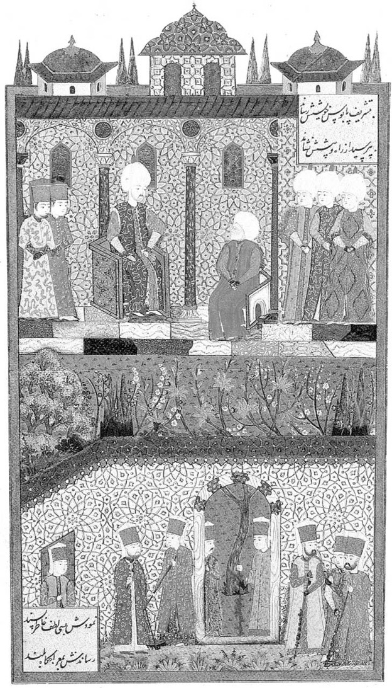
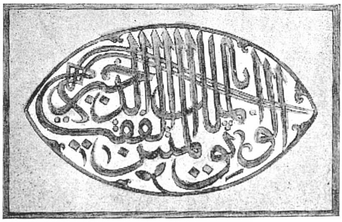
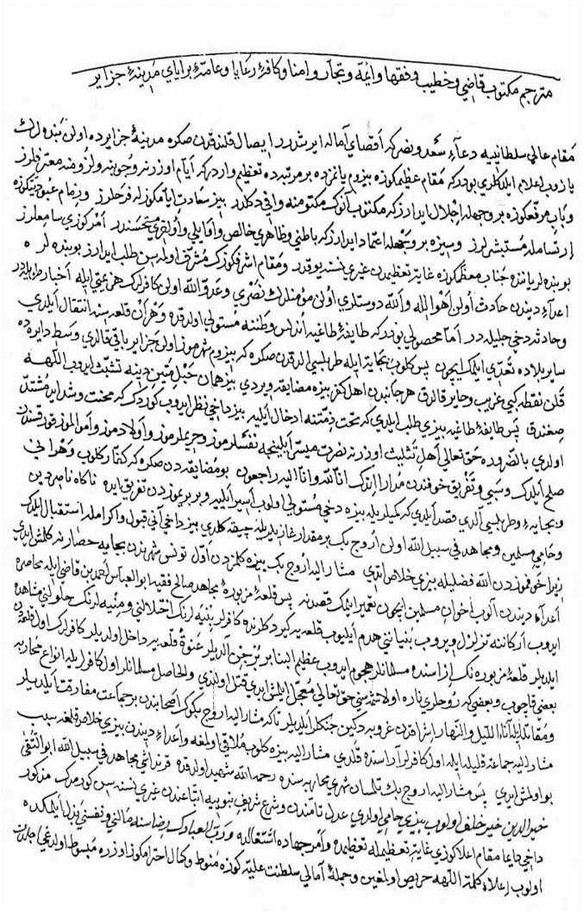
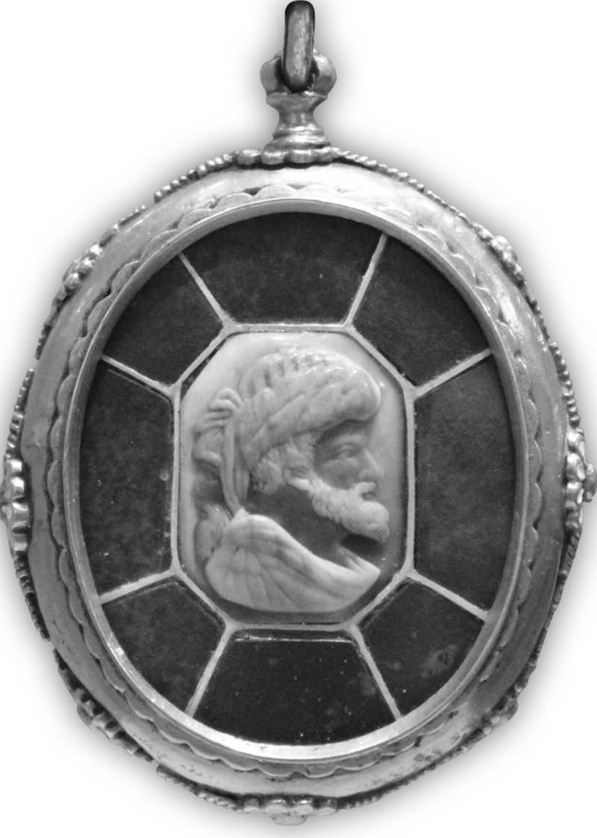

BARBAROS HAYREDDÎN PAŞA ve HÂTIRALARI
Hızır Hayreddîn Paşa, Midilli Adası fethedilince, Fâtih Sultan Mehmed Han’ın emri üzerine buraya Vardar Yenicesi’nden getirilip iskân edilen sipahilerden Yakub’un dört yiğit oğlundan biridir. Batılılar, sakalı havuç rengine çalar kırmızı renkte olduğu için ona “Barbaros” demişlerdir. “Hayreddîn” ismini ise kendisine Yavuz Sultan Selim Han vermiştir. Büyüyüp Akdeniz’e açıldıktan sonra, o koca deniz artık bu yiğidin kahramanlıklarıyla çalkalanmıştır. İlk zamanlar kardeşi Oruç Reis de denizde mücâdelel ere girişmişti.
Akdeniz’in her köşesinde ve her bucağında Müslümanların im-dâdına Hızır gibi yetişen bu iki bahadırdan Oruç Reis şehîd olunca, Hızır Reis tek başına bu mesuliyeti üstlenmiştir.
Barbaros Hayreddîn Paşa, yerine göre gayet yumuşak tabiatlı, halim; selim, müşfik ve mütevazi olan âciz bir kul; yerine göre de kılıcından şimşekler çakan, sesi semada yankılanan, karşısında düşmanları tir tir titreten bir heybet âbidesidir.
Kılıcıyla fethettiği bir ülkeye hükümdar olmak yerine, Osmanlı’ya bağlı olmayı tercih eden, Osmanlı sultanlarının duasını almayı Cezâyir’e sâhip olmaktan daha üstün tutan bu nümûne şahsiyet, gerek onların ve gerekse kılıcının gölgesinde huzur bulan mazlum mü’minlerin duaları bereketiyle o kadar yücelmiştir ki, kendisini Hristiyan dünyasının lideri kabul eden ve akıl almayacak derecede kibirli olan İspanya kralının başını önüne eğdirmiştir.
O aynı zamanda, bütün gazâlarında Allâh rızasını ön plânda tutmuş, ibâdetlerini ve günlük manevî vazîfelerini hiç ihmal etmemiş, tereddütlü kaldığı durumlarda istihâre ederek tereddüdünü gidermiş bir mânâ eri ve gönül sultanıdır.
Küçük bir gemi reisliğinden başlayıp günün birinde kaptân-ı deryâ olan bu müstesnâ kişinin hayatının bütün safhalarını maddesiyle mânâsıyla, inceden inceye anlatan bu eser, Kânûnî Sultan
Süleyman Han’ın Hayreddin Paşa’ya emri üzerine onun Seyyid Murâdî’ye yazdırdığı “Gazavât-ı Hayreddîn Paşa” isimli eserdir. Seyyid Murâdî, Hayreddîn Paşa’nın yanında ve hizmetinde bulunmuş reislerdendir. Çok açık bir Türkçe ile yazdığı eserindeki hâdiselerin bir kısmını Barbaros Hayreddîn Paşa’dan, bir kısmını gazâlara iştirâk edenlerden, çoğunu da bizzat kendisinin iştirâk ettiği seferlere şâhit olarak kaleme almıştır.
Gazavât-ı Hayreddîn Paşa’nın İstanbul Üniversitesi Kütüpha-nesi’nde TY 94, TY 2459, TY 2490, TY 2639’da ve Topkapı Sarayı Müzesi Kütüphânesi’nde manzum ve mensur nüshaları bulunmaktadır. Ayrıca eserin birkaç yayını da bulunmaktadır. Biz bu eseri neşrederken İstanbul Üniversitesi Kütüphanesi’ndeki bulunan TY 94, TY 2459, TY 2490, TY 2639 numaralı yazmalardan istifâde ettik. Okuyucuya kolaylık olsun diye de metni tamamen sadel eştirdik.
Seyyid Murâdî’nin kaleminden süzülerek satırlara dökülen bu metni yayınlayarak istifâde edilmesinde bir hizmetimiz olmuşsa kendimizi bahtiyar hissederiz.
Çamlıca Basım Yayın
Mart 2012
Müellifin Mukaddimesi
Sonsuz hamd ü senâ ve şükürl er bütün mevcudâtı yaratan ve canlıları rızıklandıran Allâhü Teâlâ’ya olsun ki, bizi yoktan var edip îmân elbisesiyle süsleyerek Kur’ân-ı Azîm nimetleriyle nimet-lendirdi ve onlarla zenginleştirdi.
Salât ve selâm, kâinatın serveri, mevcûdâtın övünç vesilesi, Âdemoğlunun efendisi, iki cihan sultanı, ins ve cinnin peygamberi Hazret-i Muhammed Mustafa (s.a.v.) üzerine olsun ki o, bütün günahkârların şefâatçisidir. Yine salât ve selâm onun ailesi, evlâdı ve ashâbı üzerine olsun ki onlar, Muhammed Mustafa (s.a.v.) Hazretlerinin sevgilileri ve dostlarıdır.
Adâlet ve ihsânıyla yeryüzünü donatan, melek tabiatıyla nam salan Arap, Acem ve Rum ülkesinin büyük hükümdarı, Sultan Süleyman Han’ın hatırına şöyle bir şey geldi ki, kendisinden önceki devirlere âit yazılan ve okunan târihl er gibi, kendi zamanında meydana gelen hâdiselerin tamamı da -büyüğüyle küçüğüyle ve târih sırasıyla- bir kitap hâline getirilip okuna.
Pâdişâh hazretl eri bu düşünce çerçevesinde olarak, Cezâyir beylerbeyi Hayreddîn Paşa’ya:
“Şimdi sen ve kardeşlerin nasıl ve ne sebeple ortaya çıktınız, sizler kimlersiniz? Bu zamana gelinceye kadar, karada ve denizde, büyük küçük ne kadar gazalar ettiniz? -Başlangıcından sonuna kadar- bunları eksiksiz olarak ve tafsilatıyla yazıp, kitap hâline getirip gönderiniz ki, onlar da benim zamanımda yazılan târihe kayd olunsun” diye yazdığı fermanı gönderdiğinde, onlar da -sultânın emri îcâbı- nazmıyla, nesriyle ve tafsilatıyla hayatlarını yazıp bir araya getirmeye teşebbüs ettiler.
Bunun üzerine Hayreddîn Paşa bilgilerin toplanması ve yazılması hususunda bana emir verdi ve ben de onun emri îcâbı doğru, açık ve Türkçe olarak yazmaya karar verdim. Bu bilgilerin bâzısını kendilerinin mübârek ağızlarından işittim, bazısını onlarla birlikte gazâlarda bulunan mücâhidlerden aldım, bazısını da -bu fakir1 birçok gazâlarda onlarla birlikte bulunduğumdan- bizzat şâhit oldum ki, doğruluğunda hiç şüphe yoktur.
1 Seyyid Murâdî
Böyl ece bu kitabı yazdık ki, hem pâdişâhın emri yerine gelsin ve hem de kardeşlerimiz okuyup, dinleyip istifâde etsinler. Bu ve-sîle ile de pâdişâh hazretlerine dualar etsinler. Bu arada Hayred-dîn Paşa’yı ve bu âcizi de duâdan unutmayıp bir Fâtiha-i şerîfe, üç ihlâs-ı şerîf ile yâd etsinler...
Ne var sala özüm tahte’s-serâya Ki ere her sözüm fevka’l-ulâya Umarım şah katında ola makbul Görüle her kelâmım anda ma’kûl.
Dünyada söylenmedik ve işitilmedik bir şey kalmamıştır. Mak-sud olan bu fânî dünyada bir eser bırakıp, hayır duâ ile anılmamıza vesîle olmasıdır. Nitekim denilmiştir ki:
Er oldur ki dünyada koya bir eser, Esersiz kişinin yerinde yeller eser.
Kaptân-ı Deryâ
Barbaros Hayreddîn Paşanın Hâtıraları
(Gazavât-ı Hayreddîn Paşa)
Hayreddîn Reis’in Aslı ve Nesli
Fâtih Sultan Mehmed Han, (Hazret-i All âh kabrini nurlandır-sın) Midilli Kalesi’ni2 fethedip, düşmanın elinden almıştı. Bu kalenin korunması için de yeteri kadar muhâfız seçilip yazılarak orada kalmaları kararlaştırıldı. Bunun üzerine bu yiğitler bir arzuhal yazarak pâdişâh hazretlerine takdim ettiler. Şöyle ki:
2 Midilli: Ege Denizi’nde, Batı Anadolu kıyısında Edremit Körfezi’ne doğru sokulmuş büyük bir ada.
“Bizim burada kalmamızı emir buyurdunuz. Bâri bazı ihtiyaçlarımız karşılansın ki perişan olmayalım.
Biliyorsunuz burası bir adadır, biz de bir bölük bekâr tâifeyiz. Etrafımızda İslâm beldeleri yoktur ki onlarla muamele edelim. Ömrümüz burada bekâr olarak geçer mi?” dediler.
Fâtih Sultan Mehmed Han bunun üzerine:
“Gerçekten doğru söylüyorlar. Ancak bunlar orada niçin bekâr kalsınlar? Düşmanlar ile aralarında iyi münâsebetler olması için bazı tedbirler alınması gerekir.” deyip şöyle emir buyurdu:
“Benim emr-i şerîfimle Midilli’de kalan bu erlerim, yine benim emr-i şerîfimle bu adanın kızlarından beğendiklerini nikâhlayıp, onlarla evlensinler. Bu hususta hiç kimse güçlük çıkarıp mâni olmasın. Böylece Müslümanlarla Müslüman olmayanlar arasında bir yakınlaşma meydana gelir ve Midilli Kalesi’nin korunması sağlanmış olur.”
Bu emr-i şerîfi ve kendilerine yapılan himmeti gören muhâfız-lar orada kalmaya razı oldular.
Bu muhâfızların içinde, Selanik yakınlarında bulunan Vardar Yenicesi’nden Yakub Ağa diye bilinen bir şahbaz yiğit vardı ki, -o da bir sipâhî oğluydu- beğendiği bir kızı nikâhlayıp evlendi. Ondan dört oğlu dünyaya geldi. Bunların en büyüğünün adı İshak, ikincisinin adı Oruç, üçüncüsünün adı Hızır ki -bu Hayreddîn Paşa’dır-en küçüğünün adı da İlyas idi.
Bu yiğitlerin dördü de -Allâh’ın izniyle- kemâle erdiklerinde İshak, Midilli’de yerleşip, hayatını orada devam ettirdi. Oruç, reisliğe heves edip bir gemi tedârik ederek ticârete başl adı. Hızır da aynı şekilde on sekiz oturak bir gemi yaptırıp, kendi gemisinin reisi olarak ticâret etmeye başladı.
Bunlar ticâretle uğraşırlar; bir memleketten aldıkları malları diğer memlekette pazarlarlar ve bu şekilde bütün ihtiyaçlarını karşılayıp, kimseye ihtiyaçları kalmazdı.
Hızır, ekseriyetle Sire, Selanik ve Eğriboz’a sefer ederdi. Oruç, İskenderiye, Trablus ve Şam taraflarına gider gelirdi.
Ilyas’ın Şehâdeti ve Oruç Reis’in Esir Düşmesi
Oruç Reis bir gün kardeşi İlyas’ı da yanına alarak Şam Trablus’u taraflarına gitmişti. Yolda Rodos3 gemileriyle karşılaştılar ve aralarında şiddetli cenk meydana geldi. Netîcede Rodoslular gâlip gelip İlyas’ı şehîd ettiler. Oruç Reis esir düştü ve onu gemileriyle birlikte alıp Rodos’a götürerek hapsettiler.
3 Rodos: Ege Denizi’nin güney doğusunda, Türkiye kıyılarının yakınında büyük ada.
Bu kötü haber yayılıp, Midilli’de bulunan Hızır Reis’e ulaştığında son derece üzülüp perişan oldu. “Hüküm ve takdir Allâh’ındır.” dedi.
Olacak olsa gerek çâr nâ-çâr Gerek kalbin gen tut, gerek dar.
mazmûnu üzere, bu dinsizlerin pençelerinden Oruç’u kurtarmak için hayli mal ve para tedârik ettikten sonra, Aslen Rodoslu olup da Midilli’ye yerleşmiş gayri müslim tanıdığı vardı. Bu adam sık sık Rodos’a gider gelirdi o kişiye kardeşi Oruç’un başına gelenleri anlattı ve kendisine bin akçe verip yanına alarak gizlice Bodrum’a gittiler. Oradan bu kişiye:
”Var şimdi sen Rodos’a git, Oruç’la buluş ve bir haber al gel bakalım durumu nedir? Onu nasıl kurtarabileceğimiz hususunda
istişâre ediniz. Ne yapılması gerekiyorsa söylesin. Sakın ha bizden habersiz bir iş yapma!” dedi.
O kişi, bir düşman teknesiyle Rodos’a varıp, bir şekilde Oruç’la buluştu ve ona gizlice:
“Kardeşin Hızır beni sana gönderdi, selâmı var. Senin için yanar tutuşur ve hayırlı bir haber bekler. O seni kurtarmak için büyük miktarda dünyal ık getirdi. Bunun için ne gerekiyorsa yapacak. Şimdi sen, kurtuluşun için ne yapılması gerektiğini söyle!” dedi.
Oruç Reis bunu duyunca sevincinden ağladı ve:
“Sağ olsun, bu gün bana kardeşlik hakkını yerine getirdi. Var şimdi sen git istirahate çekil ve bu söylediklerini unut. Öyl e ki bu sırdan sırtındaki gömleğinin bile haberi olmasın. Ben işin hal çaresini bir düşüneyim, tekrar görüştüğümüzde sana haber veririm; ama sakın kardeşimin ne kadar para getirdiğinden kimseye bahsetme!” diye tenbihte bulunup o kişiyi yanından savdı.
Oruç Reis’in, Rodos Adası’nda, Santurluoğlu isimli bir tanıdığı vardı. Hemen onunla buluşup:
“Sen iyi bir kişisin, esir hâlinden anlarsın. Lütfen beni satın al, dilersen yine satarsın, eğer dil emezsen nasıl istersen öyle yaparsın, senin elinde olayım.” diyerek kendisini taltîf edip ricâda bulununca, o da Oruç Reis’in bu iltifâtını ve ricâsını duyunca râzı oldu ve:
“Peki, ben filân berberin dükkânına varıp oturayım, kaptanlar ekseriyetle oraya gelirler. Sen onları gözle. Gelip o dükkânda oturdukları vakit dükkânın önünden geç ki ben de seni görüp onlardan isteyeyim, eğer benim elimde senin yiyecek ekmeğin varsa bu iş olur biter, seni alırım; ama seninle bizim anlaşmamızı kimse duymasın.” dedi.
Oruç Reis bu sözleri duyunca, âzâd olmuş gibi sevinip “Senin dediğin gibi olsun” diyerek ayrıldı.
Bir zaman sonra bahsolunan dükkânın karşısına vardı ve gördü ki Santurluoğlu oraya gelmiş, diğer kaptanlarla birlikte oturuyorlar. Oruç Reis, kendi hizmetine gider gibi olup, onların önlerinden geçti. Santurluoğlu Oruç’u gördüğü gibi kaptanına:
“Ey kaptan! Gel sen şimdi şuradan geçen Türk’ü bana sat; fiyatı her ne ise vereyim” dedi. O da razı oldu ve fiyat olarak bin kızıl altın para istedi. Nihâyet diğer düşmanların da araya girmesiyle yirmi beş bin akçeye anlaştılar.
Ancak, o zamanlar Rodos’un bir âdeti vardı ki, adayı iki kaptan yönetirdi. Bunların biri denize hükmeder, diğeri de vilâyeti idâre ederdi. Yine birisi eski, diğeri yeni tâyin edilmişti. Oruç Reis bu iki kaptanın da hissesine düşmüştü, dolayısıyla Oruç Reis’e ikisi de ortaktı. Santurluoğlu Oruç’u istediğinde ikisi de orada bulunuyordu. Bu satışa eski kaptan razı olduğu halde, yenisi razı olmadı. Aralarında anlaşmazlık çıkınca yeni kaptan diğerine:
“Madem bu Türk’ün bahası yirmi beş bin akçedir, o halde senin on iki bin beş yüz akçe hissen olur. Ben sana bu parayı veriyorum, al da çık aradan. Ben nasıl istersem öyle yaparım” dedi.
Eski kaptan da topluluk içinde böyle küçük düşürücü sözleri duyunca:
“Getir sen bana on iki bin beş yüz akçeyi ver de, sonra nasıl istersen öyl e yap!” dedi.
Mel’un kaptan hemen on iki bin beş yüz akçeyi eski kaptana teslim ettikten sonra Oruç Reis’i evine götürüp, öncekilere bir demir daha ilâve ederek hendeğe bıraktı. Evvelki kaptanın yanın-dayken hafif işler görüp sadece bir ayağı demirliyken, şimdi daha ağır şartl ar içinde ve daha zor işler gördürülmeye başlandı.
Oruç Reis başına gelen bunca dertlerin ve sıkıntıların sebebini sorgular, ağlar ve Allâh’ın kaza ve kaderine razı olurdu.
Bir gün başında bekleyen gardiyana:
“Gel beni bu gün kaptana götür; ona birkaç sözüm var; söyleyeyim ki içime dert olmasın” dedi.
Gardiyan da onu alarak kaptanın yanına götürdü. Kaptan öfkeli bir şekilde:
“Murâdın nedir, neye geldin?” dedi. Oruç Reis de ona:
“Senin murâdın nedir, benden ne istiyorsun? Bana bir demir yetmez miydi ki bir demir daha vurup hendeğe bıraktın ve bana eziyetler edersin?” dedi. Düşman bunları duyunca:
“Ey Türk! Seni bu kadar demirlerle bırakacağımı zannetme. Ben sana birkaç demir daha vurup, ne eziyetler, ne işkenceler edeceğim; başına ne işler açacağım göreceksin!” dedi. Oruç Reis bu uygunsuz kelimeleri duyunca, düşmana: “Bunlardan murâdın nedir? Bilelim” dedi. O da: “Benim ne istediğimi bilmez misin ki? Senin kardeşin hadsiz hesapsız mal getirmiş, Bodrum’da beklermiş; ancak sen vermek istemezmişsin. İşte gör şimdi hâlini” deyince, Oruç Reis:
“Ey kaptan! Senin bu söylediklerin asılsız ve boş lakırdılardır, böyle asılsız şeylerden eline bir şey geçmez. Bunları bırak da ben sana olacakları söyleyeyim. Eğer gerçekten beni satmak istersen gel beni, bana sat. Ben kendimi satın alayım” dedi. Kaptan:
“Ne verirsin?” deyince, Oruç Reis:
“Ne versem gerektir? Sana Rumeli’nin tamamını arpalık ve Anadolu’yu da cep harçlığı olarak vereyim, tek senin elinden kurtulayım, hemen beni serbest bırak” dedi.
Bunun üzerine kaptan öfkeyle ayağa kalkıp:
“Bre Türk! Bunlar ne biçim sözlerdir. Sen beni maskaralığa mı alıyorsun ki böyle mantıksız şeyler söylersin. O vilâyetlerin hâkimi yok mudur, sultanı yok mudur ki bana bunları vermekten bahsedersin? Bunlar ne biçim kelimelerdir?” dedi.
Oruç Reis:
“Ey kaptan! Hiç kızma ki benim sözlerim senin sözünden daha edepsiz değildir!” Kaptan:
“Ben ne edepsiz söz söyledim ki beni edepsizlikle itham edersin?” deyince, Oruç Reis:
“Sen bana dersin ki, “senin Rumeli ve Anadolu’da neyin var?” Peki benim Bodrum’da olan malda neyim olabilir? Bilirsin ki “Deryâda tutulmadık balığın nihâyeti yoktur.” Siz beni gemimle ve bütün malımla birlikte aldınız. O halde benim Bodrum’da veya diğer yerlerde neyim olur ki? Asıl sen edep dışı kel imeler edersin ve ağır bahalar kesmek istersin. Öyle ya ben sultan çocuğu muyum? Ben bir rençper kimseyim. Eğer beni satmak istersen, bir gemiye koyup gönder, değerime göre baha buluvereyim.”
Bu sözl er kaptanın canını sıkarak, hemen onu yine hendeğe gönderdi. Oruç Reis anladı ki bu düşmanın elinden baha ile kurtulmak mümkün değil, hemen samîmî bir kalble yüzünü İlâhî dergâha tutup:
“Ey All âh’ım! Bütün kimsesiz kalmışlara derman senden olur. İbrahim peygambere (aleyhisselâm) Nemrud’un ateşini gülistan eyleyen sensin; Yusuf peygambere (aleyhisselâm) zindandan necat veren sensin; bütün zorlukları kulların için kolaylaştıran sensin; bütün muradına kavuşamayanları muradına erdiren sensin. Ha-bibin Muhammed Mustafa sallallâhü aleyhi ve sellem hürmetine beni bu düşmanların elinden sen azad eyle!” diye göz yaşıyla duâ ettikten sonra uykuya vardı.
Rüyasında nur yüzlü bir zât gelip:
“Ey Oruç! Sen sabret ve hiç üzülme! Sıkıntılardan kurtulman yakındır. Sen, kurtuluşun için bu kadar para vermeye razı olmuşken, merhametlilerin merhametlisi olan Allâhü Teâlâ seni bir akçe bile vermeden kurtarmaya kâdirdir. Daha nice gazalara gideceksin” deyip kayboldu.
Oruç Reis uykudan uyanınca Allâh’a şükredip sabaha kadar ibâdet ve tâatle meşgul oldu.
Düşmanların Alay Etmesi!
O sıralarda Sultan Korkut Antalya’da idi. Onun öyl e bir âdeti vardı ki, her yıl bir hayli altın ve gümüş ayırarak, güvenilir adamlarıyla Rodos’a gönderir, Allâh rızâsı için bir nice esiri azad ettirirdi. Yine o zaman da, yeteri kadar parayı kapıcıbaşının eline verip: “Var, Rodos’ta düşmanlar elinde esir olan Müslümanlardan kırk neferini alıp Allâh rızası için azad eyle!” diye gönderdi. O da bir gemiyle Rodos’a geçip, istenilen kırk Müslümanı düşmanların elinden satın aldı. Düşmanlar da esirleri teslim mahalline götürmek için üç adet kadırga4 ile yola çıktılar. Oruç Reis’i de kürek çekmek için gemiye almışlardı.
4 Kadırga: Her küreğini dört-beş kişinin çektiği ve yirmi beş oturaklı savaş gemisi.
Yolda giderken sohbet esnasında Oruç Reis’e:
“Sen Müslümanlıktan ne fayda sağlıyorsun, gel sen Hıristiyan ol. Bak işte bizim lisanımızı da biliyorsun. Eğer bizim dinimize girersen aramızda itibarlı bir kişi olursun” dediler.
Gerçekten Oruç Reis Rumcayı çok güzel konuşurdu ve sohbeti pek tatlıydı. Onun için nereye varsa düşmanl ar başına toplanır, büyüğü ve küçüğü onunla sohbet ederlerdi. Burada da düşmanlar, küfürlerini tercîh edip bu teklifi yaptılar.
Düşmanların bir âdeti vardı ki gemilerinde heykeller ve resimler taşıyıp götürürler ve onlardan yardım umarlardı. Oruç Reis de bu inançsızlara bunları gösterip dedi ki:
“Sizin iyiliğiniz bu mudur ki, kendi elinizle yaptığınız şu resimlerden ve heykellerden medet umarsınız. Onlardan size ne fayda gelir. Eğer şimdi onların başlarına bir musîbet gelse, ateşe atılsalar, kuyuya bırakılsalar veya bir balta ile parçalansalar, kendilerini kurtarabilirler mi?! O halde, felâketten kendini kurtaramayan, musîbet-ten selâmete çıkamayan bir varl ığın sana ve bana ne faydası olur? Ben bunları bilirken ve görürken sizin dininize nasıl girerim?” dedi.
Onlar da alay yollu:
“Peki senin durumun böyle perişanlıkken senin Muhammed’in senin için ne yapıyor? Neden seni kurtarmıyor?” dediklerinde, Oruç Reis onlara:
”Benim Muhammed’imin bana ne yardım ettiğini yakında görürsünüz. Benim Muhammed’im iki cihân fahridir. Bütün peygamberler ve velîler hep ondan şefâat umarlar. Onlara şefâat eder de bana etmez mi? Allâh’ın izniyle en kısa zamanda o gelip beni kurtaracaktır. Her kim can ü gönülden dilerse mutlaka onun şefâ-atine nâil olur. Ben de kendimi samimi bir kalple Hak Sübhânehû ve Teâlâ Hazret lerine ısmarlayıp, o iki cihan fahri Muhammed Mustafa (s.a.v.)’i şefâatçi kabul ediyorum, elbette beni mahrum bırakmaz, gelip bir gün kurtarır.” deyince, inançsızlar gülüşerek:
“Hele sen şimdilik bir taraftan kürek çekmeye, bir taraftan da gönlünü teselli etmeye devam et. Bakarsın bir gün Muhammed’in gelir de seni hem esâretten ve hem de kürek çekmekten kurtarır!” diye alay ederlerdi.
Oruç Reis ise, samimi bir kalple Cenâb-ı Hakk’a yönelip ellerini kaldırarak:
“Allâh’ım! İzzetin ve celâlin hakkı için, beni bu inançsız müşrikler arasında utandırma! Bana en kısa zamanda kurtuluş nasip edip, habîbin mûcizesini göster!” diye niyaz ederdi.
Oğul, Elhamdülillâh Rabbin Sana Yol Vermiş
Rodos’tan yola çıkan üç gemiden ikisi Rum’a gitti. Oruç Re-is’in olduğu gemi ise Antalya yakınlarında bir buruna demir attı ve geminin sandalı da kaptan için balık avlamaya gittiğinden gemi sandalsız kaldı. Ortal ık süt liman iken, kısa bir süre içinde Rüzgâr ters yönden esti ve fırtınalar kopup dünyayı karanlık bürüdü. Öyle ki herkes kendi hâliyl e meşgul olmaya başladı. Bir müddet sonra da her birisi yorgun düşüp uyudul ar.
Oruç Reis daha Rodos’ta iken ayağındaki demirlerin birisini kesip inceltmişti. Bunu kimse bilmiyordu. O gece de fırsat bulup bir demirini daha kestikten sonra Hak Teâlâ’ya sığınıp, besmele çekerek kendisini denize bıraktı ve yüze yüze kıyıya çıktı.
Ayağı toprağa değince şükür secdesine kapandı; yüzünü gözünü toprağa sürüp yola koyuldu. Sâhile yakın bir tepenin başında bir köy gördü. Oraya hareket ederek ihtiyar bir kadının evine misafir oldu. O kadına başından geçenleri anlattı. Kadın:
“Oğul, elhamdülillâh Rabbin sana yol verip akrabalarını sevindirmiş” diyerek, hemen önüne yemek getirdi. Bu arada köy halkı da duyup Oruç Reis’in yanına geldiler, durumunu öğrenip sevin-dil er. O köyün halkı hep iyi insanlardı; misafir-perver, cömert ve mü’min kimselerdi.
O köy Rodos yakınlarında ve deniz sâhilinde olduğundan, Rodos’tan kaçıp kurtulan esirler hep oraya varırlardı. Köy halkı da gelen esirlere iyi davranır, onları alıp evlerine götürerek ikramda bulunurlar ve üstlerine elbiseler giydirip, memnun ederek gönderirlerdi.
Oruç Reis’e de -ellerinde bulunandan- üzerine don, gömlek ve kaftan, başına tülbent ve ayağına ayakkabı giydirip, eline de bir miktar harçlık vererek, gerektiği gibi ikramda bulundular. Oruç Reis sabaha kadar o köyde kaldı.
Beni Ancak Kudretiyle Kurtaran, Kurtardı
Öte yandan düşmanlar da gece yarısına kadar orada yattıktan sonra kalkıp gitmel eri gerekiyordu. Gitmek istediklerinde yoklama yaptılar, “Esirler kaçmış!” diye haber yayılınca, hareket etmeyip sabaha kadar beklediler. Sabah olunca durumdan kaptanı haberdar ettiler. O da hemen üç adam seçerek:
“Gidin, şu karşı köyde var mıdır, yok mudur? Bir haber alıp gel in. Eğer herhangi bir haber yoksa buradan hareket edelim!” deyip, onları gönderdi. Adamlar gemiden çıkıp doğruca o köye gittiler ve Oruç Reis’in kaldığı kadının evine vardılar. Oruç’u bulup kendisini tebrik ettikten sonra:
“İnancın hakkı için söyle, bu kadar demirlerl e bağl ı olduğun halde onları bir gecede nasıl kırdın ve nasıl kurtuldun. Bu kadar demiri bir günde ancak -çekiç ve örs ile- ustalar bozabilirlerdi. Bu, insan işi değildir, lütfedip bize söyle sen nasıl kaçtın?” dediler.
Oruç Reis düşmanların bu sözlerini duyunca:
“Ben kaçmadım, sizler oturuyordunuz, ben birkaç kişiyle varıp, kaptandan izin alıp çıktım. Yani ben buraya kaptanın izniyle geldim. Biz sizleri görüyorduk da sizler bizi niçin görmediniz?” dedi. Düşmanlar şaşırıp, içlerine bir şüphe düştü. Gerçekten birkaç kişiyle karşılaşmışlardı, “onlar olmalı” diye düşünüp: “Yoksa onlar sizler miydiniz? Onları gördük ama kimler olduğunu merak etmedik. Peki yanındakiler kimlerdi, bize onlardan bir haber ver” dediler.
Oruç Reis:
“Biri benim Peygamberim Muhammed aleyhisselâm idi; di-ğerl eri de onun ashâbı idi. Ben dün sizlere demedim mi ki, “Benim Muhammed’im (s.a.v.) mutlaka gelir, beni kurtarır” diye. İşte geldi, kurtardı; yoksa bir gece içinde kaptanın bana vurduğu demirlerden kurtulmam mümkün olur muydu? Veya bir insan yalnız başına sizlerin içinden çıkıp kurtul abilir mi? Ancak beni kudretiyle kurtaran kurtardı.” dedi ve devamla:
“Kaptana deyiniz ki, eğer benim gittiğime çok incinmişse, bana bir haber göndersin ki ben yine gemiye varayım da her ne kadar demiri varsa bana vursun; Çünkü benim -Muhammed gibi- bir şefâatçim ve yardımıma koşan bir peygamberim vardır. Her ne zaman zorda kalsam, ondan yardım isterim, o da gel ip beni kurtarır. Biliyorsunuz ki dün kurtulmayı diledim, gece kurtardı. Eğer daha evvelden isteseydim o yine kurtarırdı. Şayet o isterse, Allâh’ın izniyle bir saat içinde kaptanın gemilerini karaya çıkarır.” dedi.
Düşmanlar ondan bu sözl eri duyunca kendisine hayrân oldular. Sonra oradan kalkıp gelerek, durumu kaptana haber verdiler. Kaptanın canı sıkıl ıp huzuru kaçtı ve sanki dil i tutulmuş gibi hiç konuşmadan yoluna devam etti.
Müjdeler Olsun Sana! Kardeşin Kurtulmuş
Hızır Reis’in Rodos’a gönderdiği düşman gelip Hızır’la buluştu. Ona:
“Müjdeler olsun sana ki, kardeşin gemiden çıkıp kurtulmuş!” deyince, Hızır Reis öfkelenip:
“Ey mel’un! Sen neler söylüyorsun? Bu dediğin olacak iş midir? Hiç onu kurtulacak şekilde bırakırlar mı? Onların içinden bir insan yolunu bulup da kurtulabilir mi? Bu senin söylediğin apaçık bir yalandır! Şimdi anlaşıldı ki sen buraya bizim için değil, belki sadece akrabalarını görmek için gelmişsin” deyince, o düşman, Hızır’a:
“Ben yalan söylemiyorum; eğer sen bana inanmazsan, oradan gelen gemilerden sor, onların hepsinin de bundan haberleri vardır” dedi.
Hızır Reis bu cevabı duyunca, hemen yerinden kalkıp deniz kenarına gitti. Düşmanl ardan sağl am haberl er aldıktan sonra Oruç Reis’in bindiği geminin kaptanıyla görüşüp:
“Ben Oruç Reis’in kardeşiyim. İşte sana altın getirdim, kardeşimi bana ver” dedi. Mel’un, altın sözünü duyunca, onun gemiden kaçtığına bir kat daha üzülüp:
“Dün gece kaçmış, kurtulmuş, şimdi bizim elimizde değildir” diye cevap verdi. “Bin altın” sözü kulağında yankılanıp, üzüntüsünden helâk olma derecesine geldi. Zaten Hızır Reis’in murâdı da bu düşmana üzüntü vermekti.
Hızır Reis bu haberleri aldıktan sonra yine Midilli’ye gelip, gemisine binerek evvelki gibi reisliğe ve ticârete başladı.
Oruç Reis Mısır Sultanının Kadırgalarında
Sabah olunca Oruç Reis kalkıp, köyden ayrılarak Antalya’ya gitti. O zamanlarda Antalya’da “Ali Reis” isimli bir reis vardı.
Ali Reis iyiliksever bir kimse olup, kendisine âit büyük bir kal-yonu5 vardı. Onunla sürekli olarak Mısır’a gider gelirdi. Oruç Reis onun yanına varıp, selâm ve hürmetlerini sunduktan sonra, ona kendini tanıttı. Bulunduğu durumu anlatarak:
5 Kalyon: Yelkenle hareket eden savaş gemileri. Karaka, barça, karavela ve burton gibi çeşitleri vardır. Çok büyükleri nakliyat için kullanılırdı.
“Ey Ali Reis! İşte benim durumum mâlum. Sizlere gelmekten murâdım budur ki, lütfedip beni kalyonunuzda yelken reisi yaparak, bana bir insanlık gösterirsiniz.” dedi. Ali Reis:
“Hoş geldin. Benim, senin gibi yiğit bir kimse nerede elime geçer ki. Sen reislik etmiş bir kimsesin. Tek sen kabul et; gemi benim değil senindir. Gel bu saatten sonra gemide ol” dedi.
Oruç Reis memnunluk içinde varıp o kalyona girdi ve ikinci reis olarak işe başladı. Oradaki işlerini tamamladıktan sonra bir mübârek saatte Hak Sübhanehü ve Teâlâ Hazretleri’ne sığınıp, yola çıktılar.
Günlerce yol aldıktan sonra İskenderiye’ye vardılar ve oraya demir attılar.
Oruç Reis’in nâmını duyan Mısır sultanı onu huzuruna çağırıp, kendi kadırgal arından birine kaptan tâyin etti. Birkaç gün orada kaldılar. Meğer o sıralarda Mısır sultanı donanma hazırlayıp Hin-distân taraflarına göndermek istiyormuş. Oruç Reis’i bu donanmaya serasker tâyin etti. Sonra da Adana beyine öyle emir verdi ki:
“Acele olarak yanında olan askerlerle Payas körfezine gelip, kırk kalitelik6 kereste hazırlayınız ve iş bitince bana haber gönderiniz!” diye emir verdi.
6 Kalite: On dokuz-yirmi dört oturaklı ağır donanma savaş gemisi.
Adana paşası bu emir üzerine hemen işe koyulup keresteyi hazırladıktan sonra haber gönderdi. Mısır sultanı da, keresteleri alıp getirmek üzere, Oruç Reis’in kumandası altında on altı adet gemi gönderdi. Bunlar varıp Payas Körfezi’ne girdiler. Ne var ki, düşmanlar da bunların donanma ile o körfeze hareket ettiklerini haber almışlar ve bir hayl i kadırgalar hazırlayıp donatarak, körfezde üzerlerine geldiler. Mısır donanmasını gâfil avladılar. Üzerlerine varıp basıp, içindeki adamları denize döktükten sonra gemilerini yaktılar.
Bunlar da düşman donanmasını gördüklerinde, başlarına gelecekleri anlayıp, bindikleri gemiyi ateşe verdiler. Kendileri de karaya çıkıp, her birisi bir yana dağıldılar. Yâni Rumeli’den olanlar Rumeli’ye, Anadolu’dan olanlar Anadolu’ya, Arap ve Acem’den olanlar da kendi memleketlerine gittiler. Oruç Reis de üzüntülü olarak Antalya’ya geldi.
“Allâh Seni Din Düşmanlarına Karşı Muzaffer Kılsın”
Meğer o sıralarda Sultan Korkut Antalya’da imiş. Yanına vararak bir gemi yapmak için ondan izin aldı ve çalışmalara başlayarak on sekiz oturaklı bir gemi yapıp donatarak denize açıldı ve Rodos Adası tarafına hareket etti. Zamanla çevreye o kadar korku saldı ki, o taraflarda olan düşmanlar gelip Rodos beylerine şikâyette bulundular:
”Oruç Reis adında bir korsan ortaya çıktı. Öyle ki uçan kuşa bile hükmeder. Köylerimizi ve şehirlerimizi yakıp yıkıp, çocuklarımızı esir alarak Şam tarafl arında satar. Elinden feryat ediyoruz ki,deniz sâhillerinde kimse bırakmadı aldı. Kal anl ar da korkudan firar edip dağıldı, ada sâhillerinde gemilerini yürütemez oldu. Hulasa olarak, halk bu işlerden ve rençberlikten vazgeçti. Kimsenin bir adadan diğerine gitmeye gücü yetmiyor” diye şikâyette bulunarak, kendilerine yardım etmesi için yalvardılar.
Rodos beyl eri de birkaç gemi donatıp, Oruç Reis’i liman liman aramaya başladılar. Nihâyet bir limanda bularak ansızın baskın yaptılar. O da adamlarıyla birlikte gemiyi terkedip karaya çıktı. Bütün arkadaşlarını kurtardığı gibi bir hayli Frenk esirlerini bile kurtardı ve Sultan Korkut’la buluşmak için hep birlikte Antalya’ya geldiler. O sıralarda Sultan Korkut’a Manisa sancağı verildiğinden, tekrar hareket edip Manisa’ya vardılar.
Manisa’da Sultan Korkut’un en yakın adamlarından Piyâle Bey ile görüşüp, ona başından geçenleri anlattı. Sonra, Piyâle Bey’in vasıtasıyla Sultan Korkut’la da görüştü. Sultan Korkut duruma çok öfkelenip hemen bir emirnâme yazdı ve:
“Var bu emri İzmir kadısına götür. Orada istediğin gibi bir gemi yaptır. Sonra da git o mel’unlardan intikamını al!” dedi.
Piyâle Bey’le de:
“Gemi yapılıp tamamlandığı zaman gemisiyle Foça’ya gelsin. Gemiyi orada bıraksın ve kara yoluyl a hareket ederek bizimle Manisa’da buluşsun.” diye sözleşmede bulunmuştu.
Oruç Reis İzmir’e gidip, emri kadıya gösterdi. Kadı, emir gereği, yirmi dört oturaklı bir gemi yaptırdı.
Oruç Reis gemi yapımını tamamladığında oradan hareket edip Foça’ya geldi. Gemiyi Foça’da bırakarak, kendisi karadan Manisa’ya geldi ve gidip Piyâle Bey’le buluştu.
Piyâle Bey, Oruç Reis’i divana iletip, halkın içinde kendisine saygı gösterilmesini arzu ediyordu.
Düşündüğü gibi yapıp, divana götürdü. Orada üzerine kaftan giydirildi. Sultan Korkut:
“Allâh seni düşmanlar üzerine mansur ve muzaffer eylesin” diye hayır dua edip sırtını sıvazladıktan sonra Frengistan taraflarında korsanlık etmesi için destur verdi.
Daha sonra gelip yine Piyâle Bey’le buluştu. Piyâle Bey ona:
“Her neye ihtiyacın olursa bu tarafa adam gönder ve durumu arz et, bütün ihtiyaçların karşılanır” diyerek izzet ve ikramla gönderdi.
Oruç Reis vedalaştıktan sonra Foça’ya geldi, gemisine girdi ve sabaha kadar ibâdetle vakit geçirdi. İhl as ile bütün hâcetlerin karşılayıcısı olan Yüce Allâh’a tazarru’ ve niyaz edip:
“Ey Allâh’ım! İzzet ve celâlin hakkı için, habibin Muhammed Mustafa hakkı için ve bütün enbiyâ ve evliyân hakkı için bu âciz kulunu din düşmanları üzerine muzaffer eyl e!” diye duâ ettikten sonra besmele çekip Hazret-i Allâh’a tevekkül ederek denize açıldı.
Şüphesiz ki bir mübârek saate rast gelip duası makbul oldu. Oradan memleketine gelip akrabasını ziyâret ederek sıla-i rahm ettikten sonra yine yola koyuldu.
Çünkü Osmanoğullarının Duasını Aldı
Günlerden bir gün selâmetle Pulya7 yakasına geçti. Orada dolaşırken Venediklilere âit iki adet barçaya8 rastlayıp hemen el koydular ve büyük ganimetlere kavuşup zengin oldular. Nasıl zengin olmazl ar ki, çünkü Osmanoğull arının duasını aldılar. Her kim Osmanoğull arının duasını alırsa, arzu ettiği şeyi mutlaka kol ay-lıkl a elde eder. Çünkü bunl ar bir ulu ocaktır. Her kim bunlardan hayır dua alırsa, her işi kolay olur; her kim de bunlara yan gözle bakarsa, onun başı öne eğil ir.
7 Pulya: İtalya’nın güney doğusunda Apulia Eyâleti.
8 Barça: Yük taşımada kullanılan ve kalyon sınıfından bir gemi. Altı düz olur ve içinde top bulunurdu.
Oruç Reis, Pulya taraflarından barçaları alıp Rumeli taraflarına doğru hareket etti. Eğriboz yakınlarında Terzi Limanı diye meşhur olan limana geldi. İstedi ki orada bekleye. Meğer orada Venedik gemilerinden üç barça kalyon varmış. Oruç Reis’i görünce, topa tuttular. “Bizim sizlere zararımız ziyanımız olmayacaktır!” diye söz vermelerine rağmen kulak asmayıp, bunların limana girmesine fırsat vermedil er.
Oruç Reis de arkadaşlarına:
“Ey yoldaşlar! Bu gemilerin bizi limana koymamaktan ve üstümüze top atmaktan maksatları olsa olsa şudur. Bunlar bize diyorlar ki:
“Siz mücâhidlersiniz. Allâh bizi, siz mücâhidlerin ağızlarına lokma olarak hazırladı. Kuvveti pazuya vererek, Allâh’ın yardımı ve serverinizin mucizeleri bereketiyle niçin gelip de bizi almıyorsunuz? Halbuki bir av için bu kadar denizler geçersiniz. İşte biz kendimiz ayağınıza geldik, şimdi gelin bizi alın!” Hiç şüphesiz bunların başlarına gelecek belâlar yakındır. Çünkü biz bunlara zarar etmeyelim diye bu kadar ahd ü emân eyledik. Onlar ise bizi rencide ettiler. Vallâ-hi ben “Allâh Allâh” diyerek onlara çatarım.” deyince, arkadaşları:
“Sen nasıl bilirsen ve nasıl edersen, biz onu hoş görürüz” diyerek hepsi de bağlılıklarını bildirdiler. Oruç Reis de hemen sancağını kaldırıp gülbank-ı Muhammedî ile üzerlerine yürüdü. Aralarında hayli cenk oldu. Gerçekten Oruç Reis’in dediği gibi kazâları yakınmış ve belayı başlarına satın almışlar. Cenâb-ı Hakk’ın yardımıyla gemilerin dördünü de alıp, yine denize açılarak Midilli Ada-sı’na geldiler. Orada sıla-i rahm edip kardeşleriyle ve akrabalarıyla buluşup görüştüler.
Oruç Reis Kışı Mısır’da Geçirir
Bu arada Sultan Selîm Han tahta geçmişti. Kardeşi Sultan Korkut ile aralarında bir nevi düşmanlık olduğundan Sultan Korkut, korkusundan izini kaybettirmişti.
Oruç Reis ile Sultan Korkut arasındaki dostluk herkes tarafından bilindiğinden, ağabeyi İshak ile kardeşi Hızır Reis, Oruç Reis’in şimdilik ortalarda gözükmemesinin ve İskenderiye taraflarına gitmesinin kendisi için hayırlı olacağını söylediler.
O da gemilerinden iki çekdiri9 ve bir barçayı alıp Mısır’a doğru hareket etti. Nihâyet İskenderiye limanına varıp demir attı. Bu arada hemen sultana hediyeler göndererek:
9 Çekdiri, Çektiri: Hem kürek, hem de yelkenl e hareket eden gemi sınıfı.
“Biz sizleri sultanımız ve velînimetimiz bilerek geldik. Şimdi lütfedip bize izin verin ki, bu kışı ülkenizde geçirelim” dedi. Sultan da hoş görüp:
“Benim saltanatımda her nereyi beğenip orada kışlamak dilerseniz orada kışlayın. Sizlerden tek isteğim mü’minler sizlerden incinmesin ve huzursuz olmasın. Bu hususta şikâyet gelmesin” dedi.
Sultanın bu cevabı Oruç Reis’i çok memnun etti. İbâdet ve tâatle meşgul olarak o kışı orada geçirdi.Nihâyet ilkbahar gelip de sefer vakti eriştiğinde, Oruç Reis gemilerini donatıp Mısır sultanına vararak:
“Sultanım, gelmek emir, gitmek izin gerektirir. Eğer izniniz olursa gidip işimize bakalım” dedi. Mısır sultanı da bunu pek uygun görüp izin verdi. Vedalaşıp ayrıldılar ve kara yoluyla İskenderiye’ye geldiler.
İskenderiye’de gemilerine binip Allâh’a sığınarak deryaya açıldılar. Her hangi tarafa giderlerse -Allâh’ın yardımıyla- çok miktarda ganimetler elde ediyorlardı. Sonunda Cerbe’ye10 geçtiler. Orada bazı malları ve esirleri güvenli bir yere bırakıp düşman ülkelerine doğru hareket ettil er.
10 Cerbe Adası: Tunus’un doğusunda sâhile yakın bir ada.
Hızır Reis’le Oruç Reis’in Buluşması
Öte yandan Hızır Reis de gemisiyle ticâret etmek düşüncesin-deydi. Ancak Sultan Selîm tahta geçince:
“Korkut denize kaçar, sonra bize sıkıntı verir” diye düşündü. O zaman kaptan, bostancıbaşılığından ayrılmış olan İskender Pa-şa’ydı. Ona, denize çıkarak gemil erin hareketine engel olmasını ve kendi izni olmadan, gemilerin bir vilâyetten diğer bir vilâyete gitmesini yasaklamasını söyledi.
İskender Paşa da derhal deryâya çıkıp, -pâdişâhın buyruğu gereği- her nerede bir gemi bulsa ateşe verir, hiçbir kimseye şefkat ve merhamet etmezdi.
O günl erde Hızır Reis de Midilli Adası’nda gemi işletirdi. Bu emr-i şerîf ile olan yasağı duyup, hemen işi durdurdu ve “Sultan Korkut’a tâbidir” diye rencide etmelerinden korktuğundan, o da Oruç Reis gibi, bulduğu ve gücü yettiği kadar buğday yükletip Trablus’a geldi. Orada buğdayı siyah arpa ile değişip Preveze’ye11 gitti. Orada da arpayı ve gemisini satıp atlar satın alarak Masku-lar Panayırı’na geldi. Atları orada sattıktan sonra Bodrum tarafından Semendire’ye geldi. Oradan Preveze’ye varıp, gemisini sattığı adamla hesaplaştıktan sonra Ayamavra’ya12 gitti.
11 Preveze: Yunanistan’ın batı kıyısında, Narda Körfezi ağzındaki burnun üzerinde kasaba.
12 Ayamavra: Aya Mavri, Santa Maura diye de söyl enen bu yer Yunanistan’ın batısında ve Preveze limanı karşısında bir adadır.
Ayamavri’de yirmi dört oturaklı yeni bir tekne bulup satın aldı. Tekneyi donatarak denize açılıp Cerbe’ye doğru hareket etti. Ayrıca bir gemi daha satın alıp, onu da ağaç ve küreklerle doldurdu.
Hızır Reis Cerbe’ye geldiği zaman Oruç Reis de çıkageldi. İki kardeş orada buluştuklarında çok sevindiler ve hasret giderdiler.
Oruç Reis Cerbe’ye, bıraktığı malları alıp dönmek niyetiyle gelmişti. Kardeşini orada bulunca, birlikte anlaşıp Tunus’a gitmeye karar verdiler.
Hızır Reis gemilerinden birini dört yüz altına sattı; kendi bindiği gemiye de kürek yükletip varıp Tunus’a gittiler.
O zamanlarda Tunus sultanı, denizden elde edilen malları zorla gasp ederdi. Bunlar da onun durumunu bildiklerinden bir hayli hediyeler hazırlayıp takdim etmek üzere sultanla buluştular ve ondan bir mekân istediler.
Tunus, denizden biraz uzakta olduğundan “Halkulvad”13 isimli kaleyi onlara verdi ve kale halkını incitmemek ve getirdikleri ganimet mallarından beşte birini sultana vermek üzere anlaşma yaptılar. Sultan da bu anlaşmaya râzı oldu ve Halkulvad Kalesi’ne gittiler. Gemilerinin bütün eksiklerini tamamlayıp, hazır vaziyete getirdiler. Kendileri de âlimlerle ve sâlih kişilerle sohbet ederek ve ibâdetle meşgul olarak kışı geçirdiler.
13 Halkulvad: Tunus şehrinin limanı ve liman burcu.
Tunus’a Bol Ganimetlerle Dönerler
İlkbahar gelince gemilerini donatıp hazır vaziyete getirdiler. Ellerinde bulunan üç gemiye ilaveten iki gemi de Tunus’tan alarak, beş gemi ile ve gazâ niyetiyle denize açıldılar.
Deniz üzerinde dolaşarak Sardunya Adası’na14 gelip bir korsan teknesi de oradan aldıl ar. Bu teknenin reisliğine de Hızır Reis’in “Deli Mehmed” isimli güvenilir bir adamını getirdiler. Deli Meh-med son derece cesur, bahadır ve yiğit bir kimseydi.
14 Sardinye, Sardunya: Akdeniz’de İtalya’nın batısındaki ada.
Hep birlikte deniz üzerinde giderlerken, bir yerde mola verdiler ve bütün reisler yemek yemek için sandalla Hızır Reis’in gemisine geldiler. Tam yemeğe başlamışlardı ki üzerlerine doğru, âdetâ Keşiş Dağı büyüklüğünde bir barçanın geldiğini görürler. Bütün kaptanlar gemilerine gitmek için davrandıklarında Deli Mehmed ayağa kalkarak:
“Ey kaptan babalar! Eğer emriniz olursa, şu barçanın üzerine ben gideyim. Siz yemeğinize devam edin ve rahatınıza bakın!” dedi. Onlar da uygun görüp:
“Deli Mehmed! Allâhü Teâlâ senin yüzünü ak etsin; var git” dediler. Diğer tekneler de Deli Mehmed’in teknesini korumaya aldılar. Kumanda hep Hızır Reis’te idi.
Del i Mehmed’in teknesi hızl anıp barçaya yetişti fakat içinde hiç kimse görünmüyordu. Barçanın içine girdi ve gördü ki dümen bağlanmış vaziyette duruyor, içindekilerin tamamı kaçmışlar ve hiç kimse kalmamış.
Bunun üzerine Deli Mehmed teknesini barçanın kıç tarafına bağlayıp, kendisi de üzerine çıkıp kontrolü ele alarak diğer gemilerin gelmesini bekledi.
Gemiler gelip, gazâsını tebrik ettikten sonra, barçanın buğday yüklü olduğunu öğrendiklerinde çok sevindiler. Çünkü o sene Tunus’ta buğday sıkıntısı vardı.
O geceyi orada geçirip, sabah olunca barçayı Tunus’a göndermeyi düşünüyorlardı ki, sabah vakti iki barça daha geldi ve onları da teslim aldılar. Bunların birinde bal, peynir ve zeytin, diğerinde ise kumaş ve tüfek demiri yüklüydü. Üçünü de alarak hep birlikte ve sevinç içinde şenlikler yaparak Tunus’a vardılar.
Bütün ganimetler yerli yerince dağıtıldıktan sonra, fakir fukaradan bol bol dualar aldılar.
Bir Deniz Zaferi Daha
O kışı Tunus’ta geçirdikten sonra ilkbaharın gelmesiyle sefer vakti de gelmişti. Reisler gemilerini sefere hazırlayarak, bir mübâ-rek saatte Tunus’tan hareket ettiler.
Seferlerinin on ikinci günü Anapoli’den çıkarak İspanya’ya giden bir gemiye rastladılar. İçinde her biri bir vilâyete zâbit olan iki büyük düşman bulunuyordu. Gemilerde yaklaşık dört yüz civarında asker ve diğer vazifelil er mevcuttu.
Aralarında çok şiddetli çarpışma oldu. Düşman gemileri altı kere gâzileri püskürtmeyi başardılar. Yapılan yedinci hücumla nihâ-yet fetih müyesser oldu, ancak dört teknede gâzilerden yüz ellisi şehîd olup, seksen altısı da yaralandı. Karşı taraftan da iki büyük düşman zâbitiyle birlikte yüz seksen üç düşman esir alınıp, diğerleri cehenneme gönderildi. Sonra barçayı teslim alıp otuz üçüncü gün Tunus’a geldiler.
Getirdikl eri bütün ganimetleri usulünce dağıttılar. Yine gemide çıkan av köpeklerini, avcı kuşları ve bazı eşyâları Tunus beyine hediye verdil er.
Bu gazâda Oruç Reis ağır yara almıştı. Büyük ızdıraplar çekti ama sonunda iyileşti. Tunus halkı onların bu kahramanlıklarına hayran kaldı.
Top Mermisi Oruç Reis’in Koluna İsabet Ediyor
Oruç ve Hızır reislerin her tarafta namlarının yayılması ve denizde gezinip düşman vilâyetlerine ve gemilerine ziyan vermeleri düşmanların huzurunu kaçırdı ve ne tedbir alacaklarını düşünmeye başladılar.
Eğer bun ların işi hemen bitirilmezse, daha da büyüyüp güç kazanacaklarından, artık kimsenin bunlarla baş edemeyeceğini düşünüp:
“Bunların kaydını şimdiden silmek gerektir” diyerek, hemen sekiz adet kadırgayı donatıp denize gönderdiler ki, varıp Ceneviz taraflarında bekleyecekler ve hem o tarafların korumasını sağlayacaklar ve hem de eğer o taraflara gelirlerse haklarından geleceklerdi.
Ama asıl maksat onları bulmak olup, gezinirlerken, Oruç ve Hızır reisler de dört adet gemi ile denize açılmışlardı. Düşmanların haberlerini aldılar ve o taraflara varmayıp, Mağrip15 taraflarına gittiler.
15 Mağrip: Kuzey Afrika ülkeleri.
O vilâyette Becâye16 isimli bir kale vardı. Bu kaleyi düşmanlar Müslümanlardan almışlardı. Kale yakınlarında bulunan limana varıp demir attılar. Kalenin etrafı İslâm topraklarıyla çevrili olduğundan gerekli gördükleri yerlere kuleler binâ etmişlerdi.
16 Becâye: Cezâyir’in doğusunda Tilis ile Cicel arasındaki körfezde bulunan liman şehri.
Bunlar gelip limanda bekl erken, on bir adet yelken çıkageldi. Her iki taraf da birbirlerini gördüler. Oruç Reis ve Hızır Reis bildi-ler ki, bunlar kendileri için gelirler; hemen denize açılıp, düşman gemilerini de denize çekmek üzere aralarında anlaşma yaptılar. Yaptıkları plânı uygulayıp, hemen demir alarak deryaya açıldılar. Düşmanlar da bunları takip için denize çıktılar ve kaçtıklarını zannedip arkalarına düştüler.
Nihâyet gâziler, düşmanlara kaleden yardım erişemeyeceği bir uzaklığa geldiklerinde hızlarını yavaşlattılar. Düşmanlar da yaklaştıklarını düşünerek hemen toplarını ateşlediler. Bu ânı bekleyen gâziler ise hemen geri dönüp Allâh’a sığınarak, düşmanların üzerine yürüdüler. Gerçi düşmanların dörde karşı on bir gemiyle üstünlükleri vardı ama Allâh’ın hikmetiyle -onların topları hep atılmış olduğundan- dayanmaya imkân ları olmayıp, kaçmaya başladı lar. Müslümanlar da onların arkalarına düştüler. Hızır Reis bizzat yetişip iki adet gemi aldı. Oruç Reis de bir top atıp gemilerden birisini batırdı. Bunlar onlarla uğraşırken, geri kalan gemiler kale altına kaçtılar.
Oruç ve Hızır Reis dönüp yine yattıkları yere geldiler. Oruç Reis kırk elli yoldaşıyla gidip kaleyi seyretmeyi düşündü. Hızır Reis bunu öğrenince varıp:
“Ey karındaş! Gel dışarı çıkma! Birkaç gün önce uğursuz bir düş gördüm; sancakların yıkılmıştı, ben yine kaldırıp diktim. Kötü bir durum olmasından korkuyorum” diye engellemek istediyse de engel olamadı.
Nihâyet Oruç Reis yanındaki elli yoldaşla birlikte düşmanlar dışarı çıktıklarında ansızın basıp altmış düşmanı toprağa serdiler. Bununla yetinmeyip, cenk ederek kale yakınına kadar vardılar. Nihâyet kaleden atılan toplardan biri Oruç Reis’in sol koluna isabet etti ve ağır yara aldı. Bunu öğrenen Hızır Reis hemen varıp, alıp getirdi.
Gemide bulunan hekimlikte mâhir düşman cerrahlara gösterdi. Onlar ile istişâre ettikten sonra, vücudunun diğer kısımlarına zarar vermemesi için, kolunun kesilmesine karar verildi ve hemen kolunu dirseğinden kesip tedavi etmeye başladılar.
Hızır Reis son derece bitkin olup, neredeyse ölüm derecesine vardı ve Oruç Reis’e:
“Lütfen gel sen benim gemime gir, tâ ki onunla gön lüm ve canım sevine!” dedi.
Böyle üzüntülü bir vaziyette Tunus’a döndüklerinden, teknelere sancak bile açmadılar. Şehre sanki hırsız gibi girdiler. Bundan dolayı halk, dört gemi ile gidip de on dört gemi ile dönenlerin bunlar olduğunda bile şüphe ettiler. Gerçek anlaşılınca da Hızır Reis’in, kardeşine olan muhabbetine gıpta edip, kendisine hayranlık duydular. On adet aktarma gemisi dışında dört yüz yirmi beş de esir getirmişlerdi.
Nihâyet o kış da orada geçti. Bahar gelince, bülbüllerin feryadı gibi, gâzilerin gönülleri de gazâ aşkıyla coşuyordu. Sefer hazırlığı yapılıp, kendilerinin dört gemisine ilaveten dört adet de aktarma gemisi alıp, gazâ niyetiyle, bir mübârek saatte Tunus’tan çıkarak Endülüs’e17 doğru hareket ettiler.
17 Endülüs: İspanya’nın güney kısmında sekiz asır devam eden İslâm devletinin yer aldığı kısım.
Endülüs’ün Dramatik Hâli
Endülüs öyle bir memlekettir ki, orayı Resûlüllâh (s.a.v.) Haz-retleri’nin ashâbı fethetmişlerdir. Orası eskiden beri Müslümanlar diyarıdır. Sonra düşmanlar tarafından işgal olunup, mescidleri yıkılıp yerine kiliseler yapılmıştır. Halkının çoğunu öldürmüşler ve sağ kalanlar da namazlarını ve diğer ibâdetlerini, yer altında yaptıkları dehlizlerde gizli olarak edâ eder hâle getirmişlerdi. Çocuklarına orada gece vaktinde Kur’ân-ı Kerîm ve ilmihallerini öğretirler; gündüzleri de yine düşman korkusundan kiliseye gönderip orada İncil okuturlardı. Bu mel’unlar, İslâm nesli kesilsin diye, Müslüman kızlarını zorla alıp düşmanlarla evlendirirler, birbirlerine verdirmezlerdi. Şayet bunlardan birinin namaz kıldıklarını, Kur’ân okuduklarını veya oruç tuttuklarını haber alsalar, hemen ateşe atarlardı. Onların bu zulümden kurtulmaları için hiçbir pâdişâh onlara yardımcı olamadı ve arka çıkamadı.
O ülke gerçekten mübârek bir yerdir. Okunan tefsirl erin çoğu orada yetişen ilim adamlarının eseridir. Orada yetişen Begavî gibi, Sa’lebî gibi nice müfessirlerin ve Şeyh Muhyiddin-i Arabî, Kadı İyaz, Kurtubî ve Şâtıbî gibi müelliflerin ve ulemânın nihâyeti yoktur.
Minorka Adası Beyinin İhâneti
Gâziler bu ülkeye vardıkl arında üç ay kadar dolaşıp, bir nice hurda gemileri aldılar. Etrafında, kara taraflarındaki düşmanlara epey zarar ve ziyan verdiler.
Birgün karşılarına yedi tane barça çıktı. Onlara karşı vardılar, ancak rüzgâr onlara uygun olarak estiğinden altısı fırsatını bulup kaçtılar. İçlerinde en büyüğüne el koydular ki bir kale gibi idi. Hemen içine adam koyup Tunus’a gönderdiler. İçinden o kadar mal çıktı ki hesabını Allâh’tan başka kimse bilmez.
Bu gemiler Fılandıra beyinin idi. Oradan kurtulan gemiler varıp durumu haber verdiklerinde, tamamen huzurları kaçtı. Başl arına bu işi açanların Oruç ve Hızır reisler olduğunu anladıklarından:
“Bundan sonra bunlar bu yerlerde yerleşirler. Artık bize ve çevremizdeki beldelere zararları ve tahribatları eksik olmaz. Onların şerrinden ne biz ne de diğerleri kurtulabilir.” deyip, bir hayli âh u vâhlar edip ağlamaya başladılar.
Bunlar oralarda dolaşırken, neredeyse yiyecek sıkıntısına düşeceklerdi. Nihâyet yakınlarında bulunan Minorka Adası’na18 gittiler ve oraya demir atarak ada halkıyla karşılıklı olarak birbirlerine emân verip alışveriş yapmayı düşünüyorlardı. Yâni bunlar ellerindeki esirleri satıp, karşılığında erzak alacaklardı.
18 Minorka: İspanya’nın doğusundaki Balear Adaları’ndan biri.
Ne var ki bu adanın beyi olan düşman sözünde durmayıp ihâ-net ederek, gemiler donatıp, denizden ve karadan gelip bunlara baskın düzenlemeyi planladı. Onlar da bu hileyi sezerek, hemen oradan hareket ettiler ve o adanın bir başka tarafına yanaşarak karaya asker çıkardılar.
Gâzilerin karaya çıktıklarını gören çobanlar korkularından kaçıştılar. Gâziler de bu çobanların ardından giderek nihâyet bir tepenin üstüne vardılar. Oradan etrafa bakınca gördüler ki, tepenin öte tarafı bağlık, bahçelik, çayırlık ve çimenlik bir yer. İçindeki akarsuların çağlaması ve çeşit çeşit, renk renk kuşların cıvıltısıyla bir mesire yeri.
Her bir bağ ve bahçe birer düşmana âit olup, her birinin içinde birer kule bulunup, her bir kulede de silah lı adamlar vardı. Bunu gören gâziler kuleyi almak için adam göndererek gemiden takviye istediler.
Hızır Reis gemiden otuz nefer mücâhid alarak hareket etti. Gemide kırk bir nefer yoldaş kaldı. Otuz neferden üçü de gittikleri yere kadar olan tepelere gözcü konuldu. Böylece Hızır Reis yirmi yedi yoldaşla geldi. Birlikte hücum ederek ilk kuleyi aldılar. Bu kule içinde kırk üç düşman varmış. Bunlardan onu öldürülüp gerisini esir ettiler. Meğer onlar o vilâyetin gözcüsü imiş. Hızır Reis, içinde bulunan ganimetlerden de bu esirlerin sırtına yükleyerek, yirmi yedi nefer gâzi ile birlikte gönderdi. Kuledeki beyin üç atı varmış. Onları da alıp, ikisine eşya yüklettiler; birine de Hızır Reis kendi bindi ve gemiye doğru hareket ettiler.
Yolda gözcülük yapan yoldaşlarını da alarak gemiye vardılar. Gemide tamamı kırk bir nefer vardı. Bu üç gözcü yoldaşla birlikte kırk dört oldular. Onlar da Hızır Reis’e gelip:
“Sizler o yoldaşlarımızı gazâ etmeye götürerek, onları ganimetlerle zengin ettiniz; biz burada kaldık. Şimdi gel, lütfedip bizim de önümüze düş de biz de bir yere gidelim. Ola ki Hak Teâlâ bize de gazâ sevabı verir ve bir ganimet bulup doyumluk alırız. Sen bizim serdârımızsın. Bizim ikbalimiz hep senin başındadır” dediler.
Hızır Reis de pekâlâ deyip, önlerine düştü ve o düşmanlardan birini kılavuzluk için önlerine koyup: “Bizi doyum olacak bir yere götür” dedi. O da -ister istemez- önlerine düşerek, bunları bir ormana götürdü ki, tamamı zeytin ağaçl arıyla dolu. O ormandan çıkıp bir miktar daha yürüdüler ve hayli uzaklaştıktan sonra bir kafes kapıdan içeri girdiler. Orada bir miktar düşman gördüler. Bu düşmanlar aralarında işaretleşerek, toplanıp bir kule içine girdiler. Sayıları iki yüzden fazlaydı. Düşmanlarla aralarında çatışma oldu. Neticede düşmanlar tutunamayıp kaçıştıl ar. Bunun üzerine gâzil er evlerini arayıp; çapa, kürek ne varsa bulup getirip, kal eyi deldiler. Tam içeri girecekken, Minorka’da hıyanet plânı yapan Minorka beyi, yanına üç yüz altmış adamını alıp çıkageldi.
Siz Ahdinizi Bozdunuz
Hızır Reis bunlarla ilgili haber almıştı ama itimat etmemişti. Yine gözcüler görüp haber verince, kaleyi bırakıp düşmana karşı koymaya davrandılar. Düşmanların üç yüzü piyâde ve zırhlı, altmışı atlı idi. Hemen bunların varacağı kapıyı tuttular. Amma Hızır Reis yoldaşlarına:
“Yoldaşlar! Er gibi olun, hemen kapıyı alın. Şayet kapıyı alırsanız, Allâh’ın yardımıyla düşmanlara gâlip gelirsiniz!” dedi.
Gâziler, Hızır Reis’ten bu sözü duyunca hemen “Allâh Allâh” nidalarıyla, düşmanlara karşı hücum ettiler. Müslümanların bu hücumunu gören atlılar direnemeyip dağıldılar. Gâziler de varıp kapıyı tutarak dışarı çıktılar.
Bunlar kapıyı alınca, düşmanlar bu kez kaçmayı düşündüler. Onların bu şaşkınlığını gören Hızır Reis:
“Yoldaşlar! Murâdımız kapı idi, aldık. Artık düşmanın yüzü dönmüştür. Bundan sonra da gayret edin ve Allâh diyerek yürüyün!” deyince, gayrete gelen gâziler doksan düşmanı yakalayıp, başkanlarıyla birlikte gemiye getirdiler.
Hızır Reis onların kumandanı olan düşmanı çağırtıp:
“Böyle silah kuşanmış olarak nereye gidiyordunuz ve nasıl tuzağa düştünüz?” diye sorunca, kumandanları cevap olarak:
“Ey kaptan! Size yattığınız yerde baskın yapmak için Minor-ka’dan üç adet büyük gemi donattılar. Biz de onlara yardım için karadan gelmiştik. Ama neylersin ki fırsat sizlerinmiş.” diye cevap verdi. Bunun üzerine Hızır Reis hemen onl arın dilinden şöyle kısa bir mektup yazdı:
“Siz ahdinizi bozdunuz. Onun için Hak Teâlâ sizin başınıza bu bel âyı verdi. Artık vaktinize hazır olunuz!” deyip, bindiği atı buldurarak, mektubu atın boynuna astı ve geri gönderdi.
Sonra yelkenleri açıp oradan çıktılar ve kendilerini Allâh’a ısmarlayıp, O’na sığınıp, Ceneviz tarafına hareket ettiler.
Ceneviz yakınl arında bir ada gördül er ve hiç kimseye görünmeden o adaya yanaştılar. Burası Ceneviz önü idi. Maksatları oradan geçen gemileri zapt etmekti. Bu arada büyük bir barçanın yola çıkacağını haber almışlardı. Beklenen bu barça bir türlü gelmiyordu. Nihâyet Hızır Reis sabırsızlanarak gemisiyle hareket etti ve dört adet küçük gemi yakalayıp getirdi. İçindeki zahireyi boşalttıktan sonra gemileri bıraktılar. Zaten Hayreddîn Paşa’nın geldiğini gören gemidekiler denize atlamışlar ve karaya çıkıp dağılmışlardı.
Ancak bir geminin içinde bulunanlar sandalla kaçıp kurtularak Korsika’ya vardılar.
Düşmanların İttifakı
Öte yandan Hızır Reis ve Oruç Reis’in nam ve şanları dillerde destan oldu. Bütün düşman beyleri ve kralları bir araya gelip bunlarla nasıl baş edecekleri hakkında görüşme yaptılar. Sonunda aldıkları karar gereği, sekiz adet gemi donatılıp hazırlandı. Bu gemiler Oruç ve Hızır Reisleri yakalamak için yola çıkacaklardı. Bu sırada Hayreddîn ve Oruç Reisl erin el koyduğu gemilerden birinin içinde bulunanlar, bir sandalla firar etmişlerdi. Bunlar gide gide o hazırlanan gemilere rastladılar ve feryad ederek durumu haber verdiler. Bunun üzerine kaptanlar hemen Korsika tarafına hareket ederek gâzilerin bulundukları yere geldiler.
Gözcülerinin düşmanı görüp haber vermesiyle mücâhidler hemen oradan kalkıp adanın başka bir yanına gitmek isteyince, düşmanlar bunları görüp: “Hay Türkler kaçıyorlar” diye bağırarak adanın öbür tarafından karşılarına geldiler. Gâziler de Allâh’a sığınarak, ellerine kılıç ve baltalarını alıp “Allâh Allâh” nidalarıyla cenge başladılar. Aralarında çok şiddetli çarpışma oldu.
O anda Allâh tarafından mü’minlere yardım ve hidâyet yetişip, düşmanların kaptanlarının gemisi ele geçirildi. Üzerine alem-i Muhammedî ve livâ-yı Ahmedî dikilip, gâziler şevk ile ve zevk ile bir ağızdan gülbank-ı Muhammedî getirip “Allâh Allâh” nidalarıyla hücum edince, düşmanlar şaşırdılar. Gördüler ki bu alınan gemi, kaptanlarının gemisidir. Bir anda şaşkına dönerek hemen kaçışmaya başladılar. Hızır Reis de alınan bu gemiye dört adam koyup, sanki evvelden kendi gemisiymiş gibi yanına alıp, götürdü.
Yoldaşları da Hızır Reis’in bu cesaretini görüp, kendisine hayran oldular ve çok sevindiler. Bu arada birçok mücâhid şehîd oldu.
Şehidler defnedildikten sonra diğerleri sağlık ve selâmet içinde Tunus’a geri döndüler. Orada yakınlarıyla ve ahbaplarıyla buluşup, yine Rablerine ibâdet ve taatle meşgul olarak o kışı Tunus’ta geçirdiler. Oruç Reis Tunus’a yerleşerek orada kaldı.
Bu Kişi Ulu Bir Kimse Olsa Gerek
Oruç Reis’in Tunus’ta kalması üzerine, Hızır Reis oradan ayrılıp denize açıldı. Denizde bir ay gezindiler. Bu bir ay içinde kadın, kız, oğlan; büyük, küçük tam üç bin sekiz yüz esir toplayıp, yirmi bir adet rençber gemisini zabtettiler. Kendi gemilerine esirleri yükleyip, diğer gemilerden yedisine de ganimetleri doldurarak Tunus’a geldiler.
Hızır Reis’in bu kadar çok ganimetle döndüğünü duyan gâziler, murâbıtlar, azizler ve diğer memleket büyükleri kendisine hayrân olup taaccüp ederek:
“Bu kişi boş değildir. İnşâallâhü Teâlâ bu kişi bir ulu kimse olur. Zîrâ her nereye varsa Hak Teâlâ muradını verir” dediler.
Nihâyet geldi, gördüler ve büyük sevinç duydular. Alınan renç-ber gemil erini bozup, iki adet büyük kalyon yaptılar. O kışı orada geçirip, ibâdet ve tâatleriyle meşgul oldular.
Bu Gemiler İngiltere’den Gelirlermiş
Yine bahar geldi. Etraf yeşilliklerle, çiçeklerle bezendi, yeşil elbiselere büründü. Dağlar birer lâle bahçesi olup, kuş bahçesi olan çimenlikler ve güller yeni gelin gibi donandılar.
Nihâyet sefer mevsimi geldiğinden, deniz tutkunları yerinde duramayıp deryâya çıkmak dil ediklerinde, reisl eri hemen yerinden kalktı ve bizzat kendisine âit olan yedi adet gemisini donatıp ve yedi adet de gönüllü levend gemilerini hazırladı. Mücâhidler de kendi arzularıyla hemen gemiciklerini donatıp onlara katıldılar. Hep birlikte Allâhü Teâlâ Hazretleri’ne tevekkül edip yelkenlerini açarak yoll arına koyuldular.
Birkaç gün gittikten sonra nihâyet sabah vakti bir vilâyetin önüne vardılar ve karaya asker çıkarıp şehri teslim aldılar. Şehrin bütün eşya ve erzaklarını yağmalayıp, evlerini ve mülklerini ateşe verdiler. Karşı koyanlardan yakaladıklarını esir edip bir yere topladılar. Tamamı bin sekiz yüz esir çıktı ve hepsini de gemilere yükl ediler. Daha sonra da bu esirleri on iki bin kızıl altına geri vermek üzere şehir halkından olan yakınlarıyla anlaştılar ve esirlerle görüşüp müşavere etmeleri için onlara emân verdiler. Onlar da gelip, esirlerle buluşup görüştüler ve on iki bin altını etraftan temin ederek bunlara teslim edip, esirleri serbest bıraktırdılar.
Sonra gönüllü gemileri gelip izin alıp, ikişer üçer akına gittil er. Oruç Reis ve Hızır Reis de kendilerine âit yedi adet mülk gemileriyle kalkıp bir buruna vardılar ve gördüler ki denizde bir barça vardı, ona yaklaştılar; fakat bu sırada ikindi vakti olmuştu. Takibe devam ederken nihâyet akşam olduğundan, karanlıkta barçanın izini kaybettiler.
Bunun üzerine Hızır Reis, geri dönüp fenerini yakarak başka bir tarafa hareket etti. Onun fenerini gören ve kendilerini tanımayan dört adet barça onu kıl avuz edip sabaha kadar gittiler. Tabii Hızır Reis takipten habersizdi. Sabah olup ortalık aydınlanınca kendilerini takip eden bu dört adet barçayı gördüler.
Bu barçalar İngiltere’den geliyorlarmış. Dördü de çuka ile yüklü olup Fransa tarafına gidiyorlarmış. Gece ile Hızır Reis’in fenerini görünce, düşman gemileri sanıp onlara uymuşlar. Sabah olup da durum anlaşılınca neye uğradıklarını şaşırdılar.
Hızır Reis bunları gördü ve üzerlerine gelip, kendi eliyle emanet koymuş gibi hepsini teslim aldı.
Onu Gören Düşmanlar Kedi Görmüş Fare Gibi Olurlardı
Hızır Reis’in nâmı o kadar yayıldı ki, onunla karşılaşan düşman çoğunlukla savaştan vazgeçerdi. Sadece onu tanıyamayanlar savaşa tutuşurlardı. Hızır Reis’i tanıyanlar ise, onunla karşılaştıklarında, kediyi gören fare nasıl bir şekil alırsa, öyl e olurlardı. Bu fakire19 öyle geliyor ki, Cenâb-ı Hakk Barbaros’u deniz sâhillerin-deki düşmanl arı korkutmak için yaratmış.
19 Muradî
Hattâ Sinân Reis, levend gemileriyle birl ikte sefere çıkıp da içi silahlı askerlerle dolu büyük bir düşman gemisine rastladığında, “Barbaros gemileridir” diye işâret ederlerdi. Onlar da savaştan vazgeçip gemilerini verirlerdi. Bunlar gemiyi aldıktan sonra, onlara kendilerini tanıtıp Sinân Reis olduğunu anlayınca da büyük bir pişmanlık duyarak “Bizi hile ile aldatıp gemimizi elimizden aldı, keşke savaşaydık da gemiyi vermeyeydik” derlerdi.
Muhyiddin Reis’i Hediyelerle İstanbul’a Gönderirler
Her ne ise, Hızır Reis bu dört gemiyi alıp, Tunus’a dönerek içlerini boşalttı. İçinden sekiz bin pastav20 çuka çıktı. Kendi eliyle beşte birini ayırıp sultana gönderdi.
20 Pastav: Çuha kumaşı topu.
Hızır Reis bu gemi ile meşgul iken, Oruç Reis de başka bir geminin ardına düşmüştü. Onu gözünden kaybetmeyip sabaha kadar takip etti. Nihâyet sabah olunca karşısına çıktı ve aralarında şiddetl i çarpışma oldu. Neticede gemiyi teslim aldı. Meğer bu gemi tahta yüklü bir Efrenc gemisiymiş. Alıp yola düştü ve “Acaba kardeşim hangi tarafa gitti” diye düşünüyordu ki, onun teslim aldığı dört gemiyle Tunus’a gittiğini öğrenince, hemen o da Tunus’a gitti ve kardeşini orada görünce çok sevindi.
Getirdiği esirleri ve ganimet mallarını boşaltıp beşte birini ayırdıktan sonra kalanlarını -sünnet üzere- gâzilere taksim ettiler.
Bu Efrenc barçasını çeşitli hediyelerle doldurarak, Tunus’ta bulunan Kemal Reis’in kız kardeşinin oğlu Muhyiddîn Reis ile İstanbul’a, Sultan Selîm Han’a gönderdiler.
O da yelkenleri açıp, günler sonra, bir mübârek saatte İstanbul’a vararak saâdet eşiğine yüz sürüp, sipâriş olunan üslup üzere hediyelerin her birini yerli yerine teslim etti. Onlar da alıp, devletli pâdişâh hazretlerine durumu bildirdiler.
Pâdişâh hazretleri de, orada bulunan Kurdoğlu Muslihuddîn Reis ve diğer reisler adına menşûr yazdı. Takdirnâmeler ile birlikte, iki adet kadırga donatıp, kaptan paşanın mühim bir adamını da yanına vererek Tunus’a uğurladılar.
Tunus Sultanının Hasetliği ve Cimriliği
Beri taraftan Oruç ve Hızır Reisler Sebte’den yana gidip Endülüs memleketlerine sefer etmeyi plânlıyorlardı. Bunun için de Tunus’ta gemilerini hazırlıyorlardı ki, Becâye ahâlisinden olan bir nice murâbıtlar, yani ulu şeyhler, âlimler ve azizlerden bir mektup geldi. Mektupta şöyle deniliyordu:
“Elhamdülillâh Hak Teâlâ sizlere güç verdi; denizde gazâlar edip gezersiniz. Biz burada düşmanlardan ne zulümler ve ne ezâ-lar görürüz. Bu ne müminliktir ki sizl er refah içindeyken biz burada keder ve sıkıntı içindeyiz. Şayet yaptığınız gazâların “Allâh ve Resûlü katında makbûl olmasını” diliyorsanız, gelip bizi bu köpeklerin elinden kurtarınız!”
Bu mektubu okuyunca plânlarını değiştirerek hemen o tarafa yöneldiler. O kalenin durumunu biliyorlardı. Kaleyi düşmanlar Müslümanlardan almışlardı. Oruç Reis’in kolu da bu kaleden atılan topla kopmuştu. Kalenin halini bildiklerinden, fethinin kolay olacağını umuyorlardı.
Önce Cicel21 üzerine varıp, bu kaleyi kolayca aldılar. İçinde yüz düşman vardı, geri kalanları Müslümandı. Sadece düşmanları çıkarıp aldılar, yerlerine elli nefer mücâhid koydular. İçlerinden birini başbuğ tâyin edip, üç adet de gemi bırakıp, oradan Becâye üzerine hareket ettiler. Varıp karaya asker çıkardılar. Orada kale toplarının yetişemeyeceği mesâfede bir nehir vardı, gemilerini oraya bıraktılar.
21 Cicel: Cicelli, Djidl elli diye de söylenen ve Cezâyir’de Becâye’nin doğusunda yer alan liman şehri.
Becâye, iki kaleden oluşuyordu. Birinin üzerine gelip: “Allâh ve Resûlüllâh aşkına” diyerek, canlarını ve başlarını Allâh yoluna cân ü gönülden fedâ ederek ve Hak Sübhânehü ve Teâlâ Hazretleri’ne güvenerek hemen cenge başladılar. Öyl e savaşıyorl ardı ki, kal eden atılan top bunlara mı atıl ıyor yoksa başkal arına mı atılıyor hiç farkında değillerdi. Devamlı olarak ve şiddetl e hücum ediyorlardı.
Savaş üç günden fazla sürdü. Dördüncü gün döve döve kaleyi darben aldılar. Kale içinden, savaşta ölenlerin dışında, beş yüz düşman esir alındı. Kalede olan erzak ve eşyaların kimisini gâzilere, kimisini de Araplara verdiler. Zîrâ onlara yirmi bin Arap askeri katılıp, onlarla birlikte gece gündüz çarpışarak cenk etmişlerdi.
Sıra ikinci kaleye geldi. O kaleyi de yirmi gün dövdül er. Sonunda topl arın barutu bitince, Tunus sultanına adam salıp bir miktar barut istediler. O da aradaki hukuku hiçe sayarak, cimrilik ve hasetlik edip vermedi. Eğer bir miktar barut göndermiş olaydı, Hazret-i Allâh’ın izniyle kalenin alınması muhakkaktı. Demek ki kalenin fethi onlara nasip değilmiş. Nitekim Resûlüllâh (s.a.v.) Efendimiz Hazretleri “İşler zamanı gelinceye kadar rehin alınmıştır (El-umûru merhûnetun bi-evkâtihâ)” buyurmuşlardır. Onun için kalenin fethine, Tunus sultanının barut vermemesi sebep olmuştur.
Bunlar şaşırıp, “Acaba nasıl bir tedbir alalım?” diye düşünürlerken, görün Hak Teâlâ Hazretleri neler takdir eder.
Sen Bir Uğurlu Kişisin, Biz Sana Tâbi Olalım!
Düşmanlar, Oruç Reis’in bu kadar gemi ile Becâye’ye gelip, kalelerden birini alıp diğerini de kuşattığı haberini duyunca, hemen bir büyük donanma hazırlayıp gönderdiler. Öyle ki kadırgalardan başka, iki yüzün üzerinde barçaları vardı. Hep birlikte yelkenlerini açıp hareket ederek, gelip Becâye limanına girdiler.
Diğer kaleden bunları gözetleyen Hızır ve Oruç Reisler, gemilerini hareket ettirme imkânları olmadığından, düşmanl ara kalmasın diye gemileri ateşe verip, karadan Cicel’e geldil er. Becâye ile Cicel arası altmış mil mesafedir. Becâye’den aldıkları esirleri de yanlarında getirdil er.
Cicel’de Hızır Reis’in iki adet gemisi vardı. Bunları düşmanlardan almıştı ve orada bırakmıştı. Oruç Reis’in de yirmi dört oturaklı ve kendisinin yaptığı güzel bir gemisi vardı. Hepsini de donatıp gitmek istediklerinde, kale halkı razı olmadılar ve “Bâri biriniz burada kalın” diye yalvardılar. Oruç Reis orada kaldı. Hızır Reis gemileri alarak Tunus’a hareket etti.
Tunus’a gelen Hızır Reis orada hazır bulduğu dört gemiyi de alıp hepsini de donatınca yedi adet gemi hazır vaziyete geldi. Yedi adet de gönüllü gemisi gelip, reisleri:
“Sen bir uğurlu kişisin, biz sana tâbi olalım. Her nereye gidersen, gideriz; her neyi yapmak istersen ona razı oluruz” diye kendilerini ona teslim ettiler. Hızır Reis de onları kabul edip gitmeye hazırlanmışlardı ki, Kurdoğlu Muslihiddin Reis de on dört adet gemiyle çıkageldi. Birbirini görüp çok sevindiler. Bu şekilde tamamı yirmi sekiz gemi oldu. Böylece yirmi sekiz adet gemilik bir donanmayla Allâh yolunda cihâd için denize açıldılar.
Ceneviz yakınlarına geldiklerinde, her biri bir dağı andıran yirmi sekiz adet barça ile karşılaştılar. Onlara karşı varıp kendilerini tanıttıklarında, karşı taraf savaşmayı göze alamadığından, barça-ların tamamını teslim aldılar. Daha sonra on iki adet barça ile de karşılaşıp onları da aldılar.
Meğer o evvelki aldıkları gemiler hep buğday yüklüymüş. Sonra alınan on iki adet gemilerin de kimisi çuka, kimisi savaş mal-zemesiymiş ve Ceneviz’den gelip Cicel’e giderlermiş. Bunların tamamını Kurdoğlu Muslihiddin’e teslim edip Tunus’a gönderdi. Kendisi de Cicel’e, Oruç Reis’in yanına gitti.
Oruç Reis Varıp Cezâyir’e Girdi
Oruç Reis’in Cicel’de kaldığını haber alan Cezâyir halkı, ona bir mektup yazıp dediler ki:
“Ey Allâh yolunda cihâd eden mücahid! Biz düşmanların elinde son derece perişanız. Ne olur lütfedip, gel ip bizim bu sıkıntıdan kurtulmamıza himmet ve gayret et! Duyduk ki Becâye kalesini almak mümkün olmamış. Orası olmadıysa, inşâallâh burası müyesser olur. Biz seni burada bekliyoruz, gelmemezlik etmeyesin. İnşâallâh buranın fethinden sonra Becâye’nin fethi için de bir fırsat doğar.”
Gerçekten o zaman, düşmanlar Cezâyir halkına hep sıkıntı çektiriyorlardı. Zîrâ Cezâyir’in önünde bir adacık vardı. Bu adada ise bir kale vardı. Bu ada Cezâyir kıyılarına o kadar yakındı ki neredeyse atılan bir ok yetişirdi. O adada düşmanlar otururdu. Bu düşmanlarla Cezâyir arasında şöyle bir anlaşma yapılmıştı. Cezâ-yirliler onlara, yılda belli miktarda vergi verecek, bunun karşılığında düşmanlardan onlara herhangi bir zarar gelmeyecekti. Bunlar bel irlenen vergiyi veriyor, onlar da bunları incitmiyorl ardı.
Bu düşmanlar her gün o adadan gelip Cezâyir’de istedikleri gibi dolaşırlar, pazara her ne gelirse önce onlar alır, kalırsa artanını Müslümanlar alırdı. Bundan dolayı Müslümanlar huzursuz oluyorlardı.
Oruç Reis mektubu okuyup da bunların durumunu öğrenince, bir mübârek saatte kalkıp varıp Cezâyir’e girdi. Hak Teâlâ nasip edip oranın sultanı oldu.
Ama Cicel’den ayrılacağı zaman, şehrin ileri gel enl erini bir araya toplayıp onlara:
“Eğer kardeşim buraya gelirse, lütfedip ona benden selâm söyleyin de bana kara yoluyla bir miktar mücâhid göndersin. Bu şekilde düşmanlarım, benim bir kardeşim bulunduğunu ve bana destek olduğunu bilsinler de başları aşağı eğilsin” diye ısmarlayıp hareket etti.
Hızır Reis denizden gelip Cicel’e girince, ona Oruç Reis’in siparişlerini bildirdiler. O da “Başım ve gözüm üstüne” deyip iki yüz seksen yoldaş ayırarak, hisselerini verip çeşitli bahşişlerle taltif ettikten sonra, gönüll erini okşayıp onları karadan gönderdi.
Vardıklarında Oruç Bey de onların her birine ihsanlarda bulundu. Ulûfelerini tâyin edip vazifelerini bildirdi.
Hızır Reis de Cicel’deki işini tamamladıktan sonra, vedalaşıp Tunus’a geldi. Orada Kurdoğlu Muslihiddin ile buluşup, alınan ganimet mallarını bir araya getirerek gâzil ere bölüştürdüler.
Kurdoğlu, bazı levend gemilerinde kendine göre birtakım değişiklikler yapıp donatarak, onlarla sefere çıktı.
Düşmanların Huzuru Kaçtı
Hızır Reis, Oruç Reis ve adamlarının bu kadar mühim işl er yapıp, düşmana bu derece zarar ve ziyan vermeleri, karada ve denizlerde düşmanların huzurunu kaçırdı. Hepsi de korku ve telaşa kapıldılar. Bu kötü haberler Avrupa’da yayıldı. Bütün Hıristiyan krallar ve beyler toplantı yaparak:
“Eğer bunlara bugünden bir çare bulunmazsa, yarın daha da güçlenirler, bizde huzur bırakmazlar. Bu hususta hangi çarelere başvurulacaksa vurulsun” dediler ve birtakım kararlar alıp bunu kaptanlara bildirdiler.
Kaptanlar da hemen çalışmalara başlayıp, otuz adet kadırga ve otuz üç adet de mavna donatıp hazırlayarak, altmış üç adet gemiden oluşan bir donanma ile yola çıktılar.
Bunlar önce Arap yakasında ve Müslümanların elinde bulunan Penzeret Kalesi’ne geldiler. Kurdoğlu Muslihiddin de Tunus’tan çıkıp oraya gelmişti. Düşman donanmasını görünce hemen ge-mil eri terk ederek oradan ayrıldı. Dört adet gemisini aldılar sonra da kaleye yürüyüş yaptılar. Neredeyse kaleyi almak üzereydiler ki, dışarıdan Müslümanlar toplanıp üzerlerine saldırdılar. Aralarında şiddetli çatışma oldu. Sonunda düşmanlar perişan olup sindirildi. Hak Teâlâ onların yüzlerini kara edip, limanda bekleyen altı adet gemilerini de bırakarak, diğer gemileri alıp kaçtılar. O gece sabaha kadar durmadan gittiler. Sonunda Tunus yakınlarında bulunan Halkulvad isimli yere vardılar ki Hayreddîn Reis de orada idi.
Hayreddîn Reis bunları geriden gördüğü için gerekli tedbirleri almıştı. Top ve tüfeklerini hazırlayıp gemiler top menziline girer girmez şiddetli mücahidler top atışlarına başladılar. Düşmanların karaya asker çıkarmak üzere olduklarını anlayınca da hemen onların çıkacağı yeri tutup, çıkmalarına fırsat vermediler. Düşmanl ar gördüler ki, denizden ve karadan zafere ulaşmaları mümkün değil, acziyet ve zelillik içinde kaldıklarından hepsi de firar ettiler. Allâh’ın inâyetiyle Müslümanlar yine bol ganimetlere kavuştular.
Bu, Benim Ulu Karındaşımdır!
Diğer yandan Kurdoğlu da düşmanların kaçtıklarını görünce, oradan hareket edip denize açıldı. Meğer o zamanda Yavuz Sultan Selîm Han, Mısır ülkesine sefere çıkmıştı. Kurdoğlu da o tarafa giderken Osmanlı gemilerine rastlayıp onlara katılarak, birlikte Mısır’a doğru hareket ettiler.
Beri taraftan Hızır Reis düşmanın bozguna uğradığını görünce Hak Sübhânehü ve Teâlâ Hazretleri’ne sonsuzca hamd ü senâlar ettikten sonra hemen kalkıp, dört adet kadırga donatarak, içlerine beş yüz adam yerleştirdi. Büyük ağabeyi İshak’ı da onlara serdâr edip, şöyle tenbihte bulundu ki:
“Bu, benim ulu karındaşımdır! Hep bu silahları ve sizi ona ısmarladım. O her neyi dilerse benim dileğimdir ve her ne ederse benim ettiğimdir. Emrinden dışarı çıkmayasınız!” deyip onları gönderdi. İshak Reis de oradan hareketle, varıp Cezâyir’de Oruç Bey kardeşine teslim etti. O da ağabeyini, gelen silahları ve yoldaşları görünce büyük sevinç duydu.
Hızır Reis yine Tunus’ta kalıp kışı orada sâlihlerle, âlimlerle ve şehrin ileri gelenleriyle sohbetler ederek geçirdi. İbâdet ve tâatıyla meşgul oldu. Yine kış boyunca gemilerinin eksiklerini tamamlayıp bahara hazır duruma getirdi.
Öte yandan düşmanlar gördüler ki, büyük umutlarla gönderdikleri donanmaları da hüsrana uğradı ve Müslümanların hiç eksikleri ve esirleri yok, İslâm gemileri hasara uğradığında hemen aynı saatte onarılarak bu hasar gideriliyor. Bundan şu kanaate vardılar ki, bunlar Allâh’ın yaktığı çıradır, değme nesne ile sönmez.
Yine, “bir umut” diyerek, büyük bir donanma hazırlamayı ve onunla gidip Cezâyir’i almayı düşündüler. Öyle ki Cezâyir’i alacaklar ve bunların adlarını ve sanlarını ortadan kaldıracaklardı.
Şöyle diyorlardı:
“Bunlar şimdi yenidirler, eğer orada bir miktar destek bulup da kuvvetlenecek olurlarsa, bunlara hiç birimiz hiçbir şey yapamayız.
Ancak gidip devletli pâdişâh hazretlerine haraç verip bunları durdurmak lâzım gelir.” Şimdi böyle bir teşebbüste bu lunmaktansa toplanıp büyük bir donanma hazırlayarak gitmenin kendileri için daha faydalı olacağını düşündüler.
Dedikleri gibi yapıp, kırk adet kadırga ve yüz kırk barça donatarak içine gemi adamları dışında on beş bin cenk eri doldurup Cezâyir’e gönderdiler.
Düşman Donanması Cezâyir’de
Günlerden bir gün varıp Cezâyir Kalesi yakınlarında kondular ve kaleyi denizden topa tuttukları gibi, karaya da asker ve toplar çıkardılar. Böylece kaleyi kuşatıp oradan da toplarla dövmeye başladılar. Kale daha önceden harap olduğundan, Oruç Bey hem kaleyi muhafaza ediyor ve hem de tamiriyle uğraşıyordu. Düşmanlar bunu görünce hemen hücuma geçtiler. Hattâ kale burçlarına kendi sancaklarını diktiler. Oruç Bey düşman askerinin bu hücumlarını görünce, mücâhidleri bir yere toplayarak onlara:
“Kardeşlerim! İşte gördünüz, düşmanlar üzerimize gelirler. Bizim başımızı, canımızı ve olanca malımızı alırlar. Şimdi gelin biz de Allâh’a sığınıp, tevekkül ederek yürüyelim! Biz buraya, mü’min-leri düşmanların elinden kurtarmak için geldik. Bu düşmanlar ise buraya bizim için geldiler. O halde biz mü’minlerin oğul ve kızlarının düşmanların ellerine geçmesine sebep olursak, âhirette ne cevap veririz. Bugün gayret günüdür! Bugün mertl ik günüdür” deyip düşmana karşı yürüdüğünde, arkadaşları da arslanlar gibi “Allâh! Allâh!” nidalarıyla düşmanların üzerine öyle bir hücum ettiler ki, bunların hücumunu gören düşman askerleri, sancaklarını da bırakıp kaçmak istediler ama başarılı olamadılar. Mü’minler, sancaklarını yakıp düşmanlara öyle bir kılıç salladılar ki, olsa olsa o kadar olur.
Neticede, Hak Teâlâ Hazretleri Müslümanlara yardımcı olup yol göstererek, düşmanlara ebedî hüsran verdi. Düşmanların sağ kalanları kaleyi bırakıp kaçtılar. Müslümanlar da kaleden dışarı çıkarak, her biri bir ejderha misali kükreyip düşmanların üzerine atıldılar. Düşmanlar da mü’minlerin heybetini ve cesaretini görünce, firarı tercih ettiler ancak, on beş bin askerden sadece bin kadarı kurtula-bildi. Geri kalanlar ya esir oldu, ya da kılıçtan geçtiler. Kılıç artıkları da gemilerine binerek, doğruca memleketlerine gittiler. Uğradıkları bu hezimet bütün düşman memleketlerine yayılıp duyulduğunda, üzüntülerinden yakalarını yırtarlar, kiliselere dolup gece ve gündüz bâtıl itikadlarınca dua ederek ağlaşırlardı.
Cicel Şeyhiyle Yapılan Anlaşma
Oruç Bey bu zafer haberini bir mektupla hemen kardeşine bildirdi. Mektupta:
“Bu mektup sana ulaştığında hemen kalkıp Cicel’e gidesin ve varınca bana bildiresin. Yine sana orada ne haber varır ise ona göre davranasın” diye yazıyordu.
Mektubu götüren ulak Tunus’a vardı. Orada Hayreddîn Reis’i bulup teslim etti. Hayreddîn Reis mektubu okuyunca büyük bir sevinç duydu ve hemen gemilerini hazırlatıp demir alarak Cicel’de geldi ve geldiğini mektupla bildirdi.
Bunun üzerine Oruç Reis’ten ikinci mektup geldi. Mektupta:
“Lütfedip bir miktar yoldaş ile kaleden dışarı çık! O beldede bir şeyh varmış, düşmana her sene ne verilirse onun eliyle verilirmiş, onu basıp ele getiresin” diyordu.
Hayreddîn Reis de öyle yapıp, beş yüz yoldaş ile şeyhin evine gitti. Uyurken baskın yaparak şeyhi ele geçirdi. Şeyhi, evi, barkı, eşyası ve devesiyle birlikte alıp Cicel’e getirdiler ve orada, -düşmanlara senede ne veriyorsa onu kendilerine vermek üzere- anlaşma yaptıl ar.
Meğer Becâye beyi olan düşmana yılda yedi bin altın, yedi bin ölçek buğday, yüz sığır, bin koyun ve takımıyla birlikte on dört at veriyorlarmış.
Allâh’a yemin ederek, aynısını gâzilere vereceğine dâir söz aldıktan sonra getirdikleri eşya ve mallarını kendisine iâde ettiler.
Hayreddîn Reis de adamlarıyla birlikte oradan ayrılarak, Cezâyir’e gitti. Orada Oruç Reis ile buluşup görüşerek hasret giderdiler.
İspanyolların Sinsi Planları
Cezâyir diyarında Tlemsan22 isimli havası ve suyu güzel, mesire yerleri olan bir büyük şehir vardı. Bu şehrin sultanı, sert tabiatlı ve içki düşkünü bir kimseydi. Bu sultanın yeğeninin tahtta gözü olduğundan, tahtı ele geçirmek için, orada burada yakınır, dert-lenirmiş. Bunu öğrenen sultan da bir fırsatını bu lup onu ortadan kaldırmayı düşünürmüş. Ne var ki bu fırsat bir türlü eline geçmemiş. Yeğeni de kabahatini bilip, amcasının kendisine bir kötülük yapmasından korktuğundan kaçıp İspanya kralına sığınmış. Kral da ikramlarda bulunarak kendisine yer göstermiş.
22 Tlemsan, Tlemsen: Cezâyir’in batısında, sâhilden içerde müstahkem şehir.
İspanya kralının yakın çevresinde bulunanlar krala varıp:
“Sen büyük bir kralsın. Tlemsan beyinin yeğeni sana sığınır da sen niçin onu Arap yakasında bir yere bey yapmazsın, bu olacak iş değildir. Şayet onu bir yere bey yaparsan, ülkemiz için iki türlü fayda sağlamış olursun.
Biri ona iyilik etmiş olacağından, o da sana ömür boyu minnet duyar. İkincisi de tırnağını Arapların yakasına öyle iliştirirsin ki, amcası ile aralarında fitneyi körükler ve birbirleriyle savaştırır, bu şekilde Müslümanları birbirlerine kırdırırsın.” dediler.
Bu sözler kralın aklına yatar ve bir donanma hazırlatarak, donanma ile bu mürtedi Arap yakasına gönderdi.
Bunl ar da varıp Cezâyir yakınl arında bulunan Tinis Kalesi’ni Arapl ardan alarak, Tlemsan beyinin yeğenini oraya bey tâyin eyledil er.
Düşmanları Dost Edinmesin!
Öte yandan Oruç Reis, Cezâyir’de Hayreddîn Reis ile buluştuğunda, sohbet esnasında Hayreddîn Reis’e:
“Ey birâder! Bu diyara yakın yerde bir kale vardır; adına “Tinis” derler. Bu kale Müslümanların elinde iken, Tlemsan beyinin kardeşinin oğlu kaçıp İspanya’ya sığınmış, kral da donanma göndererek o kaleyi Arapların elinden almışl ar ve o mürted yeğene vermişler. Kal enin koruması için de limana dört adet gemi bırakmışlar.
Kaledeki mü’minler şimdi bu düşmanların elinde son derece huzursuz olup ızdırap çekmektedirler. Onları o düşmanların elinden kurtarmak sevaptır. Acaba, Allâhü Teâlâ Hazretleri’ne sığınarak bu kaleye bir yürüyüş yapsak olmaz mı?” deyince, Hayreddîn Reis:
“Ey birâder! Sen yerinde otur. İshak biraderimizle birl ikte dua ile meşgul olunuz. İşte ben, yoldaşlarımla birlikte yerleri ve gökleri yaratan Allâh’a sığınıp ve kendimizi ona ısmarlayıp, gidelim” dedi ve hemen o saatte on iki adet tekne donatarak Tinis üzerine hareket ettil er.
Tinis’e yaklaştıkl arında, limanda demir atmış olan dört adet düşman kadırgalarındaki nöbetçiler Hayreddîn Reis’in nâmını duyduklarından:
Kişi namla işler işi
Namsız, bir pula değmezmiş kişi
mazmunu üzere, kaçıp kaleye sığındılar. Hayreddîn Reis de hemen limana girip, o dört adet kadırgayı kendi eliyle koymuş gibi aldı. Ardından da karaya asker çıkarıp kaleyi kuşattı. Aralarında iki gün süreyle cenk oldu. Bunların hücumları karşısında düşmanlar bir varlık gösteremediler ve perişan oldular. Akşam üzeri son bir hamle yapmak istediklerinde, kalede oturan halk -ki içinde hayli miktarda Müslüman vardı- gördüler ki, düşman son derece perişan. Kale dışında tutulan ve esir olan Müslümanların da içerideki Müslümanlara:
“Kaleyi teslim edin, bizi kurtarın!” diye haber göndermeleri üzerine, halk hemen aman dilediler. Hayreddîn Reis hazretleri de onlara emân verdi. Bunun üzerine kalede ve çevresinde bulunan imamlar, hatipler ve diğer memleket ileri gelenleri topl anıp Hay-reddîn Reis’e vararak el öptükten sonra:
“Ey efendi! Lütfen savaşı durdurunuz! Bu gece geçsin, inşâal-lâh sabah olunca beyimizi de şerefli huzurunuza getirelim. O da el öpüp bundan sonra sizlerin bağlıları olsun ve düşman tarafından elini çeksin” diyerek, minnet duygularını ve hürmetlerini sunarak evlerine gitmek istediklerinde, Hayreddîn Reis hazretleri de onlara iltifat edip ihsanlarda bulundu.
Ne var ki beyleri olan mürted, kıymetli eşyasını alarak, kendi adamlarıyla birlikte o gece kalenin diğer bir kapısından gizlice çıkıp firâr etmiş. Sabah olunca halk hep birl ikte ve mahcup bir vaziyette kaleden çıkıp Hayreddîn Reis’e gelerek:
“Bizi gece vakti ayağınızın tozuna yüz sürüp emân dilemek için gönderdi. Biz henüz aldığımız cevabı kendisine iletmezden evvel, galiba sizin namınızı duyup korkmuş olacak ki, adamlarıyla birlikte çıkıp kaçmış. Şimdi kale de boş kalmıştır. Her ne ferman buyurursanız öyle olsun. Eğer emriniz olursa onu bulup ve ele geçirerek ayağınız toprağına yüz sürdürelim.” dediklerinde, Hayreddîn Reis hemen kalkıp kaleye girdi. Kale içinde bulunan düşmanlar da, kalede ikâmet eden Müslüman Arapların evlerine sığınıp gizlenmişlerdi; hepsini getirtti. Tamamı dört yüz nefer idi. Düşmanlara âit bütün eşyalarla birlikte, kaçan beylerinin cemaatini de alıp gitmek istediğinde, kale halkı toplanıp Hayreddîn Reis’e gelerek:
“Sultanım! Gel bunları götürme, vazgeç. Beyimizi bulup getirmek bizim boynumuzun borcu olsun” dediler. Hayreddîn Reis de onlara güvenip, beyin yakınlarını orada bırakarak gitti. Gitmeden evvel şöyle bir tenbihte bulundu:
“Siz ona öyle deyiniz ki, hemen düşmanlardan elini çeksin. Bir Müslüman’ın düşmana sığınması hem büyük günah, hem de dünya ve âhiretinin mahvına sebeptir. Sakın öyle yapmasın; sadece Müslümanlar ile sadâkat üzere olup, sadece onlarla iyi muamele içinde bulunsun. Biz ondan hiçbir şekilde haraç veya başka bir şey talep etmeyiz.”
Kaleden aldığı Tinis düşmanlarının eşyaları dışında, yüz elli kantar baharât, üç yüz pastav çuka, -her bir topu iki altın para eden- dört bin top bez, iki yüz kantar bal mumu ve gemide bulunan düşmanlara âit eşyaları, gemileriyle birlikte Cezâyir’e götürdü. Oruç Reis bu ganîmetleri görünce sevindi. Böyle büyük bir bolluğa kavuştukları için Cezâyir halkı da sevindi.
Sonra Cezâyir’e bağlı olan on adet kale vardı ki hepsi de mühim idi. Bunların beşi doğuda beşi de batıda bulunuyordu. Oruç Bey, bu on adet kalenin arkasına sınır koyup, doğu tarafında bulunanları Hayreddîn Reis’e verdi. Hayreddîn Reis o bölgenin beyi olup Videllis’i taht merkezi edinerek idâreye başladı.
Öncelikle vilâyetinin hânelerini yazdırdı. Vilâyetin zabtı ve korunması için her tarafa kâtipler, eminler ve idâreciler gönderdi. Hattâ bazılarına beyler gönderdi. Onların da her birisi yerlerine gidip, vazifelerine başladılar.
“Şu Tlemsan Beyiyim Diyen Kişi...”
Bu arada Tlemsan vilâyeti bir sultanlık olup hayli büyüktü. Bu vilâyetin beyi, aralarında yapılan anlaşma gereği cizye olarak, her yıl düşmanlara on bin altın para, -takımıyl a birlikte- on dört at, on dört nefer kara kul, bin adet sığır, on bin adet koyun ve on ölçek buğday verirdi.
Bunların haricinde de onların her ne ihtiyaçları olursa, bunu Müslümanlardan alırlardı.
Oruç Bey’in ve Hayreddîn Bey’in o bölgeye yerleşmeleri ve büyük güç ve servetlere kavuşmaları Tlemsan beyinin hasedini arttırdı. Düşmanlarla ittifâk ederek, bir donanma hazırlamayı, düşmanlar denizden, Tlemsan beyi de karadan gelerek, bunları oradan çıkarmayı düşündüler.
Oruç Bey bu plandan haberdar olup, hemen mektup göndererek Hayreddîn Bey’i davet etti. O da icâbet edip, kısa bir süre içinde geldi. Oruç Bey Hayreddîn Bey’e:
“Ey birâder! Şu Tlemsan beyiyim diyen kişi bizi haylice rencide etti. Şimdi gel sen burada kal, ben Tlemsan üzerine gideyim” dedi ve bu hususta aralarında fikir birliği sağlandı.
Bu kararı tatbike koymazdan evvel Hayreddîn Bey, Oruç Bey’in emri üzere oranın ilim adamlarını bir yere toplayıp danıştıktan sonra:
“Tlemsan beyi bize itâat etmiyor. Biz varıp Tlemsan’ı almayı düşünüyoruz, sizler ne dersiniz? Bu hususta şeriatın hükmü nedir?” diyerek fetva istediklerinde, onlar:
“Tlemsan beyi zâlim bir kimsedir. Düşmanlara tâbi olup ehl-i İslâm’a sıkıntı verir. Zulüm ederek her birinden şöyle veya böyle bir şeyler alıp düşmanlara verir. Onun ortadan kaldırılması şeriata uygundur ve gereklidir” diye fetvâ verdiler.
Oruç Bey de, yoldaşlarını, çadırlarını ve gerekli eşyaları alıp, Tlemsan tarafına hareket etti.
Günlerden bir gün Tlemsan’a yakın bir yere yerleştiğinde, çevredeki halk grup grup gelip, kendisine tâbi olduklarını bildirerek bîat ettiler. Çünkü Tlemsan beyi zâlim bir kimse olduğundan ve kâfirlerle işbirliği yaptığından, halk onun zulmünden ve tavrından bıkıp, -küçük büyük- tamamı ondan nefret edip yüz çevirmişlerdi.
Hattâ şehirli tâifesi bile Oruç Bey’i karşılamaya çıktılar. Kendi askerinin bile Oruç Bey’e meylettiğini gören Tlemsan beyi hemen şehri bırakıp kaçtı. Bey kaçınca halk, beyin hapis bulunan iki kardeşini de serbest bıraktılar. Onlar da hemen oradan ayrılıp Fas’a gittiler. Fas’ın meliki de onları yanına alıp, kendilerine bir miktar nafaka tâyin etti.
Tlemsan beyi çıkıp kaçtığında, o civarlarda olan akrabal arının yanına sığınmıştı. Oruç Bey de yer yer zâbitler tayin edip memleketin tamamını zabtettirerek, adaletle ve emniyet içinde ülkeye nizam ve intizam vermekteydi.
Öte yandan o bölgede, düşmanların Müslümanlardan aldıkları “Vahran”2323 isimli bir kale vardı ki yiyeceklerinin hemen hepsini, yakınlarında bulunan Kale isimli yerden temin ederlerdi.
23 Vahran: Tlemsan ile Tinis arasında bulunan Oran Şehri.
Oruç Bey Tlemsan memleketini zapt edip koruma altına alınca, Vahran’a azık gitmez oldu; dolayısıyla Vahran halkı şiddetle yiyeceğe ihtiyaç duydular.
Tlemsan beyi de bu durumu öğrenince, o kâfirlere:
“Ben sizinle işbirliği ettiğim için şehrimden ve memleketimden oldum. Sizler bana herhangi bir yardımda bulunmadınız. Neticede işte sizler de benim gibi bir dilim ekmeğe muhtaç oldunuz, kendi paranızla ve altınınızl a bile kendi nefsinize azık bulmaya gücünüz yetmiyor. Şimdi eğer elinizden gelirse bana güç veriniz ve yardımcı olunuz” diye haber gönderdi.
Bu haber Vahran’a ulaştığında, onlar da mektup göndererek:
“Sen bizden ne istersin ve ne yoldaşlık talep edersin? Şimdiye kadar bizden hiçbir isteğin olmadı. Eğer bizden -altın olsun, para olsun, silah olsun, asker osun- herhangi bir isteğin varsa, dilediğin kadar gönderelim” dediler.
Mektubu alınca Tlemsan beyi kâfirlerden altın istedi. Onlar da ne kadar istemişse eksiksiz gönderdiler, ancak “altın verdiğin şeyhlerin çocuklarını rehin alacaksın” diye de şart koştular.
Tlemsan beyi altınları alınca bol servete kavuştuğu gibi, bunu şeyhlere teslim ederek Araplardan asker ve cephane tedarik edip hepsini bir yerde topl adı. Rehin aldığı otuz kırk kadar çocuğu da düşmanlara gönderdi.
Bunun üzerine düşmanlar yine bir miktar altın ve bir miktar çuka daha gönderdiler ve o da alıp Arap şeyhlerine teslim etti.
Tlemsan beyi bu şekilde yine on beş bin Urban topladı. Bin beş yüz kadar tüfekli ve zenberekli düşman da Vahran Kalesi’nden geldi, hep birlikte kalkıp Kıla’ Kalesi’nin üstüne vardılar.
İshak Bey ve Oruç Bey Şehit Olurlar
Hayreddîn Bey bu haberi duyunca, altı yüz yoldaş ve yirmi bin Arap atlısı seçip, abisi İshak Bey’i onlara serdar tâyin etti. Kethü-dâsı İskender Bey’i de yanına verip gönderdi. Onlar da hemen varıp Kıla’ Kalesi’ne girdiler.
Bir gece kaleden çıkıp, düşmanı gece ile basıp kılıç çaldılar. O kadar çalıştıl ar ki, sabah olunca yedi yüz kâfirin kıl ıçtan geçtiği anlaşıldı. Üç yüz düşman da esir alınmıştı. Kalan düşmanlar kaçıp kalel erine vardılar ve tekrar on bin düşman ile yine yirmi bin Arap askeri toplayıp getirip, otuz bin askerle gelip, kaleyi kuşattılar.
Bu şekilde savaş altı ay aralıksız devam etti. Nihâyet bir gece yine Müslümanlar kaleden dışarı çıkıp, önceki gibi kâfirleri basarak bir haylisini öldürdükten sonra yüz altmışını da esir alıp döndüler.
Başka bir gece de çıkıp basmak istediklerinde, kale içinden bir düşman gizlice varıp düşmanlara şöyl e haber verdi:
“Müslümanlar bu gece filân yerden çıkıp sizleri bassa gerek.” dedi. Onlar bu haberi alınca, Müslümanların çıkacağı yere toplar yerleştirip, onlarla, oradan dışarı çıkmak isteyen mücâhidle-rin üzerine atmaya başladılar. Nice yiğitler şehîd düştüler. Hattâ Oruç Bey’in Tlemsan’dan getirttiği doksan yoldaşının başbuğu olan “İskender” isimli adamının ayağına da top mermisi isabet edip yaraladı. Bunun üzerine mü’minler geri dönüp kaleye girdiler. Bundan cesaretlenen düşmanlar kale duvarının dibine lağımlar kazarak ve toplarla döverek duvarı yıkıp burcunu düşürdüler.
İslâm mücâhidleri, düşmanların kaleye girmelerine fırsat vermeyip, aralıksız olarak savaşıyorlardı. O kadar çatışma oldu ki, ne Müslümanlarda derman kaldı ne de kâfirlerde.
Nihâyet düşman gelip sulh talep ettiler. Dediler ki:
“Sizler de biliyorsunuz ki bu kale bizim kalemize yakındır. Bu durumda bizim buraları size bırakıp gitmemiz beklenemez. İşte altı aydır bekliyoruz, bir altı yıl daha bekleyebiliriz. Peki siz cenk etmekten vazgeçmeyecek misiz? Savaşmaktan bıkmadınız mı? Daha ne kadar savaşacaksınız? Bizim kalemizin halkı kıtlık içindeyken ve yiyeceklerimiz de buradan temin edil irken, biz ya burada durup sonuna kadar sizin gitmenizi bekleyeceğiz veya bu diyarları terk edeceğiz. Doğru olan ise sulh yapmaktır. Gelin aramızda sulh yapalım. Böylece biz yiyecek sıkıntısından kurtuluruz, sizler de burayı terk ederek selâmetle yerinize gidersiniz.”
Gâziler gördüler ki artık kendilerinin daha uzun süre cenk edecek güçleri kalmamıştır, sulha razı oldular. Anlaşma gereği mücâ-hidler Kıla’ Kalesi’nden bütün gerekli olan silahlarını, cephanelerini, erzaklarını ve eşyalarını alıp Cezâyir’e gidecekler, düşmanlar da bunlara herhangi bir engel çıkarmayacaklar. Yine anlaşma gereği düşmanlar Müslümanlardan rehin talep ettiler, Müslümanlar da on altı mücahidi kaleden çıkarıp gönderdiler ve teslim aldıkları düşman esirleri de serbest bıraktılar.
Sulh anlaşmalarının verdiği rahatlıkla mücâhidler atlarına binip dışarı çıkmaya başladılar. Henüz yarısı dahi çıkmamıştı ki düşmanlar Müslümanların eşyalarına, erzaklarına ve silahlarına el koymaya teşebbüs ettiler. Bunun üzerine İshak Bey kılıcına davranarak bir nice kâfiri tepeledikten sonra şehîd oldu. İskender Kethüdâ da şehîd düştü. Diğer mücâhidler de hemen silahlarına davranınca aralarında şiddetli bir çatışma çıktı. Öyle ki orada bulunan mücâ-hidlerden bir ferd kalmayıp hepsi de şehîd oldular.
Bundan cesaretlenen Tlemsan beyi yeniden asker toplayarak varıp Tlemsan’ı kuşattı. Tlemsan halkı da korkularından karşı koymayıp itâat ettiler. Bunun üzerine Oruç Bey kendi yoldaşlarını yanına alarak, orada bulunan bir kaleye sığındı ve üzerine gelen düşmanlarla tam yedi ay, gece gündüz ara vermeden savaştı. Ni-hâyet gördü ki bunun sonu yok, bu iş kal eden savaşarak olmuyor, “Ben sizlere erlik ve cenk etmek nasıl olur göstereyim” diyerek, arkadaşlarını yanına alıp dışarı çıktı. Aralarında o kadar şiddetli bir savaş oldu ki, kırılan düşmanların nihâyeti yoktu. Düşmanlar da bütün güçlerini kullanarak hücum ediyorlardı. Neticede Oruç Bey şehîd oldu; bütün mücâhidler de sonuna kadar savaşıp hepsi de şehâdet şerbetini içtiler. (Allâh’ın rahmeti onların üzerine olsun)
Düşman Donanması Cezâyir Önünde
Nihâyet o kış da geçip bahar olunca düşmanl ar yine yüz yetmiş gemiden oluşan büyük bir donanma hazırladılar. İçine tamamı -gemiciler dışında - yirmi bin asker koyup, Vahran’a gönderdiler.
Vahran’dan da üç bin yedi yüz düşman çıkıp hep birlikte Tlemsan beyine vardılar. Tlemsan beyi de çevreden on beş bin yedi yüz Arap hazırlamıştı. Aralarında görüşme yaparak, donanmanın denizden, Arap askerlerinin de karadan Cezâyir’e saldırması kararlaştırıldı.
Hayreddîn Bey de düşmanın ve Tlemsan beyinin bu teşebbüslerini haber alır almaz hemen kendisine bağlı kalelerdeki askerlerini toplayıp, Cezâyir’e yakın bir mahalde iskân ettirdi.
Ayrıca Tlemsan beyinin geleceği yollar üstünde ve etrafında olan kale ve köylerin halkına mektuplar gönderip:
“Tlemsan beyi ne de olsa Müslüman’dır. Sizler ona tâbi olduğunuzu bildirirseniz o da sizleri incitmez. Şimdi o geldiğinde varın onu karşılayın, hediyelerinizi verin ve bağlılığınızı bildirin ki sizlere zarar vermesin. Ben ise, Hak Teâlâ fırsat verirse, kendime bir memleket bulurum” dedi.
Onlar da Hayreddîn Bey’in nasihatini dinleyip, memleketlerinden çıkmadılar ve karşı da koymadılar. Ona karşı varıp bağlılıklarını bildirdiler. Tlemsan beyi de onların tavırlarını görüp kimseyi incitmedi.
Hayreddîn Bey hazretleri yoldaşlarını bir yere topladı. Tamamı altı bin yüz nefer olup, bunların dışında yirmi bin de Arap askeri hazır vaziyette bekliyorlardı.
Düşman donanması nihâyet bir gün öğle üzeri Cezâyir Kalesi üstüne çıkageldi. İkindi vaktine kadar limana yerleştikten sonra sancaklarını kaldırıp Hayreddîn Bey’e adam göndererek:
“Gel bize sen bu kaleyi teslim et; aksi takdirde Cezâyir’in âkı-beti Tlemsan’ınkinden daha kötü olur” dediler.
Hayreddîn Bey de cevabında:
“Cezâyir’in sonunun Tlemsan’dan bin kez daha kötü olacağını bilsem bile, size değil Cezâyir Kalesi’ni, dişinize bir taş bile vermem” dedi.
Düşmanlar Hayreddîn Bey’den bu cevabı alınca, hemen gece yarısı karaya asker çıkarmaya başl adılar. Hayreddîn Bey de onların bu planlarından haberdar olduğundan, akşam saatlerinde kalenin ara bölümüne üç yüz kadar yoldaşlarından, bir o kadar da Arap askerlerinden yerleştirdi. Ayrıca çeşitli yerlere de adamlar tayin edip şöyle tenbihte bulundu:
“Karaya ne kadar adam çıkarırlarsa çıkarsınlar sakın müdahale etmeyiniz. Kale dışına ara kısımda bekleyenlerden başka kimse çıkmasın!”
Düşman gece ile askerlerini çıkardılar. Toplarını ve diğer leva-zımatı çıkarmaları da iki gün sürdü. Sonra denizden kadırgalarla, aradan da sandallarla saldırıya geçtiler.
Bunun üzerine, Hayreddîn Bey’in de taşrada olan askerleri sabredemeyip, ara kısımdan düşman askerinin üzerine hücum et-til er. Hayreddîn Bey de kaleden asker ile çıkıp cenge başladı.
Hayreddîn Bey’in bizzat savaşa katılıp sağa sola haml eler yapması, yoldaşlarına büyük moral verip onları coşturunca öyle bir hamle yaptılar ki, düşmanlar bu manzarayı görünce, artık dayanmaya kudretleri olmayıp, perişan bir halde kaçışmaya başladılar.
Onların gemilerine doğru kaçtıklarını gören İslâm askerleri de peşlerine düşüp gemilerinin yakınına varıncaya kadar kovaladılar. Bunu gören düşman topçuları gemilerden toplarını ateşlediler. Öyle ki iki yüzün üzerinde topları vardı ve gülleler yağmur gibi yağıyordu. Müslümanlar, bu vaziyet karşısında top menzilinin dışına çıkıncaya kadar geri çekilip savaşa orada devam ettiler. Akşam olunca herkes yerine çekildi.
O gece Allâh’ın yardımıyla rüzgâr ters esip fırtına şiddetlendiğinden gemiler iskeleye yanaşamadılar. Sandallar da işlemiyordu. Böylece düşmanlar gemilerine binemediklerinden, o gece sabaha kadar toplarını yerleştirdiler. Sabah olunca yine cenge başladılar.
Bu Kişinin Adı Hızır Olduğu Gibi Kendisi de Hızır’dır
Öte yandan Hayreddîn Bey de, sabah olup da ortalık aydınlanmaya başl ayınca gördü ki düşman hep sarp bir yerde topl anmış, hemen kaleden toplar çıkarıp, üzerlerine varıp cenge başladılar. Bu şekilde iki gün savaşılıp, bir nice düşman öldürüldü. Nihâyet deniz sakinleşti, düşmanlar toplarının bazısını gece ile gemilerine koyup gitmek tedârikinde iken yine sabah oldu.
Müslümanlar savaşın üçüncü günü düşmanların kaçma planından haberdar olduklarından, hemen gözlerini karartıp üzerlerine hücum ettiler. Bu hücum karşısında tutunamayan kâfirler, gemiye koyamadıkları topl arı bırakıp kaçtıl ar. Bu arada düşmanların bazısı kılıçtan geçti, bazısı da korkudan denize atlayarak boğuldu.
Böylece yirmi bin kâfirden ancak beş altı bini kurtulabildi. Kurtulanlar gemilerine girdiklerinde sabah olmuştu. Araplar ise hayli ganimet toplayıp esirler alarak yerlerine döndüler.
Öte yandan Tlemsan beyi, düşman donanmasının hezîmetini ve perişanlığını duyunca geri dönüp kaçmayı planlıyordu ki İslâm ordusu çıkageldi. Neticede kaleyi yine onun elinden aldılar. Tlemsan beyine Vahran’dan katılan üç bin yedi yüz düşman da mahrum ve mahzun olarak mücâhidlerin karşısına çıkınca bunlardan sadece atlı olan yedi yüz neferi kurtuldu; diğerleri ya kılıçtan geçti ya da esir alındı.
Gemide bekleyen düşmanlar da havanın sakinleşmesi için akşamı beklediler ve o gece de orada kaldılar. Ertesi gün yine şiddetli bir rüzgâr çıkıp, düşmanların yüz on adet gemilerini karaya bıraktı. Karaya çıkan gemi halkının tamamı esir alındı. Karşı koyanlar ise kılıçtan geçirildi.
Hak Teâlâ Hazretleri yine mü’minlere yardımcı olup, düşmana hezîmet vererek, mü’min kulcağızlarını sevindirdi.
Hayreddîn Bey’in bu fevkalade muvaffakiyetlerini gören memleket halkı:
“Bu kişinin adı Hızır’dır ama kendi de Hızır olup bu vilâyete erişti” diyerek, ona içten gelen samimiyetle dua ettikleri gibi, pâdişâh hazretlerine de kalpten gelen bir duygu ile hayır dualar ederl erdi.
Bu haberler düşman memleketlerinde duyulduğunda, öfke, üzüntü ve kin birbirine karıştı. “Barbaros’un atları ve askerleri gemilerimizi bile helâk etti” diyerek yas ve mâtem tutup ağlaştılar.
Düşman Esirleri İçin Yapılan Hapishâneler
Düşman donanmasının hezimete uğraması üzerine Barbaros, üç bin nefer düşman dışında otuz altı nefer kaptanlarını da esir almıştı.
Bunların içinde öyle bir kaptan vardı ki, adına Krando derlerdi. Şayet bu Krando esir olmayıp da sağ salim dönmüş olaydı İspanya donanmasına serasker olması muhakkaktı. Zîrâ deniz işlerinde ondan tecrübelisi ve ondan bilgilisi yoktu.
Cezâyir’de düşman donanması hüsrana uğradığı zaman, Kran-do’nun gemisi hiçbir hasara uğramadan karaya çıkıp, orada da denizde durduğu gibi duruyordu. Ancak bulunduğu yer kumlu olduğundan, hiçbir yerine zarar gelmedi. Bu geminin içinde eli tüfekli ve zenberekli tam altı yüz altmış nefer düşman vardı.
Hayreddîn Bey varıp onları gemiden çıkarmak istediğinde, teslim olmayıp cenk etmek istediler. Zîrâ henüz donanma oradan ayrılmadığından, devamlı olarak sancak sallayarak donanmadan yardım umarlardı. Onların ise -fırtına sebebiyle- gelme imkânları yoktu.
Hayreddîn Bey gemideki düşmanların bu direnişlerini görünce hemen kal eden topl ar getirtip dövmek istediğinde, düşman topu görüp, cenkten el çekmek istedi. Bunl ar da bir ellerindeki tüfeklerle cenge başladılar. Tüfek mermilerinden biri Krando’ya isabet ederek ağır yaralanmasına sebep oldu. Diğerleri de bu durum karşısında savaşmayı bırakıp mağlubiyeti kabul ederek emân dilediler ve teslim bayrağını diktiler.
Hayreddîn Bey de emânlarını kabul edip savaşı bıraktı ve gemiye girerek içindeki yüz altmış nefer kâfiri esir alıp dışarı çıkardı ve kaleye gönderdi. Bunların kimini kervansarayda, kimini hamamlarda hapsettirdi. Bir kısmını da hizmetlerinde kullansınlar diye şehirlilere taksim etti.
Savaşta yaral anan meşhur kaptan için, Hayreddîn Bey kendi sarayının bir kısmını tahsis etti. Ayrıca cerrahlar getirtip, sabah ve akşam yarasını muayene ederek tedavisiyle ilgilenmelerini tenbih etti. Onlar da emri yerine getirip hizmette kusur etmediler; gerektiği gibi tedaviye devam ettiler. Kaptanın yarası günden güne iyileşti. Tamamen sağlığına kavuşunca onu da hapse koydular.
Cezâyir içinde esirleri hapsedecek bir hapishâne yoktu. Onun için esirl er böyle birkaç değişik yerde tutuluyordu. Şehirlil er gördüler ki esirlerin sayısı günden güne artıyor, endişeye kapılıp Hayreddîn Bey’in huzuruna çıktılar. Ona:
“Şu anda şehir içinde, esirlerin ve Hıristiyanların sayısı Müslümanlardan fazla. Bu vaziyet karşısında biz bunların bir taşkınlık yapmasından korkup çekiniyoruz.” Dediler.
Hayreddîn Bey de onları şikâyetlerinde ve endişelerinde haklı bu lup:
“Söyleyin bakalım ne yapılması gerekir. Öldürülmeleri şer’î değildir. Satacak olsak henüz müşteri yok. Bu durumda siz söyleyin bakalım ne yapalım?” dedi. Onlar da:
“Ey efendi! Uygun olan şudur ki, muhafazalı bir yerde bir ha-pishâne yapılsın ki, bunlar orada tutulsunlar ve devamlı orada kalsınlar. Gerektikçe çıkartılıp hizmette kullanılsınlar.” dediler.
Hayreddîn Bey bu tekliflerini beğenip, şehrin içinde her biri beş yüzer kişilik, üç ayrı hapishâne yapımına başlandı. Kâfirlere beş kulaç derinliğinde yer altını kazdırarak parçalanan gemilerin tahtalarını içine döşetip ağaçlarını da üzerine örttürerek sağlamlaştırdı. Sonra bu düşmanlara ağır bukağılar vurdurup, başlarına da otuzar nefer nöbetçi dikti ki fesat çıkarmasınlar. Bütün şehirli tâifesine de sıkıca tenbih etti ki: “Çarşı ve pazarda dolaşırken, dükkânlarında dururken ve diğer işleriyle uğraşırken yanlarından silahlarını eksik etmesinler.” Onlar dahi bu emre göre hareket ettiler.
Bu mahkûmlardan beş yüzü dışarıdan tahta taşırken, tahtaları bırakıp, hep birlikte Cezâyir’in önündeki adacığın üstünde bulunan kaleden tarafa firar ettil er. Hayreddîn Bey’in tenbihi üzere şehirliler silahlı olduğundan, düşmanların kaçtığını görünce hemen dışarı çıktılar ve gâzilerle birlikte bunların üzerine hücum ettiler.
O bölgenin kâfirleri de esirlerin kendilerinden yana kaçtıklarını görünce, onları almak için sandallar donatıp geliyorlardı ki, bu taraftan kaleden atılan toplar onları engelledi ve yakınlarına uğratmadılar, dolayısıyla firârî kâfirlerden hiç birini alamadılar. Üstelik kurtarmaya gelen sandallardan bazılarına top mermisi isabet ederek battı, bazıları da yara alarak geri döndüler. Bunun üzerine o firâr eden kâfirleri öyle kırdılar ki, beş yüz kâfirden ancak doksan altısı kurtuldu.
Diğer hapishânelerde bulunan esirlerin muhafazaları için de, daha itinalı davranılıp, başlarına güvenilir nöbetçiler koydular. Böylece Hıristiyan esirlerin kaçmasıyla ilgili endişe ortadan kalktı.
Senin Ekmeğin ve Tuzun Yolumuzu Kesti
Esir alınan Krandon kaptanın genç bir hizmetçisi vardı. Kaptan gibi o da yaralanmıştı. Onu, hapisteki düşman esirlerin başında vazifeli bulunan zindancı, Hayreddîn Bey’den talep etmiş, o da bu vazifeliyi vermişti. Zindancı da bu hizmetçiyi tedavi edip kendi hizmetine almıştı. Hattâ bazı zamanlarda zindancı ile zindana girip esirlere hizmet ederdi.
Bir gün bu hizmetçi, kaptanla şöyle bir anlaşma yapar: Zindancıyı öldürüp zindanın kapısını açacak, boşalan esirlerin bir kısmı vazifeli bekçileri tesirsiz hale getirirken, diğer bir kısmı gidip Cezâyir Kalesi önündeki Adakale’den sandallar getirecek ve hepsi de kaçacaktı.
Hayreddîn Bey de bunların anlaşmalarından önce, bir gece rüyasında, bu zindanda vazifeli şahsın evinin sarsılıp titrediğini gördü. Uyanınca, bunu o zindandaki esirlerin bir fitne düşündüklerine yoran Hayreddîn Bey sabah namazını kıldıktan sonra bu vazifeliyi çağırtıp, ondan zindanla ilgili bilgi aldıktan sonra hizmetçiyi sordu. Zindancı da:
“Benimle birlikte esirlere hizmet ediyor” dedi. Hayreddîn Bey de: “Hemen git o oğlanı bana getir.” dedi. O da gidip hizmetçi oğlanı Hayreddîn Bey’in huzuruna getirdi. Hayreddîn Bey: “Bre oğlan, sen kaptanınla ne söyleştin?” dediğinde hizmetçi de:
“Ben kaptanımla devamlı söyleşirim; ama sakıncalı ve zararlı şeyler konuşmayız” diye savuşturmaya çalıştı. Hayreddîn Bey de
onun öldürülmesini emretti. Bir sebep gösterilmeden öldürüleceğini anlayan hizmetçi şöyle itirafta bulundu:
“Kaptanım bana: “Gel sen bizim zindandan kurtulmamıza yardım et. Bunun için de zindanın kapısını bize açıver, biz de çıkıp zindancıyı öldürel im ve kaçıp gidelim. İstersen seni de götürürüz” dedi. Ama ben râzı olmadım.” deyince, Hayreddîn Bey tekrar:
“Bu hususu sadece senin kaptanın mı söyledi, yoksa hepsi birlikte mi söylediler?” diye sordu. O da:
“Sadece benim kaptanım söyledi ama diğer kaptanlar da bunu biliyorlar” diye cevap verdi. Bunun üzerine Hayreddîn Bey adamlarını göndererek bütün kaptanl arı getirtti. Bunu onlara da sorduğunda, kaptanların her biri:
“Sultanım! Esir olan kimselerin gece gündüz düşünceleri hep kaçmak için planlar yapmaktır.” diyerek ikrâr etmeleri üzerine Hayred-dîn Bey, o yarasını tedavi ettirdiği Krandon isimli kaptana dönerek:
“Ey kaptan! Sen benim elime geçtiğinde ağır yaralı idin. Seni tedavi ettirmeden zindanda bıraksam ölmez miydin? Ben seni kendi yakınıma, evime getirip, çeşitli nimetlerle besleyip tedavi ettirdim. O halde onlar bu fikri ileri sürdükl erinde, sen neden bunların teşebbüslerinin doğru olmadığını söyl emedin, neden bunları engellemeye çalışmadın? Eğer engelleyemezsen, bir yolunu bulup da bundan beni haberdar etmen gerekmez miydi? Benim sana yaptığım iyiliklerin karşılığı bu muydu? Ya sen niçin bana hıyânet ve ihânet kasdettin?” dediğinde, o da:
“Senin iyiliklerin, ihsanların ve nimetlerin karşılığında, sana ihânet ve hıyânet kasdettiğim içindir ki yol larımız kapandı. Senin ekmeğin ve tuzun bizim yolumuzu kesti” diye cevap verdi.
Bu Kaptanlar Müslümanlara Zarar Verirler
Kaptanların bu hıyanetleri ortaya çıkmazdan evvel, İspanya kralı, donanmasının hezîmete uğraması üzerine, Cezâyir önünde olan Ada Kalesi kumandanına bir adamıyla mektup gönderir. Mektubunda: “Cezâyir’de donanmamız bozguna uğradığında ne kadar adamımız kaldı, kimler yaralıdır, kimler sağlamdır? Donanmadan sağ kurtulan adamlarımızın ve kaptanlarımızın bahalarını öğrenip bildiriniz” diye yazar.
Mektubu alan kumandan Hayreddîn Bey’den izin alarak kaptanlarla görüşüp, “Hemen fiyatınızı belirleyin ki sizleri satın alalım” deyince, o otuz altı kaptan da tamamı yüz yirmi bin altına bahalarını kesip İspanya kralına bildirmişlerdi. Diğerlerini hizmetlerinde kullanmak istediklerinden satmak istememişlerdi.
Adam tekrar gelip, kaptanların bahalarını getirerek almak istediğinde, Hayreddîn Bey hemen âliml eri topl ayıp bu hususta fetvâ istedi. Onlar da:
“Bu düşmanlar hep işinin ehli olan kaptanlardı. Bunları satmak şeriata uygun değildir. Zîrâ bunlar denizi iyi bildiklerinden, tekrar denize çıkıp Müslümanlara zarar verirler.” deyince, kaptanların satılmasından vazgeçilmiş, öldürülmeleri için de bir sebep gösterilememişti.
Nihâyet, bu hıyânetleri, ölümleri için bahane olduğundan boyunlarının vurulmasına emir verildi. Bunu duyan düşman kaptanlar feryâd ü figân edip, bahal arını kat kat fazla vermeyi taahhüt ettil er ama fayda vermedi. Nihâyet boyunları vuruldu.
Leşin Satışı Haramdır
Kaptanların başl arının vurulmasında vazifeli olan Abdurrah-man isminde, gayretli ve dürüst bir zindancı vardı.
Abdurrahman, bu meşhur düşmanların ölüsünün de para edeceğini duymuştu. Bu sebeple Krandon isimli meşhur kaptanın ölüsünü denize attırmayıp belli bir yere gömdürmüştü.
Hayreddîn Bey, “Müslümanl arın yakınında düşmanl arın bir kabristanı olup da akrabalarının ziyarete gel ip: “İşte şu fal anın kabridir veya şu falan kaptanın kabridir” diyerek sızlanmalarını veya onlarla iftihar edip böbürl enmelerini istemezdi. Bunun için de düşmanların ölüsünü hemen denize attırırdı.
Bu kaptanların başına gelenler de düşmanlar tarafından duyulunca, meşhur kaptan Krandon’un akrabalarından birisi bir gemiyle gelip, Ada Kale’ye çıktı. Sonra Hayreddîn Bey’den emân talep edip, huzurlarına vararak yedi bin altın para takdim edip: “Lütfeyle benim hısımımın ölüsünü bana ver” dedi. O da: “Onların hepsi de denize atılmışlar ve kaybolup gitmişlerdir; nasıl bulalım?” deyince, orada bulunan Abdurrahmân öne çıkıp, Hayreddîn Bey’e:
“Sultanım, biz bir hizmet olsun diye onu saklamıştık. Oradan çıkarıp zindanda olan düşmanlara verdim. Onlar da o zindan içinde müsâit bir yere gömüp sakladılar. Şu anda zindandadır” deyince, Hayreddîn Bey yine ulemâyı toplayıp fetva istedi. Onlar da “Bu bir leştir; leşin satışı haramdır, şer’î değildir” diye fetva verdiler.
Bunun üzerine Hayreddîn Bey hemen o kâfirin ölüsünü zindandan çıkartıp, bir kör kuyuya attırdı.” O akrabası da mahrûm ve mahzun olarak memleketine gitti.
Hutbeyi ve Parayı (Sikke) Osmanlı Pâdişâhı Adına Döndürün
Hayreddîn Reis, düşman donanmasının Cezâyir önünde hezî-mete uğramasından sonra o kışı Cezâyir’de geçirir ve baharl a birlikte sefer hazırl ığını yapar. Sonra bir gece yatmadan önce kendi kendine:
“Elhamdülillâh, Allâh’ın inâyetiyle buraya bir alay gâzi ile gelip, dîn-i mübîn uğruna nice zahmetler çekerek şu vilâyeti fethettik. Bu Urban tâifesi Osmanlı pâdişâhının kim olduğunu bilmediklerinden, hutbelerini Fas pâdişâhı adına okutup, paralarını da onun namına kestirirlerdi. Ey koca bîçâre Hızır! Eğer sana Allâh’ın yardımı yâr olursa hutbede ve parada şevketli Yavuz Sultan Selîm Han adını andırabilirsen, o saâdet iksirine kavuşursun” diye düşünür ve yatar. Rüyasında kendisine birtakım müjdeler verilir.
Sabah olunca namazını kılıp, günlük manevî vazifelerini edâ ettikten sonra, âlimleri, sâlihleri, şeyhleri, murâbıtları, eşrâf ve a’yânı huzuruna dâvet edip, hatırlarını sorar, onlara çeşitli ikramlarda bulunur ve nihâyet sohbete başlarlar. Sohbet esnasında Gâzi Hayreddîn Reis iki dizinin üzerine oturarak hepsine hitâben:
“Efendiler! Bu hakir ve günahkâr duacınız, bir alay gâzilerle beldenize gelip, dîn-i mübîn uğruna can verip baş aldık. Elhamdülillâh gücümüzün yettiği kadar bu beldeyi âbâd eyledik. Beldenize ayak bastığımızda kale ve burçlarınızda yirmi otuz adet işe yaramaz top zor bulunurdu, şimdi ise beş altı yüz adet topumuz vardır. Allâh yolunda cihâd için gerekli olan iki kürekli bir kayığınız bile yokken, şimdi elhamdülillâh yirmi iki adet mükemmel tekneleriniz oldu. Hâsıl ı, adaletle beldenizin her işini çekip çevirdik. Şimdi hepinizden izin istiyorum. Varayım asıl vatanıma gidip oraya yerleşeyim; ömrümün geri kalanını rahatlık içinde geçireyim ki ibâdet ve tâatimle meşgul olup sizlere dualar edeyim. Siz de içinizden uygun bir idâreci seçersiniz.” dedi.
Hayreddîn Bey bu konuşmasıyla onları imtihan ediyordu. Bakalım kendisinden memnunlar mı, değiller mi?
Cemâat içinde bulunan Ahmed bin Kadı ve Muhammed bin Ali isimli belde şeyhlerinin ikisi de ayağa kalkarak ağlamaya başladılar. Hayreddîn Bey’e:
“Ey mücâhidlerin emiri! Bu beldeyi önce Allâh, sonra sen ihyâ eyledin. Bu kadar Ümmet-i Muhammed senin mübârek ayağının buraya basmasıyla rahata ve huzura kavuştular. Allâhü Teâlâ senden râzı olup, ecdâdını rahmetine gark eylesin. Sen bizim hem anamız, hem babamızsın. Bizi bırakıp da gitmenize hiçbir şekilde râzı değil iz. Eğer bizi bu şekilde bırakır da gidersen, senden âhiret-te dâvâcı oluruz. Şayet evlatlarımız tarafından seni gücendirecek bir durum olursa, emret hemen getirip sana teslim edelim, sen bizim emirimizsin, dilediğin gibi muamele edersin. Allâhü Teâlâ Kur’ân-ı Kerîm’de “Allâh’a, resûlüne ve ülü’l-emre itâat ediniz” buyuruyor. Biz sana itâat ediyoruz, emrine boyun eğeriz” diyerek Hayreddîn Bey’in gitmemesi için yalvardılar.
Onların bu şekilde yalvarması üzerine Hayreddîn Bey: “Sizl er böyle dersiniz ama ben görüyorum ki Tunus başka bir sultanl ık; Tlemsan başka bir sultanlıktır. Ben ise bu ikisinin ortasında yalnız kaldım. Bildiğiniz gibi Tlemsan beyi durmadan düşmanı teşvik edip benim üzerime göndermekte ve bizi rencide ettirmektedir. Tunus beyinin ise bize hiçbir faydası ve yardımı olmaz. Burası da başka bir pâdişâhlık yerdir. Ben burayı onl arın elinden değil, kılıcım ile düşmanların elinden aldım. Bunlar bana niçin düşmanlık ederler? Onların şânına ve sultanlık adabına yakışan, beni mücâhid bir kimse görüp, muhabbet etmeleriydi. Sizl er bana gitme diyorsunuz. Peki benim bu kadar düşman içinde ne yapmam gerekir? Elbette bize bu memlekette bir yardımcı ve destekçi lazımdır.
Şimdi eğer benim gitmemi istemiyorsanız, benim bir efendim vardır. Ben onun âciz bir kuluyum. Onun benim gibi nice yüz binlerce kulu vardır. Eğer burada kalacaksam benim sizden isteğim, hutbeyi o dünya pâdişâhının (Yavuz Sultan Selîm Han) adına okutalım, parayı da onun adına kestirelim.” deyince, hepsi de Hay-reddîn Bey’in bu cevabını beğenip, hoş ve makbul görerek:
“Yeterki sen bizi terk edip gitme. Her ne murâdın var ise kabulümüzdür. Sen bu kadar düşmana karşı koyup onlarla savaştın. Nice erlikler ortaya koyup, nice yüz aklıkları gösterdin. Bunların müjde haberini âsitâne-i devlete bildirmen elbette gereklidir. Bu haberle birlikte şu hususu da arz et ki, Şayet pâdişâh hazretleri bizi kulluğa kabul edip de emr-i şerîf gönderirse, hutbeyi onun ism-i şerîflerine okutun, parayı da onun temiz namlarına kestirin. Sözün özü, onların şerefli emirleriyle amel edin. Biz bu hususta boynumuzu eğer ve itâat ederiz” dediler.
Hayreddîn Bey de bu sözlerden memnun kalıp:
“Varın sizler önce bir arz yazıp bana getirin. Ben de kendi ahvâlimi efendimin kapısına bildireyim. İçinizden birini tâyin edip bu arzla göndereyim. Ola ki bu bendesini kulluğa kabul edip, hutbeyi ve parayı isteyeler” dedi.
Onlar da hemen gidip, bir arz yazıp, bunu götürmek üzere de içlerinden Hacı Hüseyin Ağa isimli liyakatli bir kimseyi seçip Hayreddîn Bey’in huzuruna getirdiler. Hayreddîn Bey de dört adet gemi donatıp, içini hediyelerle doldurarak, gemi levendlerinin başına da Hacı Hüseyin Ağa’yı başbuğ tayin etti. Gemiler Cuma namazından sonra hareket ettiler ve yirmi birinci gün İstanbul’a girdiler.
Bu Kılıcı Lalam Hayreddîn Paşa’ya Götür
O zaman pâdişâh Sultan Selîm Han hazretleri idi. Hacı Hüseyin Ağa huzura varıp, takdim olunan arzlar okunduğunda, Sultan Selîm Han hazretleri iki ellerini açıp:
“Hayreddîn lalam dâimâ düşmanl arı üzerine muzaffer olsun” diye dua ettikten sonra devaml a: “Ben onun her işini makbul gördüm. O vilâyetin hutbesini ve parasını benim nâm-ı pâkime döndürsün. Venedik gemil erinden başka deryada ne bulursa hakkından gelsin” diye emr-i şerîf yazıp Hacı Hüseyin Ağa’nın eline verdi ve kaftan giydirip, İstanbul’da misafirlikleri süresince kalmaları için, konaklar döşetip tâyinler verdi. Hacı Hüseyin Ağa da devlet erbâbının hediyelerini usulünce dağıttı.
İstanbul’da kırk gün kaldıktan sonra hazırlık yapıp, gemileri Tersâne-i Âmire’den hareket ederek Yalı Köşkü önüne geldi. Sultan Selîm Han o gün Cezâyir gemilerinin gideceklerini bildiğinden, onları seyretmek için Yalı Köşkü’ne gelmişti. Pâdişâh hazretleri burada Hacı Hüseyin Ağa’yı huzuruna kabul edip, ona Hayreddîn Paşa için kendi eliyle yazdığı beylerbeyilik fermanını teslim etti. Ayrıca mücevherlerle süslü bir kılıç, bir hil’at-ı fâhire, bir sancak ve filândıra24 ihsan etti. Sonra Hacı Hüseyin Ağa’ya hitaben:
24 Filândıra: Eskiden harp gemilerinin büyük direklerine çekilen ensiz ve uzun sancak, flama.
“Bu kılıcı lalam Hayreddîn Paşa’ya götür; ona yâdigârım olsun ve din düşmanlarına karşı benim yoluma gazâlar eylesin. Sancak ile filândırayı da yanından ayırmasın. Bunlar her nerede açılırsa düşmanlarına gâlip ve muzaffer olsun. Hak Teâlâ iki cihanda yüzünü ak eylesin” diye dua etti.
Hacı Hüseyin Ağa da âdâb üzere Sultan Selîm Han’a veda edip top atışlarıyla pâdişâhı selamladıktan sonra, gemilerinin yelkenlerini açıp yol a koyuldu.
Bunlar yola çıkmadan evvel, Sultan Selîm Han’ın emri üzere, yolda korsan gemileri tarafından rahatsız edilmesinler diye, Venedik balyosundan yol izni aldırılıp Hacı Hüseyin Ağa’ya teslim edilmişti.
Gemiler yolda ilerlerken, nihâyet bir gün Koron Kalesi’ne yaklaştıklarında, sekiz adet Venedik kadırgasına rastladılar. Bunlar Venedik’e bağlı bir ada önünde bekliyorlardı. Müslüman gemilerini görünce karşılarına çıktılar. Eğer kaçmak isteseler Moton’a25 kaçarlardı. Nihâyet Hacı Hüseyin Ağa: “Venedik balyosunun bizde kâğıdı vardır, Venedik kadırgal arından korkmamıza gerek yok” deyip, hemen sandalla kadırgalara doğru ilerleyip, vazifeli generalin yanına vararak, onlara balyosun verdiği izni ve pâdişâh fermanını gösterdi. Onlar da serbest bıraktılar.
25 Moton, Muton: Mora’nın güneybatı sâhilinde kale.
Gemiler oradan hareket ederek sekizinci gün Cezâyir’e geldiler.
Okunan Hatt-ı Hümâyûn Saygıyla Dinlenir
Hacı Hüseyin Ağa gemiden inip Hayreddîn Bey için verilen pâdişâh fermanını, beratı, sancağı ve diğer hediyel eri alıp Hayred-dîn Bey hazretlerinin huzuruna getirdi. Hayreddîn Bey de, onl arın her birini tek tek alıp yüzüne ve gözüne sürüp, öpüp başı üstüne koydu. Sonra yine memleket ileri gelenlerini, âlimleri, sâlih kimseleri ve şeyhleri toplayıp, onların gözü önünde pâdişâhtan gelen hil’at-i fâhireyi sırtına giydi, yâdigâr gelen kılıcı gerdanlık gibi boynuna astı ve ayağa kalkarak, okunacak hatt-ı hümâyûnu dinlemek için hazır vaziyete geçti. Sonra hatt-ı hümâyûn tâzim üzere kabından çıkarılıp, hoca efendinin eline verildi ve sesli olarak okundu. Orada bulunanlar da büyük bir dikkatle dinleyip, anlayıp, pâdişâh hazretlerine dualar ettiler ve çok sevindiler. Sonra gâzilere ihsanlar olunup, bahşişler verildi
Ertesi gün mübârek cuma günü olup, hutbe Yavuz Sultan Se-lîm Han adına okundu. Sikke de yine onun adına kesildi. Memleket halkı sevince gark olup, bağlılıkları daha da arttı.
Bu arada Tlemsan beyi ile Tunus beyi, hasetliklerinden son derece huzursuz olup, ızdırap ve eleme gark oldular.
Tlemsan Beyi ile Tunus Beyi’nin Fesatlıkları
Hayreddîn Bey’in bunca nimetlere kavuşup halkıyla bütünleşmesi üzerine hasedine mağlup olan Tunus beyi, Tlemsan beyine elçi ile mektup gönderdi. Mektubunda:
“Hayreddîn Bey, bütün Cezâyir halkına devl etli pâdişâh hazretlerinin nâm-ı şerîfine hutbe okutup, onun adına para kestirmiştir. Böylece gittikçe büyüklük taslayıp etrafı fesada vermekte olup sizi, bizi, hepimizi rencide etmekten uzak kalmıyor. Şimdiye kadar mühim bir gücü yokken bile kendisine bir şey yapamıyorduk; bundan sonra artık Rum pâdişâhını da arkasına aldığına göre ona ne yapabiliriz?! Normal güç kullanarak onu ortadan kaldırmamız mümkün değildir. Ancak bu hususta ben şöyle bir hile düşündüm:
Biliyorsun ki Muhammed bin Kadı ile İbn-i Ali nüfuzlu şeyhlerdir. Şayet bunlarla Hayreddîn Bey’in aralarına fitne ve nifak sokup birbirlerine düşman edebilirsek, bunlar birbirleriyle savaşırlar, böylece biz de istediğimizi elde etmiş oluruz. Eğer bir çâre ve dermân olacaksa yine onlardan olur” diye yazdı.
Mektup Tlemsan beyine ulaştığında, mektubu okuyup, o da uygun gördü ve hemen Muhammed bin Ali’ye ve İbn-i Kadı’ya, -kafalarını karıştırıp, onları idlal etmek için- olmadık şeyler yazarak ayrı ayrı mektup gönderdi.
Onlar da cevaplarında:
“Bunca zamandır bu vilâyete düşman gelip, ehl-i İslâm’ı son derece rencide ettiler. Nice İslâm kalelerini alıp, mescidlerini medreselerini kilise yaptılar. O zaman hiç birinizin kılı kıpırdamadı; azıcık bir gayretiniz bile olmadı. Hayreddîn Bey ise Allâh yolunda cihâd etmektedir. Gelip bu memleketi düşmanların elinden alıp bu hâle koyuncaya kadar hayli belâ ve meşakkat çekti, bu diyâr-da olan Müslümanlara defalarca nice yoldaşlıklar etti ve düşman ordusunu defalarca hezimete uğrattı; biz de ondan sayısız iyilikler,
nimetler ve ihsanlar görüp, nice yiğitliklerine ve bahadırlıklarına şâhit olduğumuz gibi, onları son derece inançlı ve dindar olarak
bildik.
Şu halde onun gibi kimseye isyân ve tuğyân eden kişi, hiç iki cihanda iflâh olur mu? İslâm’ın şiârı mıdır ki ona isyan edelim? Bil iniz ki ol sizin dediğiniz iş imkânsızdır; o iş bizden gelmez ve biz de sizin dediğinizi yapmayız.” diye yazdıl ar.
İbn-i Kadı ayrıca:
“Ben onun kardeşi Oruç Bey’den çok iyilikler gördüm. Nankörlük edecek değilim. Benim ona duadan başka yapacağım bir şey yoktur.
Hepiniz bilirsiniz ki babam bir âlim ve fâzıl kimse idi. Bir gün bana: “Bak oğlum! Şu vasiyetim kulağına küpe olsun. Bir gün ola ki görür veya işitirsin. Filan târihte doğudan iki kardeş gelseler gerektir. Büyüğünün ismi Savm26 harfiyle ola ve kaşlarının arasında siyah bir beni ola. Sen onunl a karşılaşırsan, ondan çok iyilikler görsen gerek. Küçük kardeşin ismi Hayr ola. Ondan da hayırlar göresin. Sakın şeytana uymayasın!” demişti. Dediği gibi oldu. Oruç Bey merhum Cicel limanından çıkıp karadan Cezâyir’i almaya giderken bizim haymemize uğradı. Cezâyir’e onu ben götürdüm. Cezâyir fethedildiğinde, bana bu yurdu bağışladılar. Onların sayesinde kılıç kuşanıp, onların sayesinde giyinip, yine onların sayesinde karnımız doydu.
26 Oruç demektir
Şu anda Hayreddîn Paşa, sultanın emri gereği beylerbeyi olmuştur. Buna bütün halkla birlikte bizler de çok sevindik. Pederimin işaret ettiği hayırdan murat Hayreddîn Paşa’dır; şeytandan murat da sizlersiniz” diye cevap verdi.”
Bu cevabı alan Tlemsan beyi bir nice zaman bu üslûb üzere devam edip, adamlarıyla mâl ü menâl göndererek Arapları kendi tarafına çekmek istedi. Nihâyet o kadar mal gönderdi ki, bu sayede onları kandırıp Anadolu’daki Celâlîler gibi bir fesat grubu oluşturup ortaya saldı.
Hayreddîn Bey de bu Celâlîler ile savaşıp, onları bozguna uğrattı.
Tlemsan Beyinin Firarı ve Kardeşi Mesud’un Bey Olması
Bu arada, Oruç Bey merhûm Tlemsan’ı aldığında Tlemsan beyinin Mesud ve Abdullah isimli iki kardeşi daha vardı. Tlemsan beyi yerinde bırakıldı, diğer iki kardeş de kaçıp, Fas sultanına sığınmışlardı.
Tlemsan beyi onları Fas sultanından talep ettiğinde, sultan cevabında:
“Onlar iki düşmüş kimsedir, gelip bize sığındılar. Ben onları sana teslim etmem. Amma yine de senin hatırın için onları serbest bırakayım. Her nereyi isterlerse oraya gitsinler.” dedi.
Dediği gibi yapıp Mesud ve Abdullah’ı serbest bıraktı. Onlar da memleketlerine geri dönüp, çevreden asker toplayarak Tlem-san şehrini kuşattılar. Tlemsan beyi de kendi üzerine bu kadar düşmanın geldiğini görünce hemen Urban tâifesine bol miktarda dünyalık verip onları kendi tarafına çekti. Kardeşlerinin elinde güç olmadığından hiçbir şey yapamadılar. Nihâyet durumun vehame-tini görünce, her ikisi de kaçıp, Abdullah, Vahran’a; Mesud da Hayreddîn Bey’in ülkesi sınırına girdi.
Mesud, oradan Hayreddîn Bey’e mektuplar yazıp:
“Lütfeyle beni bendeliğe veya oğulluğa kabul et ki, ölünceye kadar kulun ve çırağın olayım” diye yalvardı.
Hayreddîn Bey de ona merhamet edip, bulunduğu yerdeki şeyhlere mektuplar yazdı. Mektubunda:
“Her kim bizi ister ve dilerse Mesud’un yanına toplanıp, seferinde onunla birlikte bulunsun. Ben de Türk yoldaşlarımı ardından gönderiyorum” diye yazdı.
Dediği gibi yapıp, bir miktar Türk yoldaşlarını gönderdi ve Arap tâifesi de Hayreddîn Bey’in mektubuyla amel edip, hepsi de Mesud’un yanında toplandılar. Böylece yirmi bin asker meydana geldi. Mesud da Hayreddîn Bey’e şöyle haber gönderdi:
“İşte yüce himmetiniz bereketiyle Tlemsan yakınlarına kadar geldik. Şu anda yanımda yirmi binden fazla askerim vardır” diye bildirdi.
Nihâyet Tlemsan üzerine vardı ve bunu gören kardeşi Tlem-san’ı bırakıp kaçtı. Hayreddîn Bey’in gönderdiği yoldaşları da yetişip, birlikte Tlemsan’a girerek şehri aldılar ve Mesud da Hayreddîn Bey’in himmetiyle Tlemsan’a Bey oldu.
Eski Tlemsan beyinin İspanya’ya sığınması ve Mesud’un Tlemsan’a bey olması üzerine, köylüsü şehirlisi gelip Mesud’a bîat ettiler. Çarşılar ve pazarlar açılıp herkes huzur içinde işiyle gücüyle uğraşmaya başladılar. O da adaletini gösteriyor, Hayreddîn Paşa’ya mektuplar gönderip, kendisine hürmetini ve bağlılığını bildiriyordu.
Hayreddîn Bey de Mesud’a mektup gönderip:
“Elhamdülillâh maksat hasıl olmuştur. Göreyim seni, akıllı hareket edip, halka zulüm ve baskı yapmaktan son derece kaçınasın; zira zâlimin sonu iyi olmaz. İşte ağabeyinin sonu malum. Bu senin için bir ibret olmalı. Bütün işlerinde şeriattan ayrılma!” diyerek nasihatler etti.
Hani Düşmana Tâbi Olmayacaktın?
Mesud, bir süre Hayreddîn Paşa’ya bağlılığını bildirip, onu velinimeti olarak tanıdıktan sonra şöyle düşündü:
“Benim en büyük korkum, büyük kardeşimdi ki bunca zaman bu tahta geçip, beylik sürdü. Elhamdülillâh o vefât etti ve o büyük korku üzerimden kalktı. Öbür kardeşim ise kaçıp düşmanlara sığındı; bundan sonra Hayreddîn Bey’e sığınmaya yüzü yoktur. Çünkü Hayreddîn Bey sünnî bir Müslüman’dır. Tam bir mü’min ve dindar kişi olması hasebiyle düşman ile işbirliği eden kimseyi sevmez. Bu durum karşısında artık kimseden korkum kalmamıştır” diyerek, Hayreddîn Bey’e isyan edip kâfirlerle sulh yaptı.
Kanadı bitse bir murun27, sanır hayra delâlettir Velî28 bilmez onu ol kim zevâline işarettir.
Öyle ki, zulüm ve baskıları haddini aştı. Ümmet-i Muhammed yiyeceğe muhtaçken, o bütün zahireyi anbarlara doldurup İspanya keferesine göndermeye başladı.
Halbuki Hayreddîn Bey’den yardım isterken, bir daha düşman ile barışmayıp, daima Müslümanlarla birlikte hareket edeceğine dâir söz vermişti.
Hayreddîn Bey onun bu kabahatini duyunca hemen bir mektup yazıp gönderdi. Mektubunda:
“Ey Mesud! Hani bize söz vermiştin ki, artık bize âsî olmayacak, düşmana tâbi olmayacak ve onlarla dostluk kurmayacaktın. Hani onlarla sulh yapmayacak, dâimâ düşmanlık ve buğz üzere bulunacaktın. Henüz daha kesilen vergini bile vermedin. Bu kadar zaman içinde bizden ne kötülük gördün ki yine varıp kâfirlerle sulh yaptın. Mü’minlere düşmanlık edip kefere ile anlaşma yapmak bir Müslüman’a yakışır mı?
Sen böyle kötü bir iş yaptığına göre, Allâh bilir amma, ya gözüne görünecek bir kötülük veya başına gelecek bir büyük bela vardır. Değilse senin yaptığını aklı başında olan ve kârını zararını bilen hiç kimse yapmaz.
Şimdi sen ahdini bozdun ve çok kötü bir iş işledin. Bu hususta kendi günâhın kendi boynuna olsun. Vaktine hazır ol ve kardeşin gibi kaçıp gitme!” diye yazdı.
Ayrıca haber gönderdi ki: “O oturduğun makama nasıl kolayca oturmuşsan, inşâall âh en kısa zamanda yine öylece çıkıp gidersin. Keşke ahdine sâdık kalıp da bu hareketi yapmasaydın ve tahtında oturup gece gündüz Rabbine şükürler etseydin” dedi. Sonra da asker toplayarak bir mücâhidi başbuğ edip gönderdi.
Abdullah Bey’in Düşman Elinden Kurtarılması
Öte yandan Vahran Kalesi’nde, düşmanlara sığınan Mesud’un kardeşi Abdurrahman, Mesud’un isyan haberini duyunca kendisine bir fırsat çıktığı için sevindi.
Cezâyir’de, Hayreddîn Bey katında itibarı olan ve çevresinde gayet muhterem sâlih ve bilgili bir kişi olarak tanınan Afev bin Abdullah isimli bir şeyh vardı.
Abdullah, onun Hayreddîn Bey katındaki itibarını bildiğinden hemen mektup yazıp ve adamlar göndererek kendisine şefaatçi olmasını istedi. Mektubunda:
“Lütfen Hayreddîn Bey’e ricada bulun ki beni bu düşmanlar arasından çıkarsın. Benim buraya gelmekten murâdım hâşâ kâfir olmak değil, başımı kurtarmaktır. O bir din eridir, benden nefret etmesin. Eğer benden nefret ederse bile hiç olmazsa ehl ü iyâlim ve küçük çocukl arıma merhamet etsin de bizi bu düşman içinde bırakmasın. Ben de -ne’ûzü bi’llâh- eğer kâfir dahi olmuşsam istiğfar ediyorum ve bundan sonra onlarla bir münasebetim olmayacağına dâir söz veriyorum... “ diye yalvardı.
Afev bin Abdullah hazretleri de mektubu okuyup, durumu Hayreddîn Paşa’ya bildirdi. Abdullah’a bir fırsat verilmesini istedi. Hayreddîn Paşa da o muhterem zâtın yalvarmasını görüp:
“Ey aziz! Sen güzel söylersin ve onun için benden dilek dilersin. O kimseye şefkat edip, senin hatırın için onu düşmandan çıkarıp destek vererek sıkıntılarını bertaraf etmemi istersin. Ne var ki onların dimâğlarına kâfirlerle birlik etmek ve uyuşmak düşüncesi iyice yerleşmiştir. Bilmelisin ki o fesadın kokusu bir dimağa yerleşirse kol ay kolay çıkmaz” diye cevap verir.
Şeyh de:
“Ey efendim! Bu kimse “beni düşman içinden çıkarın, İslâm di-yârına getirin” diye büyük bir minnet duygusuyla yalvarıp, oraya gittiği için özür beyan edip imânını bile yeniliyor (tecdid-i iman ediyor).
Şimdi siz onların özür dilemelerine inanıp ve minnet duygularını kabul edip, onu ehl-i küfr arasından çıkartınız. Buna gücünüz yeter. Eğer ki siz onun düşman içinden çıkarılmasına gücünüz yettiği halde çıkarmazsınız da o kadar nüfus kâfir kalırlarsa, bunda vebale girersiniz ve günah işlersiniz. Şayet onlar oradan çıkarılıp da yine inatla muhâlefet ederse, -Hak Sübhânehû ve Teâlâ Hazretleri yine belâlarını verip, fırsatı ve nusreti de sana verir.” diyerek çok nasîhatl er edip, düştükleri durumu mübalağa ile anl atıp ve bir nice sözlerle bunu dile getirdi. Ayrıca bir nice âyet-i kerîme ve hadîs-i şerîf ile deliller ortaya koydu.
Hayreddîn Bey de o muhteremden bunl arı duyunca kalbi yumuşadı. Zaten kendisi çok merhametli, kerim, müşfik, mü’min ve müttakî bir kimse olduğundan ve gayret-i İslâm da kalbini coşturduğundan, “Onu muhakkak tutsaklık belâsından kurtarmak lâzımdır, senin hatırın için onu kabul edelim ve emân verelim” dedi. Hemen eman kâğıdını yazıp gönderdi.
Abdullah, Hayreddîn Bey tarafından gönderilen eman kâğıdını alınca çok sevindi; alıp yüzüne ve gözüne sürdü. Sonra tekrâr bir mektup yazıp, her şeyi açık açık anlatıp dedi ki:
“Ben kendim buradan çıkıp da oraya varamam. Hem korkarım ki yolda yakalanabilirim ve hâlim perişan olur. Ancak yakınımızda bir kale vardır, adına “Mostaganem”2929 derler, inşâallâh gelip onu alırsanız ben de oraya kaçıp varırım. Benim bulunduğum kale ile onun arası ancak bir koşuluk yoldur.”
29 Müstaganem: Cezâyir’de Vahran’ın iki yüz km. kadar kuzeydoğusunda kıyı şehri ve ka lesi.
Hayreddîn Bey cevaben:
“İnşâallâh buradan Mostaganem üzerine donanma ve karadan asker gönderelim. Cenâb-ı Allâh’ın izni ve yardımıyla fetih nasip olursa, sen de gerçekten gelmek istersen gelesin” dedi.
Hemen hazırlıklara başlandı ve denizden yirmi sekiz adet gemi donatılıp yol a çıktı. Karadan da ordu sevk edildi. Birl ikte varıp o kaleyi fethettiler. Abdullah da kaçıp gelip askerlerle buluştu.
Bunlar o kaleyi alınca, kalenin fetihnâmesini ve Abdullâh isimli beyzâdenin geldiğini Hayreddîn Bey’e bildirdiler. Gemiler de oradan çıkıp, düşman kıyıl arına varıp çok miktarda ganimet aldıktan sonra Endülüs memleketlerine vardılar ve orada bulunan Müslümanlardan getirebildikleri kadarını gemilere yükletip, sevinç içinde Cezâyir’e döndüler.
Mostaganem Kalesi üstüne karadan varan ordu da oradan hareket edip giderken Kıla’ Kalesi’ni de alıp Tlemsan’a yöneldi. Tlemsan’a iki konak mesafe kalmıştı ki, Tlemsan beyi Mesud, onların yaklaştığını haber alıp askeriyle karşılarına çıktı. Aralarında yapılan savaş neticesi, Allâh’ın yardımıyla, zafer Hayreddîn Bey’in askerine nasip olup, Tlemsan beyinin ordusu bozguna uğrayarak oradan kaçmak mecburiyetinde kaldı. Tlemsan beyi hemen kaçıp kalesine sığındı. Arkasından askerleri de gelip kendisini korumaya aldılar.
Bunun üzerine Hayreddîn Bey’in ordusu kaleyi yirmi gün süreyle kuşattı. Ancak Mesud Bey de Hayreddîn Bey’in nasihatlerini dinleyerek, kendine bağlı hayli askerler ve uşaklar edinmişti. Onlara bol miktarda dünyalık verdiğinden, kendi kabîlesi bile onl ardan korkup, içten arzu ettikleri halde Hayreddîn Bey’in askerlerine tâbi olamazlardı. Halbuki daha önceleri Hayreddîn Bey’in askeri Tlemsan üzerine vardığında, şehirliler memnun kalırlar ve hemen itâat gösterirlerdi.
Hazret-i Allâh, Sultan Selîm Han’ın Yardımcısı Olsun
Nihâyet askerin malzemesi tükenip de kaleyi dövme imkanları kalmayınca, şöyl e bir fikir ileri sürdüler:
“Artık bizim bir hileye başvurmaktan başka çaremiz kalmadı, belki bu şekilde bir çıkış yolu buluruz.” dediler. Bütün yoldaşlar bu hileyi merak edince de şöyle bir açıklama yaptılar:
“İnşâallâh yarın sabah buradan kalkıp, kaleyi terk ederek kaçı-yormuş gibi yapalım. Kırk elli kadar eski çadırlardan ve eşyâlardan bırakıp gidelim. Türkler bir tarafa, Araplar da diğer bir tarafa gitsinler ki ittifakımız anlaşılmasın.
Onlar bizim öyle gittiğimizi görünce, çekildiğimize kanâat getirirler. Arap tâifesi tamahkâr bir tâifedir, ganimet toplamak niyetiyle dışarı çıkarlar ve bizim çadırlarımıza varıp, içindekileri yağmalamaya koyulurlar. Biz de geriye dönüp Allâh’ın yardımıyla onlara öyle bir iş ederiz ki kıyâmete kadar anlatılır.” dedil er.
Sabah olunca, anlaştıkl arı plan üzere hareket ederek, Araplar bir tarafa, Türkler bir tarafa kaçar gibi gittiler. Kaledekiler bunların hareketlerini görünce:
“Hey! Cezâyir askeri bu kaleyi koyup kaçtılar! Aralarına fitne düşmüş olacak ki her biri bir tarafa gidiyorlar. Bu gidiş, dönüş gidişi değildir” diye bağrışarak kaleden dışarı çıkıp çadırlara bile bakmadan onların ardına düştüler. Mesud’un askerleri, kaleden yardım ulaşamayacak kadar mesâfe aldıktan sonra Hayreddîn Bey’in askerleri hemen geriye dönüp, Allâh’a sığınıp kılıçlarına davranarak öyle bir hücum ettiler ki anlatılamaz. Neticede Tlemsan beyi kaleye doğru kaçmaya başlayınca askerleri de onu takip ettiler.
Hâsılı kelâm, atının ayağı çabuk olup da kaleye kendini atanlar kurtuldular, diğerleri ise gâzilerin ateş saçan kılıçlarından kurtulamadılar. Piyâde olan Türk yoldaşları da Arapların piyâdelerine karışıp ve bir haylisini tutup, bağlayıp götürdüler ve yine çadırlarına girip oturdul ar.
Tlemsan beyi yanında bin üç yüz tüfekçi ile gelmişti. Onlardan hiçbiri kurtulamadı. Sadece beyl erinin bindiği at hızlı olduğundan kaleye girip kurtuldu.
Gece olunca şehirli tâifesinin büyükleri kaleden çıkıp:
“Biz Hayreddîn Bey’e tâbiyiz, bize emân verin. Biz Türkleri severiz ve onları isteriz. Hatta merhûm Oruç Bey gelip Tlemsan’ı aldığında, ona çok yoldaşlık ettik, o da bize emân verdi. Şimdi sizler de bize emân verin ve sizlere dahi yoldaşlığımız ve yardımımız olsun. Bu gece fırsat gecesidir. İçeride olan askerlerde güç kalmamıştır, dolayısıyla bu gece kaleye girmeniz gerekir, buna hazır olun!” dediler.
Kalenin Maraş tarafında bir mevzi vardı, oradan merdivenle çıkmak mümkündü, orayı gösterdiler. Türk yoldaşları da varıp, merdivenler hazırlayıp kurarak, iki yüz yiğit oradan kaleye girdiler. Bundan bütün şehirlilerin haberi vardı ve onlar itâat içindeydiler, fakat duymazdan ve görmezden gelip evlerine kapandılar.
Kaleye giren yoldaşlar da aralarında şöyle bir anlaşma yapıp, dışarıdakilere demişlerdi ki:
“Bir minâreye borazan koyalım, hazır beklesin. Biz kapı üzerinde olan kuleyi aldığımızda hemen boruyu çalmaya başlasın, sizler de boru sesini duyunca süratle kapıya gelirsiniz.”
Dedikleri gibi yapıp, kapıyı ve kuleyi alınca, hemen borazanın boruyu çalmasıyla birlikte kal e dışında olan yoldaşlar kapıya dayandılar ve yıkıp içeri girdiler.
Mesud Bey’in sarayı başka bir kale içindeydi. Askerler hemen onun olduğu kal e kapısına vardıklarında, o kalenin diğer bir kapısından iki yüz adamıyla bir likte kaçtığı anlaşıldı. Ancak ka le fethedildi.
Sabah olunca, verilen emir gereği dellallar şehirde sokak sokak nida ediyorlardı ki:
“Ülke Sultan Selîm’indir! Herkes dükkâncıklarını açıp kârlarında olsunlar! Kimse korkmasın!”
Bunu duyan halk da “Allâh Sultan Selîm’in yardımcısı olsun” diyerek, pâdişâh hazretlerine duâlar ettiler, dükkânlarını açıp, ti-câretleriyle ve işleriyle meşgul oldular.
Meml eket eskisinden daha çok huzura kavuştu ve bu huzur içinde herkes yine kendi kârıyla, kazancıyla uğraşmaya başladı.
Cuma günü geldiğinde hutbe devletli pâdişâhın adına okundu. Artık para (sikke) da onun nâmına kesildi.
Vilâyet halkı bağlılıklarını bildirip, pâdişâh hazretlerine duâlar ettiler.
Askerlerin başbuğu olan zât bir fetihnâme yazarak Hayreddîn Bey’e gönderdi.30
30 Burada müellif şöyle bir not düşmüştür: “Ey okuyucu yârenlerim! Bu mahallerde, bu kitap bu hakirin elinde yazıl ırken, Bağdad fâtihi Sultan Murad Han Hazretleri vefât etti. Bu bölüme geldiğinizde bir Fatiha-i Şerîfe okuyarak Sultan Murad Han Gâzi’nin rûh-ı şerîflerini şâd edip, kâtibini de hayır dua ile yâd edin. Hak Sübhânehü ve Teâlâ Hazretleri de dünya ve âhiret muratlarıyla şâd ede. Bu niyetle Fatiha (sale-vatla).” (sadeleştiren)
Abdullah’ı Kardeşinin Yerine Bey Nasb Ettiler
Kalenin fetihnâmesini alan Hayreddîn Paşa, kumandana ve diğer yoldaşlarına takdirnâmeler yazıp gönderdi ve şöyle emretti:
“O düşmanların içinden gelen Abdull ah’a hürmet ve ikramda bulununuz ve kendisine yemin ettiriniz ki bundan böyle bize tuğ-yân ve isyân etmesin. Sonra hil’at giydirip tahta geçiriniz. Beylik mi istiyor, her ne istiyorsa veriniz ki bana arza ihtiyaç duymasın. Sakın gâfil olmayınız ki yine düşmana tâbi olup bize düşmanlık etmesin. Ayrıca, devletli pâdişâh hazretleri adına okunan hutbeye ve kesilen paraya (sikkeye) müdâhale edip karşı çıkmasın. Çünkü bu bizi çok üzer ve aramıza düşmanlık girmesine sebep olur.
Bunun dışında halkına karşı dâimâ adâletli olup, kimseye zulmetmesin ve baskı yapmasın. Çünkü iki cihan fahri Muhammed Mustafa (s.a.v.) Hazretleri “Zulüm, kabirde karanlıklardır.” buyurmuştur.
Hayreddîn Reis’in mektubu gelip de memnuniyetini belirten tak-dirnâmeleri görünce çok sevindiler. Hemen Abdullah’ın yanına varıp, hürmet ve izzetle hil’at giydirip nimetlerle donattılar. Ardından da, -bir daha kâfirlerle birlik olmayacağına, pâdişâha ve Hayreddîn Paşa’ya isyân ve tuğyân etmeyeceğine, hutbeye ve sikkeye müdâhalede bulunmayacağına ve halkına karşı adâlet ve doğruluk üzere olacağına ve onların incineceği yere uğramayacağına dâir- ağır yeminler ettirip, kendisine hürmet ve ikrâm edilerek tahtına oturttular.
Nihâyet onlar Cezâyir’e dönmek istediklerinde Abdullah:
“Ben burada yoldaşsız duramam, buna takat getiremem. Sizler Arapların hallerini bilirsiniz. Bunlardan ne kadar erlik gelir ki ben onlara inanayım. Şimdi bana bir miktar yoldaş bırakın” dedi.
Onlar da yeniçerilerden yüz elli yoldaş seçip orada bıraktılar. Sonra Abdullah’ı hürmet ve izzet ile tekrar hil’atleyerek, kardeşi Mesud’un yerine Bey nasb edip, Cezâyir’e hareket ettiler.
Ehl-i Fesatla Yapılan Savaş
Daha önce bahsetmiştik ki, Tlemsan beyi ile Tunus beyi İbn-i Kadı’yı Hayreddîn Bey’e karşı kışkırtmak için büyük çaba sarf et-mel erine rağmen bunda başarılı olamamışlardı.
Bu zât vefât edip de yerine oğlu geçince, Tunus beyi ona el altından adamlar ve haberler gönderip, onu saptırarak Hayreddîn Bey’e düşman ettirir. Niyetini açığa vurmaktan çekinen bu nankör oğul, gece gündüz düşünür, bu işin içinden nasıl başarılı çıkacağına dâir kafa yorarmış.
Nihâyet kendisini gizleyerek, çevresi geniş olan ve savaştan anlayan birini tahrik edip, memleket içinde fitne çıkardı.
Bunu haber alan Hayreddîn Bey yiğit bir yoldaşını bir miktar askerle birlikte bu adamın üzerine gönderdi. Aralarında çıkan çatışmada Hayreddîn Bey’in askerleri gâlip geldi. Bozguna uğrayan fesatçıların çoğu kılıçtan geçti. Kurtulanlar da yakınlarında bulunan bir sarp dağa tırmandılar. Onlar arkalarını dağa verip sabahı beklerken, bunlar da dağın etrafını çevirdiler. Böylece sabah eşyalarını orada bırakıp dağa çıkmayı ve onlarla savaşmayı düşünü-yorl ardı ki Kadıoğlu üç bin Arap askeriyle bizzat çıkageldi. Geç kaldığı için özürler dileyip mücâhidlere karışarak onlarla birlikte sabah dağa çıkmaya söz verdi.
Öte yandan kendi adamlarına tenbihte bulunmuştu ki:
“Askerler dağa çıktığı zaman, siz burada kalan eşyaları yağmalayın! Başında bulunan nöbetçileri öldürün!”
Nihâyet sabah olunca, mücâhidler atlarını ve eşyalarını orada bıraktılar. Bunları beklemeleri için de çocukları ve birkaç adamlarını nöbetçi dikip, kendileri yaya olarak, Kadıoğlu ile birlikte dağa tırmandılar. Bunlar tamamen uzaklaşınca, Kadıoğlu’nun adamları nöbetçileri öldürüp, bütün eşyalarını talan ettiler.
Aşağının işi tamamlanınca, Kadıoğlu ihânetini ortaya koydu ve askerleriyle mücâhidlerin üzerine hücum ederek hepsini şehîd ettiler.
Kadıoğlu, bunun üzerine etrafa ulaklar ve mektuplar gönderip: “Hayreddîn Reis, şehirlimizle sulh edip kaleyi bize vermeye söz verince, tutup onu öldürdüler. Bundan böyle memleket hep bizimdir. Her nerede bir Türk bulursanız tutup öldürünüz, bütün eşyası öldürenin olsun. Eğer öldürmek istemezseniz, eşyasını siz alın, kendisini bana teslim edin!” diye ilan etti.
Bu haber etrafa yayılınca, Araplar söylediklerini gerçek sanıp, her yerden baş kaldırmaya başladılar. Buldukları Türklerin mallarını alıp, kendilerini öldürüyorlar veya eşyalarını alıp, kendilerini öldürmeden Kadıoğlu’na gönderiyorlardı.
Bu şekilde Cezâyir dışındaki kalelerin halkını isyan ettirerek, buralara adaml ar gönderip zabtettirdi.
Sonunda kendisi de kalkıp Cezâyir önüne gelerek şehri kuşattı. Bütün yolları keserek, Cezâyir’e dışarıdan gelecek yiyecek, giyecek, eşya, odun vesaire hiçbir şey getirtmeyip, hepsini yasakladı.
Kale içindeki halk hayli sıkıntı çekmeye başladı. Hayreddîn Reis de zaman zaman Cezâyir Kalesi’nden dışarı çıkarak, karadan gel ip, onlarl a savaşırdı.
Cezâyir Kalesi önünde olan Ada Kalesi’ndeki düşmanlar da, gece gündüz aralıksız olarak, Cezâyir’i top gülleleriyle döverlerdi.
Karadan Araplarla, denizden de kâfirlerle, bu şekilde tam altı ay savaş yapıldı. Nihâyet kış gelip de Kadıoğlu gitmek isteyince, kale dışındaki beldelerin halkı razı olmayıp, ona:
“Bizim onlarla çok güzel bir münâsebetimiz ve dostluğumuz vardı. Biz vergimizi verir rahatımıza bakardık. Böylece birlikte geçinir giderdik. Sen geldin, aramıza fitne sokup bizi bu hale getirdin. Şimdi de gitmek istersin. Peki sen gidince Türkler bizi bırakırlar mı, hepimizi kılıçtan geçirirler. Onları tamamen bertaraf etmeden bırakıp gidemezsin, buna izin vermeyiz.” deyince, artık yapacak bir şeyi kalmadığından mudara edip, şeyhlerden ve mu-râbıtlardan ricacı gönderdi. Onlar da Hayreddîn Reis’e gelerek:
“Ey efendi! Böyle dövüşüp durmaktan ne fayda sağlanır? Yapılmaması gereken bir iş yapıldı. Yine de barışmak evlâdır. Gelin sulh olun. Ulemâ tâifesi de üzüntü ve korku içindedir. Herkes yerine gitsin, siz de -vatanınızdır- varın yine zabt edin” deyince, Hay-reddîn Reis de onların isteklerini kabul eder gibi olup barışır. Gerçi bunların samimiyetlerine inanmadığı için barışmaya gönlü yoktu ama Hayreddîn Reis’in iki yüzden fazla yoldaşını etrafta olan kalelerden tutup Kadıoğlu’na göndermişlerdi, ellerinde hapisti. Onları kurtarmak için sulhü tercih etti.
Mesud Bey’in Sonu
Hayredin Bey ile Kadıoğlu arasında sulh anlaşması yapıldı. Ka-dıoğlu adamlarını alıp gitmek için iki ay süre istedi. İki ay sonra gidecekler ve Hayreddîn Bey de tekrar kendisine âit yerleri zap-tedecekti.
Bütün bunlar olurken eski Tlemsan beyi olan Mesud, yine bir miktar asker toplayarak varıp Tlemsan’ın taşra şehrini almış ve orada yüz elli kadar adamını nöbetçi bırakmıştı. Onlar Tlemsan beyi Abdullah’ın kaçmasına engel oluyorlardı. Üç ay süreyle, Abdullah Bey kaleden Mesud da adamlarıyla birlikte şehirden savaşı sürdürüyorlardı.
Hayreddîn Bey, Kadıoğlu sulh yapınca, hemen Tlemsan beyi Abdullah’a yardım için denizden beş yüz yoldaş gönderdi. Onlar varıp Tlemsan’a yakın yerde karaya çıkarak, yine şehri Mesud’un elinden aldılar. Mesud da kaçıp gitti ve Hayreddîn Reis’in adamları da kaleye varıp, daha önce orada bırakılan muhâfızlarla buluşarak hasret giderdiler.
Abdullah Bey yerinde kaldı. Hayreddîn Bey etrafa şu mealde mektuplar yazıp gönderdi. Mektubunda:
“Her kim Mesud’u kabul edip ve ona tâbi olup da itâat ederse veya Mesud bir kimsenin evine konuk olur da onu haber vermezse, iyi bilsin ki Mesud’a reva gördüğüm muameleyi ona yaparım! O kişi ancak memleketini terk edip başka ülkel ere kaçarak bu başına geleceklerden kurtulabilir. Bu hususta herkes uyanık olsun ve gâfil bulunmasın.” diye ilan etti.
Bu yasak haber her tarafa yayıldıktan sonra, o vilâyette meşhûr bir kabîle vardı. Mesud gidip onlara sığınmak istedi. O kabîle halkı da ona karşı ikramda bulunup güzel bir mekânda misafir ettiler ve ardından da gizlice Hayreddîn Reis’e, Mesud’un kabîlelerinde bulunduğunu haber verdiler. O da bir bölük mücâhid göndererek geceleyin baskın yaptırdı. Mücâhidler Mesud’u yakalayıp adamlarını öldürdüler. Mesud’u götürüp kardeşi Abdullah’a teslim ettiler ve Cezâyir’e döndüler. Mesud da hapishâneye atılarak orada öldü.
Onu Tlemsan’a Hayreddîn Reis, bey tayin etmişti, velinimetine isyan etti ve neticede devamlı olarak belalarla boğuştu.
“Yavuza kendi belâsı yeter” dedikleri onun şahsında tecell i etti.
Kara Hasan’ın İhaneti
Bu arada Kadıoğlu adamlarını, memleket üzerinden çıkarmak için iki ay vâde almıştı, tekrar iki ay daha vâde istedi. Bu vâdenin dolması üzerine tekrar iki ay daha vâde istedi ve bir iki ay daha derken yaz geldi.
Bu oyalama devrinde asker toplayarak hazırlık yapan Kadı-oğlu, askerl erinin başına kardeşini tayin ederek tekrar Hayreddîn Reis’in üzerine gönderdi. Hayreddîn Reis bundan haberdar olduğu halde, pek dikkate almadı. Ne zaman ki Cezâyir yakınlarına kadar geldiler, o zaman asker çıkarıp gönderdi. İki ordu karşı karşıya gelip savaşmaya başladılar. Sonunda Hazret-i Allâh’ın yardımıyla Hayreddîn Reis gâlip gelip, Kadıoğlu’nun askerleri darmadağın oldul ar. Çoğu kıl ıçtan geçti. Kalanlar da -Kadıoğlu’nun kardeşi dışında- hepsi teslim alındılar.
Bu zaferin ardından Kadıoğlu’nun elinde bulunan bazı kalelerin zaptı için Hayreddîn Reis beş yüz adam seçip, “Kara Hasan” isimli adamını da başbuğ edip gönderdi. O da varıp o ka leleri fethettikten sonra birisine girip sahipl enmişti.
Kadıoğlu kardeşiyle birlikte Hayreddîn Reis’i alt edemeyeceğini, ancak birtakım entrikalarla ona karşı koyabileceğini düşündü. Kara Hasan’a haber gönderip:
“Sen ki Seydi Hasan’sın!
Mektubum sana ulaştığında, benimle işbirliği etmeni isterim. Benim hakkımı Hayreddîn’den almanı isterim. Hem sen ona hizmetkâr olacak adam mısın? Onun Hayreddîn Paşa olması senin gibi yiğitlerin gayreti ve yardımıyladır.
Duyduğuma göre ikide birde senin hatırını yıkarmış. Senin ondan ne korkun vardır ki? Üstelik sen ondan daha yiğit ve bahadırsın.
O kaleleri bizzat sen aldın. Şu halde onlar senindir. Öyleyse senin bulunduğun kale ve diğer kaleler Hayreddîn’den çok senin hakkın değil midir? Bütün sıkıntılara katlanıp, canınla başınla savaşarak fethettiğin kaleleri niye Hayreddîn Reis’e teslim edesin?
O kaleler önce onundu, sonra biz aldık, bizim oldu. Şimdi sen de bizden aldın ve senin oldu. Eğer seninle aramızda sulh yaparsak, sana destek olurum. Bu şekilde diğer kaleleri de birlikte alırız ve hepsi senin olur.” diyerek onu isyana teşvik etti. Başaramayınca tekrar tekrar adamlar gönderdi, neticede Kara Hasan, saltanatın birkaç günlük lezzetine mağlup olup, Kadıoğlu ile sulh yaparak maiyyetinde bulunan beş yüz yiğitle birlikte Hayreddîn Reis’e isyan bayrağını açtı.
Kara Hasan, Kadıoğlu ile birleşerek Cezâyir Kalesi dışında bütün ülkeyi zaptettiler. Bu şekilde tam üç yıl geçti. Cezâyir halkıyla birlikte mücâhidler, sıkıntılar çekerek ve meşakkatlere katlanarak hayatlarını devam ettirdiler.
Kemlik Onlardan, Kerem Bizden
Bu arada Kadıoğlu, Cezâyir halkına da el altından haber göndererek onların kafasını karıştırdı. Sonunda şehirli tâifesini de yoldan çıkarıp isyan ettirdi.
Cezâyir Kalesi’nin sekiz mahallesi vardı. Her mahallenin Arap ırkından olan bir kethüdası vardır ki onlara “Şeyh” derlerdi. Bu şeyhlerin her birine ayrı ayrı mektup gönderip, onların kavmiyet damarlarını kabartıyor, Hayreddîn Reis’e isyan etmeleri hususunda kışkırtıyordu. Gönderdiği mektuplarda:
“Kalede oturup kalmışsınız. Bizimle sulh edip huzura kavuşmak varken bir Türk’e tâbi olmuşsunuz, sizi o idâre ediyor. Onları oradan çıkarıp atsanıza! Önünde sonunda biz gelip orayı alırız. O zaman bizim sözümüzü dinlemeyenlerin özürlerini kabul etmeyiz!”
Neticede Kadıoğlu nifakta başarılı oldu ve Araplar kendi aralarında anlaşma yapıp, Hayreddîn Reis’i oradan çıkarmaya ve bütün Türkleri kırıp izlerini silmeye karar verdiler.
Bunu haber alan mücâhidler Hayreddîn Bey’e gelip: “Ey bizim serverimiz! Şu anda Araplar içinde bir fitne dolaşıyor, bizi oradan çıkarmak istiyorlar. Bu sizin de malumunuz olsa gerek. Onlar neden bizi kırmak istiyorl ar? Eğer emriniz olursa, onları ifsat edenlerin haklarından gelelim. Mademki onlar bizi öldürmek için birlik etmişler, onlar bize etmeden biz onların cemiyetini dağıtsak olmaz mı?” diye hitâb ettiklerinde, Hayreddîn Reis: “Yoldaşlar! Öyle yapmayınız. Hele sabrediniz ve nefsinize uymayınız. Kemlik onlardan, kerem bizden olsun. Görelim bakalım Hak Teâlâ ne gösterir. Elbette Hak Teâlâ bizi bir iş için yaratmıştır, o gün gelip de o vazîfe tamamlanmadan ölmeyiz. Bu onların bir kuru lakırdısıdır, yoksa Hazret-i Allâh öldürmeyince, kimseyi kimse öldüremez. Varın Allâh Tebâreke ve Teâlâ Hazretleri’ne tevekkül edin!
Bu sizin düşündüğünüz işe râzı değilim. Bu iş ihânet ve hıyâ-nettir. İhânet ve hıyânet ise bize değil alçaklara yaraşır!
Söyleyin! Biz cihâna alçaklık ve ihânet için mi geldik? Biz bu meydana kılıcımızla geldik. Böyle uygunsuzluklar bize yakışmaz. Onlar böyle bir şeye teşebbüs edinceye kadar bekleriz. Mürüvvet budur. Bizim yolumuz merhamet yoludur ve bize bu yakışır, ner-de kaldı ki Müslümanlarla savaşmak ve onları kırmayı düşünmek.
Yine bize yakışan her zaman sadakat üzere olmaktır, ihânet ve hıyânet üzere olmak değil.
Farz edelim ki hıyânet denilen amel onlar için bir sanat olmuş, ayıp olarak kabul edilen ne varsa onlar tarafından bir hüner kabul ediliyor ve cibilliyetlerinde hep kötülükler var, biz yine onların bu fenalıklarını anlayıp, görmezlikten gelip onları Allâh’a havâle edelim.
Mademki sizler onların hıyânetinden haberdarsınız, Allâh’a havâle edin ve onlara ilişmeyin. İnşâallâh Hak Sübhânehü ve Teâlâ Hazretleri onların yüzlerini kara edip belâlarını verir, yine umarız ki bizim sadâkatimiz bereketiyle o pâdişâhlar pâdişâhı bize inâ-yetler, hidâyetler ve fırsatlar verip, zaferlere kavuşturur.” diyerek,
yoldaşl ara kâh nasîhat ve kâh sitemler etti. Sonra da gönüllerini alarak evlerine gönderdi.
Bunun üzerinden henüz bir iki gün bile geçmeden, şeyh ler yine gece vakti bir evde toplandılar. Bu evin yakınlarında bulunan bir evde ise Türkler kalıyorlarmış. Bu Türkler, Arap şeyhlerinin toplandıklarını görünce hemen gelip Hayreddîn Reis’e bildirdiler. Hayreddîn Reis de adam gönderip, şehrin müftüsünü, kadısını, imamlarını, hatiplerini ve bütün âlimlerini ve ileri gelenlerini çağırtıp, onl ara hitap ederek:
“Azizler! Bu şehrin mahallelerinin şeyhleri, yani kethüdâları toplantı yapıp, bazı uygunsuz ve tarafımızdan kabul edilmesi imkânsız birtakım işler yapmayı düşünüyorlarmış. Şimdi soruyorum, sizlerin bu işten haberiniz var mıdır? Onlarla birlikte misiniz, yoksa onlar kendi başlarına mı hareket ederler?” dedi.
Onlar da bu sözleri duyunca:
“Hâşâ ve kell â! Bizim bu tür kötü işlerden haberimiz yoktur ve bu uygunsuz fiilleri ehl-i ilm olan müminler işlemezler. Bir haberin doğru olma ihtimali de vardır, yalan olma ihtimali de. Bu da göz ardı edilmesin.” dediler.
Bunun üzerine Hayreddîn Reis, kendisine haber getiren adamlarını öne çıkararak:
“Filân mahallede bir evde şu an toplanmışlar, hazırlık yapıyorlarmış, işte bunlar size hem yoldaş olsunlar ve hem de evi göstersinler. Amma varınca sadece siz içeri girin, onlar gözükmesinler. Varınca onlara şöyle nasihatte bulununuz:
“İşte duyuldunuz! Gelin bu düşüncenizden vazgeçin. Bu yaptığınız bir hiyânettir, böyle davranarak bir yere varamazsınız. Bu teşebbüsünüzden dolayı istiğfar edin” deyin, ben de onl arın suçlarını bağışlayayım” diye tenbihte bulunarak o muhteremleri gönderdi.
Onlar eve varınca gördüler ki hâdise dedikleri gibi. Şeyhler o evde toplanmışlar, ittifak hâlindeler. Giden heyet bu vaziyeti görünce, onlara varıp nasîhat etmek istediler. Ancak gözü dönmüş topluluk o muhteremleri gördüklerinde, iltifât etmek bir yana dikkate bile almadılar.
Giden heyet nasihatlerine hiç itibar edilmediğini görünce, geri dönüp Hayreddîn Reis’e gel erek:
“Onlar âsî olmuşlar, vakit geçirmeden gereğini yapınız!” deyip, bununla ilgili fetvâ bile verdiler. Hayreddîn Bey’in sarayı şehrin ortasında olup kapısı da üç yol ağzına açıl ırdı. Hemen haber göndererek o gece bütün Türkleri sarayının avlusunda topladı. İkindiye kadar silahlarını ve kendilerini hazırlayıp, Allâh’a tevekkül ederek bekliyorlardı ki Araplar üç bölük olmuşlar ve her biri bir yoldan hareket ederek dosdoğru sarayın bulunduğu mahalle çıka-geldiler ve hay huy ederek, sarayın üzerine yürüdüler.
Hayreddîn Reis onların üç bölük hâlinde geleceklerini haber almıştı. Geldiklerini görünce hiç tınmadı, hattâ gelsinler diye haber gönderdi. Yakın geldiler, o da yanında üç bölük hâlinde duran yoldaşlarına dışarı çıkmalarını emretti. Onlar da hemen sokağa çıkıp, her bir bölüğü bir yol tutarak ve “Allâh Allâh!” nidalarıyla kılıçlarını çekip o gelen Arapl arın üzerine yürüdül er ve beşer onar kırmaya başladılar. Vaziyetin kendileri için vehâmetini gören Araplar:
“Bunlar bizim hepimizi kırar ve aman vermezler” diyerek kaçışıp darmadağın oldular. Bozguna uğrayan âsilerin kimi kaçıp kurtuldu, kimi kaçarken yakalandı, kimi mescidlere düşüp murâ-bıtlara, âlimlere, sâlih kimselere ve hatırlı kişilere sığındılar. Kimisi de kale kapılarından çıkıp giderken yakalanıp, Hayreddîn Reis’e teslim edildiler. Hayreddîn Reis de hepsini hapsetti. Bu fesat hareketine katılanların tamamı ancak iki yüz kadardı. Diğer Müslümanları da, müfsitler kafalarını karıştırarak yanlarına almışlardı. Bunların hâinlikleri olmayıp, sadece onların kandırmaları ve tahrikleri neticesi onlarla beraber bulunmuşlardı.
Ey Halkım! Bu Yaptığınız İş, Nasıl İştir?
O gün öylece geçip ertesi gün sabah olunca, mücâhidler toplanıp Hayreddîn Paşa’ya gelerek:
“Biz bu şehirlileri kıralım” diyerek, şehir halkının tamamını kılıçtan geçirmek istediler. Hayreddîn Reis onların bu sözlerini duyup:
“Yoldaşlar! Sizler sâkin olun ve bu hususu bana bırakın!” dedi ve yoldaşları da:
“Emir sizindir, amma siz bir kerîm ve merhametli kimsesiniz. Biz korkarız ki siz onl ara yine emân verirsiniz, halbuki onl ar müf-sidlerdir. Sonunda evlerimizi basıp bize zarar verirler.” dediler.
Hayreddîn Reis tekraren:
“Sizler dilinizi tutunuz ve kendi hâlinizde olup işinizi Allâh’a havâle ediniz. Biliyorsunuz önce de aynı durumla karşılaştık, benim sözümü dinlediniz ve Cenâb-ı Allâh onların yüzünü kara edip rezil ü rüsvâ eyledi. Şimdi de sessiz kalın ve görün bakalım ben ne yapacağım. Hem ola ki, Hak Sübhânehü ve Teâlâ Hazretleri sizin ve bizim mazlumluğumuz karşısında yine onların yüzlerin kara eyler. Şimdi benim onlara söyleyecek sözlerim var” dedi.
Sonra sokaklarda nida ettirerek şehirde yaşayan büyük küçük kim varsa hepsinin câmide top lanmaları emrini verdi. Herkes ge lip toplandılar. Kendisi de bazı yakınlarıyla birlikte varıp kürsüye çıkarak:
“Ey halkım! Bu yaptığınız iş nasıl iştir? Biz sizl ere ne kötülük yaptık ve ne zararımız dokundu ki sizlerden bu muameleyi gördük?
Biz sizlere bu kadar yoldaşlıklar edip, sizi nice düşmandan koruyup kurtardık ve bir nice iyiliklerimiz dokundu, onların karşılığı bu mudur? Size yakışan bize arka çıkmak ve bizimle beraber aynı safta savaşmak iken, siz niçin düşmanlarımızla fikir birliği ederek yoldaşlarımızı kırıp, bizi şehirden çıkarma planları yaparsınız?
Bunun aslı nedir? Bu size yakışır mı? Şu durum karşısında sizlerin katli bana helâl olmuştur. Peki ben sizleri ne yapayım ve nasıl edeyim? Sizinle hâlimiz nice olur?” deyince, orada Hayreddîn Reis’in yakınında bulunan şehrin büyükleri dediler ki:
“Ey efendi! Sizler bize gücenmeyiniz ki bizim bu yakışıksız işten ve kötü teşebbüsten aslâ ve kat’a haberimiz yoktu, ancak ol gece sen bizi davet edip bildirdiğinde haberdar olduk. Şimdi sen dahi bizleri suçlu bulup, bütün şehirliyi yoldaşlarına kırdırmak istersin. Eğer bunu yaparsan vebâle girersin. Hem lütfen bize kıyma. Bu kötü iş kimin başının altından çıkmışsa onu bulup, kalbinden geçen ceza ne ise ona tatbik edersin. Yoldaşların söyleşirlermiş ki: “Biz bütün şehirliyi kıralım.” Sakın onların sözüne uyup da öyle etmeyesin! Bun ların kimisi zâlim ise kimisi de mazlûmdur. Onların halka zulüm yapması senin âhiretini yıkar. Müfsidlere gelince, onları bulup hakkından gel!” dediler. Hayreddîn Reis de onların bu sözlerine karşılık: “Sizler de o müfsidlerin kimler olduğunu bilirsiniz, aranızdan çıkarıp ele veriniz ki sizlere sözümüz olmasın” dedi. Onlar da:
“Ey efendi! Onları siz bizden daha iyi bi lirsiniz ve tanırsınız. Zîrâ bunca zamandır siz bizim aramızda ve üzerimizde hâkimsiniz. Hâkimler iyiyi ve kötüyü şehirliden daha iyi bilirler. O halde bunu bize teklif eylemeye ne hâcet var? Şayet siz bilmek ve bulmak hususunda âciz olsaydınız, veyahut bir engelle veya güçlükle karşılaşsaydınız, o zaman bize teklifte bulunurdunuz. Siz işinizde müstakilsiniz, yine kendi düşünceniz ne ise öyle edin” deyince, Hayreddîn Reis de yoldaşlarına dönerek:
“Siz gidin, bu cemâatin içinden müfsitleri bir bir seçip çıkarın” diye emir verdi. Onlar da varıp orada bekleyen üç binin üzerindeki bir topluluk içinden yüz altmış kadar fesat ehlini seçip çıkararak ellerini sıkıca bağlayıp, götürüp hapsettiler. Bunların dışındakilere izin verildi ve evlerine dağıldılar.
Halîfelerine İhânet Edenlerin Katli Helâldir
Bu gâile de ortadan kalktıktan sonra Hayreddîn Reis divanhâ-nesine vardı ve yoldaşlarıyla toplantı yaparak onlara:
“Yoldaşlar! Getirdiğiniz ve hapsettiğiniz bu yüz altmış nefer kimseyi ne yapalım” dedi. Onlar da:
“Nasıl isterseniz öyle yapınız. Zîrâ bunların hepsi de hâindir ve öldürülmeleri hel âldir. İşte müftüler de fetvâ vermişlerdir ki:
“Halîfelerine hıyânet eden tâifenin büyüğü ve küçüğü, erkeği ve kadını hepsinin de öldürülmeleri helâldir diye. Şimdi biz bunları hep kırarız” deyince, Hayreddîn Reis yine onlara acıyıp merhamet ederek, -hatta yüreği tutmadığından- ağlayarak:
“Yoldaşlarım! Bu hapiste bulunan şahısların çoğu bizimle birlikte nice gazalarda bulunarak savaşmışlardır. Şimdi biz onların işledikleri bir günahtan dolayı, ettikleri bunca fedakârlıkları unutalım da onları ortadan kaldıralım mı?” deyince, onlar da:
“Biz size daha evvel de söylemiştik “siz onlara merhamet edip emân verirseniz biz razı olmayız” diye. Zîrâ şimdi onlar böyl e bir müfsitlik yapmışlardır. Eğer sen ehemmiyet vermeyip ve bu işin üzerine gitmeyip de onl arı serbest bırakırsan, bu yaptıkl arının daha kötüsünü yaparlar. O zaman bizim hâlimiz nice olur? Bu sebeple sulha razı değiliz!” diyerek ayak direyip feryad etmeye başlayınca, Hayreddîn Reis de yoldaşl arının bir miktar hatırcıklarını hoş tutmak için, yine onların içinden yirmi nefer asıl müfsidlik eden ve diğerlerini yoldan çıkaran elebaşılarını seçip, onlara teslim etti ve:
“Asıl fesâd başları bunlardır. Bunları nasıl isterseniz öyle yapın” dedi. Diğerlerini de azad edip serbest bıraktı. Onlar da Hay-reddîn Reis’in bu mürüvvetini görünce hayrân olup, samimi bir kalple ona duâ etmeye başladılar.
Mücâhidler de gidip o ellerine verilen ve katl i vâcip olan yirmi nefer âsileri diledikleri gibi öldürerek öfkelerini yatıştırdılar.
Karşılıklı İtimatsızlık Devri
Bu hâdiseler üzerine Cezâyir halkıyla Hayreddîn Bey’in adamları arasına soğukluk girdiğinden, artık gâzilerle şehirli Araplar birbirlerine karşı bazen dostça, bazen de düşmanca tavırlar sergil i-yorlardı. Böylece iki yıl geçti. Nihâyet şehirli tâifesiyle mücâhidler arasında güven tamamen sarsılmıştı.
Hayreddîn Bey, yaptığı bunca iyiliklere karşı Cezâyir halkının ortaya koyduğu bu harekete ve yoldaşlarının da ulemâ önünde kendisine gösterdiği tavıra çok üzüldü ve bu vil âyetten çıkıp gitmenin zamanının geldiğini düşündü.
Bu güvensizlik hâli, gâzilerin bir yere gitmelerini de zorlaştırı-yordu. Kaleye hapsolmuşlardı.
O sırada Tunus’ta ve Cerbe’de kırkın üzerinde gönüllü gemileri vardı. Onları davet edip:
“Bize yoldaşlık edin. Karaya asker çıkarmasanız bile hiç olmazsa denizden yelkeninizi gösteriniz ki, düşmanlarımız ‘İşte geliyorlar!’ diye korksunlar” dediyse de çâre olmadı ve gelmediler.
Hayreddîn Reis gördü ki onlar gelip de yardımcı olmuyorlar, başka bir yerden de derman erişmiyordu.
Üstüne üstlük kendisiyle birlikte olan yoldaşları da üç gruba ayrılmışlardı:
Bir grubu kendisine bin cân ve dilden bağlıydı, her ne emretse hemen yerine getirirlerdi.
Bir grubu, Cezâyir halkı tarafından Hayreddîn Bey’e reva görülen muameleyi hazmedemeyip, o memleketten iğrenip, tamamen her şeyden el çekmişlerdi. Eğer ell erinden gelse hemen oradan gitmeyi düşünüyorlar, zarûret gereği bekliyorlardı.
Bir grubu da ehl ü iyâl sâhibi olduklarından ve zarûrî olarak vilâyet halkıyla iyi geçinip birlikte yaşamaya alıştıklarından onları bırakıp gitmeyi düşünmüyorlardı. Her kim gelip de oraya hükmederse ona tâbi olmaktan başka çareleri yoktu.
Ayrıca memleket halkı da kendilerine güvenmediği için dışarı çıkmaya korkuyorlardı.
O Gece Rüyasında Allâh’ın Resûlünü Görür
Hayreddîn Reis gördü ki kimsenin kimseye itimadı kalmamış, memleketin Cezâyir şehri dışında kalan kısmı elden çıktığından kendilerine ve askere kifâyet edecek kadar mahsul toplanamaz olmuştu. Elinde de nakit cinsinden bir şey kalmadığından Cezâyir’i terk edip gitmeyi ve denizlerde dolaşarak düşman gemisi avına çıkmayı ve Allâh Tebâreke ve Teâlâ Hazretleri bir hayırlı kapı açınca da cemâatini alıp Cicel’e gitmeyi düşündü.
Bu düşünceler içindeyken bir gece yatsı namazının ardından istihâre namazı kılıp, ellerini açarak:
“Ya Rab! Cemâatimle birlikte gitmem mi hayırlıdır, yoksa onları burada bırakıp gitmem mi hayırlıdır, bana bir yol göster” diye duâ etti.
O gece rüyasında gördü ki: Eşyalarını bir gemiye yükletmekte-dir. Resûlüllâh (s.a.v.) Hazretleri de kendi mübârek eliyle eşyalarını yerleştirmeye yardım ediyor.
Hemen uyandı ve All âh’a hamd ettikten sonra rüyasının tefsirinden öyl e anladı ki, her nesi varsa hepsini de alıp götürmesi evlâdır.
Hayreddîn Reis’in limanda bekleyen dokuz adet hazır gemisi vardı. Bunların üçünü İstanbul’a pâdişâh hazretlerine göndermeyi ve ondan yardım istemeyi düşünüyordu. Yoldaşl arını toplayarak:
“Hanginiz Rum tarafına gitmek isterse, işte iskelede üç adet gemi hazır vaziyette bekliyor, hemen gitsin” dedi.
Sonra da:
“İleride deniz kenarında bulunan bir kalenin halkından mektup geldi. Kara Hasan’ı yakalamışlar, benim teslim almamı istiyorlar” diyerek, diğer gemilere de çadırlarını, eşyalarını, toplarını, cephâ-nelerini ve kendisiyle birlikte gitmek isteyen yoldaşlarını koyup, gemileri harekete hazır duruma getirdi.
Aradan bir gün geçtikten sonra, ikindi vaktinde büyük bir divan tertip edip, şehirde bulunan büyük küçük her kim varsa hepsini de dâvet etti.
Aynı gün Kadıoğlu’nun adamları da barışmak için hediyelerle gelmişlerdi. Hayreddîn Reis razı olmayıp barışmak istemedi. Getirdikleri hediyeleri de kabul etmedi. Ancak adamlarından birini divana davet ederek ona kale kapılarının anahtarlarını teslim ettikten sonra:
“Ey müfsitler! Bu kalede bulunan Müslümanların günahları sizin boynunuza olsun! Murâdınız bu muydu? İşte erdiniz. Eğer güzel ve hayırlı işler yaparsanız hayır bulursunuz, eğer şer ederseniz Allâh belânızı verir!” deyip atına bindi. Şehrin bir kapısından kendisi, diğer kapısından da ehl ü iyâli çıkarak limanda bekleyen gemilere girdiler. O gece deniz üzerinde kaldılar.
Gelen Ganimetlerle Cicel Kıtlıktan Kurtulur
Beri tarafta şehirli tâifesi, Hayreddîn Reis’in ani bir kararla Cezâyir Kalesi’nden çıkıp gittiğini görünce çok üzülüp perişan oldular. Huzurları kaçtığından sabaha kadar uyku uyuyamayıp ağladılar. Sabah olunca denize doğru baktılar ve gördüler ki Hayreddîn Reis daha gitmemiş. Hemen, şehirde büyük küçük, kadın erkek kim varsa, Hayreddîn Reis ile vedalaşmak için kıyıya indiler. Hay-reddîn Reis bunları görünce gemisinden dışarı çıkıp, hepsiyle ve-dalaştı. Onlar ise boyunları bükük ve büyük üzüntü içinde:
“Ey efendimiz! Bizi terk edip gidiyorsun. Peki bizim hâl imiz düşman ile nice olur? Bize bir nasihat ver. Eğer yine bu tarafa gelirseniz ne a’lâ, devletle dönünüz, biz burada sizi bekleriz. Dönmezseniz bu diyarı terk eder gideriz de bir mü’min bulup ona sığınarak, onun sağladığı emniyet içinde yaşarız. Sen bize söyle ki bunlara ne kadar katlanıp bekleyelim?” dediklerinde, Hayreddîn Reis:
“Üç yıl kadar sabredip bekleyin. Eğer Rabbim, benim bu tarafa gelmem için yol vermezse, nasıl bilirseniz öyle edin.” dedi. Sonra vedalaşarak hareket edip Cicel’e geldi. Orada âilesini, eşyalarını ve kendi husûsî gemisiyle birlikte diğer gemilerinden ikisini bırakıp, diğerl eri ile denize açıldı.
O zaman Berberiye memleketi hayli kıtlık içindeydi. Öyle ki, İstanbul kilesi ile bir kile buğday, altmış akçeye bile ele geçmezdi. Bunlar yedi adet gemi ile düşman yakasına geçtiğinde, düşmanın dokuz adet barçalarıyla karşılaşırlar ki, içleri buğday, bal, peynir ve yağ ile doluydu. Düşman gemileri bunları görünce, hepsi de bir araya toplandılar ve savaşmaya karar verdiler. Hayreddîn Reis dahi onların niyetini anlayınca ileri varıp, bir topla gemilerden birini vurup batırdı.
Diğerleri bunu görünce kendilerinde savaşma gücü ve cesareti bulamadılar ve bunlar da varıp, gemilerine el koydular. Korkusundan denize atlayanların ve karşı koyma emaresi gösterip de kırıl anl arın dışında yedi yüz düşman esir alındı.
Cicel’den ayrılışlarının dokuzuncu gününde, içi yiyeceklerle dolu sekiz adet gemi ve yedi yüz baş esir ile yine Hayreddîn Reis Cicel’e döndü.
Zaptedilen barçaları denizden çıkarıp parçalatarak, tahtalarından anbarlar yaptırıp, getirdikleri buğdayların bir kısmını bu an-barlara koydular, bir kısmını da askerlere, fakirlere, Cicel halkına ve Cicel’e bağlı köy ve beldelerin halkına dağıttılar. Böylece o memleketten kıtlık kalkıp, zenginlik geldi.
Halk bu durumu görünce, Hayreddîn Reis’e dualar ve senâlar edip derlerdi ki:
“Hak Teâlâ Hazretleri bu mücâhidi bu vilâyetin kıtlıktan kurtulmasına sebep kılmak için buraya göndermiştir. O ne yaptığını en iyi bilendir.”
Hayreddîn Bey Sinan Reis’i Yanına Alır
Hayreddîn Reis Cicel’de bir ay kaldıktan sonra tekrar sefere çıktı. Nice gemil er aldı. Nihâyet tuz yüklü büyük bir barçaya rastlayıp zaptederek Cicel’e gönderdi ve arkasından da kendisi geldi.
O zamanda Hayreddîn Reis’in büyük bir gemisi olmadığından, o kış içinde yirmi yedi oturaklı bir kadırga yapıp donatarak hazırladı.
Bahar gelince yaptığı bu büyük gemiye kendisi bindi, diğer dokuz adet gemiyi de hazırlayıp sefere çıktılar.
Kâfir gemileri gibi Tunus gemileri de Hayreddîn Reis’ten korktukları için: “Ona bulaşmayalım” diyerek bunları görünce kaçarlardı. O da köşe bucak onları arayıp bulup, daha önce yardıma çağırdığı halde maksatlı olarak yardıma gelmeyen beylerin gemilerini ele geçirip ateşe verirdi. Ancak, yardıma gelmek isteyip de bazı sebeplerle gelemeyenlerin gemilerine dokunmayıp onların özürlerini kabul ederdi.
Sinan Reis de üç adet gemiyle Cerbe’den çıkıp, Rodos’a varır. Orada eğlenmeyip dönüp yine Cerbe’ye gelirken Hayreddîn Bey’in gemileri onu görürler ve kovalamaya başlarlar. Yetiştikleri zaman bu üç geminin Müslümanlara âit olduğu ve reislerinin de Sinan Reis olduğu anlaşıl ınca, Hayreddîn Reis onun yiğitl iğine hayran kalır ve onu yanına alır.
Hayreddîn Reis dokuz adet gemiyle Ceneviz Boğazı’na varıp, orada nice gemiler aldıktan sonra Roma’ya gider. Orada da yine altı adet buğday yüklü barçaları alıp gönderdikten sonra, o aldığı gemilerden, -içinde Tunuslu esirleri taşıyan bir barçanın esirleri satmak için yine Tunus’a gittiğine dâir- haber alır.
Hayreddîn Reis bunu duyunca artık denizde eğlenmeyip, hemen o esirleri kurtarma gayretine düşerek hareket etti. Tunus önüne vardığında, bahsedilen gemiyi bulup teslim aldı ve esirleri âzâd etti. Bu gemide ayrıca her biri ikişer buçuk kantar ağırl ığın-da yetmiş denk ipek, kırk pastav iskerlet çukası ve on beş sandık frengî kumaşı çıktı. Bunların dışında gemide, bin altı yüz kantar kestâne içi ve iki bin kantar bulunmaktaydı. O gemiyi de alıp Cer-be’ye getirdi ve içinden çıkanları dağıttı.
Denizde Hayreddîn Reis orada iken, yılda elinden kaçan on yedi adet Tunus gemisi Cerbe’ye çıkageldiler. Böylece Cerbe Ada-sı’nda kırk adet gemi bir araya gelmiş oldu. Kaptanların hepsi de gelip Hayreddîn Reis’ten özür dilediler. O da özürlerini kabul edip gönüllerini okşayıcı sözl er söyl eyince, artık suçluluk duygusundan kurtulup rahatladılar.
Hayreddîn Reis, Sinan Reis ve Aydın Reis hep birlikte düşman taraflarına sefere çıktılar ve nice ganîmetlerle döndüler. Sonra Si-nân Reis izin alıp yedi adet gemiyle tekrar Cerbe’ye gitti. Hayreddîn Reis de diğer kalan gemilerle Cerbe’ye gitmek isteyince, Aydın Reis ve Şaban Reis ile birlikte on iki yiğit reisler izin isteyip yine gazâ için düşman yakasına gittiler. Bunun üzerine Hayreddîn Reis de yirmi iki pâre gemiyle Cicel’e geldi. Düşman yakasına giden gemiler de döndüklerinden, o kışı Cicel’de geçirdiler.
Endülüs Müslümanları
Nihâyet baharla birlikte sefer vakti de geldi. Hayreddîn Reis kendi Cicel’de kalarak, tamamı otuz yedi adet gemi hazırlayıp sefere gönderdi. Bu gemiler gazalar yapıyorlar, düşman gemilerine el koyuyorlar ve Endülüs’te zulüm gören Müslümanl arı İslâm bölgesine taşıyorlardı.
Bunlar bu üslûb üzere cihad vazifelerini yerine getirirken Kadıoğlu gördü ki Hayreddîn Reis denizde güçlendi ve destek buldu, daha önce olduğu gibi yine korkuya kapılıp çeşit çeşit hediyelerle birbiri üstüne adamlar gönderip barışmak istedi.
Hayreddîn Reis ise onlara asla iltifât etmeyip, gönderdiği hediyeleri almayıp ve gönderdiği aracılara hiç itibar göstermeyip, hatta yanına bile almayıp yüzlerine bakmadı. Ve yoldaşları da onlara hakaretler ediyorlardı.
Bazı şeyhler de, Kadıoğlu’nın vilâyet halkına yaptığı zulüm ve baskılarını görüp, kendisinden yüz çevirerek yine Hayreddîn Reis’i talep ederlerdi. Ancak, korkularından şikâyetlerini ve taleplerini reâyâ ağzından mektuplar yazarak bildirirlerdi. Mektubun onlara âit olduğunu varan adamlar söylerlerdi. Hayreddîn Reis ise onların mektubuna iltifât etmez ve dikkate almazdı.
Nihâyet bir kış daha geçip bahar olduğunda Hayreddîn Reis de donanma hazırlayıp Endülüs’e göndererek, orada zulüm gören Müslümanları gemilere doldurup, Cezâyir’e getirtir. Cezâyir Kadıoğlu’nın hükmü altında olduğundan, orada bulunan adamları, o mazlum halkı Cezâyir’e koymayıp, geri çevirirler. Onlar da Cicel’e gelirler.
Allâh’a Tevekkül Et ve Yerine Dön!
Hayreddîn Bey o günlerde bir rüya görür. Rüyasında bir ses işitir ve sesin geldiği tarafa bakınca görür ki beş zât otururlar, kendisi de onların karşısında diz çöküp oturur. Meğer onlar Resûlüllâh Sallallâ-hü Aleyhi ve Sellem Efendimiz ile Hazret-i Ebûbekir, Hazret-i Ömer, Hazret-i Osman ve Hazret-i Ali Radıyallâhü anhüm imiş. Ona:
“Yerini niye terk ettin? Allâh’a tevekkül et ve yerine dön” diye hitap ederler.
Hayreddîn Reis bu sesle rüyasından uyanır ve kendi kendine: “İki cihan fahri Muhammed Mustafa (s.a.v.)’nın benim gibi zayıf bir ümmetinin rüyasına girip de yerime dönmemi söyl emesi, benim yine oraya gitmemin hayırl ı olduğuna işarettir ve bunda hiç şüphe yoktur” deyip, hemen Cezâyir’e dönmeye niyetlendi.
Hayreddîn Reis tam bu düşünceler içindeyken, göndermiş olduğu donanma da Cicel’e gelmişti.
Donanmalarının Cezâyir’e alınmaması gâzilerin pek ağrına gitti. Zîrâ onların her birisi beyler, ağalar ve kaptanlar idiler, hâsıl-ı kelâm bu mantıksız ve manasız durum onlara güç gelip huzursuz olduklarından, Cicel’de Hayreddîn Reis ile buluşunca ona içlerini dökerek şikâyette bulundular. Ona yalvararak:
“Sen ki, bizim serverimiz ve dünyada övüncümüzsün, velîni-metimizsin. Allâhü Teâlâ senin eksikliğini bize göstermesin, biz o günü görmeyelim, yoksa Arap tâifesi bizim işimizi bitirir.
Bu böyleyken biz niçin onların işini bitirmeyiz? Hani bizim ârı-mız ve gayretimiz?
Endülüslü kardeşlerimizle gelirken hava muhalefeti sebebiyle Cezâyir limanına doğrulduk, bizi top ateşine tuttular. Bu çok gücümüze gitti. Orayı kâfirlerden sen aldın ve bunca zaman zahmetini çektin, sonra götürüp bir kelbe verdin. Şimdi onlar bizi içeri kaleye değil, limana bile sokmadıl ar.
Biz o zaman bütün yoldaşlarla sözleştik: Ya Cezâyir’i Kadıoğ-lu’nun elinden alır seni yerine oturturuz, yahut bu yolda hepimiz başımızı fedâ ederiz. Yani hepimiz senin önünde kırılmaya râzıyız. Bu hususta ister yemin edelim, ister şart edel im, her ne istersen söyle onu yapalım ve sizleri temin edelim. Hem sizler, bizim sizi ne kadar çok sevdiğimizi bilirsiniz.
Şimdi senden isteğimiz, hiç vakit kaybetmeden asker toplayıp üzerlerine varalım” dediler.
Onlardan bu sözleri duyan Hayreddîn Reis, anladı ki bu sözler onl arın değildir, onlara bu sözleri iradeleri dışında söyletirler. Onlara bu sözleri Hazret-i Allâh söyletir. Zîrâ şimdiye kadar böyle hâdiselerle karşılaştıkları zaman bu derece ısrar etmezlerdi. Şimdi gösterdikleri çabaların ve ısrarların, o gördüğü rüyanın tecellisi olduğunu anl ar ve meramın hâsıl olacağına tam olarak inanır. Mü-câhidlere hitap ederek:
“Madem onlar sizleri kaleye koymadılar, inşâallâh biz de varıp, sade Cezâyir Kalesi’ni değil, bütün dünyayı onların başlarına dar ederiz!” deyip, o rüyasında gördüğü serverin emriyle kalkıp, hemen hazırlıklara baş ladı. Cezâyir’e gitmek için bütün tedbirleri alıp, çadırları, eşyaları, topları, tüfekleri, yiyecekleri ve her türlü mühimmatı yüklediler. Hayreddîn Paşa da besmele çekip atına bindi ve hep birlikte hareket ettiler.
Hayreddîn Reis Cezâyir Şeyhlerine Mektup Yazar
O zamana kadar Cezâyir’deki şeyhler, Hayreddîn Reis’e devamlı olarak adamlar gönderip mektuplar yazarak:
“Yine gel ilini ve memleketini zapteyle, biz Kadıoğlu’nu bu memleketten çıkarırız, buna gücümüz yeter, bu hususta endişe etmene gerek yok. Hem bu memleket Allâh buyruğuyla senindir, zîrâ düşman elinden sen aldın ve hem az belâsını çekmedin” diye, yalvarırcasına davetl er ediyorlardı. O ise hiç iltifat etmiyor ve ehemmiyet vermiyordu, hatta o tarafa dönüp bakmıyordu bile. Çünkü o memleketin muhabbetini kalbinden çıkarmıştı.
Şimdi -takdir-i İlâhî olarak- o tarafa yöneldi ve şimdiye kadar kendisini sürekli dâvet eden şeyhlere mektup göndererek:
“Beni ısrarl a davet ediyor ve bana destek olacağınızı söylüyordunuz. Şimdi çıktım, geliyorum. Eğer gerçekten sözünüzde sâdık-sanız hemen gelip bana katılınız. Evlâdınızı da getiriniz, rehin olarak benim yanımda kalsınlar ki size güvenim olsun.” dedi. Onlar da Hayreddîn Reis’in mektubunu alınca:
“Başımız ve gözümüz üstüne” deyip, çocuklarını alarak yola çıktılar.
Zîrâ onlar Hayreddîn Reis’in hayli adâletini görüp, her biri onun sayesinde nice nimetlere ve ihsânlara kavuşmuşlardı. Gerçekten Hayreddîn Reis’in Cezâyir halkına büyük faydaları olduğundan, vefâlı kimseler onun gittiğine çok üzülmüşlerdi. Onun tekrar döneceğini duyunca, samimi olarak kendisine itâat edeceklerini bildirdiler.
Kadıoğlu’nun Sonu
Hayreddîn Paşa, sekiz bini atlı, dört bini de piyâde olmak üzere on iki bin kişilik bir kuvvetle Cezâyir’e doğru hareket etti. Cezâ-yir’de şeyhlerin ve adamlarının da katılmasıyla daha da güçlendiler.
Hayreddîn Reis bir taraftan Cezâyir’e doğru varırken, diğer taraftan civardaki köylere mektuplar yazıp haberler gönderiyor ve kendilerini desteklemelerini söylüyordu.
Bu mektupları alanlar gelip özürler diliyorlar, bir daha kendisine isyan etmeyeceklerini ve hep itâat edeceklerini söylüyorlardı. Hayreddîn Reis de onl ara emân verip yerlerine gönderiyordu.
Öte yandan Kadıoğlu da -bu faâliyetlerden haberdâr olduğundan- sekiz bini atlı olmak üzere yirmi bin kişilik bir ordu hazırlayarak Hayreddîn Reis’e doğru hareket etti. Nihâyet iki ordu karşı karşıya geldiler.
İki ordu arasında bir nehir vardı. Hayreddîn Reis nehrin sahra tarafında mevzilenmişti. Kadıoğlu ise arkasını dağa vermiş ve hendekler kazdırmıştı. Birbirlerine ok atarak yedi gün savaştılar. Hayreddîn Reis nehri geçip üzerine varmak istiyor, fakat bir türlü fırsat bulamıyordu.
Nehrin doğusunda ve batısında olmak üzere iki yol vardı. Bunların birinden gidip karşı yakaya geçmeyi düşündü, ancak, hangi yoldan gitmenin daha emniyetli ve selâmetli olduğunu bilemediğinden o gece yatsı namazından sonra iki rekat namaz kılıp duâ ederek, istihâre niyetiyle yattı. Rüyasında, batı tarafından gitmesinin evlâ olacağına dâir işâret alınca, temcid vaktinde kalk borusunu çaldırıp, batı tarafındaki yola koyuldular.
Yolda bir büyük köy vardı, o köye girdiler. Meğer Kadıoğ-lu’nun tuttuğu tepeden o köye büyük bir yol iniyormuş. Hayred-dîn Bey’in askerlerinin tamamı henüz o köye girmeden onların ordusunun tamamı köye girdi ve her iki ordu burada karşılaştılar.
Öyle şiddetli bir çarpışma oldu ki, kelleler bostan kesilir gibi kesilip yuvarlandı. Savaş sabahtan başlayıp ikindiye kadar sürdü.
Nihâyet Hak Sübhânehü ve Teâlâ Hazretleri Hayreddîn Reis kuluna fırsat verdi ve ordusu gâlip geldi. Hezimete uğrayan âsîler kaçmak istedil er, ancak yolları yokuş ve sarp olduğundan dağınık olarak kaçmak mecburiyetinde kaldılar. Mücâhidl er de arkalarından yetişip, dört bin kadarını kırdılar.
Kadıoğlu, kalan kuvvetlerinden toplayabildiğini alarak kendince uygun bir yere kondu.
Hayreddîn Reis de bir tepe üstüne kondu. Fakat Hayreddîn Reis o tepeye giderken bunların bulunduğu yerden geçmesi gerektiğinden, Kadıoğlu bundan çekindi ve askerl eriyle oradan uzaklaştılar. Ancak önceki durdukları yerde bekledikleri intibaını vermek için de oraya ateşler yaktırıp öyle gitti.
Sabah olunca, Kadıoğlu’nun zorla topraklarından çıkardığı beş altı bin kişilik bir grup gelip Hayreddîn Bey’in elini öperek bağlılıklarını bildirdiler. O da bunlara topraklarını ve oturdukları yerleri geri verdi. Bunun üzerine büyük mutluluk duydular. Hayreddîn Reis orada bir miktar durduktan sonra Kadıoğlu’ndan tarafa hareket etti.
Diğer taraftan Kadıoğlu oradan kaçtıktan sonra varıp kuvvetlerini takviye etti. Sonra Hayreddîn Bey’in içinden geçeceği bir büyük köy vardı ki, -orada kendi sâdık adamları da bulunuyordu-askerini orada topladı. Daha sonra da Hayreddîn Bey’in geçeceği sarp bir yeri tutup, geçit vermemek için siperler kazdırarak gerisine askerlerini yerleştirdi.
Hayreddîn Bey’in ordusu da emin adımlarla ilerleyip, bir gün yine ikindi vaktinde çıkıp gelerek Kadıoğlu’nun karşısında mevzi-lendi. Kadıoğlu’nun niyeti hendek dışına çıkmaksızın savaşı oradan sürdürmekti. Ancak Hayreddîn Reis güçlenen kuvvetleriyle birlikte hücûma kalktı. İki ordu birbirine girdi. Savaş çok şiddetlenmişti. Nihâyet o yedi şeyhten biri Kadıoğlu’na harbe ile öyle vurdu ki, harbe bir yanından girip öbür yanından çıktı.
Bunu gören on beş kadar adamı ona yardım etmek için başına toplandılar, onlar da öldürüldü. Bunun üzerine Kadıoğlu’nun askerleri dağılıp kaçışmaya başladılar. Bazıları da eman dileyip teslim oldular. Kadıoğlu’nın bütün çadırları, eşyaları, silahları ve mühimmatının tamamı Hayreddîn Reis’in eline geçti
Kara Hasan’ın Sonu
Defalarca bozguna uğrayan bir ordunun, direnmeye mecali kalmadığından, yapacağı şey ya kaçmak veya teslim olmaktır. Peki şimdi Kadıoğlu’na bağlı askerler nereye kaçacaklar ve kime sığınacaklar? Bunların yapacakları tek şey gelip tâbi olmak ve itâat etmektir. Bilhassa da bu askerlerin giydikleri elbiseler, zırhlar, kullandıkları silahlar, bindikleri atlar hep Hayreddîn Bey hazretlerinin idi. Ne zaman ki Kadıoğlu ihânet edip âsî oldu, bunlar Kadıoğlu’na tâbi oldular. O zamanlar o vilâyetlerin bir âdeti vardı ki: Bir kimse beylerine gelip hizmet etmek dilese, dirliği tâyin olunduktan sonra atı, donu, silâhı ve bütün ihtiyaçları efendisi tarafından karşılanırdı. Onlar da öyleydi, yani Hayreddîn Bey tarafından karşılanmıştı. Ancak Kadıoğlu isyan edince, Hayreddîn Bey’e ihânet edip ona tâbi olmuşlar ve üzerlerinde bulunan her ne varsa öylece kalmıştı.
Şimdi yine aynı elbiseleriyle ve eşyalarıyla eski beyleri olan Hayreddîn Bey’e tabi oldular. O da onlara emân verdi.
Sonra etraf beldelere, köylere ve boylara mektuplar gönderip, şeyhleri, şerîfleri, murâbıtları, sâlihleri, âlimleri ve bütün ileri gel enl eri çağırttı. Onlar da vakit kaybetmeksizin gelip Hayreddîn Bey’in elini ellerine alıp biat ettiler. Yine her birisi emân mektuplarını alıp ve üzerlerinde olan yerleri yine kendilerine verilip hepsi de yerlerine gittiler. Sâir halk da gelip özürler dileyip, onlar da emn ü emân içinde yerlerine gittiler.
Artık reâyâ tâifesinin bir parça gözl eri açıldı. Bundan sonra isyan etmek şöyle dursun, önceki ettikl erine bil e bin pişman olup tevbe ve istiğfârda bulundular. Bunların dışında Kadıoğlu’nun cemâatine de emân verildiğinden onlar da gelmeye başladılar.
Hayreddîn Bey cephesinde bu güzel faâliyetler olurken, meğer o kara yüzlü Kara Hasan, o cenk gününde Kadıoğlu’nun öldüğünü öğrenince, hemen oradan kaçtı ve daha önce yanında bulunan beş yüz nefer Türk yoldaşla birlikte kaldığı ve Hayreddîn Reis’in kendisi için yaptırdığı Şirşel Kalesi’ne31 vardı. Oradan düşmanlara haber gönderdi ki, ol kaleyi onlara verip aralarında sulh yapa.
31 Şirşel: Cezâyir’in batısında bulunan kıyı şehri.
Onun böyle bir düşünce içinde olduğunu haber alan Cezâyirli-ler hemen Hayreddîn Reis’e gelerek:
“Şu anda Kara Hasan düşmanlara haber gönderip: “Hayred-dîn Reis gelmeden hemen gelin! Şirşel Kalesi’ni size vereyim de aramızda sulh yapalım” diye haber göndermiş. Bunu orada bulunan Müslümanlar bize söylediler. Eğer Şirşel Kalesi sizlere gerekliyse acele ile yetişiniz!” dediler.
Hayreddîn Bey bunu duyunca hemen hareket edip Cezâyir yakınlarına geldi. Bütün şehir halkı da onun geldiğini duyunca karşılamaya çıkarak, sevinç gözyaşları döktüler ve Hak Teâlâ’ya hamd ü senâlar ettiler. Sonra eşyalarını ve bütün ağırlıklarını Cezâyir’de bıraktılar.
Hayreddîn Bey onlara şimdilik vedâ edip ayrıldı ve iki günlük yolu bir günde alarak Şirşel’e vardı.
Hayreddîn Reis’in yaklaştığını öğrenen Kara Hasan, kendisine bağlı on beş adamıyla hemen oradan ayrılıp, sarp bir yerde bulunan bir kuleye sığındı. O zamana kadar yanında bulunan beş yüz nefer Türk yoldaş ise kendisini terkedip, bayraklarını ve sancaklarını kaldırarak, Hayreddîn Reis’i karşılamaya çıktılar ve özürler dil ediler. O da onların suçlarını bağışlayıp, “Hani Kara yüzlü Kara Hasan?” diye sordu. Onlar da sığındığı kuleyi gösterdiler ve gidip kuleyi alarak, hepsini kılıçtan geçirdiler.
Ey Efendi! Sen Allâh’ın Velîsisin
Hayreddîn Reis bir hafta Şirşel’de kaldı. O diyârın ahâlisi hakkında etraflıca bilgi sahibi oldu. Memleketin ileri gelenleri de gelip kendisine bîat ettiler.
Şirşel’in, daha önceden olduğu gibi yine huzura ve emniyete kavuştuğunu gören Hayreddîn Reis, oradan ayrılarak Cezâyir Ka-lesi’ne geldi.
Hatırlanacağı gibi, Cezâyir’den ayrılmak mecburiyetinde kaldığında halka: “Beni üç yıl bekleyin. Eğer bana Rabbim yol vermezse, nasıl isterseniz öyle yapın” diye zaman vermişti. Onlar da bunu not edip yazarak, târih koymuşlardı.
Hayreddîn Reis’in Cezâyir’e girdiği gün not ettikleri târihi getirip baktılar ki -ne bir gün fazla, ne bir gün eksik- tam üç yıl olmuş. Kaleden hangi saat çıkmışsa, yine aynı saatte kaleye girdi. Orada bulunup da bu hâli görenler hayran olup, “Ey efendi! Sen Allâh’ın bir velîsisin” deyip hayır dualar etmeye başladılar. Sonra Hayreddîn Reis yine makâmına varıp, önceden olduğu gibi il ve memleketinin idâresini ele aldı.
Bu şekilde herkes emn ü emâna kavuşup, huzur içinde ibâdet ve tâatleriyle meşgul olmaya devam etti. Cenâb-ı Allâh’a samimi olarak hamd ü senâlar edip, sabah akşam pâdişâh hazretlerine dualar ederlerdi.
Bir Hainin Daha Sonu
Öte yandan Hayreddîn Bey’in büyük gayretler sarfederek ve savaşlar yaparak Tlemsan tahtına oturttuğu Abdullah, sözünde durmamış, Hayreddîn Reis’in başına gelen sıkıntıları fırsat bilerek, cihâd işinde kullanmak için -anlaşma gereği- ödemesi gereken yıllık parayı ödemediği gibi, Osmanlı sultanı adına okunan hutbeyi ve kesilen sikkeyi kendi adına çevirmişti.
Hayreddîn Bey hazretl eri onun hutbeyi ve sikkeyi kendi adına çevirme edepsizliğini duyunca son derece öfkelenip, şöyle bir mektup yazdı:
“Ey Abdullâh! Niçin ahdini bozar da akılsızca tavırlar sergilersin? Duydum ki hutbeyi ve sikkeyi kendi adına çevirmişsin. Gel bu uygunsuz işlerden vazgeç de bey ol! Hutbeyi ve sikkeyi Osmanlı pâdişâhının adına çevir ki benim sabrım taşmasın! Yoksa seni ateşe atarım. Duydum ki kâfirlerle muhabbet içindeymişsin. Bundan da vazgeç, Allâh Tebâreke ve Teâlâ Hazretleri’ne düşman olan kimselere sen de düşman ol! Ayrıca, bize ödemen gereken altınları da hemen gönder!
Mü’min bir kişi, düşmanı olan ve savaşması gereken kâfirlere nasıl haraç verir? Halbuki onlarl a savaşmakta dünyevî ve uhrevî iki fayda vardır. Ölürsen şehîd, kalırsan saîd olursun.
Şimdi lütfen isyanı bırak da bizi oraya iletme. Allâh’ın izniyle biz oraya varacak olursak nel er olacağını sen daha iyi bilirsin! Aklını başına topla ve verdiğin sözleri mutlaka yerine getir!” diyerek bu nasihat dolu mektubu gönderdi.
Mektubu alan Abdull ah Cevaben:
“O bana hükümranlık mı ediyor? Benim kimseye borcum da yoktur vereceğim de. Bu memleket benim atalarımın yeridir ve her türlü muhâfazası ve korunması bana âittir. Şayet Hayreddîn Paşa gelip de almaya gücü yetiyorsa, işte memleket yerinde duruyor gelsin alsın.
Bu yerler benim atamın mülküdür ve şu anda benim elimdedir. Mülkümde dilediğim gibi davranırım ve kimseye bir habbe dahi veremem!” dedi.
Hayreddîn Reis, Tlemsan beyinden bu cevabı alınca tekrar cevap yazarak:
“Ey soysuz! Sen ahdini bozarak kimseye bir zarar vermedin, ancak kendine zarar verdin. İşte ben geliyorum, vaktine hazır ol! Sen bana “baba” demiştin, ben de sana “oğul” demiştim. Şimdi sen bana âsî oldun. Hak katında atalık oğulluk hakkı olduğuna göre, Hak Teâlâ Hazretleri’nden dilerim ki, senin oğlun da sana isyan edip ölümüne kast ede ki anlayasın oğul isyanı nasıl olurmuş!” dedi.
Meğer bir mübârek saatte imiş ki Hak Teâlâ duâsını kabul etti. Abdullah’ın “Muhammed” isimli oğlu kendisine isyan ederek kaçıp Cezâyir’e gelerek ve Hayreddîn Bey’e sığındı.
Hayreddîn Bey Abdullah’a yazdığı mektubu gönderdikten sonra hemen şeyhlerle istişare etti. Asker toplayarak hazırlıklara başladı.
Tlemsan beyi de kendi çevresinde bulunan şeyhleri davet edip, onlara altın ve çeşitli eşyalar vererek onlardan yardım istedi.
Bu taraftan Hayreddîn Bey de hazırlıklarını tamamladıktan sonra “İşte oğlun sana geliyor” deyip haber gönderdi ve ordusuyla hareket etti.
Nihâyet iki ordu karşılaştı. Her iki tarafta da büyük zayiat oldu. Neticede Hak Teâlâ Hazretl eri nusret ve fırsatı Hayreddîn Bey kuluna verdi. Abdullah’ın artık savaşacak gücü kalmadığından ordusu dağılıp kaçmaya başladı. Mücâhidler bunların pek çoğunu kılıçtan geçirdiler. Bıraktıkl arı sekiz binin üzerinde develerini, eşyalarını, silahlarını ve çeşitli savaş aletlerini aldılar.
Tlemsan beyi gördü ki durum beklediğinin tam aksi oldu, kurtuluş ümidi kalmadı, hemen murâbıtlara varıp yalvararak onları ricacı gönderdi. Onlar da gelip, Hayreddîn Bey’e yalvarmaya başladılar ve:
Abdullah’ın yerinde bey olarak kalması, hutbeyi yine pâdişah hazretlerinin adına okutması, sikkeyi yine onun adına kestirmesi, yıllık taahhüt ettiği altının üzerine yirmi bin altın daha ilave edip göndermesi taahhüt ve şartıyla sulh istediler.
Hayreddîn Bey bunu kabul etmedi ve onun gibi zihniyeti bozuk olanlara ibret teşkil etmesi için onu öldürttü. Sonra oğlu Muham-med’e kaftan giydirip, Tlemsan’a bey yaptı ve şöyle nasihat etti:
“İşte babanın nasıl nankörlük ettiğini ve sonunun ne olduğunu gördün. Eğer sen de yoldan çıkarsan, babandan beter olursun.” dedi ve Muhammed’i dört yüz kadar gâzi ile Tlemsan’a gönderdi.
İşte Vaad Olunan Gün Bu Gündür
Abdullah’ın işi tamamlandıktan sonra Hayreddîn Paşa, Kadıoğ-lu’nun kardeşinin üzerine hareket etti. Vardığında kaçıp izini kaybettirmişti. Bulmak için iki yıl arattırdı. Bulunamayınca da ehl ü iyâlini bulup getirdiler. Ancak yine muslihler araya girip, otuz yük32 gümüşe anlaşma yapıp serbest bırakıldılar. Onlar da, tevbe ve istiğfâr ettiler.
32 Yük: 5oo.ooo kuruş
Lalalarına da tenbih edip dediler ki:
“Siz de bunlara nasihat edin de artık edepleriyle otursunl ar.”
Hayreddîn Paşa etrafta bulunan düşmanları sindirdikten sonra Cezâyir’de kalıp memleketin her tarafını emniyet ve huzura kavuşturmuştu. Tâbir câizse kurt, kuzu ile dostluk içinde yaşıyorlardı. Halkın kalbinde yer eden düşman korkusu -deniz dışında- tamamen kayboldu. Bu sebeple de denizden gelebilecek darbelere karşı dayanması için de Cezâyir Kalesi’ni sağlamlaştırdı.
Ne var ki Cezâyir Kalesi önünde bulunan adanın üzerindeki kalede gece gündüz cenk olduğundan oralarda huzur kalmamıştı. Dolayısıyla umûmî huzur tehdit altındaydı. Bunun üzerine Hayred-dîn Bey kendi kendine:
“Ben bunca zamandır dışarıda olduğumdan bu kaleyl e ilgilenemedim. Elhamdülillâh şimdi buradayız. Bu kaleler evimizin içi kadar yakınımızda olduğu halde gazâyı niye yabanda arıyoruz. İnşâallâh en kısa zamanda bu kalenin fethine başlarız” diye cân ü gönülden niyet etti. Yine öyle niyet etti ki ya o kaleyi alacak ya da ölünceye kadar savaşacaktı.
Kalenin fethine hemen teşebbüs edecekti, fakat yeterli miktarda barutu kalmamıştı. Zîrâ bunca zamandır cenk ettiğinden, deniz kumu kadar barutu olsa o bile tükenirdi. Elinde yeteri kadar barutu bulunmuyordu, gönlü ise kefere-i fecere ile cenk etmek istiyordu. Barutu nereden bulurum diye düşünüyordu ki, İbrahim Paşa’nın -pâdişâhın emriyle- Mısır’dan Venedik’e gemiyle güherçile33gönderdiğini haber aldı. Denizde gelirken Cerbe açıklarında dolaşan levend gemilerine rastladı ve gemiyi alıp Cerbe’ye götürdü. Bunun üzerine Hayreddîn Bey derhâl Cerbe’ye bir gemi göndererek kendi parasıyla yeteri kadar güherçile satın alıp getirtti ve kalelerin dövülmesi için de toplar döktürdü. Böylece hazırlıklarını yaptıktan sonra bir Cuma gecesi yine Rabbine niyâz edip, sabaha kadar duâ ederek:
33 Güherçile: Barutun hammaddesi
”Ey âlemlerin sâhibi! Ne olur bu zayıf ve âciz kuluna yine güç verip, düşmana ebedî güçsüzlük vererek, Müslümanlar üzerinden onların def’i için, bu bir avuç toprağı sebep eyle.” diye yalvardı.
Ertesi gün cuma namazını kıldıktan sonra “İşte vaad olunan gün bu gündür.” deyip, besmele çekerek topları ateşlemeye başladı.
Ada Kale, Cezâyir Kalesi önündeki bir küçük adada bulunmaktadır ki Cezâyir ile arasında bir ok atımlık mesâfe vardı.
Bu kale o kadar tedarikli idi ki, cümle frengistânda ondan te-dârikli bir kale yoktu.
Mücâhidler Cezâyir’i alıp da kendilerine karargâh yaptıklarında “Türk’e yakındır” diye, diğer şehirlerde yaşayıp da beş akçeye sâhip olan kâfirler, topl ar döktürmeleri veya satın almaları için birini bu kaleye gönderirler ve kendi itikadlarınca sevap umarlardı.
Bilhassa İspanya kralı o kadar silah ve eşya göndermişti ki kıyas kabul etmezdi. Her türlü ihtiyaçları karşılanırdı ama bunlar Cezâyir’e gelmezden evvel zaten bu gibi şeylere ihtiyaçları yoktu. Zîrâ düşmanlar Araplardan haraç alırlardı. Araplar onlara tâbi idiler ve birbirleriyle geçinir giderlerdi. Dolayısıyla onlar da Cezâyir Kalesi’ne dokunmazlardı.
Ne zaman ki mücâhidler Cezâyir’e geldiler, düşmanlara haraç vermeyi ve onlarla dostluğu kestiler. Artık düşmanlar gece ve gündüz ihânet planları yapıp, Arap kabîlelerine para ve silah vererek onları kışkırtıp ve fitne çıkarıyorlardı.
Nihâyet mücahidler top atışına başladıklarında, düşmanlar bunlara:
“Hiç yorulmaz mısınız? Gelin, birkaç gün dinlenin, her ne ihtiyacınız olursa karşılayal ım. Tek sizler bizi bırakın da bâri kendi kalemizin kapısından emin olarak ve huzur içinde girip çıkalım. Sizlerin hududundan içeriye ayak basmamak hususunda istediğiniz yemini edelim” diye haber gönderirlerdi.
Hayreddîn Reis ise asla râzı olmaz, gece gündüz ok, silah ve toplarla savaşa devam ederdi. Onlar da bunun kararlılığını görüp, kendilerinin düştüğü durumu bütün frengistân yakasına duyurmuşlardı. Dolayısıyla her taraftan her çeşit eşya, si lah ve yiyecek gel irdi.
Sonunda şöyle düşündüler: “Önünde sonunda Barbaros bu kaleyi alır. Bari bu kadar silah, cephâne ve hazîneyi bulup da bundan faydalanmasın.” diye gece gündüz toplarla, tüfeklerle üzerlerine saldırırl ardı. Bilhassa da bir mescidde ezân okunsa, ona yağmur gibi mermi yağdırırl ardı. Yıkılmadık bir minâre kalmamıştı.
Beyleri, Müslümanlara nisbet olsun diye bir minâre yıkana şu kadar altın vaadinde bulunmuştu. Topçu düşmanlar da altına tamah edip, gece gündüz erinmeyip ve üşenmeyip, toplarla minâreleri yıkarlardı. O kadar top ve tüfek atışı olurdu ki, dumandan gökyüzü görünmezdi. Uzaktan görenler de “Acaba burası neresidir, hiç dumanı eksik olmaz.” diye taaccüp ederlerdi. Hatta dumanlar Cezâyir üzerine kadar gelirdi. Böylece sürekli olarak duman içinde yaşarlardı.
Mü’minler de düşmanların Cezâyir üstüne attıkları demir ve taşları toplayıp yine düşman tarafına atarlardı. Böylece bu demir ve taşlar çuha dokuyanların (cüllâh) mekiğine dönmüştü. Hâsıl-ı kelâm hiç kimse dışarı çıkmazdı. Şayet dışarıda bir parmak görünse, bin silah atılırdı, nerede kaldı ki baş görüne.
Durum o hali aldı ki, şayet tüfekçilerden birinin harçlığı tükense, varır bir Türk’ü öldürdüğünü söyler, diğer arkadaşları da ona şâhid olur ve altınları alırdı. Bunun yalan olduğunu bilse ler bile gözetmekten vazgeçmesinler diye düşmanlar yine de ödül olan altını verirlerdi.
Nihâyet savaşın uzadığını gören ve İspanya kralının bizzat donanmayla gelmekte olduğunu haber alan Hayreddîn Reis, hemen şiddetli bir hücuma geçip gece gündüz kaleyi dövmeye başladı. Öyle ki top ve tüfek atışları aralıksız tam bir hafta sürdü.
Böyle, bir an bile durmaksızın “Allâh! Allâh!” nidalarıyla geceyi gündüze katarak hücumlar yapılınca, düşmanlar yorulmaya başladılar ve emân dilediler. Hayreddîn Reis ise emân vermeyip ve onların feryâdına kulak asmayıp hücuma devam ederek, Allâh’ın yardımıyla kaleyi teslim aldılar.
Gâziler içine girdiklerinde, içerideki düşmanların kimini kırıp, kimini esir aldılar, silahlara ve erzaka da el koydular. Sonra top, tüfek, ok, zenberek ve diğer bütün silahlardan geriye kalanları bir araya getirip erzakla birlikte Cezâyir’e gönderdiler. Ayrıca beş yüz kırk kâfiri esir almışlardı.
Sonra Hayreddîn Reis’in emriyle kaleyi yıkıp yerinden kaldırdılar. Öyle ki Ada Kale bir liman hâlini aldı. O sebeple o kalenin nerede olduğu bilinmez oldu.
Eğer orayı daha evvel görmeyen bir kimseye limanın yerini göstererek: Bu adada bir kale olduğunu ve sonra yıkılıp liman olduğunu söyleseler, o kimsenin buna inanması imkânsızdı.
Allâh’ın yardımıyla bu kale alınıp da darmadağın edilince, vilâyetin mü’minleri büyük sevinç duydular. Artık her gördüklerinde Hayreddîn Bey’e cân ü gönülden duâlar ederlerdi.
Yıktığınız Yerleri Tekrar Yapın!
Hayreddîn Bey bu kaleyi aldıktan sonra alınan esirleri ve beylerini huzuruna getirtti. Onl ara:
“Ey mel’unl ar! Kale elinizde iken “Bu kal eyi Barbaros mutlaka alır, bari bu silahları hazır vaziyette bulmasın. Ne kadar mühimmatımız varsa hepsini üzerl erine atalım, evleri ve kal enin duvarlarını yıkal ım ki sağlam kalmasın” diyerek durmadan vuruyordunuz.
Gerçekten binalarınızın çoğunu harap eylediniz. Şimdi, bu binaları siz yıktığınıza göre, nasıl yıktınızsa en kısa zamanda öyl e yapınız! Haydi hemen iş başına!” deyip, kendi beylerini de üzerlerine idâreci tayin etti.
Beyl erine de şöyl e tenbihte bulundu:
“Ey mel’unlar! Şimdi siz de bu düşmanl arın başl arında durup, önceden nasıl yıktırdıysanız yine öylece yaptırınız!” dedi.
Düşmanlar hemen işe koyulup yıkılan yerl eri yapmaya başl a-dılar. İş ağır geldikçe beyl erine:
“Senyör, gel bu işi sen yap, çünkü bunu bize sen yıktırmıştın” diye alay yaparlar, beyleri de onlara: “Ey köpekler! Ben yıktırdım-sa bedava yıktırmadım, karşılığında altınları aldınız. O altınları verirken, bunun başımıza geleceğini bildiğimden, sadece yıkmanız için değil, yıkıl an yerleri tekrar yapacağınızı da hesapl amış ve ona göre fazla vermiştim. Şimdi boşa çalışmadığınızı ve bugünkü ırgatlığınızın bedelini daha önce peşin olarak aldığınızı bilin ve ona göre çalışın!” diyerek onlarla alay ederlerdi.
Böylece yıkılan yerlerin tamir ve inşâsı tamamlandı. En sonra bir ince minâre kalmıştı. O da yapılıp tamamlanmıştı ki, kâfirlerden biri minârenin tepesinde boşta duran bir taşı indirmek isterken, taşı aşağı düşürdü ve bir Türk’ün şehîd olmasına sebep oldu. Hayreddîn Bey bu hâli görünce:
“Gördünüz mü, bu düşmanların kendileri bir yana, bıraktığı bir taş bile Müslüman’a düşmandır. O köpek o taşı bile bile düşürmüştür” diyerek o kâfiri öldürttü.
Yürü! Allâh’ın Yardımı Seninle Ola
Hayreddîn Bey hazretleri Ada Kale’yi aldıktan sonra Cenâb-ı Hakk’a sonsuz hamd ü senâlar ve şükürler etmekteydi ki, İspanya kralı henüz o kalenin Müslümanlar tarafından fethedildiğini duymadığından, kaledeki düşmanlara yardım için dokuz adet barça hazırlatıp, içini asker, silah ve mühimmatla donatarak gönderdi. Barçaların reislerine hitap edip:
“Varın sizler bu silahları Cezâyir önünde bulunan kaleye iletin ve onl ar sizl ere her ne söylerlerse, yerine getirin.” diyerek gönderdi.
Onlar da denize çıkıp yelkenlerini açarak Cezâyir’e doğru hareket ettil er.
Nihâyet bir gün Cezâyir Kalesi önüne geldiler ki, orada ne ada var ne kale. Onların ada ve kale olarak bildikleri yerde bir limandan başka bir şey yok.
Manzarayı görünce başlarına gelenleri tahmin ettiklerinden, hemen geri dönüp kaçmak istediler, ancak Hayreddîn Bey’in hazır vaziyette bekleyen on beş adet kadırgası peşlerine düşüp, henüz bir menzil mesâfe gitmeden yetiştiler.
Aralarında çıkan çatışma sonunda mücâhidler gâlip geldiler. Ellerindeki dokuz adet barçayı da alıp döndüklerinde Cezâyir halkı büyük bir sevinç içinde gâzileri karşılayarak onlara duâlar ettiler.
Bu barçaların içinde bulunan mühimmatı ve silahları çıkarıp yerleştirdikten sonra düşmanlarını da bir yere toplayıp sayım yap-tıl ar. Cenkte kırılanların dışında, iki bin yedi yüz seksen üç nefer düşman çıktı. Onları da hapishanelere yerleştirdiler. Daha sonra Hayreddîn Paşa kaptanları çağırtarak, onlardan İspanya taraflarında neler olup bittiği hakkında haberler sordu. Kaptanlar da:
“Kral Barselona’daydı34. Donanma hazır olduğu için bizi bu tarafa gönderdi, kendisi Ceneviz’e gidecekti, şimdi oradadır.” diye cevap verdiler. Hayreddîn Bey bu cevaplardan İspanya kralının donanma hazırlayarak Ceneviz’e gittiğini anladı ve hemen Aydın Reis’i hazır vaziyette bekleyen on beş adet gemiye kaptan tayin ederek:
34 Barselona: İspanya’nın kuzey doğusunda bulunan meşhur şehir.
“Yürü, şimdi Allâh’ın yardımı seninle ola. İspanya kralının bir nice kadırgalarını alıp gelesin.” diye hayır duâlar edip gönderdi.
Aydın Reis de gazâ niyetiyle çıkıp, Allâh’a tevekkül ederek denize açılıp, rüzgarın da uygun bir şekilde esmesiyle düşman taraflarına yola koyuldu.
Hayreddîn Paşa’nın duâsı bereketiyle, Aydın Reis, selâmetle düşman yakasına geçip, o memleketlerde -karada ve denizde- öyle işler yaptı ki anlatılması imkânsız. Nihâyet bir yerde, karaya asker çıkarıp, -kendisi de birlikte olduğu halde- nice köyler ve nice şehirler vurup nice kaleler aldı ki, o kalelerin içlerinde ne varsa hepsini alıp, kaleleri yıktı. Uğradığı yerlerin tamamını işe yaramaz hale getirdi.
Oradan, düşmanın zulmü altında bulunan Müslümanları kurtarmak için Müdeccel vil âyetlerine gittiler.
Aydın Reis Rüyasında Hayreddîn Bey’i Görür
Öte yandan, memleketin çeşitli yerlerinden toplanan halk İspanya kralına varıp, her birisi feryâd ü figan ederek:
”Sizler burada gaflet içinde otururken işte Barbaros’un donanması gelip bizim vilâyetlerimizi harap eyledi. Ellerine geçirdikleri Hıristiyanları esir etti, memlekette dirlik düzen bırakmadı. Ne olur derdimize bir çâre bulun! Aksi halde bütün il ve memleket elden çıkar!” diye ağlaşıp, yakındılar.
İspanya kralı bunları duyunca aklı başından gitti ve ne yapacağını şaşırmış bir vaziyette adamlarını çağırtıp, hemen on beş gemi donatarak Aydın Reis’i bulmaları emrini verdi.
Onlar da aldıkları emir gereği, köşe köşe, liman liman mücâ-hidleri aramaya başladılar.
Bu arada mücâhidler Müdeccel’e varıp, oradaki Müslümanları alarak gemilere bindirip denize açıldılar. Sonra bir adaya varıp demir attılar. O gece orada kalıp sabah gitmeyi düşünüyorlardı.
O gece Aydın Reis bir rüya gördü. Rüyasında Hayreddîn Re-is’in yanına vararak ona:
“Sultanım! Sabah olunca Cezâyir’e gitmek istiyorum, sizler ne buyurursunuz?” der. Hayreddîn Reis de:
“Ey Aydın Reis! Sen Cezâyir’e böyl e gelmezsin, daha büyük bir sevinç içinde gelirsin” diyerek, Aydın Reis’in arkasına kendi mübârek eliyle kırmızı bir çuka giydirdi ve sonra tekrar: “Ey Aydın Reis! Haberin olsun ki, yarın sabah gün doğduğu mahalden sizin üzerinize on beş adet gemi geliyor. Sakın onl ardan korkup çekinmeyiniz. Çünkü onlar bana Allâh tarafından verilmiştir. Düşman gelmeden ve ortalık aydınlanmadan sakın yerinizden kımıldamayın! Öyl e bilesin ki, bu küçük yer mübârek bir yerdir.
Onlar gelince büyük bir gayret göstererek, önce sen varıp kaptanlarının gemisine çat. Önce sen çatarsan Allâh’ın izniyle fırsat senindir.” diye bir nevi nasihat ettikten sonra deniz içine doğru yürüyüp gitti.
Onun deniz üstünde yürümesine taaccüp ederken uyanan Aydın Reis, kendi kendine:
“Bu kimse boş değildir, rüya bile olsa dediğini yapalım ve şim-dil ik buradan gitmeyelim, bakalım Mevlâ neler gösterir” dedi ve sabah namazını kılıp virdini okuyarak beklemeye başladı.
Diğer reisler gördüler ki, Aydın Reis’te hiç gitme alâmeti yok. Halbuki gemileri esirlerle, eşyalarla ve Müdeccel Müslümanlarıyla dolu. Düşman donanmasının da kendilerine doğru gelmekte olduğundan haberl eri var. Bu vaziyette bir an evvel kalkıp gitmek istiyorlardı. Onun için, her birisi seslenerek:
“Ey kaptan ne bekliyorsun? Haydi gidelim, Allâh izin verirse selâmetl e varıp mekânımıza ulaşal ım” derler.
Aydın Reis de onların bu sözlerini duyunca, cevaben:
“Ey reis kardeşler! Sizler Hayreddîn Bey’in ne mübârek bir kimse olduğunu bilirsiniz. İçinizde herhangi biriniz onu rüyasında görse her halde sevinip memnun kal ır. Ben bu gece onu rüyamda gördüm, hatta az önceye kadar sanki gerçekten görüşüyor gibi beraberdik. Onunla birlikte sohbet ediyorduk. Bana hitaben:
“Sakın yerinizden kalkmayınız. Güneşin doğduğu vakit üzerinize on beş adet düşman kadırgası gel ecek, onları varıp alın, hiç korkmayın. Onlar bana Rahmân tarafından verilmiştir.” dedi. Daha bunun gibi birçok nasihatler etti. Şimdi bir miktar daha oyalanalım da gün doğma vakti olsun, bakal ım Hak Teâlâ ne gösterir, sonra kalkar gideriz” dedi. Bu son kelimeyi söyler söylemez kadırgaların gelmekte olduğunu gördüler.
Bu kadırgalar, İspanya kralı tarafından kendilerini arayıp bulmak için gönderilen kadırgalardı. Donanımlı bir şekilde mücâhidleri arıyor lardı. Onlar da Müslüman gemi lerinin izini sürüp burada oldukları haberini almışlardı. Yakınlarında bulunan bir kalede yatmışlar ve gece vakti mücâhidlere âniden baskın yapmayı planlamışlardı.
Ne var ki gemilerin namlı kaptanlarından birinin “Cüvan” isimli oğlunun bindiği gemi, -ki o da diğer bir gemide kaptandı- yerinden koptuğu gibi deniz içinde bulunan ve dışarıdan gözükmeyen bir kayanın üzerine oturmuş, onu kurtarıncaya kadar da vakit geçtiğinden gecikmişler ve oraya ancak sabah vaktinde gelebilmişler.
Anlaşılıyor ki, Hak Teâlâ Hazretleri onları saklamak için o kayayı sebep kılmış.
Mücâhidler düşman kadırgal arını görünce hemen üzerlerine vardılar ve mukabele etmek istediler. Onlar da bunların limandan kalabalık olarak çıktıklarını ve üzerlerine geldiklerini görünce: “Bunlar bizim aradıklarımız olmayabilir, belki Barbaros’un kendisi de buradadır” diyerek korkup kaçmaya başladılar. Mücâhidler de bu durumu görünce, varıp cenge başladılar.
Aydın Reis de Hayreddîn Paşa’nın, rüyasında kendisine yaptığı nasihati hatırlayıp hızla ve cesaretle hareket ederek kaptanın gemisine çattı ve fırsat vermeyip, Allâh’ın yardımıyla teslim alıp, üzerine İslâm sancağını çekti.
Kaptanlarının gemilerinde İslâm sancağını gören diğer düşman gemilerinin kaptanl arı savaşmaya mecalleri kalmadığından, mücâ-hidler hepsini de ele geçirip limana getirdiler.
Ancak gemilerden üçü fazla yara aldığından, içindeki düşmanlar ve eşyalar çıkarıldıktan sonra battılar. Üç tanesi de aldıkları yara sebebiyle gitmeye mecall eri kalmadığından gâziler tarafından içleri boşaltıldıktan sonra yakıldılar.
Geri kalan dokuz gemi sağlam olarak Cezâyir’e getirildi. Hayreddîn Bey de onları görünce memnun kalarak Aydın Reis’in sırtını sıvazlayıp duâlar etti. Aydın Reis de:
“Sultanım! Sizler bu hayır duâları ve iltifatı bana değil kendinize yapınız. Bu kulunuz sizleri rüyamda görüp de nasihatlerinizi dinlememiş olsaydım ne bu mühimmatla dolu gemilere yanaşabilir ne de karşı koyabilirdim. Belki de firar eden ben olurdum.
Şimdi bu bendeniz, rüyamda sizleri zâhirde gördüğüm gibi görüp, nasîhatinizi dinleyerek dayandım ve zafer müyesser oldu. Hak Sübhânehü ve Teâlâ Hazretleri bize nusret verdi. Her ne olmuşsa sizlerin duâsı bereketiyle olmuştur” dedi. Sonra elini ve eteğini öpüp ayrılırken, Hayreddîn Paşa elinden tutup kulağına eğilerek:
“Oğlum Aydın Kaptan! Bâtın âleminde bazı seyranlar meydana gelir. Sen taaccüpte kalıp da inatçı olma, teslim ol. Kişi her ne menzile ereyim derse teslimiyetle erer. Lakin oğlum, cihâd yolunda pâklık ile gezenlerde seyran eksik olmaz” dedi. Aydın Kaptan da:
“Eyvallâh sultanım, keremin var olsun” deyip sevinç içinde çıkıp gitti.
Sen ki Cezâyir Beylerbeyi Gâzi Hayreddîn Paşa’sın
Hayreddîn Bey’in böyle zaferle neticelenen gazâlar etmesi, sadece Arap vilâyetlerinde ve İspanya’da değil bütün Frengistân’da duyuldu, nâmı yayıldı. Firengistân diyârına bu kadar seferler düzenlemesinden maksat, onların başlarını öne eğip Osmanlı memleketlerinin huzurlu kalmasına katkıda bulunmak ve bu vesile ile Sultan Selîm Han hazretlerinin duâsına mazhar olmaktı.
Hayreddîn Paşa bu zafer üzerine iki adet kadırga donatıp, Aydın Reis’in emrine vererek İstanbul’a gönderdi. Onlar da varıp Hayreddîn Paşa’nın nâmesini takdim ettikten sonra, onun gazâla-rını ve düşmana verdiği sıkıntıları anlattıklarında, hepsi de büyük sevinç duydular.
Sultan Selîm Han, Hayreddîn Bey’e ve bütün yoldaşlarına hayır duâlar etti. Varan gâzileri bir ay kadar misafir ederek onlara izzet ve ikramlarda bulundu. Ayrıca bütün isteklerini karşılayıp, belli bir süre kaldıktan sonra onları çeşitli hediyelerle taltif edip, ellerine de emr-i şerîf verip uğurladı.
Emr-i şerîfte:
“Sizler ki Cezâyir’in beyi olan Hayreddîn’siniz. Şimdi bundan evvel, Nasara milletinin kendisiyle iftihar ettiği Efrenc kralı, benim Âsitâne-i Saâdet’ime adamlarını gönderip aramızda bazı konuşmalar olmuştu. Bu hususta, kulum Mustafa Çavuş ile hükm-i şe-rîfim verilip gönderilmiştir. Şimdi sen de o hükm-i şerîfime bakıp gereğini yapasın ve Efrenc diyarlarına ona göre bir yiğit maslahat-güzâr kimse gönderip, bütün tafsilatıyla tecessüs ettirip bilgi alasın ki onlar sözlerinde dururlar mı, durmazlar mı? Sözleri ve fiilleri tutarlı mı? Ne yaparlar, ne yapmazlar? Hâsıl-ı kelâm, Efrenc kralının bütün faâliyetlerinden sağlam ve doğru haberler alıp, kulum Mustafa Çavuş’la bu tarafa gönderesin.” diye yazdı ve Mustafa Çavuş’u varan gemilerle gönderdi.
Gemiler denize açılarak, Hak Sübhânehü ve Teâlâ Hazretle-ri’ne tevekkül edip, Cezâyir’den yana hareket ettiler.
Nihâyet gemiler Cezâyir limanına şenlik ve sevinç içinde yanaştılar. Bu manzara düşmanları çatlattığı nispette Ümmet-i Mu-hammed’i sevindirdi.
Hayreddîn Paşa hemen büyük bir divan toplayıp, bütün gâzi-leri, memleket büyüklerini ve ileri gelenlerini, şeyhleri ve âlimleri çağırttı. Aydın Reis, Sultan Selîm Han hazretlerinin hatt-ı hümâyûnunu ta’zîmen ve tekrîmen öpüp Hayreddîn Paşa’ya verdi. O da kabından çıkarıp öperek divan efendisinin eline verdi. Divan efendisi de hatt-ı hümâyûnu sesli olarak okudu. Hatt-ı Hümâ-yûn’da şöyle yazılıydı:
“Sen ki, lalam Cezâyir beylerbeyi Gâzi Hayreddîn Paşa’sın. Bütün yaptıkların mâlumumuz olmuştur. Gönderdiğin hediyeler büyük makbule geçmiştir. Allâhü Teâlâ seni din düşmanl arı üzerine mansur ve muzaffer kılsın, dünyada ve âhirette yüzün ak olsun.
Cezâyir önünde iki kale fethetmişsin. Gazân mübârek olsun. Seni Allâh’a ısmarl adım. Hak Teâlâ sana hayırlı ömürler ihsan eylesin.”
Hatt-ı Hümâyûn okunduktan sonra Hayreddîn Paşa, kavuştuğu bu nimet karşısında All âhü Teâlâ’ya hamd ü senâler etti. Pâdişâh hazretlerinin gönderdiği altın sırmalı ve âyetler yazılı yeşil sancağı ve kırmızı filândırayı oturduğu paşa kapısının üzerine diktirdi. Büyük ziyâfetler verip Cezâyir’de üç gün şenlikler yapılmasını emretti.
Ispanya Kralının Telaşı
Hayreddîn Bey’in, çevresinde ve Frengistan’da bunca zaferler elde etmesi, Hıristiyan halkının korkulu rüyası olması, ayrıca İspanya bölgesindeki Müdeccel Müslümanlarının imdadına yetişmesi ve onlara sahip çıkması İspanya kralını tasa ve kaygıya gark edip huzurunu kaçırdığından bütün beyleri toplayıp büyük bir divan oluşturdu. Onlara:
“Beyler! Şu bizim Barbaros denilen Türk ile acabâ hâlimiz ne olacak? Eğer biz birkaç günlüğüne bir tarafa gidecek olsak, hemen haber alıp gemilerini gönderiyor, ilimizi ve meml eketimizi harab ettiriyor. Ayrıca bizim vatandaşlarımızı gemilerine alıp kendi iline ve memleketine götürüyor. Gemilerimiz gerek ticâret için ve gerek başka bir iş için bir yerden bir yere gidecek olsa, onlara yol vermeyip, sanki babasının malı gibi alıp zaptediyor. Hâsıl-ı kelâm onun elinde âciz ve çâresiz kaldık. Bu da benim bağrımı kana bul amıştır.
Eğer gerekli tedbirler alınıp da hakkından gelinmezse, sonunda o, buraları da harâb edip, halkımızı hep kendi dinine girdirir. Şimdi buna bir çâre düşünün!” dedi.
Orada bulunan düşman beylerinin ve cehennem köpeklerinin kalplerinde Barbaros korkusu o kadar yer etmişti ki, her nerede bir şey söylerlerse Barbaros mutlaka ondan haberdar olur inanandaydılar. Bu korku halk arasında da çok yaygındı. Öyle ki, çocukları ağlasa, “işte Barbaros geliyor” diye korkuturlar, çocuklar da hemen ağlamayı keserdi.
Orada bulunanlar bunun için herhangi bir teklifte bulunmaya çekiniyorl ardı. Hiç kimseden ses çıkmayınca, Andrea Dorya isimli meşhur kaptan yerinden kalkarak ve düşmanların âdeti üzere, başından şapkasını çıkarıp eline alarak krala döndü ve:
“Ey kral! Neden bu kadar öfkeli ve endişelisin? Her derdin bir dermanı vardır. Eğer emir buyurursanız ben onu aradan kaldırıvereyim” dedi. Kral da “Dermânı nedir?” diye sorunca, şöyle cevap verdi:
“Siz bana Efrenc kral ından yirmi adet kadırga alınız, ben de varıp o “Barbaros” denilen adamı, sadece deryadan değil kendi ilinden ve memleketinden çıkartıp oğluna ve kızına hasret ettireyim. Eğer Türk memleketlerinden yana gider de karşıma çıkarsa, sadece gemilerini almakla iktifa etmeyip onun canını ve başını bile alayım” dedi. Bunun üzerine İspanya kralı:
“Gerçekten doğru söylersin, sana bunlar gerekli” deyip, hemen mektup yazarak bir elçi ile Efrenc kralına gönderdi ve ondan donanmasını istedi. Efrenc kralı da -İspanya kralıyla henüz yeni barışmış olduğundan, aral arında yine bir fitne çıkmasın diye- teklifini kabul ederek yirmi gemiden oluşan donanmasını gönderdi.
İspanya kralı gemileri görünce pek memnun kaldı ve kendi donanmasıyla birlikte hepsini Andrea Dorya’ya teslim etti. Andrea Dorya da büyük bir gemi filosuyla artık denizdedir.
Biz Allâh’tan Gayri Kimseden Yardım Beklemeyiz
Hayreddîn Bey de düşmanların bu ittifaklarını ve büyük bir hazırlık yaptıklarını haber alınca, hemen otuz beş adet gemiden oluşan bir donanma hazırlayarak denize açıldı ve ellerini açıp:
“Ey Rabbim! Ne olur bu âciz ve zayıf kuluna bu düşmanı zebûn ve mağlûb edip, Habîb’inin mûcizesini göster. Bu kulunun duâsını kabul edip inâyet ve hidâyet edesin ki bu kâfirleri her şekilde ve her hususta korkutup, ehl-i İslâm’a zarâr ve ziyan veremeyecek duruma getirelim.” diye duâ ve münâcâtlar ederek hareket etti.
Allâh (Tebâreke ve Teâlâ) Hazretleri’nin inâyetiyle o kadar gitti, o kadar dolaştı ki anlatılamaz. Yine o kadar gemiler zaptedip o kadar köy, şehir ve kaleler aldı ki had ve hesabı yoktur. Hâsıl-ı kelâm geçtiği yerlerdeki köy ve vilâyetlerin başına ol kadar gulgule ve velvel e bıraktı ki, gûyâ kıyâmet günlerinden bir gün oldu. Sonra yine dönüp, memleketine varıp, tahtına oturdu ancak donanmasını bozmayıp, askerleri gemilerinde hazır vaziyette bekletti.
Bu seferlerde yine o kadar ganîmet getirdi ki hiçbir zaman böyle ganîmet olmamıştı.
Hayreddîn Bey, teslim aldığı esirlerden düşmanın durumu hakkında bilgi alınca:
“Hak Teâlâ Hazretleri’nin dediği olur, o düşmanların dedikleri olmaz, yine onlara Hak Teâlâ Hazretleri belâlarını verir. Ben düşman illerine, memleketlerine bu kadar işler edip, bir nice ziyân ve hasarlar ettim ve Elhamdülillâh, Resûlüllâh (s.a.v.) Hazretleri’nin mûcizâtı bereketiyle sağ ve sâlim olarak yerime geldim, onlar henüz kımıldayamadılar bile. Hani bir darb-ı mesel vardır “Erteye kalan belâdan korkulmaz” diye. Artık bundan sonra ellerinden geleni ard-larına koymasınlar. İşte biz ehl-i hak kimseyiz, yine Hak Teâlâ’ya sığınırız ve kendimizi de ona ısmarlarız. O’nun takdiri ne ise o olur.
Hak Teâlâ Hazretleri biliyor ki biz Allâh’tan başkasından yardım ummayız ve talep etmeyiz.
Sinan Reis gerçekten bir mücâhid kimsedir ve ehl-i küfre birçok zarar ve ziyânı dokunmuştur. Ancak biraz tamahkârlığı vardır. Yine sefere tamah edip, bir gün yine olmaz yere varıp gaflete düşerek kâfirin eline geçmesinden ve bizim başımıza belâ olmasından korkarım. Yani kâfiri sevindirip bizi üzdüğü gibi, onu düşmanların elinden kurtarmak için bin bir türlü minnet edip rencide olmamızdan korkarım.” dedi ve hemen ona bir mektup yazarak gönderdi. Mektubunda:
“Ey Sinan Reis! Mâlumun olsun ki, düşman kendi aral arında ittifak etmişlerdir. Ben bunu haber alınca, kendim bizzat denize açılıp haberin doğruluğu hakkında sağl ıkl ı bilgiler aldım. Büyük bir hazırlık yapmışlar. Bu vaziyet karşısında orada yalnız olmaktansa gelip bizimle birlikte hareket etsen olmaz mı? Eğer denize gitmek dilersen, bizim gemilerimizle gidip birlikte sefer eyleyelim. Yine dilerseniz kendiniz karada sâkin olun, adamlarınızı ve gemilerinizi gönderip sefer ettiriniz. Böylece adaml arınıza da ulûfe tâyin olunur da sadece gemi seferine muhtaç olmazsın.”
Sinan Reis Yedi Adet Gemisiyle Donanmaya Katılır
Mektup Sinan Reis’e ulaşınca, alıp okudu. Hayreddîn Bey’in teklifini uygun ve makbul görerek derhâl Cezâyir’e geldi. Hayreddîn Bey de onu hoş görüp, -daha önce olduğu gibi- iltifatta bulunarak, kendisine güzel evler tahsis etti. Yiyecek içecek gibi bütün ihtiyaçlarını karşıladı. Adamlarının da her birine halli hâlince ulû-feler tayin etti ve onlar da dilediklerince karada sâkin olurlardı. Onların hatırını kıracak hiçbir teklifte bulunulmazdı.
Sinan Reis henüz Cezâyir’e gelmezden evvel Hayreddîn Paşa bizzat denize çıkmak istemiş ve bunun için kırk adet gemi donatıp hazırlamıştı. Tam çıkmak üzereyken, Sinan Reis de yedi adet gemi ile çıkageldi. Peksimetl eri olmadığından acele olarak pişirilmesi için Cezâyir’deki ve Şirşel Kalesi’ndeki peksimetçilere taksim edildi.
Dolayısıyla sefer gecikti. Bu gecikme olmasaydı -Allâh bilir ama-Andrea Dorya ile Hayreddîn Bey, ya denizde veyâhûd demirli iken buluşurlardı. Zîrâ Hayreddîn Paşa’nın niyeti önce Mayorka Kalesi35 üstüne varmaktı. Düşmanlar da Hayreddîn Bey’in bu planından haberdar olduklarından, Mayorka Kalesi’ni korumak için oraya gelmişlerdi.
35 Mayorka: İspanya’nın doğusundaki Balear Adaları’nın en büyüğü.
Öte yandan Andrea Dorya kırk adet kadırga ile Mayorka Kale-si’ne geldi. Düşündü ki Barbaros tarafından bir haber alıp ona göre hareket ede. Orada ticâret için Cezâyir’e gidip gelen bir firkate36 ile karşılaştı ki bu firkate Hayreddîn Bey’den izin kâğıdı aldığından, istediği zaman gider gelirdi. Andrea Dorya da onu bulup, tecessüs için gönderdi ki, eğer yolda bir haber bulursa yine dönüp onlara haber vere, yok eğer haber alamazsa, yine dönüp getirmiş olduğu çukaları sata.
36 Firkate: Her küreğini iki-üç kişinin çektiği on-onyedi oturaklı hafif donanma savaş gemisi olup, seksen kişi taşırdı.
Oradan çıkıp, Arap yakasına geçtikten sonra Şirşel Kalesi ile Cezâyir Kalesi arasında bir yer vardı, oraya gelince bir Müdeccel sandalı çıkageldi. Sandalın içinden adamını alıp götürerek Andrea Dorya’ya teslim etti. Ondan şöyle haber aldı ki:
“Barbaros bizzat, donanmasıyla denize çıkıp, yine düşman yakasına geçip ve orada seni arayıp bulup savaşmayı düşünse gerektir. Eğer seni bulamazsa, yine dolaşıp Mayorka Kalesi’ne varıp, kaleyi alsa gerektir. Ancak Sinan Reis harpten geldiğinden, Şirşel’de bir miktar peksimet yaptırdıl ar. Şu anda kendisi bizzat Cezâyir Kalesi’ndedir ama gemileri donanmış olarak hazır beklemektedir. Peksimeti ise bazı gemilerl e Cezâyir’e taşırlar.” dedi.
Andrea Dorya da:
“O Cezâyir’de iken ben varayım, o peksimet taşıyan gemilerden birini zaptedeyim. Eğer onlardan biri elime geçmezse, bari Şirşel Kalesi’ni topla döveyim ve öyle bir iş yapayım ki İspanya kralı nez-dinde yaptığımız konuşma lâf-ı güzâf olmaya” deyip hareket etti.
Hemen Arap yakasına geçip Hayreddîn Bey’in yaptırdığı Şirşel Kalesi’nin üstüne çıkageldi. Orada herhangi bir gemiye rastlamadığından, geri dönüp gitmeye de utanıp, karaya asker çıkarmak düşüncesiyle limana doğruldu.
Bunları gören kale muhâfızları düşman donanması olduklarını anlayıp, kaleden toplarını ateşlediler. Böylece limana yaklaşmalarına fırsat vermediler. Bunun üzerine düşman donanması top menzilinin dışında bir yere demir atıp askerlerini oraya çıkarmak mecburiyetinde kaldı.
Kalenin varoşunda olan Müslümanlar bunu görünce, hemen çoluk çocuk neleri varsa hepsini ve mühim eşyalarını alıp kaleye girdiler. Düşmanlar da iner inmez varıp o varoşa koyuldular ve mü’minlerin terk ettikleri kıymetsiz eşyaları bulup yağmalamaya başladılar. Bunun üzerine Müslümanlar da kaleden çıkıp, kılıçlarını çekerek düşmana hücum ettiler. Kâfirler bu ânî hücûm karşısında tutunamayıp, gemilerine doğru kaçmaya başladılar. Gemilerine ulaşıncaya kadar da bin dört yüzü kılıçtan geçti, altı yüz kırk altı nefer de esir alındı. Ayrıca, can korkusuyl a kendini denize atıp boğulanların hesabını Allâh bilir.
Barbaros’un Adını Duyunca Dehşete Kapılırlar
Bu arada daha önce elde edilen Hıristiyan esirlerden biri firar ederek düşman donanmasına sığındı. Onlar da hemen alıp And-rea Dorya’nın huzuruna çıkardılar. Andrea Dorya Barbaros ile ilgili haber sorduğunda, şöyle cevap verdi:
“Barbaros’un gemileri donanmış vaziyette hazır bekliyor. Sizlerin burada olduğunuzu duyduğu gibi hemen gelir. Burası durulacak yer midir ki siz burada beklersiniz? Hâlâ onun nasıl bir kişi olduğunu anlayamadınız mı? Buradaki Türkler Barbaros’u bekliyorlar, hatta sizi görüp ses çıkarmamaları, bu gemileri Barbaros’un gemileri sandıklarındandır. Yoksa size bu kadar fırsat vermezlerdi. Şu anda sizin durduğunuz yer emniyetli değildir. Burası bir ejderha ağzıdır ve arslan yuvasıdır. Aklı başında olan bir kimse kendi isteğiyle ejderha ağzına düşer mi veyahut arslan yuvasında yatar mı? Siz hemen başınızın çaresine bakın!”
Andrea Dorya bu esirden böyle soğuk haberleri alınca, hemen oradan kalkıp, yine geldiği tarafa hareket etti.
Öte yandan düşman donanması Şirşel Kalesi üstüne vardığı zaman, Müslümanlar hemen bir ulak göndererek, durumu Hayreddîn Bey’e haber verdiler. Ulak yatsı namazı vaktinde varıp haberi Hayreddîn Bey’e iletti. Donanma hazır olduğundan, son bir defa daha gözden geçirilip temcîd vaktinde “Niyyet-i gazâ kasd-ı küffâr” diyerek Şirşel Kalesi’nden tarafa yola çıktılar.
Gemide sabah namazını kılıp, günlük mânevî vazifelerini tamamladıktan sonra güneş de dünyaya ziyasını gönderip ortalığı aydınlatmıştı. Nihâyet Şirşel Kalesi limanına varıp demir attılar.
Sonra Hayreddîn Paşa’nın emri üzerine düşman donanmasından alınan esirleri getirdiler. O da sağlam olanlarını alıp küreğe koştu, yaralı olanlar için de cerrahlara tedâvî etmeleri emrini verdi. Onlar da hemen tedâvî etmeye başladılar.
Esirler içinde Andrea Dorya’nın kethüdası da bulunuyordu. Onu alıp Hayreddîn Bey’in huzuruna getirdiler. Hayreddîn Bey, ondan Andrea Dorya’nın planıyla ilgili haberler sordu. O da cevaben:
“Eğer düşüncesinde bir değişiklik olmadıysa, buradan çıkıp yine Ceneviz’e gidecekti. Çünkü Şirşel’de işe yarar adamlarının kimi kırıldı, kimi esir oldu. Şimdi Ceneviz’den başka bir yerde bunların yerine adam bulması imkânsızdır.” dedi.
Bunun üzerine mücâhidlerin reisi olan Hayreddîn Paşa hemen oradan kalkış emrini verip, Allâh’a tevekkül ederek Ceneviz’e doğru yola koyuldular. Yolda Marsilya sınırında bir kenara çıkıp soruşturarak, Andrea Dorya ile ilgili haber aldıktan sonra Marsilya’ya otuz mil uzaklıkta bulunan ıssız bir adaya yanaşıp demir attı ve Andrea Dorya’nın oraya gelme ihtimaline üzerine tam on gün bekledi.
Nihâyet bir gün sabah vaktinde bir büyük yük gemisi çıkageldi. Hemen kayık gönderip getirtti. Gördüler ki peynir yüklüymüş ve Mayorka Kalesi’nden geliyormuş.
Bu arada bunların gemiyi götürdüklerini, Marsilya’ya on sekiz mil uzakta ıssız bir adada bulunan Tolon Kalesi’nden gördüler. Meğer o kalenin limanında dört adet kadırga hazır vaziyette bekliyormuş. Hemen kaptanlarına haber verdiler. Onlar da gemiye el koyanların sadece kayıkta bulunanlar olduğunu zannedip, Hayreddîn Paşa olduğunu tahmin etmediklerinden, hemen halkı gemilere doldurup Barbaros’un bulunduğu mahalle doğru hareket ettiler.
Hayreddîn Bey de bulunduğu yerin yakınlarındaki bir burunun ucuna gözcü gemisi koymuştu ki herhangi bir gemi veya bir yelken görürse gelip onlara haber vere.
Gözcü gemisi vazifelileri bir ara gaflet üzere olmaları üzerine gemideki kürekçiler de hep forsa düşmanı olduğundan, fırsatını bulup, onları etkisiz hale getirerek gemiyi alıp Marsilya limanına doğru giderken, Tolan Kalesi’nden gelenler bunları görüp, üzerlerine geldiler. Kürekçiler:
“Bu gemi Barbaros’a âit olup, biz bunda kürekçi idik. Fırsatını bulup gemiyi zaptederek kaçtık. Barbaros kırk yedi gemiden oluşan donanmasıyla bizzat bu adadadır. Kırk sekiz idi, işte birini biz basıp aldığımızdan kırk yedi kaldı. Şimdi siz nereye gidiyorsunuz? Yoksa Barbaros’a hediye takdim etmek için mi gidiyorsunuz?” dediler.
Onlar bu haberi ve Barbaros adını duyar duymaz dehşete kapılıp, derhal oradan dönerek, canlarını kurtarırcasına bir çaba içinde kaçmaya başladılar. Nihâyet kaleye yetişip, gemilerini limana çektikten sonra gemilerinden çıkıp kaleye girerek rahatladılar.
Keşişler Hediyelerle Gelirler
Hayreddîn Bey o gemi forsalarının kaçmalarından ve kendileri için bir av sayılan o dört geminin -kendilerinden haberdar olup da- geri dönmelerinden canı sıkılıp, adamlarına:
“Artık bizim burada olduğumuz duyuldu, gitmemiz gerekir” dedi. Hemen o limandan hareket edip Ceneviz’e doğru yola çıktılar. Andrea Dorya ile karşılaşamamanın verdiği öfke ile gece de gidildi. Nihâyet yüz mil kadar yol alındı. Sabah namazı yaklaşmıştı ki bir düşman kalesine rast gelip kaledekiler habersiz uyurlarken Hayreddîn Bey gemiden asker çıkarıp o kaleyi baştan başa kuşattı. Kâfirlerden duyup da kaçmak isteyenleri yakalatarak, kimsenin kaçmasına fırsat vermediler. Henüz daha gün doğmadan kaleyi teslim aldılar ve içinde ne varsa hepsini çıkartıp limana getirdiler. Limanda da yirmi iki adet büyük gemi bulup, bütün eşyaları ve esirleri doldurduktan sonra, diğer ufak tefek gemileri ve sandalları yaktılar. Bu kadar ganimet aldıktan sonra tekrar yola çıktılar.
Yine yolları üzerinde -içinde keşişlerin kaldığı- bir ada vardı. Önceden beri bütün keşişler orada otururlar ve onlardan başka kimse bulunmazdı. O zaman orada seksen nefer keşiş bulunuyordu. Hayreddîn Bey limanlarına yanaşınca, keşişler gelip, kırk adet gümüş tas ve altınlı tabak ile zeytin ve çok miktarda güvercin, tavuk ve yumurta hediye getirmişlerdi. Hayreddîn Bey de hediyelerini kabul edip, tas ve tabaklarını geri verdi. Ayrıca bu hareketleri hoşuna gittiğinden, onlara hediyelerl e birl ikte emân verdi. Gemidekilere de bunların incitilmemesi tenbihinde bulunduktan sonra izin verip yerlerine gönderdi. Onlar da kendi dillerince ve itikadlarınca duâlar edip teşekkür ederek yerlerine gittiler.
Hayreddîn Bey ve mücâhidleri oradan da hareket ederek Ceneviz’e doğru hareket ettiler. Ancak rüzgârın ters esmesi sebebiyle mecbûrî dönüş yaparak önceki yattıkları adaya geldiler ve rüzgârın şiddeti geçinceye kadar orada kaldılar.
Ceneviz’den Andrea Dorya’ya Gönderilen Firkatelerin Sonu
Öte yandan Andrea Dorya, Şirşel mağlûbiyetinden sonra, Barbaros’un büyük bir donanma ile geldiğini haber alınca oradan kaçmıştı. Sonunda Ceneviz’e doğru gidiyordu ki Hayreddîn Paşa’nın da o tarafa gittiğini öğrenince İspanya’ya yöneldi ve İspanya içlerinde büyük bir nehir vardı, gemilerini o nehre çıkarıp bekledi.
Oraya giderken de Ceneviz’e bir kayık gönderip ellerine mektup vererek, onlardan üç bin silahşor, birkaç kaptan, üç bin tüfek ve yeteri kadar mühimmat ve peksimet göndermelerini istedi. Kayık Ceneviz’e vardığında, onl ar da bir iki gün içinde isteklerini tedarik ederek, iki adet büyük firkateye yükleyip gönderdiler.
Takdire bak ki, Hayreddîn Bey’i geriye döndüren rüzgâr onları da alıp Hayreddîn Bey’in bulunduğu yere yönelttiğinden, sabaha doğru oraya çıkageldiler. Ancak firkatelerden biri önde geliyordu. Onun yelkenini gören Hayreddîn Bey:
“Acep şu gelen yelken, ne ola, varın görün” dediğinde, gözcüler görüp gelerek şöyle haber verdiler:
“Bir adet büyük firkate, ancak Allâh belâsını vere” deyince, onu diğer gemiler de gördüler ve hemen beş on kadarı üzerine doğru hareket ettiler. Hayreddîn Bey de bu kadar geminin bir firkateye karşı vardıklarını görüp kendisi çıkmadı. Firkatedekiler de onların Barbaros donanması olduğunu anlayıp, silahlarına ve yoldaşlarına güvenerek, savaş vaziyetine geçtiler.
Her iki taraf da birbirine yakl aşıp, karşılıklı top ve tüfek atmaya başladılar. O kadar cenk yaptılar ki, firkate içinde bulunanlar bitkin düştüler. Nihâyet büyük bir meşakkat neticesi firkateyi teslim alıp getirdiler.
Gemiler deryada çatışırken Hayreddîn Bey, dışarı çıkarak yüksekçe bir yerden onları seyrediyordu ki diğer bir firkatenin daha geldiğini gördü. Vakit ikindi üzeri olup ortalık da limanlık olduğundan, geminin kımıldanmaya gücü yoktu. Hayreddîn Bey hemen birkaç adet gemi gönderip, onlara:
“Varın şu firkateyi bu gece bekleyin. Eğer rüzgâr olup giderse, ne tarafa gittiğini öğrenin, eğer gitmezse sakın top menzili içine girmeyin!” diye tenbihte bulundu. Çünkü onun nasıl bir gemi olduğunu ve içindeki silahları biliyordu. Mücâhidler de varıp, onun emrettiği gibi o geminin yanında beklediler ve Hayreddîn Bey hazretlerinin duâsı bereketiyle Hak Teâlâ Hazretleri denizi limanlık edip rûzgârı dahi kesti ki bir tarafa gideler.
Meğer bütün rızıkların bölüştürücüsü olan Cenâb-ı Hakk o fir-kateyi onlara kısmet etmiş ki bir tarafa yol vermedi.
Mücâhidler gece o firkateyi beklediler ve tenbih olunduğu gibi yanına yaklaşmadılar. Nihâyet sabah oldu, dünyayı aydınlatan güneş saâdet burcundan baş kaldırdı, Hayreddîn Bey de yerinden kalkıp gemiye doğru hareket etti. Onu gören diğer gemiler de hareket ettiler. Ancak Hayreddîn Bey reislere öyle tenbihte bulundu
ki:
“Yanına sokulmaktan kaçının ki yoldaşlar sakatlanmasın, sadece uzaktan top ile döve döve onların gücünü kıralım, ta ki onlar aman dilesinler ondan sonra alalım” dedi. Bilhassa da Sinan Re-is’e dönerek:
“Sakın ona yakın varma!” diyerek ayrıca tenbihte bulundu. Sinan Reis ise: “Varınca ne olurmuş?” diyerek söz dinlemeyip üzerine doğru gidince Hayreddîn Bey de arkasından “Varınca ne olacağını görürsün!” deyip tınmadı. Sinan Reis gemiye yakl aştığında, onu görüp tüfek attılar. Kurşunlardan biri Sinan Reis’in gözüne isâbet etti. Mücâhidler hemen onun sancağını indirip, gemisini limana çektiler. Hayreddîn Bey bu durum karşısında Sinan Reis’e gayet müşfik davrandı, ancak huzuru kaçtı. Bu öfkeyle düşman firkatesine o kadar atış yaptılar ki sağ tarafını parça parça ettiler, neticede düşmanlar anladılar ki Barbaros gemilerini batırmadan bırakmayacak, firkate de batma durumuna geldi, “Önce can sonra cihan” diyerek, başlarını kurtarmanın yolunu aramaya başla-dıl ar ve “Ölmektense, esir olmak yeğdir, zîrâ esir olursak yine kurtulma ihtimali vardır. Hem bizi esir alacak kimse sıradan bir levend değil, bizzat Barbaros’un kendisidir.” diyerek hemen ken-dil erini denize atıp yüze yüze Barbaros’un donanmasına doğru vardılar ve emân dileyerek gemilere sığındılar. Sonra Hayreddîn Bey’in emriyle gemi kara tarafına çekilerek içindeki mühimmat ve silahlar çıkarıldıktan sonra gemi denizin dibini boyladı.
Oradan tekrar adaya dönerek şehîd olanların cenâze namazını kılıp defnettiler, yaralılar da -gerek kâfir olsun ve gerek Müslüman olsun- tedâvî için cerrahlara teslim edildi. Diğer sağlam ve güçlü olan düşmanlar da, reislere teslim edilerek küreğe koşuldular.
Hayreddîn Paşa Cezâyir’e Döner
Hayreddîn Paşa teslim alınan gemilerden, Andrea Dorya’nın nerede olduğunu sorup öğrendikten sonra o tarafa doğru hareket etti. Uğradığı limanlarda bulduğu gemileri, adamlarını işe yarar eşyalarını alıp, gemil eri ateşe vererek giderdi. Yine her uğradığı yerde Andrea Dorya ile ilgili bilgi alırdı. Bir yerde, Barbaros’un kendisini liman liman, ada ada her yerde aradığını bildiğinden, gemilerini bulunduğu nehirden çıkarıp, bir gece sanki bir hırsız gibi çıkıp, yelkenlerin açıp büyük bir gayret içerisinde Sebte Boğazı’na doğru gittiğini ve boğazın ilerisinde bulunan “Şivilye” isimli şehrin limanına yanaşarak orada beklediğini ve Şivilye’nin bir sultanlık olduğunu söylediler.
Hayreddîn Bey bu haberi alınca, artık soruşturmaktan vazgeçti. Doğruca Cezâyir’e gelip gemileri limana çektiler. Hayreddîn Paşa dışarı çıkarak, gidip makamına geçti, hükümet etmeye başladı. Onun geldiğini gören meml eketin ileri gelenleri gel ip:
“Hoş geldin, Allâh yolunun mücâhidi! Gazân mübârek olsun” diyerek ellerini öptüler. Hayreddîn Paşa da gerek onlara ve gerek memleketin muhterem kişilerine, murâbıtl ara ganimet mallarından hisselerini takdim etti. Ayrıca şehrin fakirleri, âcizleri, küçük büyük hepsine hisselerini dağıtarak hepsinin de duâlarını aldı. Ayrıca bütün halk pâdişâh hazretlerine de içten gelerek hayır duâlar ederlerdi.
Hayreddîn Paşa, pâdişâh hazretlerinin daha önce göndermiş olduğu emr-i şerîf gereği, Efrenc memleketinden aldığı haberleri ihtiva eden bir mektup yazıp, yine bu emr-i şerîfi getiren ve Ce-zâyir’de bekleyen Mustafa Çavuş’a teslim etti ve ganimetlerle doldurduğu bir gemi ile birlikte İstanbul’a gönderdi.
Büyük Sözü Dinlememenin Cezâsı
Cezâyir halkı bir süre ganimetlerden elde edilen gelirlerle huzur ve bolluk içinde yaşayıp giderken, başına buyruk hareketlerinden dolayı bazen Hayreddîn Reis’i üzen Sinan ve Aydın reisl er uygunsuz bir zamanda sefere çıkmak istediler. Bu reislerin maiyetlerinde bulunan gün görmüş ihtiyarlardan bazıları Hayreddîn Bey’in huzuruna çıkıp:
“Sultanım! Şunlar böyle bir zamanda sefer etmek dilerler, lütfedip men eyleyin” dediler. Hayreddîn Bey onların bazı uygunsuz hareketlerinden ve fiill erinden incindiği için:
“Onlar söz dinler kimseler değildir, bırakın gitsinler. Onların varacakları yer bellidir. İnşâallâh en kısa zamanda düşman yakasından ya kaçar gelirler, yâhûd demir ile37 gelirler” diye cevap verdi.
37 Demirli olarak, mahpus olarak
Nihâyet Sinan ve Aydın Reisler gemilerini donatıp düşman yakasına geçmek istediklerinde, kendileriyle birlikte gitmeleri için, anne tarafından evlâd-ı Resül olan Hayreddîn Bey’in oğlu Hasan Reis’i ve ayrıca Sâlih Reis’i ve Şa’bân Reis’i ikna etmişlerdi.
Bunlar bir gün düşman illerine doğru hareket ettiler. Nihâyet Sardunya Adası yakınlarında bulunan ve küçük bir ada olan Can-pire Adası önündeki burunu göremediklerinden gemileri orada karaya oturdu. Ancak Hasan Reis’in gemisi burnu dolaşarak selâmetle limana girip demir attı. Hayreddîn Paşa’nın hissedar olduğu iki gemi de kurtuldu ancak bir hayli uzakl aşmışlardı.
Karaya oturan gemide bulunanlar Hasan Reis’in gemisiyle adaya taşındılar, ancak bu kargaşada kürekçi düşmanlar eşyalarını alıp kaçarak memleketlerine gittiler, dolayısıyla reisler tek başlarına kaldılar. Şayet o burunda biraz gecikselerdi, hepsi de düşmanlar tarafından teslim alınacaklardı. Çünkü vaziyeti gören düşman atlıları buruna gelmişlerdi ancak kimseyi bulamadılar.
O gece orada kaldılar. Sabah olup da ortalık aydınlanınca o iki gemi de çıkageldiler. Onlara kendilerini Cezâyir’e götürmelerini istedil er. Onlar da “Bizim beş bin altın masrafımız oldu, bizim sefere gitmemiz gerekir, aksi halde bu masrafı nasıl çıkarırız?” diyerek mazeret belirttiler. Bunun üzerine Aydın Reis ve Sinan Reis bu parayı Hayreddîn Bey’den alıp ödeyeceklerini taahhüt edip kefil oldular. Bunun üzerine hepsi o üç gemiye binip, kıymetli eşyalarını da alarak Cezâyir’e geldiler.
Sultanım! Bizi Gemilerinize Koymayın
Bu arada Hayreddîn Bey divan toplayıp arkadaşlarıyla sohbet ediyordu ki üç geminin gel ip limana yanaştığını görünce, gelip:
“Sultanım! Şimdi limana üç adet gemi geldi, acaba kimlerdir?” dediklerinde, Hayreddîn Bey: “Kimler olacak, Sinan Reis’tir ve düşman yakasından kaçarak veya (Allâh bilir ama) bir musîbete uğrayarak gelmişl erdir.” dedi.
Meğer onlar ol sefere gitmeden önce Hayreddîn Bey bir rüya görür. Rüyasında Aydın ve Sinan Reisler bir balçık denizine düşmüşler ve ellerini uzatıp “Sultanım! Bize dermân eyle.” diye Hayreddîn Bey’den yardım isterler. O da kendi durduğu yerden mübârek elini uzatıp, onları bir bir bataklıktan çıkarır.
Hayreddîn Bey bu rüyadan, onların bir musîbete uğrayacakları ve kendisinin onları kurtaracağı neticesini çıkartmıştı. Onun için sefere çıkmalarına râzı olmamış, ısrarlı olduklarında da “ Bırakın gitsinler, onların varacağı yer bellidir.” demişti.
Onun için, gelen gemileri görüp de “acaba kimlerdir?” dediklerinde, Hayreddîn Reis “Kimler olacak Sinan ve Aydın reislerdir” dedi. Tabii kimler oldukları hakkında kesin bilgi almak için ulak gönderildi. Giden ulak, gelenlerin Sinan Reis ile Aydın Reis olduklarını öğrenip de, gelip haber verince, Hayreddîn Bey üzüldü. Sonra onlar da gelip Hayreddîn Bey ile görüştüler. Hayreddîn Bey kendilerine iltifat edip moral vererek nasihatler ettikten sonra, Sinan Reis’e tekrar bir kadırga verip ve dört yüz altın ile sekiz düşman esiri ihsân etti. Diğer reislere de in’am ve ihsânlarda bulunup sefere göndermek istediğinde, onlar:
“Sultanım! Bizim uğurumuz ve devletimiz dönmüştür. Artık bizi gemilerinize koymayın” dediler. Bunu duyan Hayreddîn Reis:
“Siz Allâh’a sığının ve hemen sefere çıkın! Bu durumlar hayliden beri Cenâb-ı Allâh tarafından bize bildirilmişti. İnşâallâh çok zengin olarak dönersiniz. Öyle umuyorum ki, en kısa zamanda Hazret-i Allâh kimseye nasip etmediği bir ganîmeti size nasip eder de sizler de bu felâketi çekmemiş gibi olursunuz. Ey reisler! Her zorluğun bir kolayı vardır, hemen itikadınızı sağlamlaştırın, ya ağır eri olun, yahut ağır erine yoldaş olun. Ey reisl er! Bu defa sizl er benim gemime girin ve benim niyetime sefere çıkın. Görelim bakalım kâinatın yaratıcısı ne takdir eder” dedi. Sonra her birine birer gemi tahsis edip donatarak hemen sefere gönderdi. Onları öyle acele olarak sefere göndermesine sebep, Hayreddîn Bey’in gördüğü bir rüya idi.
O zamanda o mübârek ihtiyarda bir hal vardı ki, bir iş yapacağı vakit, gerek istihareye, duâsını okuyup yatarak ve gerek istihare-siz, onun hayır veya şer olduğu kendisine rüyasında gösterilirdi.
Şimdi reisler “Hayreddîn Bey niyetine” deyip besmele çekerek ve “Niyet-i gazâ, kasd-ı kâfir” diyerek, yelkenlerini açıp revân oldular. Henüz düşman yakasına geçmeden, bir barça bulup zaptedip, yedinci gün Cezâyir’e döndüler. Barça içinden yüz bin kızıl altın değerinde eşya çıktı. Bunlar taksim edilince, gâzilerin her birinin eline bir hayli altın girip, önceki sıkıntıyı görmemiş gibi oldular.
Şayet Bir Hazinenin Bekçisi Ejderha İse...
Bu arada, hatırlanacağı üzere, İspanya kralının, Cezâyir önünde bulunan Ada Kale’yi korumak için Andrea Dorya kaptanlığında gönderdiği dokuz adet gemi, herhangi bir başarı elde edemediği gibi, üstelik Hayreddîn Paşa tarafından zabtolunmuştu.
Hayreddîn Bey ol kaleyi almanın sevinciyle, eskiden alınan ihtiyar esirlerden altmış nefer erkek ve kadınları azad edip, on dört oturak perkendeye bindirerek memleketlerine göndermişti. Memleketleri Ceneviz yakınındaydı. Onlar memleketlerine gönderildiğinde, giderken Ceneviz’e uğramışlardı. O sırada İspanya kralı da Ceneviz’e gelmişti. Ceneviz âyanı bu ihtiyarl arın Cezâyir’den geldiklerini öğrenince, haber sormak gayesiyle onları alıp İspanya kralının yanına götürdüler. Kral bunlardan kalenin durumuyla ilgili bilgi istedi. İhtiyarlar, olanları olduğu gibi anlattılar. Kral, kalede kalan barçalarının akıbetini sorunca, ihtiyarlar:
“Onları parçaladılar ve tahtalarından çekdiri gemiler yaptırmayı düşünüyorlardı.” deyince, İspanya kralı: “Eyvah! Şimdi bizim kendi barçamızın tahtalarından gemiler yaptırıp, kendi mühimmâ-tımızdan mühimmât yerleştirip, kendi askerimizden kürekçiler tayin edip, kendi reâyâmız olan Endülüs Müslümanlarından savaşçı koyup ve kendi altınımızdan her birine harçlık verip, bu büyük düşmanımız bizim ilimizi ve memleketimizi yıkar!” diyerek perişan bir halde sızlanmaya başlayınca, yanında bulunan cehennem köpekleri: “Ey kral! Aklını başına topla! Nedir bu eylediğin iş?” deyip, onu tesell i etmeye çalıştıkl arında:
“Ya ne yapacaktım, artık bize o diyârda sığınacak yer kalmadı. Bundan sonra oralardan ebediyen ayrılmış olduk. Ayrıca, o kale elimizden gitti. İçinde bu kadar silah ve mühimmât vardı. O dokuz adet barçaya bunca asker ve mühimmat koyup göndermiştim, onlar da gitti. Artık bundan sonra Barbaros’un eline bu kadar mü-himmât ve kürekçi geçti ve kuvvet kazandı. Daha önce bu kadar işler ettiğine göre bundan sonra neler yapar bir düşünün!” diye üzüntüsünden ağlayıp perişan olunca yanında bulunan dalkavuklar, üzüntüsüne ortak olup onu sakinleştirmeye çalışarak:
“Ey kral! Bir uğursuz için nedir bu kadar huzursuzluk? Arap yakası gibi yerleri almak nedir? O barça dediğiniz birkaç tahta parçası değil midir? Sizin bir küçük işaretinizle öyl e binlerce gemi yapılır, bunlar için üzülmeye değer mi? O Barbaros denilen Türk nedir ki onun yüzünden huzursuz oluyorsun? Şimdi ona ne itibâr. Biz öyle biliriz ki o her durumda senindir. Pâdişâh şimdi Avlon-ya’dan çekip gitmiş. Biz gidip oralardaki Türklerin ilini ve memleketini yağmalayalım, sonra dönüp Barbaros’un da hakkından geliriz. Onun sadece memleketlerini elinden almakla kalmayıp, ona öyle bir iş edelim ki akıllardan çıkmasın.” dediler.
Sonra donanmalarını hazırlayıp Avlonya bölgesine doğru gitmeyi düşünüyorlardı. Ancak o sırada Osmanlı pâdişâhı Kânûnî Sultan Süleyman Han Hazretleri Avlonya’dan Almanya’ya doğru hareket etmişti. Bunu haber alan Alman imparatoru İspanya kralına bir mektup yazarak yardım istedi. Öyle ki bu mektup İspanya kralına, tam onların donanma hazırlığına giriştikleri zaman ulaştı. Alman imparatoru mektubunda:
“Ey kardeş! Duydum ki, Türk pâdişâhı yerinde yokken memleketlerine varıp onlardan birkaç kaleyi almayı düşünüyormuşsun. Türk tâifesi öyle sana kolayca liman verip kale teslim edecek kimselerden değildir. Aldığını düşünsek bile sende bırakırlar mı?
Bu Türk tâifesi ortaya çıktıktan sonra, Anadolu yakasından kopup Şam, Arap ve Acem diyârlarını ve Rum vilâyetlerini alıp, Rumeli bölgesine geçip oradaki memleketl eri de kısa bir zaman içinde fethettiler. Şimdi ortaya çıktıklarından itibaren, bu zamana gelinceye kadar hangi Hıristiyan beyi ellerinden kale aldı da, onu tekrar geri almadılar?
Şu halde memleketin sahibi yani pâdişâh yerinde değilken birkaç kale almakla kazancın ne olacak? Eğer sen erkeksen, gel bize yardımcı ol da, önce arısını sindirip sonra balına tamah eyle. Şayet bir hazinenin bekçisi ejderha ise, yılanlarla vardığın zaman hiçbir şey alamazsın, sadece çektiğin zahmet yanına kâr kal ır, bal umarken belanı bulursun!
Bir harâmî gibi varıp pâdişâhın birkaç kalesini alacağına, benim gibi bir kardeş kazansan daha iyi olmaz mı?
Şu halde o fâsit düşüncenden vazgeç de, gel bana yoldaş ol. İşte benim üstüme bir düşman geliyor ki, ben değil eğer benim gibi niceleri o düşmana karşı koymaya kolay kolay güç yetiremez. Çünkü o ejderhadır.
Şimdi erliğin, bahadırlığın ve aramızda kardeşl ik hakkı varsa gelip bana böyle sıkıntılı zamanımda yardımcı olup arka çık. Yok eğer kendin gelemezsen asker ve mühimmatınla bana güç ver. Eğer bunu yapmazsan hem ben yok olurum ve hem de sen gemilerinle birlikte denizde boğulursun. Ayrıca gücün olduğu halde benim imdadıma koşmadığın için seninle ahirette hesaplaşırım.
Tekrar söylüyorum, eğer şimdi gelmezsen öyle bil ki görüşmemiz kıyâmete kalır.” diye yazıp göndermişti.
İspanya Kralı, Tlemsan Beyine Mektup Yazar
Kral, mektubu okuduktan sonra dönüp beylerine şöyle hitâb etti:
“Beyler! Gerçi bizler böyle bir hazırlık yaptık ancak bizim kara tarafına gitmemiz, donanmamızın Koron tarafına gitmesi gerekiyor. Ancak biz yurdumuzda iken Barbaros -gerek kendisi ve gerek gemileri- başımıza bu kadar iş açarken, biz buradan gittikten sonra neler yapar?” diye beyleriyle istişare edip onlara danışarak, nasıl bir tedbir alınması gerektiğini sordu. Onlar da:
“Ey kral! Eğer emrin olursa bir yolunu bulup ona bir meşguliyet bulalım ki, bir yıl değil bir nice yıl ondan kurtulamasın.”
Kral, bu tedbirin ne olduğunu sorunca, onlar da:
“Gelin Tlemsan beyine bir miktar donanma gönderelim. Ona: “Biz Cezâyir’e gidiyoruz, sen de hazırlığını yap oraya gel. Cezâyir’i sana alıverelim” diyerek onun iştahını kabartalım. O Cezâyir’e doğru hareket edince Barbaros donanmayı bozarak Tlemsan beyinin üzerine gidecektir. Onlar birbiriyle uğraşırken memleketimiz Barbaros tehlikesinden emin olur, biz de yolumuza gideriz.” dediler.
İspanya kralı, bu tedbiri ve teklifi beğendi ve Tlemsan beyine mektup yazarak ona, on dört gemiden oluşan bir donanma gönderdi.
O sıralarda Hayreddîn Bey hazretleri de bütün donanmasını hazır ederek İstanbul’a gitmeyi, pâdişâh hazretlerinin elini öpmeyi ve hayır duâsını alıp emrine âmâde olduğunu bildirmeyi düşünüyordu.
İspanya kralı, Hayreddîn Paşa’nın bu düşüncesinden haberdar oldu, ancak yine almış oldukları karar gereği on dört adet gemi donatıp Tlemsan beyine gönderdi ve bir de mektup yazarak ona:
“Şimdi sen eğer bizi seversen ve aramızda dostluk varsa, vakit kaybetmeden hemen hazırlan. İşte ben deniz yoluyla Cezâyir üstüne varıyorum, sen de karadan gel de, Barbaros’a öyle bir iş edelim ki, dünyada kimse kimseye etmemiş olsun ve tâ kıyâmete kadar dillerden düşmesin.
Sakın ha ihmal etmeyesin! Eğer gelip de karadan bana destek olursan, o vilâyeti sana alıvereyim. Ancak sen gelmez de birtakım bahaneler uydurursan, iyi bil ki, onun işini tamamladıktan sonra sıra sana gelecektir, buna hazır olasın. Ancak senin için önceki teklifim daha hayırlıdır. Onu aradan çıkarırsak, sen tek başına o vilâyetin beyi olursun.” dedi.
Abdullah, mektubu alınca, Cezâyir memleketine tamah edip kendi kendine: “Bu düşmanlar Cezâyir’i mutlaka alırlar, bari ben de onlarla birlikte olayım” diyerek askerini hazırladı ve karadan hareket etti.
Bu arada Hayreddîn Bey de yine sefer etmek niyetiyle donanmasını düşman yakasına göndermiş ve reislere şöyle tenbihte bulunmuştu:
“En geç yirmi gün içinde geliniz. Yirmi günden bir saat fazlasına bile rızam ve tahammülüm yoktur.”
Öyle ki, o zamanlar Hayreddîn Bey’de bir hal vardı ki, sanki olacakları önceden sezer veya olacaklar önceden kendisine bildirilirdi. Onun için böyl e kesin tenbihte bulunmuştu.
Tlemsan Beyi Tecdîd-i imân Getirir
Öte yandan Tlemsan beyi Hayreddîn Bey’e verdiği sözü unutarak, kralın sözüne güvenerek onun peşine takılmış, onun gösterdiği yolda devam etmekteydi ki, Hayreddîn Bey düşmanın on dört gemiden oluşan donanmasının Tlemsan yakınlarına geldiğini ve Tlemsan beyinin de Cezâyir’e doğru hareket ettiğini haber aldı. Bunlar Hayreddîn Bey’e âit olan memleketin sınırına geldiklerinde, sınır vazifelisi olan Veli Bey isimli kumandan -ki Oruç Bey’in bendelerindendi- acele ile bir mektup yazıp, durumu Hayreddîn Bey’e bildirdi. Hayreddîn Bey de ordusunu alıp dışarı çıktı ve bizzat kendisi ordunun başında olarak hareket etti.
Hayreddîn Bey’in hareketinden iki gün sonra, düşman yakasına giden gemiler de dönmüşlerdi. Hemen ulakla Hayreddîn Bey’e haber gönderdiler ve: “Emriniz nedir? Gemiden çıkıp size yoldaş olalım mı?” diye sordular. Hayreddîn Bey de:
“Sizler donanmayı bozmayıp gemilerinizde olunuz. Bana Cenâb-ı Allâh (celle celâlühû) Hazretleri yardımcıdır, başka kimsenin yardımı gerekmez.” buyurdu. Bu emir üzerine kaptanlar donanmayı bozmaksızın gemiden çıktılar. Ancak Sâlih Reis dinlemeyip:
“O düşmanla savaşırken bizim gemide oturmamız uygun değildir.” diyerek hemen yanına beş yüz yoldaş alıp ardlarınca gitti ve onlara yetişti. Birlikte giderlerken bir sahrâda düşmanla karşılaştılar ve aralarında cenk başladı. Hak Teâlâ Hazretleri Hayreddîn Bey’i muzaffer kılıp, ordusu gâlip geldi. Mağlub olan ve kaçışmaya başlayan Arap askerlerinin ardına düşen mücâhidl er onları kaleye kadar kovaladılar. Yakaladıklarını kırdılar. Tlemsan beyi de zorla canını kurtarıp, kendini kal eye atmıştı. Hemen âlimleri, memleketin ileri gelenlerini, murâbıtları ve şeyhleri çağırıp: “Meded sizden! Allâh ve Resûlü aşkına beni efendim Hayreddîn Paşa ile barıştırın! Ben mel’un İspanya kralının oyununa geldim. Artık ömrüm oldukça efendime kötü gözle bakmayacağım ve bu gibi işlere atılmayacağım!” diyerek tevbe ve istiğfar etti.
Onlar da Hayreddîn Bey’e giderek beylerinin bağışlanması ricasında bulundular. Hayreddîn Paşa da: “Rica Müslüman için olur, kâfir için olmaz! Düşmanla birlik ederek bizim üzerimize gelen mel’unun cezası ölümdür.” diyerek ricalarını geri çevirdi. Gelen heyet ısrarda devam ettiler. Hayreddîn Paşa da müşfik ve halim bir adam olduğundan, gelen muhterem heyetin ısrarlarına dayanamayarak ve onların hatırı için, ayak teri bedeli olarak, seksen bin altın, gâzilere dağıtılmak üzere de otuz bin altın ödemesi şartıyla emân verdi.
Sonra Hayreddîn Paşa, Abdullah’a kendi huzurunda tecdîd-i îmân ve tecdîd-i nikâh yaptırdıktan sonra şöyle tenbihte bulundu:
“Bu sefer bu zâtlar hürmetine elimden kurtuldun. Bundan böyle Müslümanca hareket edersen ne a’lâ, yok eğer yine kâfirlik damarın harekete geçecek olup da uygunsuz bir hareketini görürsem, kendini yok bil!” diyerek kesin tavrını koydu. Sonra da ordusunu alıp Cezâyir’e döndü.
Memleketin Hâkimleri ve Zâbitleri Krala Giderler
Öte yandan İspanya kralı -kendince- Hayreddîn Bey’e Tlem-san beyini musallat ederek onu meşgul ettiğinden, derhâl Andrea Dorya’yı Koron’a gönderdi. O da gidip Koron Kal esi’ni alarak, Müslümanlara eziyet ve sıkıntı vermeye başlamıştı. Kral da deryaya çıkma düşüncesini terk ederek kendi askeriyle birlikte Alman imparatorunun yardımına gitti. Orada da İslâm kılıcından canını zor kurtardı. Ordusuyla birlikte rezil olup, nice hakaretlere uğrayarak perişan bir halde geri döndül er.
Bu arada Hayreddîn Bey’in gemileri İspanya taraflarında dolaşırken, İspanya kralının, Andrea Dorya’yı donanma ile Koron’a gönderdiğini, kendisinin de bizzat kendisi ordusuyla birlikte, karadan pâdişâh hazretlerine doğru gittiğini haber aldılar ve bu haberi hemen Hayreddîn Bey’e bildirdiler. O da bu bunu öğrenince, acele ile on beş adet gemi donatıp İspanya memleketlerine gönderdi. Gemiler düşman yakasında nice gemileri zabtedip, nice köyleri ve şehirleri vurdular. Buralarda düşmanlara zarar ve ziyanlar verip, nice ganimetler aldıktan sonra varıp Endülüs Müslümanlarından götürebildikleri kadar gemilerine yükleyip Cezâyir’e doğru gelirken, yolları üzerinde bulunan Koyunluca Kalesi’nde mola verip, bir gece orada kaldı lar. Sabah olunca kalkıp gitmeyi düşünüyor lardı.
Ancak bunlar iki ay süreyle İspanya memleketlerine, bilhassa sahillerde bulunan köylere, şehirlere ve kalelere o kadar zarar ve ziyan vermişlerdi ki, halk korkusundan beldelerini terk etmişti. Nihâyet canlarından bezmiş bir vaziyette beylerine ve kaptanlarına vararak, onlara sitem yollu şikâyette bulundular ve dediler ki:
“Sizler gaflet içinde uyurken Barbaros’un gemileri gelip bu vilâyetleri baştan başa harap edip nicelerimizi esir ettiler! Artık hiç olmazsa bundan sonra memleketin yağmalanmasına ve yakılıp yıkılmasına mani olun, buna bir çare bulun!”
Bunun üzerine memleketin hâkim ve zâbitleri bu şikâyetleri doğruca İspanya kralına naklettil er. O da ülkesinde cereyan eden bu gibi kötü işlerden son derece huzursuz olup üzülerek, maiye-tindekilere, gemiler donatıp her hâl ü kârda memleketlerini koru-mal arı emrini verdi.
Onlar da öyle yapıp, hemen beş adet gemi donatarak denize açılmışlardı. Onlar da aşağı yukarı gezinirken, bir sabah Barbaros’un gemilerinin yattıkları yere çıkageldiler ki onlara orada baskın yapalar. Mü’minler de gâfil değillerdi, onların geleceklerinden haberleri vardı. On ların gemilerini uzaktan gören gözcüler hemen gel ip haber verdiler. Mücâhidler de küreklerini çektirip denize açıldılar ve korkar gibi yaparak bir miktar kaçtılar. Düşmanlar gemilerin kaçtığını görünce hemen ardlarına düşüp takibe başladılar ve iyice yaklaştılar. Karadan biraz uzaklaşılınca mücâhidler geri dönerek “Allâh! Allâh!” nidalarıyla onların üstüne yürüdüler. Çıkan çatışma sonrası düşman gemilerinden sadece birisi kurtulabildi. Diğerlerinin tamamı teslim alındı. İçindeki düşmanlar esir edilerek esirlerle birlikte gemileri Cezâyir’e getirdiler. Büyük ganimetlerle döndüklerinden halk bolluğa kavuştu.
Endülüs Müslümanlarına Yapılan Zulümler
Altmış bin düşman ile Alman imparatorunun yardımına giden ve Gâzi Sultan Süleyman hazretlerinın kıl ıcından canını zor kurtararak İspanya’ya perişan bir vaziyette dönen mel’un kral, donanmasının da bozguna uğradığı haberini alınca, üzüntüsünden ve kederinden ölüp gitti. Onun yerine bir başka mel’un kral oldu.
Yeni kral tahta geçince, memleketin umûmî durum ve vaziyetini inceden inceye araştırdı. Halkın istek ve şikâyetlerini dinledikten sonra, kendilerine güvenip inandığı ruhbânları huzuruna davet ederek:
“Ey din uluları! Krallığım hududu içinde bir tâife varmış. Bunlar Muhammed’in dîninden olup, ibâdetlerini kendi âyin ve âdetleri üzere ederlermiş. Onları kendi ibâdetlerinde serbest bırakırsam ben günaha girer miyim? İbâdetlerine aynı şekilde devam etsinler mi yoksa yasaklayayım mı ne dersiz? Bana bu hususta dinin emrini söyleyiniz!” dedi. Onlar da cevaben:
“Hazret-i Îsâ’nın dininin ışığı şudur ki, onun içinde başka hiç bir tâife olmaya ve başka hiç bir din tutulmaya. Bilhassa da Mu-hammed’in dinine mensup olanların bulundukları yerlerde, âdetlerine göre, günde beş vakit bir yerden ibâdete çağrılırlar ve ibâdet mahallerinde toplanıp kendi inançlarına göre ibâdet ederler. Onların bu fiilleri ve inançları bize göre zararlıdır. Bu âyinlerin yasaklanması çok faydalıdır.
Bilhassa Muhammed’in dininden olan yeni neslin, Muham-med’in dinini tutmamaları için, küçükken onların oğlanları alınıp kiliseye gönderilsin. Büyüdükleri zaman birbirleriyle evlendirilmesin, kızları alınıp Hıristiyanlara verilsin. Şimdi şöyle bir yasak ve ceza getirin:
“Bu saatten sonra memleket içinde her kim, Muhammed’in dini üzere ibâdet edip, diğer muamelelerini de o dinin gereklerine göre yapacak olursa ateşe atılacak!” diye.
Ey kral! İyi bil ki, siz onl arı tanımazsınız. Sonunda onlar bu dini bozarlar. Bunlar başka yerleri alıp Îsâ’nın dinini kaldırdıkları gibi, bu yerl eri de harâb ederek hep kendi dinl erine tâbi ederler.” dedil er.
Bunun üzerine kral hemen Müslümanların yaşadığı bölgeye haberciler gönderip koyduğu yasağı ilan ettirdi. Öyle ki:
“Bundan sonra çocukları gündüz evlerinde durmayıp kilisede okusunlar. Kızlarını birbirlerine vermeyip kâfirlere versinler ve Muhammed’in dini üzere ibâdet etmesinler. Ezan okuyanın, abdest alanın, namaz kılanın, oruç tutanın, Kur’ân okuyanın ve Allâh’ı zikirle meşgul olanın vay haline! Eğer bunları yapanlar hakkında birkaç kişi şâhit olursa onlar ateşe atılsın!”
Bu yasak sonunda öyle bir yere vardı ki, Müslümanlara şahsî düşmanlığı olanlar “Bunlar Muhammed’in dini üzere ibâdet etmektedir.” diye şâhit gösterip, Müslümanları ateşe attırırlardı.
Türk Elbisesi ve Barbaros Takkesi
Bu zulümlerden bunalan ve çaresiz kalan binlerce Müslüman silahlanarak Baron Dağı’na çekildiler. Düşmanlar da bunu haber alıp arkalarından asker sevk ettiler. Aralarında çatışmalar oldu. Erzak ve mühimmat bakımından büyük sıkıntı çekmelerine rağmen teslim olmadıl ar. Aralarından on iki kişi seçip, ellerine mektup verdiler. Gizlice bir yerden sâhile indirip bir gemi temin ederek Hayreddîn Bey’e gönderdiler.
Giden Müslümanlar Cezâyir’e varınca Hayreddîn Bey’le görüşerek mektubu takdim ettiler ve Müslümanların çektiği işkenceleri bir bir anl atıp yardım istediler.
Anlatılanları dinleyen Hayreddîn Bey’in yüreği sızladı ve hemen otuz altı adet gemi donatıp gönderdi. Onlar da gidip o dağın eteğindeki sâhile gemilerini yanaştırarak dışarı çıkıp, mü’minle-rin olduğu yere vardıklarında, mü’minleri kâfirlerle savaşır halde buldular. Mücâhidlerin varmasıyla birlikte, Müslümanlara cesaret gelip hep birlikte düşman üzerine yürüdüler. Ummadıkları bir hücum karşısında kalan düşman ordusu dağılıp kaçışmaya başladı. Müslümanlar da arkalarına düşüp yakaladıklarının kimini öldürdüler ve kimini esir aldılar. Sonra Müslümanların ehl ü iyâlinden alarak, sığdırabildikleri nisbette gemilere doldurdular. Eli kılıç tutanları orada bıraktılar. Ayrıca bin nefer mücâhidi de onl ara yoldaş olması için orada bıraktılar.
Gemiler hemen hareket ederek Cezâyir’e vardı. Götürdükleri Müslümanları orada indirip geri döndüler ve böyle tam yedi defa sefer yapıldı. Bu seferler esnasında bir nice düşman gemisine de el koyup, taşıma işinde onları da kullandılar. Böylece Müdeccel Müslümanlarından yetmiş bin kişiyi düşmanın elinden kurtarıp, İslâm memleketlerine getirdiler. Onlar da gelip ehl-i İslâm’a karıştıkları için, gece gündüz Allâhü Teâlâ’ya hamd ü senâlar ederlerdi.
Endülüs’ün diğer mahallerinde bulunan Müslümanlar da bunlar gibi edip, o dağda toplanıp kendilerine yer yer barınaklar yapmışlardı. Oralara sığınıp saklanırlardı. O dağın etrafı sarp olduğundan, orada saklanan kimseyi, kendileri ortaya çıkmadıkça kimse bulamazdı. Burada gizlenen Müslümanlar zaman zaman sâhile inerek, kendilerini kurtarmaları için gemi beklerlerdi. Arap yakasından gelen gemiler de oraya yanaşırlar, götürebildikleri kadar götürürlerdi. Böylece orası âdeta gemilerin konaklama yeri olmuştu.
Artık Cezâyir gemilerini Endülüs Müslümanları işletir olmuşlardı. Ancak üzerlerine Türk elbisesi giydiklerinden, düşmanlar onları Türk zannederlerdi. Düşmanlar Türklerden çekindiğinden, düşman yakasına rahatça geçip oralarda gazâlar ederlerdi.
O zamanlar kâfirler, Barbaros Hayreddîn Paşa’nın üzerlerinde bıraktığı korku sebebiyle, Türk elbisesi giyen kimselerden veya Türk ismi taşıyanl ardan çok korkarlardı. Onun için herhangi bir kimse Türk elbisesini veya Barbaros takkesini giyip de üzerlerine varsa, düşmanlar onların elbiselerinden ve tavırlarından korktuklarından onlara ilişmezlerdi.
Sen ki, Benim Bayrağımı ve Sancağımı Çekersin
Kânûnî Sultan Süleyman Han, sıhhat ve selâmetle Alman seferinden döndüğünde, İspanya kralının gerek kendi memleketi içinde yaşayan Müslümanlara işkence etmesi, gerek birtakım entrikalar çevirerek Müslümanları birbirine karşı kışkırtması ve gerekse Osmanlı’nın düşmanlarıyla birlik etmesi pâdişâhın canını sıktı ve en evvel bunl ara bir ders verilmesi gerektiğine karar verdi.
Bunun için de İspanya memleketlerine seferler düzenlenerek oraların sürekli tâciz edilmesini istedi. Böylece hem düşmana bir ders verilmiş olacak, hem orada yaşayan Müslümanların emniyeti sağlanacak, hem de bu ülkenin tekrar bir İslam ülkesi hâline getirilmesi için mühim bir adım atılmış olacaktı.
Ancak bunun için bir yol göstericiye, bir mürşide ihtiyaç vardı ki, o yol göstericinin de oraları çok iyi bilen bir kişi olması gerektiğini düşündü. Bu iş için ilk aklına gelen Hayreddîn Paşa oldu. Kendi kendine:
“Şu anda batı illerinde sultan makamında oturan Hayreddîn Paşa benim bendelerimden sâdık bağlılarımdandır. Ben niçin onu davet edip de bu hizmet için onu kılavuz ve kaptan tâyin edip göndermiyorum? Hâlbuki o denizleri iyi tanır ve uzun zamandır İspanya ile muhârebe ve mukâtele etmektedir. İspanya ülkesini baştan başa iyi bilir. O diyârın her -her şeyiyle- hakkından ancak o gelir. Hem kendisi de benim samimi bir dostum olduğundan bulunduğu iklimde hutbeyi benim adıma okutup, sikkeyi de benim adıma kestirmiştir. Şimdi acele olarak onu davet edip bu işle vazifelendirmemiz evlâ ve ahsendir.” deyip, hemen bir menşur yazılması emrini verir. Menşurun muhtevâsı:
“Sen ki Cezâyir beyi Hayreddîn Bey’sin. Bana tamamen tâbi olanl ardansın. Benim bayrağım ve sancağımı çekersin. Şimdi benim İspanya vilâyetine hayırlı bir niyetim vardır, gelip sen de bizimle birlikte olasın. Çünkü sen o yerlerin yolunu ve izini iyi bilirsin.
Şimdi sen, olduğun yerlerin korunması ve idâresi için bir yarar kimsen varsa, yerine onu bırakarak, kendin kalkıp Âsitâne-i Saâdet’ime gelesin. Şayet oraların korunması ve idâresi için kabiliyetli bir adamın yoksa, buraya gelmeyip, orada hazır vaziyette bekleyesin ve bundan sonraki emrim nasıl olursa, ona göre hareket edesin. Sen geldiğin zaman oralara bir zarar gelme ihtimali varsa buraya gelmekten kaçınasın. O memleketlere bir zarar ve ziyân gelmemeli. Çünkü oraların muhâfazası benim için çok ehemmiyetlidir ve oraya yapılacak zarar ve ziyan benim ülkeme yapılmış sayılır.
Bütün bunları göz önüne alarak nasıl hareket edeceğine sen karar vermel isin, seni serbest bırakıyorum.”
Menşuru Sinan Çavuş’un eline verip gönderdiler. Sinan Çavuş selâmetle Cezâyir’e varıp, hükm-i şerîfi Hayreddîn Bey’e takdim etti. O da emr-i şerîfi aldı, öptü, başına koydu ve yüzüne gözüne sürüp, büyük sevinçler duyduktan sonra, hükm-i şerîfi getiren Sinan Çavuş’a hediyeler verdi.
Sonra kendi yerine bir ehil adamını oturtup, şeyhleri, murâbıtları, âlimleri ve ileri gelenleri dâvet edip, durumu onlara bildirdikten sonra:
“Efendiler! Efendim beni kapısına çağırdı, elbette gitmemek olmaz. Çünkü o, benim gibi bir bendesini taltif edip saâdet kapısına davet etti. O halde bende olan kimsenin, fermanın gereğini yerine getirmesi gerekir. Hem kul olan kimse, efendisinin kapısına yaraşır. Zîrâ kullar me’murlardır, efendilerinin emirlerine itâat edip boyun eğerek, hep onun emri üzere olmalıdırlar. Çünkü her zaman emir pâdişâhındır.
Şimdi şu yerime koyduğum kimseyi sizlere ısmarlıyorum. Gâfil olmayın! Ben yerime gelinceye kadar onun emri benim emrim-dir.” deyip hazırlık yapmaya başladı.
Andrea Dorya’nın Kurnazca Planı
Hayreddîn Bey’in donanma hazırlayarak Rum tarafına gideceğini haber alıp, pâdişâhın ona yüksek mansıblar vereceği ve bu şekilde işlerinin daha da zorlaşacağı endişesini taşıyan Andrea Dorya, onu durdurmak maksadıyla bir hile düşünür. Hemen bir gemiye birtakım eşyalar doldurup, içine de Koron Müslümanlarının yaşlıl arından yetmiş nefer esir koyup, Cezâyir’e gönderdi ve geminin reisine şöyle tenbihte bulundu: “Oraya varınca, yakında İspanya kralının bir büyük donanma hazırlayarak Cezâyir’e geleceğini bir şekilde Barbaros’un kulağına ulaştır.” dedi.
Nihâyet gemi Cezâyir’e gelerek, eşyaları ve esirleri satmaya başladı, ancak dedikodu kabîlinden de İspanya kralının bizzat donanmasıyla Cezâyir’e geleceği haberini yaydı.
Hayreddîn Bey bu haberi duyunca, bunun bir hile olduğunu anlayıp, kendisi de başka bir hileye başvurarak donanmayı bozar gibi davrandı. Yani gitmekten vazgeçer gibi yapıp, etrafa metrisler kazdırmaya başladı ve eski topları ortaya çıkarıp gemileri hazırlar gibi bir telaş gösterdi. Etrafa da İspanya donanmasının hücum edeceğini haber aldığı için, ona karşı hazırlık yaptığını söylüyordu. İspanya’dan gelen gemideki eşyaların kalanını ve esirleri satın aldırarak geminin hemen dönmesini sağladı. Eşyalarını satan gemi de oradan ayrılarak doğruca Ceneviz’e gitti. Orada Andrea Dor-ya’yı bulup şöyle haber verdi:
“Bu yıl Barbaros, Rum tarafına gitmekten vazgeçerek donanmasını bozdu. Kale çevresini tamamen silahlandırıyor. “İspanya donanması gelirse savaşal ım” diye her yerde konuşuyor.”
Mel’un Andrea Dorya bu haberi duyunca sevinerek donanmasını alıp Koron’dan tarafa gitti.
İtibarlı Esirler
Hani Hayreddîn Bey Andrea Dorya’yı aramak üzere ardınca gittiğinde Ceneviz yolunda Andrea Dorya’ya yardıma gelen üç fir-kateden ikisini almıştı.
Bu firkatelerden çıkan, Andrea Dorya’nın sipariş ettiği yirmi nefer yarar beyler ve kaptanlar, ayrıca yüz yirmi nefer boynu altın zincirli yarar düşmanlar Hayreddîn Bey’in eline geçmişti.
Bu kaptanlardan biri, Rodos’tan çıkıp giden Rodos beyinin tek oğlu idi ve geri kalanlar da, itibarca hep onun emsâli idi. Hayreddîn Bey Andrea Dorya’yı bulamayınca bunları alıp Cezâyir’e gelmişti.
Bu firkatelerin ve içinde bulunan mühim kişilerin Hayreddîn Bey’in eline geçmesi haberi, frengistânda duyulduğunda, o kadar yasa boğuldular ki kıyasa sığmaz ve ölçüye gelmez. Bu hâl i görenler öyl e rivâyet ettiler ki, o üç bin nefer cengâver ile yirmi nefer beylerin ve yüz yirmi nefer boyunu altın zincirli yarar düşmanların tabilerinden ve dostlarından olan beş binden çok kimseler üzüntülerinden yüzlerini yırtıp, yakalarını parçalayıp kendilerini kızıl kana boyadılar. Neticede kaptanların akrabaları gördüler ki, ağlaşmanın faydası yok, böyle boş yere yas tutmakla mesele hallolmuyor, hepsi de bir yere toplandılar ve yakınlarını, ancak bahasını ödeyerek Hayreddîn Bey’in elinden kurtarabileceklerine karar verdiler.
Hemen mektupl ar yazıp, görüşmek için Hayreddîn Bey’den izin istediler. Kendilerine izin verildi. Bunun üzerine onlar Rodos beyinin oğluna ve onun emsali olanlara birer ağırı altın ve birer ağırı gümüş kıymet koyup gönderdiler. Ondan aşağı olanlara da, her birine halli hâlince kıymet takdir etmişlerdi ki yirmi bin altından aşağısı yoktu. Hazırlıklar tamamlandıktan sonra bir gemi hazırlayıp gönderdiler.
Nihâyet Cezâyir’e gelip, Hayreddîn Bey hazretlerinin huzuruna çıkarak, ödemeyi düşündükleri bahaları bildirdiler. Hayreddîn Bey hazretleri de, onları satmayı düşünmediğini söyledi. Yanında bulunan beyler, kaptanlar ve reisler başına toplanıp:
“Gel in bunları satın ve bu kadar altını alın” diye ısrarlı olunca, Hayreddîn Bey onlara şöyle cevap verdi:
“Bunlar şimdi canı yanmış kimselerdir ve maddi güçleri de vardır. Eğer ben altına tamah edip, satarak bunları serbest bırakırsam, her biri gidip, nice gemiler satın alıp ehl-i İslâm’a her taraftan zarar ve ziyanları dokunur.
Şimdi bu sizin teklifiniz İslâm şiarına uygun değildir, inşâallâh ben onl arın haklarından gelirim.” dedi.
Ricaya gelen düşmanlara böyle bir cevap verip, başından savdı. Onl ar da ümitsizce gidip, bu esirleri kurtarmanın başka yollarını aramaya ve bu hususta çeşitli planlar tasarlamaya başladılar.
Bunların fesat dolu düşüncelerini sezen Hayreddîn Bey kendi kendine:
“Acaba ben bunları ne yapsam? Eğer burada koyup gidersem, muhtemel ki bunların yakınları bir büyük donanma hazırlayıp, ben burada yokken, “nasıl olsa Barbaros gitti.” diye gelip Müslümanları rencide ederl er ve zorl a alırlar. Çünkü benim gideceğimi biliyorl ar ki o gemiyi ticâret bahanesiyle tecessüs için gönderdiler. Şayet bu esirl eri yanımda götürsem, deniz halinin ne olacağı bell i olmaz, bir kötü hâl olur ve onl ar kurtul arak başımıza iş açarl ar. Yok eğer onl arı öldürürsem, o zaman da onl arın zengin akrabaları kendi ülkelerinde bulunan Müslüman esirlerden çok miktarda satın alarak intikam için onl arı çeşitl i işkence-lerl e öldürürl er.” der.
Çünkü bunun benzeri vakıalar -bilhassa Hayreddîn Bey ortaya çıkmazdan evvel- çok görülmüştü. Hayreddîn Bey ve Oruç Bey ortaya çıktıktan sonra, düşman tarafında bir Müslüman esire -esir, çoban bile olsa- haksız yere işkence edildiğini duyunca, onların en itibarlı esirlerine aynı işkenceyi yapardı ve:
“İşte filân yerde bir kâfir, bir esir Müslüman’a şu şekilde işkence etmiş, ben de ona karşılık olarak on yarar beylerine aynı şekilde işkenceyi yaptım.” diye haber gönderirdi.
Düşmanlar Barbaros’un bu şekilde karşılık verdiğini defalarca haber aldıklarından, işin ciddiyetini ve vehametini anlayarak beylerine gidip durumu anlattılar: İşkence gören sıradan bir Müslüman esire karşılık, kendilerinden olan itibarlı birkaç esirin Barbaros tarafından aynı işkenceye tâbi tutulduğunu ve bunun önüne geçilmesi gerektiğini söylediler. Beyleri de hemen her tarafa duyurdu ki:
“Bundan sonra esirlere haksız yere işkence edenlerin vay hâline! Bu esirler defalarca kaçıp yakalanmış olsalar bile, onlara yapılan işkencelerin aynını esir sahibine uygulayacağım!”
Bu yasaktan sonra Sâlih Reis Cicel’de tutuklu bulunurken, düşmanlar toplanıp, ne pahasına olursa olsun satın almak ve onu işkenceyle öldürmek istediler. Ancak oradaki idareciler:
“Siz onu işkenceyle öldürürseniz, bilmez misiniz ki Barbaros ne kadar esirlerimizi kırar” diyerek, vermediler.
Eğer o vil âyette bir düşman -suçsuz olarak- bir esiri haddinden fazla dövse, diğer düşmanlar beylerine şikâyet ettiler ki:
“Bizim Barbaros’un elinde şu kadar esirlerimiz vardır. Bu adam esirine hiç suçu yokken işkence etti. Barbaros, şüphesiz her şeyden haberdar olan bir düşmandır, şimdi o bunu haber alır ve bizim esirlerimizi öldürür.” diye ağlaştılar ve men ettirdiler. Bu şekilde Müslüman esirler nispeten huzurlu oldular.
Hayreddîn Paşa bunları bildiği için, esirlerin durumu onu düşündürüyordu.
Nihâyet esirler, bahaları verilerek bile olsa kurtuluş umutlarının tükendiğini anlayınca, kendi imkânlarıyla kurtulmanın yollarını aramaya başladılar ve sonunda öyle bir plan yaptılar ki, bu plana göre:
Bir fırsatını bulup, zindan bekçisini öldürecekler ve oradan giderek Cezâyir Kalesi içinde bulunan yedi bin esiri de kurtararak onlarla birlik edip şehri teslim almayı deneyecekler, alamazlarsa kaçıp bir tarafa gideceklerdi.
Sultanım! Sizler Velisiniz
Beri taraftan Hayreddîn Bey de, hem İstanbul’a gitme tedari-kiyle meşguldü ve hem de bu esirleri ne yapacağını düşünüyordu. Esirleri öldürmeyi düşünüyordu ancak bir bahane bulmalıydı ki, suçsuz öldürülmüş olmasınlar ve karşılığında düşmanlar elinde esir tutulan Müslümanl ar incinmesinler.
Böyle düşünceler içindeyken bir gece rüyasında, esirlerin başında bulunan Mahmûd isimli dilâverinin Midilli’de bulunan evinin orta direğinin yıkılmak üzere olduğunu ve kendisinin de eliyle onu düzelttiğini gördü.
Mehmûd, Midilli’de kimsesi kalmadığından Cezâyir’e gelip Hayreddîn Bey’in hizmetine girmişti. Hayreddîn Bey de onu esirlerin başında vazifelendirmişti.
Hayreddîn Bey derhâl uyanıp, öyle tâbir etti ki:
“Bu yiğidin başına bir bela geliyor ama acaba nereden geliyor?” diye düşünürken, hapiste bulunan esirlerin ona bir fenalık yapabilecekleri aklına gelerek, sabah namazını kıldıktan sonra Mahmûd’u huzuruna çağırtıp, ona:
“O mahbus olan düşman beylerinin sanki bir kötü planları var gibi... Şimdi sen onlarl a ittifâk eder gibi yapıp, benden şikâyetçi olup onlarla dertleşerek fikir birliği içindeymişsin gibi onlara güven ver ve ağızlarından bir haber almaya çalış. Bunun için sen onların öyle itimatlarını kazanmalısın ki, sana güvensinler ve senden hiçbir şeyi saklamasınlar. Amma aranızda her ne konuşmuşsanız ve onların ağzından hangi kelimeler dökülmüşse eksiksiz olarak bana söyle. Sakın korkma!” deyip, daha bir hayli nasîhat ve ten-bihler edip gönderdi.
O, sâdık bir dosttu. Hemen o düşman beylerinin ve cehennem köpeklerinin yanlarına varıp Hayreddîn Bey’den şikâyetlenmeye ve âcizlenmeye başladı. Şöyle ki:
“Biz bu Hayreddîn Bey’i bir adam sanıp, evimizi ve barkımızı terk ederek buralara kadar geldik ve bunca zamandır hizmetindeyiz. İşte kendisi bir büyük Bey oldu. Hiç olmazsa bize de bir makam vermesini umardık, o ise tuttu bizi burada zindancı yaptı, bula bula bu işi buldu ve bize bunu lâyık gördü.
Şimdi sizler benim emrim altında bulunuyorsunuz ve istemeyerek de olsa sizlere kötülük etmiş oluyorum. Sizin gibi itibarlı kişilere karşı gösterdiğim kabalıkları dışarıda hatırladığım zaman kendimden utanıyorum. Sizlere bu muameleyi mecburen yaptığım için bari özür dileyeyim diye düşündüm. Zîrâ her biriniz birer bey ve kaptansınız. Emrinizde nice kimseler vardı.” dedi. Sonra Rodos beyinin oğluna dönerek: “Bilhassa da senin baban Rodos’ta Bey idi, biz de Midilli’de otururduk. Onun oradaki esirlere çok iyiliği olduğunu duyardık. Bir de bizim size yaptıklarımıza bakınız, siz buna lâyık değilsiniz!
Eğer şu anda bir geminiz olaydı, ben hiç üşenmez varıp getirip sizleri kurtarırdım.” dedi.
Onlar da bunu duyunca sevinç içinde:
“Eğer sen bu sözünde sâdıksan, önce bize güven ver, sonra biz gerekeni yapalım.” dediler. Bunun üzerine zindancı onlara güven vermek için:
“Ben nasıl bir güvenilmez adamım ki, her gün sizlerin yüzünden iltifat yerine hakaret görüyorum. İşte bu sabah Barbaros beni çağırttı. Bana o kadar ağır sözler söyledi ki anlatamam. Başka bir isteğiniz varsa söyleyin.” dedi.
Onlar da Becâye kaptanına hitaben yazılmış bir mektup getirip okudul ar. Mektupta:
“Sen ki Becâye kaptanısın. Bizim için kayık gönder ki limanda hazır bekl esin. Şimdi biz zindanı basıp, zindancıyı öldürerek dışarı çıkacağız. Şu anda bu şehirde yedi bin Hıristiyan vardır. Eğer onları kurtarıp, birlikte bu şehri alamazsak kaleden çıkıp gemiye varmayı kararlaştırdık. Hemen gemi hazırlansın ve geminin geleceği gece, bize bildirilsin.” diye yazmışl ar. Sonra yine zindancıya hitaben:
“Biz bu işi çoktandır düşünüyorduk ve senin de işini bitirecektik. Ancak bu mektubu götürecek kimse bulamadığımızdan sessizce bekliyorduk. Ama dün öyle düşündük ki: “Bari mektubu hazırlayalım,
Mesih muhakkak bizlere yardım eder ve bir çare bulur.” dedik. İşte itikadımız bereketiyle bugün seni bize gönderdi ve işte sen de geldin. Şimdi bize bir dermân eyle” dediler.
Zindancı Manmûd da onların bu sözlerini duyup, durumları hakkında bilgi sahibi olduğunda, kendi kendine:
“Bize hep Hayreddîn Bey’in velî olduğunu söylerlerdi de biz inanmazdık. İşte bize de velâyeti bugün mâlum oldu” deyip, o düşmanlar her ne söylerlerse “evet” diyerek onlara her cihetten güven verdi.
Sonra: “Varayım ben donanmama gideyim diyerek Hayreddîn Bey’den birkaç gün izin alarak, gidip Becâye’den gemi getireyim” deyip, hemen ellerinden mektuplarını aldığı gibi doğruca Hayred-dîn Bey’e gitti ve ayağına kapanıp:
“Sultanım sizler velîsiniz. Bu düşmanl arın bütün planlarını ve durumlarını biliyorsunuz ki onun için bana öyle tenbihte bulundunuz. Eğer bu tedbirleri almamış olsaydık o köpekl er beni öldüre-ceklermiş.” deyip, düşman esirlerle aralarında geçen konuşmaları anlattı ve mektubu önüne bıraktı. O da mektubu alıp, hemen bir sûretini çıkartarak tekrar eline verdi ve Becâye’ye gitmesini söyledi. O da tekrar zindana gelip:
“İşte timarıma gitmek için Barbaros’tan birkaç gün izin aldım. Şimdi ben timarıma gitmez Becâye’ye giderim” deyip, yerine bir adamı vekil bırakarak onl ara veda edip hareket etti.
Kime Niyet, Kime Kısmet
Becâye yakınlarına vardığında emân alıp Becâye Kalesi’ne girdi ve kale kaptanıyla görüşmek istediğini söyledi. Düşmanlar onu alıp:
“Bir Türk geldi, sizinle görüşmek istiyor” diyerek kaptanlarına götürdüler. Mektubu eline alıp okuduktan sonra, hemen çok yakını olan düşman beyl erinden birkaçını çağırtarak onlara, esir olan ve hapsedilen düşman kaptanlarının mektubunu okuyup ve aldığı haberleri naklettikten sonra onlarla istişare edip bir mektup yazdılar ve Zindancı Mahmûd’un eline verdiler. Mektupta:
“İşte filân gece gemi istediğiniz yere varıp, orada bekleyecek. Sizler de er gibi olun” dedikten sonra daha nice türlü iltifatlarla onları cesaretlendirdiler.
Hayreddîn Reis de ağalarından ikisini gönderip, onu yolda yakalar gibi olup, “Sen tımarına varmamışsın, nereye gittin?” diye alıp Hayreddîn Bey’in huzuruna getirdiler. O da mahsustan suçunu kabul etti. Orada bulunup da anlaşmadan haberi olmayanlar Zindancı Mahmûd’u hâinlikle suçlayıp yüzüne tükürdüler. O da efendisinin hatırı için hepsini sineye çekti. Mektup açılıp okunduktan sonra plan aynen uygulanarak, hemen Hayreddîn Bey oraya bir gemi gönderdi.
Öte yandan Becâye düşmanlarının beylerinden, kaptanlarından ve cengâverlerinden yüz yirmi beş nefer birbiriyle yarışırcasına bir gemiye binip “Gidelim, onları getirelim” diyerek gece vakti oraya geldiler. Hayreddîn Bey’in gönderdiği ağalar da orada başka bir gemiyle beklediklerinden, direnmelerine fırsat vermeyip, o yüz yirmi beş kâfiri gemileriyle birlikte alıp Cezâyir’e getirdiler.
Hayreddîn Bey hazretleri onları görünce:
“Beyler! Âl-i Osman’a gitmeye niyet ettik, elhamdülillâh henüz yerimizden kımıldanmadan nice ganimetler aldık. Bundan, Sultan Süleyman Han hazretlerinin nice uğurlu bir pâdişâh olduğunu anlayınız!” dedi.
Sonra o kâfirleri de zindandan çıkartıp getirtti ve kendi mektuplarını okuduğunda inkâra mecâlleri olmayıp ikrar ve itiraf ettiler. Böylece Hayreddîn Bey’in onları öldürmek için artık bir bahanesi vardı. Onlara dönerek:
“Bre köpekl er! Sizin bahanızı bana Allâh verir” deyip, yirmisinin de boyunlarını vurdurdu. Sonra da onların mektuplarını düşman tarafına gönderdi. Onlar da Becâye beyinin ve onların mühürlü kâğıtlarını görünce, yaptıkları hatâları görüp bir şey diyemediler ve oradaki Müslüman esirlere misilleme yapmaya cesaret edemediler.
Artık Hayreddîn Bey’in endişesi kalmadığından İstanbul tarafına yola çıktı. Kendisinde olan sağlam itikad bereketiyle Hak Sübhânehü ve Teâlâ Hazretleri ecrini ve mükâfâtını verip, yolda ve izde o kadar ganimetler aldı ki kıyâsa gelmez. İnşâal-lâh yeri gelince anlatıl acaktır.
Hayreddîn Paşa İstanbul’da
Hayreddîn Bey bütün hazırlıklarını tamamlayıp denize açıldıktan sonra ilk mo lasını Sardunya Adası’nda verdi. Sardunya Adası o zaman düşman elindeydi. Orada birkaç gün dinlendil er ve tekrar yola devam ettiler. Yolda giderken Ceneviz yakınlarında bulunan bir şehre sabah vaktinde baskın yapıp, şehrin varını yoğnu ele geçirdikten sonra tekrar yol a koyuldular.
Henüz Barbaros’un yola çıktığı duyulmadığından, düşman gemileri rahat dolaşıyorlardı ki, yolda karşılarına on sekiz adet barça çıktı. Bunlar Ceneviz’den çıkmış Mesine’ye38 gelirlerdi. Hepsini de teslim alıp, içindeki kâfirleri esir etti. Gemilerde bulunan bütün eşyaları yoldaşlarına taksim ettikten sonra barçaları ateşe vererek o memleket halkına heybet gösterdi.
38 Mesine: Sicilya adasıyla İtalya yarımadasının ayrıldığı boğaz, aynı zamanda Sicilya’da şehir.
Sonra esirlerden birini çağırtıp Andrea Dorya’dan haber sordu. O da: “Yirmi dört adet kadırga ve yirmi altı adet barça ile çıkıp Korfu taraflarına gitti.” dedi. Hayreddîn Bey hazretleri bu haberi alınca hemen o tarafa yönelip Mesine Boğazı’ndan geçerek Pre-veze’ye girdi. Vilâyet halkı Hayreddîn Bey’i görünce sevindiler, zîrâ Andrea Dorya’dan çok korkuyorlardı.
Ancak Hayreddîn Bey’in Ceneviz yakınlarındaki şehrin mallarını ele geçirmesi, yine on sekiz adet barçayı o şehrin karşısında tesl im alıp yakması, oradaki kâfirleri çok korkuttuğundan, hemen Andrea Dorya’ya mektuplar yazıp gönderdiler. Mektuplarında:
“Barbaros, kırk dört adet gemiyle denize çıkmış ve bu vilâyete gelip ortalığı yakıp yıktı, hep seni soruyor ve seni arıyor. Aman gâfil olma” diye yazıyorlardı.
Andrea Dorya bu gibi haberleri alınca o yerlerde duramayıp, kaçarak Pirendiz’e gitti. Hayreddîn Bey de Preveze’de Andrea Dorya’yı sorduğunda:
“Altı gün önce buradan geçti, yanında yirmi adet kadırgası ve yirmi altı adet barçası vardı.” dediler. Hayreddîn Bey bu haberi alınca, hemen gemilerinden yirmi beşini seçip, batıya gönderdi, kendisi de oradan dönüp yoluna gitti.
Andrea Dorya’nın yedi adet de Anapoli gemileri vardı ki, arkasından geliyorlardı. Bu gemiler gelirken, Hayreddîn Paşa’nın batıya gönderdiği yirmi beş adet gemiyle karşılaştılar. Mücâhidler bunların ikisini aldılar. Diğer beşi ise önceden haber alıp kaçmışlardı. Bunları alıp, yollarına devam ederek selâmetle Cezâyir’e geldiler.
Hayreddîn Bey de Preveze’den çıkıp yola devam etmişti. Na-varin Kalesi’ne geldiklerinde, orada pâdişah hazretlerinin donanmalarıyla buluştular ve her iki taraf da son derece sevinip şenlikler ettiler. Sonra Navarin’den hareket ederek Koron önüne geldiler. Orada kendini tanıttı ve bazı Türk esirlerini satın alarak azad etti. Koron’dan da hareketle Kale-i Sultaniye’ye (Çanakkale) geldiler ve demir atarak beklediler.
Hayreddîn Bey oradan İstanbul’a arz gönderip, Çanakkale’ye geldiklerini bildirdi ve gelmek için izin istedi. Arz, pâdişâh hazretlerine takdim olundu. Pâdişâh hazretleri de izin verip icazet-nâmelerini gönderdi. İzin kâğıdı Hayreddîn Paşa’ya ulaştığında, alıp yüzüne gözüne sürüp öperek başına koydu. Sonra da bir an bile bekle-meyip, hemen hareket ederek bir mübârek saatte, toplar atarak ve şenlikler ederek İstanbul’a girdi. Gal ata önünde demir attılar ve pâdişâh hazretl erinin emriyl e Kaptan Ahmed Bey’in Atmeyda-nı’nda bulunan evine yerl eştirildiler. Divan günleri pâdişâh hazretlerinin önünde nasıl davranılacağına ve nasıl el öpüleceğine dâir kâideleri ona bildirdiler. O da ertesi gün devletli pâdişâh hazretlerine hakirâne hediyelerini takdim ederek, mübârek ellerini öptü.
Kendisiyle birlikte gelen reislerden on yedi reis de el öpüp, her birine umduklarının üzerinde hürmetler, izzetler gösterilip ulûfel eri tayin olunarak pâdişahın defterlerine kaydolundular.
Hayreddîn Bey kendisine gösterilen eve yer leşti. Daha sonra pâdişâh tarafından tersâne hizmetinde bulunması emredildi. Öyle ki, kendisine gemileri dilediği gibi yapma selâhiyeti verildi.
O, Allâh Yolunun Mücâhididir!
Bu arada Sadrazam İbrahim Paşa, pâdişâh hazretlerinin emr-i şerîfiyl e Tebriz seferi niyetine İstanbul’dan hareket etmiş ve Haleb’e varmıştı. Henüz Halep’te iken Hayreddîn Bey’in İstanbul’a geldiği haberini duyduğundan, pâdişâha bir mektup yazarak:
“O, Allâh yolunda cihad eden mübârek bir kişidir. Onu Haleb’e gönderiniz ki seferimiz mübârek olsun. Ayrıca kendisiyle görüşmek dileriz.” dedi.
Mektup pâdişâhın önünde okunduğunda, öyl e ferman eder ki:
“İbrahim Paşa onu görmek dilermiş. Eğer murâd edinirse gitsin.”
Pâdişâhın emri bildirildiğinde, Hayreddîn Paşa da İbrahim Pa-şa’yı görmeyi çok arzuladığından, hem emrin yerine gelmesi için ve hem de Anadolu kıyılarındaki illeri görmeyi istediğinden kabul etti.
Bunun üzerine pâdişâh hazretleri bütün yol ihtiyaçlarını karşılattırdı ve sipâhiler zümresinden Hacı Kemâl’i yanına vererek ona öyle siparişte bulundu ki:
“Yolda ve izde her ne dilerse, sakın kendi malından bir şey harcatmayasın! Giderken ve gelirken gereği gibi hizmet edip onu memnun edesin. Eğer memnun kalmaz da şikâyette bulunacak olursa neler olacağını sen bilirsin!” deyip sıkıca tenbihte bulundu.
Sonra Hayreddîn Bey hazretl eri de kalkıp, kendisinin pâdişâh hazretl erine bağışladığı kadırgaya binerek Mudanya’ya geçti. Orada kendisi için hazırlanan bütün eşyaları alıp Hal eb taraflarına doğru hareket ettiler.
Nihâyet günlerden bir gün Haleb’e yaklaştığında, İbrahim Pa-şa’yı haberdar etmek için, İstanbul’dan kendil eriyl e birlikte gel en çavuşu ileri gönderdiler. O da varıp haber verdiğinde, İbrahim Paşa da oranın gel enek ve âdetl eri üzere erkândan birçok mühim kişileri karşılamaya gönderdi. Hal eb’e geldiklerinde, güzel bir ev buldurup hazırlatmışlardı, kendisini orada misafir ettil er. İbrahim Paşa, Hayreddîn Paşa’ya son derece hürmet göstererek, maiyetindeki beyl erle birl ikte divana dâvet etti.
O günkü divanda, birkaç bey, protokolde Hayreddîn Bey’in üzerinde yer almışlardı. Ertesi gün ise pâdişâh hazretl erinin emr-i şerîfi gereği Hayreddîn Bey’e Cezâyir beylerbeyil iği verildi. Sa-rığıyl a birl ikte hil’atleri giydirildi. Kendisine son derece hürmet ve ikrâm edildi. Ayrıca altın zincirli ve gümüş eyerli bir cins at, takımıyl a birl ikte gönderilmişti.
İbrahim Paşa tekrar Hayreddîn Paşa’yı divana davet ederek, bu kez Hayreddîn Paşa’yı yanına alıp, diğer beylerin üzerinde yer gösterdiler ve bir iki gün daha kaldıktan sonra tekrar kara yoluyl a İstanbul’a doğru hareket ettil er.
Yolda nereye uğramışsal ar, orada bulunan fakirl ere in’am ve ihsanlarda bulunarak ve sadakalar vererek Konya’ya kadar geldiler. Mevlâna Hazretleri’ni ziyâret ettikten sonra orada da çok iyiliklerde ve ihsanlarda bulunup fakirlere sadakalar dağıtıp onların hayır duâlarını aldılar.
Konya’dan da hareket ederek Bursa’ya geldiler. Orada Hazret-i Seyyid Buhârî Muhammed’in (rahmetullâhi aleyh) türbesini ziyâret edip, ruhu için hatiml er okuttular. Sonra da orada med-fûn bulunan pâdişâhların ve şehzâdelerin türbelerini ziyâret edip ruhları için hatimler okuttular.
Bursa’dan da hareket edilerek yirmi ikinci gün Mudanya’ya gelindi. Orada hazır bekleyen kadırgaya binerek Dersaâdet’e geldiler.
Hayreddîn Paşa tekrar pâdişâh hazretlerinin mübârek ellerini öperek hizmetine başladı. Pâdişah hazretleri de kürk ve kaftan giydirip kendisini kaptân-ı deryâ tayin etti.
Hayreddîn Bey Tersâne-i Âmire’de her hususta selâhiyetliydi. Pâdişâhın emri üzere Tersâne-i Âmire’ye nizam verip tamamı altmış bir adet baştarda39 ve kadırga donatılıp hazır hâle getirildi. Cezâyir’den gelen on sekiz gemiyle birlikte, yetmiş dokuz oldu. Beş adet de gönüllü levend gemileri ilave edilince, tamamı seksen dört gemi oldu.
39 Baştarda: Baştarde diye de söylenen ve yirmi altı-otuz çift kürekle yürütülen, her küreği altı-yedi kişi tarafından çekilen savaş gemisi. Umûmiyetle kaptân-ı deryâ gemisi olarak kull anıl ırdı. Mürettebatı altı yüz kişiye varırdı.
Tez Deryâya Çık!
Pâdişah hazretleri, “Tez deryâya çık!” emrini verince, Hayred-dîn Bey bir saat bil e gecikmeksizin, hemen deryâya çıktı. Bir nice gece ve gündüz denizde gidip Mesine Boğazı’na ulaştı. Orada Ar-çile denilen bir kale vardı. Koron Kalesi’nden ihânet ederek ayrılan düşmanlar her yönden zengin olan bu kaleyi yurt edinerek hep burada kalırlardı. Donanmâ-yı Hümâyûn’u görünce korkularından kaçışmışlardı. İslâm askeri varıp kaleyi ve bütün malları ele geçirdi. Bu arada altı adet barça bulup hepsini de yaktı lar. Vakit ikindi üzeri olduğundan, uygun bir yer bularak demir atıp o gece orada yattılar. Hayreddîn Bey’in bundan maksadı, sabah erkenden demir alıp Malta üzerine vararak, Allâh’ın izniyle orayı harap etmekti.
Hayreddîn Bey gece bir rüya gördü. Rüyasında:
“Biz sana Allâh (Tebâreke ve Teâlâ) Hazretleri’nin emriyle, Malta Adası’nın kumandanlığını verdik. O adanın fethi senin elindedir, tedarikini gör.” dediler. Uyandığında, Allâh Teâlâ Hazretle-ri’ne âcizane ve zelîlâne hamd ü senâlar edip secdeye kapanarak, tam bir ihlasla kalbini yüce dergâha çevirip:
“Yâ Rabbi! Malta Adası’nın fethini bu âciz kuluna ihsân eyle. Bu niyetimde sen bana inâyet eyle! Meded sendendir. Bütün âcizlerin, zayıfların ve düşkünlerin yardımcısı sensin. Rüyamda gördüğüm gibi onun fethini bana müyesser ve mukadder eyle” diye yalvarıp duâlar ve niyâzlar etti.
Hayreddîn Paşa, daha önceki gördüğü rüyaların aynen çıktığını bildiğinden, bu rüyasından da ümitliydi. O gece kalkıp boruları çaldırıp, yine denize açıldılar. Cenâb-ı Hakk’a tam bir tevekkül içinde yola çıkıp sabaha kadar gittiler. Sabah namazı vaktinde Malta Kalesi önüne gelindi. Sabah namazı kılındıktan sonra karaya asker çıkararak kaleyi kuşattı. Aralarında şiddetli bir savaş oldu ve mücâhidler kuşluk vaktine kadar dış kaleyi aldılar. Burada bulunan düşman askerleri iç kaleye sığındılar. Savaş ikindi vaktine kadar sürdü ve kalenin tamamı Müslümanların eline geçti. Kale içinde bulunan ne varsa alındı. Tamamı yedi sekiz yüz esiri çıktı. Esirler gemilere yüklenip kale yakılarak hareket edildi. O gece yine sabaha kadar gidilip sabah vakti Çitroz Kalesi’ne gelindi. Namazdan sonra karaya asker çıkarılarak, kısa süren bir savaş sonrası o kale de teslim alındı. Kale içinde bulunan halk esir edilip, bütün eşya ve erzak yağmalandı. Sonra o kale de, önünde denize indirilmek üzere bekleyen on sekiz adet gemi de ateşe verilip yakıldı.
Oradan da hareket edilerek deniz kenarında uğradıkları kalelerde yaşayan düşman halkın her biri bir tarafa firar ettiklerinden, mücâhidler de boş kalan kaleleri yakarak ilerliyorlardı. Nihâyet Anapoli önüne vardılar. Oradaki kaleyi de teslim alıp, içindekileri esir ederek bir gün bir gece gittikten sonra sabah namazı vaktinde Lunka Kalesi’ne vardılar. Karaya asker çıkarıp kaleyi kuşatarak, orayı da teslim aldılar. Sonra Darıçin ve Kondon isimli kaleleri de alıp ateşe verdikten sonra denize açıldılar. Varıp Sardunya hazinesini alıp oradan da Cezâyir’e gitmeyi düşünüyorlardı.
Tunus Sultanı Firar Eder
O bu düşünceyle giderken, rüzgâr ters yönden esip, gemilerini zaruri olarak Arap yakasına götürerek Benzerd Kalesi’nin önüne bıraktı. Günlerden Cuma idi. Gün doğarken varıp, limana demir atarak beklediler. Halk huzursuz olmasın diye karaya asker çıkarmadılar.
Kalenin hâkimi bunların geldiğini haber alınca kaçmak istedi. Bunu gören Araplar “Nereye gidiyorsun? All âh Sultan Süleyman’a yardım etsin” deyip, üzerine yürüyerek bırakmak istemediler. Arap levendleri onun üstüne üşüşüp bütün eşyalarını yağmalamaya başladıklarında o da kılıcına davranarak birkaçını şehîd ettikten sonra yaralı olarak kaçıp kendini Tunus’a attı. Oradan doğruca Tunus sultanına varıp başına gelenleri anlattı ve ona sığındı. Bunun üzerine hem halk ve hem de sultan tedirgin oldu. Ortalıkta birtakım fitne ve dedikodular dolaşmaya başladı. Öyle ki:
Hayreddîn Paşa hazretlerinin Benzerd Kalesi önünde beklediğine dâir haberler geldi. Bu haberler Tunus’ta yayılınca, bunu duyan Tunus sultanı kendisinin önceki suçundan dol ayı hesaba çekileceğini ve halkına yaptığı kötülüklerden dolayı onların da kendisine destek olmayacakl arını bildiğinden, hemen tacını tahtını bırakarak kaçtı.
Sultanın kaçtığını gören memleketin imaml arı, kadıları, âlimleri ve sâir ileri gel enl eri mektuplar yazıp:
“Elhamdülillâh sen devletle ve saâdetle geldin. Şu anda Ben-zerd önünde beklermişsin. Bu şehrin sultanı kendi hıyâneti sebe-biyl e korkusundan kaçtı gitti. Sen orada bekleyeceğine gel şehri zabtet. Çünkü o bizim canımızı acıtmıştır ve rencide edip incit-miştir. O kişi görünüşte mü’min bilinirdi ama onun yaptıklarını düşmanlar bile yapmazdı.
Şimdi lütfen gel, çünkü şu anda sultan gittiğinden şehir boş kalmıştır. Bizler, onun adamlarının şehri yağmalamalarından ve Müslümanlara kötülük etmelerinden korkuyoruz. Eğer gelmezsen ve korktuklarımız da başımıza gelirse, bunun vebâli ve günahı da senin boynuna olur.” dediler.
Hayreddîn Paşa arka arkaya gelen mektuplar ve haberler üzerine Benzerd Kalesi önünden hareket edip Tunus önünde bulunan Halkulvad isimli kalenin önüne gelip demir attı.
Hayreddîn Paşa’nın ilk olarak Mağrib’e gelip de Tunus’a vardığında bu kaçan sultanın babasıyl a anlaşma yapıp, ganimet malından beşte birini vermek şartıyla içinde kalmalarına izin verilen kale bu kale idi.
Tunus, denizden uzakta olduğundan ve bu kale de Tunus’un dokuz mil uzağında bulunduğundan askeriyle birlikte kendisi de gemiden çıkıp şehre giderken, şehrin hatîbl eri, imaml arı, ilim adamları, azîzleri ve murâbıtl arı öncülüğünde beş on bin kadar kimse toplanıp, izzet ve ikrâm ile Hayreddîn Bey’i karşıladılar, hep birlikte şehre girdiler ve firârî beyin sarayına geldiler. Üç gün süreyle, gerek ahâli ve gerek askerler Hayreddîn Paşa’yı alkışlayıp tebrik ettiler.
Hayreddîn Paşa ortalığa intizam verip, herkes alışverişinde ve günlük yaşayışında huzur içinde iken, Tunus sultanının şehirde kalan adamlarının tahrikiyle Urbandan bir fırka “Bizim için evvelki beyimiz, Hayreddîn Paşa’dan daha iyiydi.” diye dedikodu ederek fitne çıkarmaya başladılar.
Fesatçılar İş Başında
Hayreddîn Paşa, hiçbir şek ve şüphe etmeksizin bütün şehir halkına güvenmekteyken ve ortalık huzur içindeyken, bunlar Hayreddîn Paşa’nın askerlerini pazarlarda ve mahalle aralarında dolaşırken gördüklerinde yer yer baş kaldırıyorlar ve bazen de misafir etmek bahanesiyle evlerine götürüp öldürüyorlardı.
Hayreddîn Paşa’nın adamları da durumdan haberdar olduktan sonra, bellerinde tabancasız ve palasız dolaşmamaya başladılar.
Bir gün Hayreddîn Paşa’nın askerlerinden bir levendle bir Tunuslu kavgaya tutuşmuşlardı. Diğer askerler araya girip kavgayı ayırmaya çalışırken, Tunuslu Hayreddîn Paşa’nın adamına der ki:
“Siz ey Hayreddîn Paşa cânileri (payzenleri)! Şimdiye kadar beş on tanenizin vücutlarını kaldırdık. Yakında ne paşanız Hayreddîn kalır, ne de siz...”
Hayreddîn Paşa’nın adamlarından beş-altı yüz kişi bu kavga sebebiyle oraya gelmişlerdi. Bu sözleri söyleyen kavgacının hemen kellesini uçurdular. Ardından da Tunus Urbanına ve askerlerine öyle bir kılıç salladılar ki, tahminen üç yüz, dört yüz kişi toprağa düştü.
Durumdan haberdar olan Hayreddîn Paşa bizzat gelerek kavgayı sona erdirdi. Kavganın çıkışıyla ilgili soruşturma yapıp da, Tunus halkının hile ve nifak içinde oldukları anlaşılınca, Tunus’un askerleriyle birlikte halkını da çağırtarak kalabalık bir divan oluşturdu. Onlara:
“Her kim huzuru bozmaya yönelik davranışlarda bulunursa, vücudu ortadan kaldırılır. Bundan doğacak vebal ve günah da kendi üzerinedir. Öz kardeşler gibi dirlik ve birlik içinde olunuz.” diye tenbihte bulundu.
Bu büyük kavgadan sonra her iki tarafın askerleri de -kedi ve köpek misali- birbirleriyle kerhen beraber oluyorlardı.
Arap Şeyhlerine Mektuplar Yazılır
Bu hâdiselerden sonra Hayreddîn Paşa Tunus dışında olan Arap şeyhlerine ve murâbıtlarına birer hil’at ve birer mektup gönderdi. Mektubunda:
“Herkes eskiden beri ne şekilde ise yine hep yerli yerindedir. Ancak sizlerden istediğim, Tunus beyi olan o kaçağı evinizde barındırmayınız. Evinize gelirse kabul etmeyiniz.” diye yazdı.
Onlar da mektubu okuyup, anlayıp Hayreddîn Bey’e şöyle cevap yazdılar:
“Ey efendimiz! Tarafımıza gönderdiğiniz mektuplar ve hil’atle-ri aldık. Allâh sizi hayırl a mükâfâtlandırsın. Bizl er bu meml ekette atalarımızdan beri şeyh oğlu şeyhleriz. Pâdişâhın beratıyla her sene Tunus beyinden surre hediyelerimizi alırız. Sen de âdet üzere bizim hediyelerimizi göndermekten geri durmazsın. Biz de canla başla emrinize âmâdeyiz.” diyerek sevinçlerini bel irttiler.
Memlekette bulunan bütün şeyhler Hayreddîn Paşa’ya tâbi oldular. İçlerinde iki üç boy var ki Tunus beyi onlara sığınmıştı. Onlar itâat etmediler.
Tunus beyi kaçtığı zaman uzağa gitmemişti. Kavmi, kabîlesi, dost ları ve akrabası Tunus’a yakın yerlerde olduğundan, bir gece kendisini dâvet ettiler. O da gece kendisine tâbi olanlarla birlikte gizlice Tunus’a girip, gece mahalle mahalle dolaşıp, Tunus içinde bulunan levendlerini yani Arap tâifesinin levendlerini bir bir bulup onlara:
“Gelin benimle birlik olun. Eğer olmazsanız, unutmayınız ki evlerinizi ve yiyecekl erinizi ateşe veririm.” diyerek sabaha kadar bu şekilde toplantılar yaptı. Sabah olunca da kalenin iki kapısına doğru yürüyüş yaptılar.
Hayreddîn Paşa bundan haberdar olduğundan, o da bulunduğu kalenin etrafını askerle kuşattı. Kalenin her kapısına da biner kişi tayin etti. Kalede yüksek bir kule vardı, onun içine de haber vermeleri için borazan ve davulcular koyup “Kalede olan Türk askeri dışarı çıkmasınlar” diye de tenbihte bulundu.
Tunus beyi de kendine bağlı halk ve harâm-zâdeler ile birlikte kalenin kapılarının karşısına çıkageldi. İçeri girmek istediklerinde, kul eden cenk borusu çal ındı. Sesi duyan kale içindeki askerler hep birlikte dışarı çıkarak öyle bir kılıç salladılar ki, Tunus askerleri ve Araplar tutunamadılar ve dağılarak firar etmeye başladılar. Tunus beyine istemeyerek ve korkularından tâbi olduğunu söyleyenler dışarı çıkmamışlar, mescid ve zâviyelere sığınarak, zikirle meşgul olmuşlar ve “Allâh Sultan Süleyman’a yardım etsin.” demeye başlamışlardı. Tunus beyine kendi istekleriyle tâbi olanlar da bahsi geçtiği gibi mağlûb olup kaçmaya başlamışlardı. Mücâhidler de peşlerine düşüp tamamı üç yüz kadarını kırıp toprağa düşürdüler. Şehir içinde kalanlar emân dilediler. Hayreddîn Paşa yoldaşlarına şehirli tâifesine zarar ve ziyan vermemelerini tenbihlediğinden, onların hiç birisine aslâ zarar vermediler.
Bu fitne de defolunduktan sonra Hayreddîn Paşa geçip sultanın tahtına oturdu. Halka emân verdi. Onlar da gelip tekrar bağlılıklarını bildirdiler ve önceden olduğu gibi dükkânlarını açıp, ticâretleriyle ve işleriyle meşgul oldular. Bütün herkes emniyet ve huzura kavuştu.
Hayreddîn Paşa, önceden beri boy beyleri mevkiinde olan Tunus dışındaki şeyhlere altınlar ve hil’atlerle birlikte hediye olarak ikişer adet de doğan gönderdi. Ayrıca onlara birer mektup yazarak:
“O, düşman ile ortaklık yapan mel’unu ele getirmek için kontrolünüz altında olan halkın her birini bir tarafa gönderin. Eğer bir bilgi alırsanız bizi haberdar edin. Öyle ki ona yetişme imkânınız olup da, umursamayıp ihmal ve müsamahalı davranırsanız, biliniz ki, ona vereceğim cezayı sizlere veririm. Bu hâini hanginiz ele geçirirse, ona otuz bin adet kızıl altın verip, onun meml eketini her türlü vergiden muaf tutarım.” diye yazdı. Onlar da mektubu alınca, cevaben yazdıkları mektubu kethüdalarıyla gönderdiler ve Hayreddîn Paşa’ya şifahen söylemeleri gerekenleri de tenbih ettiler. Mektupta:
“Bizim önceden beri her sene aldığımız şu kadar altın kânûnu-mumuz vardır. Tunus’u terkedip kaçan bu sultan da verirdi ve sizler de verin. Ondan sonra her ne emir buyurursanız öyl e olsun.” diye yazdılar.
Kethüdâlar mektupları alınca Hayreddîn Paşa’nın huzuruna gelip mektupları verdiler. Ağızdan da sipâriş olunan sözleri arz ettiler. O da cevâbî mektubunda:
“Sizler hâlâ reâya üzerinde oturup onlara zulüm ve baskı yaparsınız. Onların üzerinden kalkın, varın sahralarda oturun. Ondan sonra da beratlarınızı getirin görelim. Bizler de o beratlara göre yıllıklarınızı verelim.” diye yazdı.
Onlar da bu emri görünce, itâat yüzünü gösterip, reâyâ üzerinden ellerini çekerek, sahrâlara kondular. Sonra da beratlarını kethüdalarına verip gönderdiler. Kethüdaları da Hayreddîn Paşa’nın huzuruna varıp beratları takdim etti. Beratlar incelendiğinde görüldü ki, bunlara ödemeler ilkbahar mevsiminde yapılıyor. Bunun üzerine Hayreddîn Paşa:
“Sizl er bu yılki alacak hakkınızı almışsınız. Bu kış geçsin de ilkbahar gelince gelin hakkınız ne ise eksiksiz verilsin.” dedi. Bu cevap karşısında denilecek bir şey olmadığından herkes yerine gitti.
Tunus’ta Tekrar Âsâyiş Temin Edilir
Bu anlaşmadan sonra Hayreddîn Paşa Cezâyir’e adam gönderip, oradan üç yüz Türk yoldaşı ve yüz Arap atl ısı getirtti. Bunl ar memleketin içine dağınık şehir, kasaba ve köyler, orada yaşayan halk, bunların gelirleri tamamen deftere kaydedildi. Halkın tam olarak itâatleri ve bağlılıkları sağlandı. Memleketin huzur ve asayişi de sağlandığından halk, pâdişâh hazretlerine gece gündüz hayır duâlar ediyorlardı.
Hayreddîn Paşa da gemilerini limana çekip, tamire muhtaç olanlarını tamir edip onardı. Gemilerden birkaçını ayırıp, ganimetlerle doldurdu. Esirlerden de seksen neferini gemiye koyarak İstanbul’a gönderdi. Ordu İran seferinde olduğundan, pâdişâh hazretleri bu gelen gemileri görünce İran seferinden geldi zannetti. Halbuki Hayreddîn Paşa’nın bu seferden haberi bile olmamıştı.
Bu taraftan Tunus beyi de boş durmuyor, sahrâlarda asker toplayıp bir nice şeyhler ile birlik ederek ilkbahar mevsiminde Kirvan üstüne varmayı ve orada toplananlarla da ittifâk edip, yine Tunus’a girmeyi planl ıyordu.
Gerçek şu ki, Arap şeyhlerinin bir âdeti vardı. O da, ilkbahar olduğunda hepsi de Kirvan sahrâsına çıkıp, orada bir süre durup kendi aralarında meşveret ederler, sonra dağılırlardı.
Henüz toplantı olmazdan evvel Hayreddîn Paşa şeyhlere haber gönderip:
“Kim bana ve pâdişâha tâbi ise, bu yıl Tunus beyi ile birl ikte Kirvan sahrâsına çıkmasın ve onların toplantısına katılmasın. Her kim tâbi değilse, dil ediğini yapsın. Ancak sözümüzü dinl emeyip de onlarla birlik olanlar, silahlarını da getirsinler ve cenge hazır olsunlar!” dedi.
Henüz Tunus beyi ve kendisine tâbi olanların tamamı gelmeden, Hayreddîn Paşa Tunus’tan on bin yarar adamıyla ve otuz adet top arabasını çıkarıp, her bir arabanın üzerine direkler dikip ve serenler çatarak yelkenler yapmıştı ki, rüzgâr estikçe açarlardı. Bu şekilde arabaları çeken atlara sahrâda kolaylık olurdu. Bunlar geçerken gören çevre halkı da hayranlıkla bunları seyrederdi.
Bu şekilde giderlerken sahrada -hikmet-i İlâhî- Kirvan’a gitmekte olan Tunus beyi ile karşı karşıya geldiler. Mücâhidler hemen topları ateşleyip savaşa girişince, Arap askerleri tutunamayıp durmayı kaçmaya çevirdil er ve dağılıp kaçışmaya başladılar. Bunu gören Tunus beyi de kaçmaya başl adı. Kendisiyle birlikte gelen şeyhler de onun peşini bırakıp her biri kendi memleketine gittiler. Memleketlerine varınca da yaptıkları hıyânete pişman olup, hemen yine Hayreddîn Paşa hazretlerine adamlarını gönderip hatalarının affını dileyerek emân talep ettiler. O da hatalarını bağışlayarak her birine emân verdi ve her birinin hatırl arını tesellî etti. Böylece tekrar huzur ve âsâyiş sağlandı.
Hayreddîn Paşa’nın şeyhlere emân vermesi üzerine, şeyhler gördükleri bu lütuf ve kerem karşısında mahcup oldular. Bizzat gelip Hayreddîn Paşa’ya itâatlerini arz ederek, kendisine tâbi olduklarını ifâde ettiler. Hayreddîn Paşa da onların gelmelerinden ve samimi olarak kendisine tâbi olduklarını ifâde etmelerinden memnun olup, bir daha ihânet etmeyeceklerine dâir yemin etmelerini ve evlatlarından birini rehin vermelerini söyledi. Altmış kadar şeyh yemin ederek evlatlarından birerini rehin bıraktılar.
Bu arada Tunus beyinin dayısı kaçıp bir Arap arkadaşıyla birlikte Trablus memleketine gitti.
Tunus Beyi Haçlı İttifakından Yardım İster
Öte yandan pâdişâh hazretleri de devlet ve ikbâl ile bu devirde İran seferine çıkıp, saâdetl e kışı orada geçirmişti. Pâdişâhın yerinde olmadığını fırsat bilen İspanya kralı “fırsat bu fırsat” deyip, diğer bazı Avrupa krallarıyla ve papayla anlaşma yaparak Osmanlı memleketine girmeyi düşünüyordu.
Bunlar tamamı üç yüz adet kadırga ve barça hazırlamışlar, içlerine de gemiciler dışında yirmi dört bin tüfekçi ve zenberekçi asker koymuşlardı. Bu büyük donanma Osmanlı hududu içine girmek üzereydi ki Tunus beyinden bir mektup aldı. Tunus beyi mektubunda onlara:
“Şimdiye kadar sizinle fikir birliğinde bulunup, sizlere tâbi olduğumdan, atalarımdan bana intikal eden memleketim elimden gitti. Şimdi ben yine size tâbiyim ve benim elimde olan şey aynı zamanda sizindir. Eğer elinizden gelirse, gelin yine benim tâc ve tahtımı alıverin ve böyl ece benim derdime dermân olun.” diye yazdı.
Bunlar mektubu alıp okuduklarında, Tunus beyinin talebini makul görüp ve kendisine hak verip, gidip memleketini Barbaros’un elinden almaya karar verdiler. İspanya kralı daha ileri giderek:
“Beyler! Hepsinden önce Barbaros’un işini bitirmemiz gerekir. Çünkü o bizim eskiden beri düşmanımızdır. Şu anda onun gemileri demir atmış bekl erken, donanmamızl a varal ım ve ona öyle bir iş edelim ki bu güne kadar hiçbir düşman diğerine etmemiş olsun. Onun işini bitirdikten sonra o vilâyeti Tunus beyine alıverelim. Daha sonra da Rum diyârına gider oradaki işimizi görürüz.” dedi.
Tunus beyi bunlara yazdığı mektubunda: “Ben Tunus’u altmış bin kadar Arap askeriyle kuşattım. Sizlerden âcil bir yardım bekliyorum.” diye yazmıştı. Buna tamah ederek Tunus üzerine geldiler. Bunların niyeti ve düşüncesi: Bir hafta içinde Tunus’u ve Barbaros’u alıp, sonra yine yollarına devam ederek, Rum tarafında bir liman edinmekti.” Çünkü Tunus beyi onl arı öyle inandırmıştı ki, onlar yardıma geldiği takdirde Tunus’u ve Barbaros’u askeriyle ve gemileriyle birlikte alıp, Barbaros’un yoldaşı olan Türkleri küreğe koşacaklar, böylece yeni kuvvet kazanarak hemen Rum’a geleceklerdi. Bu inanç ve güven ile Tunus yakınlarına geldiler.
Tunus, denizden dokuz mil uzakta olduğundan onlar da Halkulvad Kalesi’nin yakınlarında ve kaleden atılacak topların yetişemeye-ceği uzaklıkta bulunan ve adına “Suluburç” denilen burcun önündeki limana gelip demir attılar. Sonra karaya asker çıkarıp hareket ettiler.
Müttefik Haçlı Güçleriyle Yapılan Savaş
Hayreddîn Paşa, düşman donanmasının geldiğini haber alınca, -Halkulvad Kalesi küçük olduğundan ve oraya yeteri kadar asker sığdıramadığından- bu kal enin etrafına metrisler kazdırarak gereken yerl erine topl ar koydurmuş, yeteri kadar da sil ah ve mühim-mât hazırlamıştı. Bunun dışında on bin civarında asker, düşman askerinin kondukları yerin yan tarafına konup, hazır vaziyette düşmanın dışarı çıkıp harekete geçmesini bekl iyordu.
Ne zaman ki düşman geldikleri limana çıkıp, karaya asker dökerek çadırlarını kurdu ve her cihetten savaşa hazırlandı. Yan taraflarında bekleyen askerler hücuma kalkıp gece gündüz demeden savaşa başladılar. Düşmanı o kadar âciz bıraktılar ki cenk edecek halleri kalmadı.
Nihâyet gördüler ki bu şekilde başarılı olamayacaklar, Müslümanlar da pür silah karşılarında duruyor, yeni stratejiler geliştirerek, köstebekler gibi yer altından lağım kazıp hendekler oluşturarak, ilerlemeye başladılar. Neticede toplarının menzili mü-câhidlerin bulundukları yere ulaşacak mesafeye geldiğinde topları yerleştirdiler ve ardınca çadırlarını kurdular. Tekrar kaleye doğru kazı yaparak ilerliyorlardı ki, Halkulvad Kalesi’nde olan Müslüman ahâlî, sabah namazından sonra kaleden çıkıp, üzerlerine baskın yaptılar. Seraskerleri olan mel’unu tepeleyip parça parça ettikten sonra düşman içine aşkla, şevkle öyle bir daldılar ki, düşmanlar cenge tâkat getiremeyip, kaçışmaya başl adılar. Bunlardan üç dört bin kadarı İspanya kralının olduğu mahalle kadar vardılar. Mü’minler de yetiştiklerini kırarak ardlarınca geliyorlardı ki, düşman donanmalarının topları yetişir oldu. Hemen top yağdırmaya başladılar. Gâziler de top menzilinden uzaklaşarak yine dönüp cenk ede ede sevinç içinde yerlerine geldiler.
İspanya kralı, kendi askerinin perişanlığını görünce huzuru kaçtı. İspanya oraya yakın olduğundan, gemiler gönderip devamlı olarak yeni kuvvetler getirtiyordu. Gemiler gece gündüz asker ta-şıyorl ardı.
Düşman tekrar harekete geçmişti. Kimisi siper kazarken, kimisi de cenk ediyordu. Nihâyet Müslümanların mevzilerine yakın yere geldiklerinde yer altından geçerek yeni bir siper daha kazıp iyice yaklaşmışlardı. Müslümanlar yine sabah namazı vaktinde mevzilerinden çıkıp, üzerlerine hücum ederek, siper içinde bulunan düşmanı kırıp geçirdiler. Kılıç artıkları firâr ederek İspanya kralının önüne geldiler. Mel’un kral bu perişanlığı görünce bizzat kendisi askerlerinin önüne düşüp, gâzilerin üzerine hücum etti. Mü’minler de o deryâ gibi ordu ile güçleri nispetinde vuruştular. Bu arada mücâhidlerden Kirvan beyi Cafer Bey ve Susa beyi gibi birçok mühim kişiler şehîd düştüler. Gâziler cenk ederek dönüp yine mevzilerine geldiler. Düşman askeri de onların peşlerinden geldiğinde, hendeklerin içine önceden yerl eştirilmiş olan topl ar ateşlendi. Böylece kâfirlerden altı binden fazlası öldürüldü. Geri kalanlar da mahzun ve perişan bir halde yerlerine döndüler.
Kral tekrar toparlandı, gemilerinde olan gemicileri bile çıkarıp, çok miktarda asker toplayarak kaleye yakın metrisler kurdurdu. Yüz yirmi adet top çıkarıp, buraya yerleştirerek, gece gündüz ara vermeksizin kaleyi toplarla dövdüler. Denizden de seksen adet gemi aynı şekilde kaleye top mermileri yağdırıyordu. Bu şekilde tam otuz iki gün ara vermeden geceli gündüzlü savaş devam etti. Bu süre içinde Müslümanlar üç def’a düşmanın mevzilerini basıp, nice beylerle birlikte çok sayıda düşman öldürdüler.
Nihâyet düşman tarafından çok şiddetli bir hücum yapılıp, Müslümanların toplarını etkisiz hale getirdiler. Bu şiddetli hücum karşısında İslâm askerleri tâkat getiremeyip, bir gece kaleyi terk ederek Tunus’a geldiler. Düşman da mü’minlerin gittiklerini görünce kaleyi zabtetti.
Tunus beyi de düşmanların Halkulvad Kalesi’ni zabtettikleri haberini alıp, bir miktar Arap atl ısı ile varıp düşman askerine katıldı. Ayrıca Tunus’ta güvendiği ve inandığı bazı şahıslara câsus-lar aracılığıyla mektuplar gönderip, yemin ve şartlar ederek halkı kandırmaya çalıştılar. Her tarafa emân kâğıtları bırakıyorlardı. Bu şekilde şehir içinde Arap tâifesinin arasına ihtilâf düştü.
Tunus halkı dört bölük idi. Ve Hayreddîn Paşa halkın kandırılmaya çalışıldığını duyunca bölük başlarını ve başbuğlarını çağırtıp, onlara:
“İşte düşman, Tunus’a gelip şehrinizi elinizden almak isterler, bunun için de birtakım desiselere başvurarak, emân kâğıtları gönderip sizlerle barışmak istediklerini ifâde ederlermiş, ne dersiniz? Şimdi beni dinleyin! Sizlere zarar ve ziyan gelmemesi için şehir içinde bekleyin! Ben Türk yoldaşlarımı alıp dışarı çıkarak onlarla savaşırım. Ola ki Hak Teâlâ Hazretleri fırsat verip, din düşmanlarını hüsrana uğratırız.” deyince, onlar da:
“Sizler Allâh yolunda muhârebe ve mukâtele edersiniz de biz edemez miyiz?” diye cevap verdiler. Hayreddîn Paşa onların her birini taltif edip hayır duâlar ettikten sonra: “Eğer niyetiniz hayır ise, Allâh sizlere hayır versin.” dedi.
Sonra her biri evlerine gidip, silahlanarak ve halkı da silahlandırarak şehirl i tâifesinden tamamı dokuz bin yedi yüz savaş eri getirip Hayreddîn Paşa ile birl ikte dışarı çıktıl ar. Kimi tüfek, kimi zenberek, kimi mızrak, kimi kılıç ve kalkan getirip yürüdüler. Bun-larl a birlikte altı bin dört yüz Türk yoldaşı da dışarı çıktı.
Tunus’ta olan dört bölükten bir bölüğün başbuğu, bölüğüyle düşmana meyilli olduğu halde, onlar da Hayreddîn Paşa ile birlikte çıkmışlardı. Düşman, kaleye doğru hücum edince, Hayreddîn Paşa da mevcut kuvvetiyl e düşman ordusuna karşı yürüdü ve aralarında savaş başladı.
Düşmana meyilli olan bölük de bir tarafta bekleyip, savaşı seyrediyor ve neticeyi bekliyorlardı. Öbür yandan Tunus beyine bağlı Arap askerleri de çatışmayı uzaktan takip ediyorlar ve savaşın seyrine göre hareket etmeyi düşünüyorl ardı.
Hayreddîn Paşa şehirden birlikte çıktığı askerleriyle düşmanın üzerine yürüyüp ceng ve kıtâle başladı. Her iki taraftan da top ve tüfekler atılarak başlayan savaş, göğüs göğüse çarpışmaya dönüşerek büyük şiddet kazandı. Bu arada Cezâyir’den bir miktar Arap askeriyle bir miktar Türk yoldaş yardıma gelmişlerdi. Onlar da düşmanın ardından dolaşıp öylesine saldırdılar ki, sanki bütün düşmanlar onlara yöneldiler. Bunun üzerine Hayreddîn Paşa’nın maiyetindeki askerler de coşarak öyle bir kılıç salladılar ki o taraflarda o zamana kadar böyle bir savaşı kulaklar duymamış ve gözler görmemişti.
Düşman ordusu onl arın bu şekilde hücumu karşısında şaşkına dönmüş ve firara yüz tutmuştu ki, o Tunus ahâlisinin dört bölüğünden birini teşkil eden ve kenarda savaşın seyrini gözetleyen Araplar, düşman ordusunun geri çekilmeye başladığını görünce İslâm ordusunun birliğini bozmak için kaleden tarafa hareket ettiler. Bunları gören diğer Arap tâifeleri de alaylarını bozup, onlar da kaleye yöneldi. Hayreddîn Paşa onların bu hallerini görünce hemen arkalarından çavuşlar göndererek geri döndürmeye çalışmışsa da muvaffak olamadı.
Bunun üzerine işin vehâmetini anlayan Hayreddîn Paşa, hemen top arabalarını kaleden tarafa çektirmeye başladı. Bunların geriye gittikl erini gören düşman ordusu da İslâm ordusunun kaçtığını düşünerek geriye döndü. Piyâdelerini yerlerinde bırakarak, atlılarını İslâm askeri üzerine saldılar. Hayreddîn Paşa hazretleri de, aynı şekilde davranarak, piyâdeleri bırakıp atlıları geri çevirdi. Kendisi de bizzat kılıcını çekip önlerine düşerek düşmana karşı koyup birl ikte savaşmaya başladılar. Hattâ Hayreddîn Paşa birkaç kâfiri boz doğanıyla yaralayıp öldürdü. Yoldaşları da Hayreddîn Paşa’yı görüp, her biri düşman askerinin üzerine atını sürerek hücum etti. Neticede düşman yine tutunamayıp, dönüp alaylarına kaçtı. Müslümanlar da onları kıra kıra alaylarına kadar kovaladılar.
İslâm ordusu Hayreddîn Paşa’nın emriyle geri dönerek, Tunus önünde çadırlarını kurup, akşama kadar bekledi. Akşam olunca asker orada kaldı, Hayreddîn Paşa da şehre girip, sarayına gitti.
Düşman askeri ise, yerinden kımıldanmaya mecâlleri olmadığından gemi l erine gitmeyip, sabaha kadar oldukları yerde yatıp kaldı.
Hayreddîn Paşa o gece kale içinde bazı hazırl ıkl ar yaptı. Şöyle ki: Düşmanın kaleye girme ihtimalini düşünerek, onların geçecekleri yerlere metrisler kazdırdı.
Düşman ise cenk mahallinde yatıp kalmıştı. Cezâyir’den gel en askerler de varıp yattıkları yerde baskın düzenlediler. Aralarında çatışma çıktı. Bunun üzerine, kendilerinin yorulduğunu, Türklerin de savaşmaktan bıkmadıklarını gören düşmanlar gemilerine gitmeyi düşündüler. Ancak savaşın yorgunluğundan ve havanın sıcaklığından bitkin düştükleri için gemiye kadar yürümeyi göze alamadılar ve adamlar gönderip sandallar getirttiler. Böylece savaştan tamamen çekilmeyi düşündüler.
Öte yandan Hayreddîn Paşa da sabah vaktinde Tunus’tan çıkarak, yine alaylar donatıp, düşmana karşı geldi. Aralarında tekrar savaş başl amıştı ki, Hayreddîn Paşa:
“Siz neden hâlâ burada bekleyip durursunuz da kâfire karşı koymazsınız?” diyerek dönüp kal eye girmek istediğinde, kalenin arkadan kapatılmış olduğunu gördü. Meğer kalede ehl-i İslâm’dan bir fert kalmamış, şehir halkı da, beyler de şehri terkedip kaçmışlar. Hatta hapishânelerde tutulan dört binin üzerindeki forsa kâfirleri dahi kimse kalmadığını görünce, hapishânelerden kaçmış ve Hayreddîn Paşa tarafında olan kapıları iyice kapatıp, kendileri de burçlara çıkıp dururlardı.
Hayreddîn Paşa Tunus’u Terk Eder
Hayreddîn Paşa bu durumu görünce, hemen yanında bulunan iki yüz kadar askerle, kaleyi terkedip gidenlerin ardlarına düştü. Bir hayli mesâfe gittikten sonra gördü ki ell i binin üzerinde kadınlar, yaşlılar, çocuklar perişan bir vaziyette gidiyorlar. Öyle bir yola düşmüşler ki eğer devam etseler halleri müşkil olurdu. Onlara yetiştiklerinde, düştükleri zilleti, acziyeti ve perişanlığı görüp, ziyâdesiyle üzüldü. Öyle ki kalede, düşmanlara meylederek, İslâm ordusunun çözülmesi için savaş mahallinden firar eden ve böylece savaşın Müslümanların aleyhine dönmesini sağlayan Arap tâife-sinden başka kimse kalmamıştı. Onların dışında hepsi burada idi.
O hâin tâife hemen düşmanların yanına vararak: “Ne durursunuz? İşte Barbaros kaçtı gitti, gelin kaleye girin.” dediler. Düşmanlar onların sözüne güvenmediklerinden umursamadılar. Ancak hapishâneden çıkan esir düşmanlar bunları tasdik edince onlara itimad edip, kale içine girmeye başladılar.
Kâfirlerin emânına inanıp, onlara meyleden ve ehl-i İslâm’a hıyânet ve ihânet ederek orada kalan Araplar, kaleye girmekte olan düşman askerini karşılamak maksadıyla kimileri sur içinde, kimileri kapı önünde ve kimileri de sur dışında alay alay durmuşlar, düşman geldikçe onlara sevgi gösterisinde bulunuyorlar ve onları alkışlıyorlardı. Ancak bu dinsiz askerler, hâinlerin gösterilerine hiç iltifat etmeyip, kılıçlarını çekerek kiminin boynunu vurdular ve kimini de esir ettiler. Böylece ihânetin cezasını çektiler.
Beled-i Unnâb40
40 Unnâb: Tunus’la Cezâyir arasında, Sardinya Adası’nın güney karşısına düşen şehir. Bone.
Hayreddîn Paşa Tunus’tan çıktıktan sonra Arap tarafına doğru gitti. O taraflarda Beled-i Unnâb isimli bir kale vardı. Daha önce bu kaleyi alıp güvendiği bir adamına vermişti. Bu kişi kalenin hem kumandanı, hem beyi ve hem de kaptanı idi. Ona on beş adet kadırga göndermişti ve o kadırgalar kale önünde yatmaktaydı. Hayreddîn Paşa tekrar haber göndererek o kadırgaları batırmasını söylemişti. O da gemileri oldukları yerde batırmış ve neticenin nereye varacağını beklemekteydi.
Hayreddîn Paşa kendisiyle birlikte olanlarla Tunus’tan çıktıktan sonra beş gün beş gece yürüyüp, Unnâb Kalesi yakınlarında bulunan bir kaleye vardı. Hayreddîn Paşa hemen gitmek isteyince beraberindeki Tunuslular iyice yorulduklarından orada kaldılar. Hayreddîn Paşa’nın acele etmesi, Beled-i Unnâb’da batan gemilerin düşmanların eline geçme endişesinden kaynaklanıyordu.
Gerçekten düşmanlar Tunus’u aldığı gibi otuz kadar gemiyle bir kaptanını Beled-i Unnâb’a “Varın oradaki gemileri getirin” diye gönderdiler. Onlar da vardıklarında, gemilerin tamamının batmış olduğunu gördüler. Çıkartmak için çok çabalamış ancak başaramamış lardı.
Hayreddîn Paşa da oraya vardığında, kadırgaların reislerine:
“Herkes gemisini sudan çıkarsın” diye emretti. Her bir reis, o gece gemisinin içindeki suyu boşaltıp deniz yüzüne çıkararak beklemeye başladı. Bunu gören düşman gemilerinin reislerinden bazıları: “Hay Barbaros bu gece hep gemilerini sudan çıkarmış, işte gemiye giriyor! Bu olacak şey değildir. Bir gecede bu işi gerçekleştiren bir adam, bu kadar gemiye sahip olduktan sonra bizim karşı koymamız mümkün değildir.” diyerek kaçmayı düşündüler. Amma içl erinden bazıl arı silahlarına davranarak:
“Hele gelin onlara biraz yaklaşalım ve yakından görelim. Bunlar ateş değildir ya bizi bir anda yaksınlar. Onlar sudan yeni çıkmış gemilerdir, henüz silâhları ve düzenleri kurulmamıştır. Hem belki de onlar bizi görünce gemilerini bırakıp kaçarlar, biz de varır el koyarız.” diyerek, diğerlerini de yüreklendirdiler ve Hayreddîn Pa-şa’nın gemilerine yakın vardıl ar.
Meğer reisler henüz gemileri sudan çıkarmazdan evvel nehrin ağzına yakın yerlere, yani nehrin denize kavuştuğu yerlere topları hazır etmişler, ondan sonra gemilerin çıkarılması emri verilmişti. Kâfirlerin gelme ihtimaline karşı, toplar akşama kadar kurulmuş, gemiler ise gece sudan çıkarılmıştı. Kâfir gemileri nehrin ağzına yaklaştıklarında, üzerlerine dolu yağar gibi gülleler yağdırdılar. Kaleden de oraya top mermisi yetiştiğinden, kâfirler:
“Bizden bahadırlık bekleniyorsa ancak bu kadar olur. Bunun gibi kişinin üzerine bu kadar vardık yetmez mi?” deyip, oradan hareket ederek Tunus’taki donanmalarına döndüler.
Cezâyir’de Hasret Giderir
Hayreddîn Paşa reislere nehirde olan gemilerini bir gece içinde çıkarttığı gibi yine onları bu kez kalenin altına getirtti ve içlerine toplarını koydurup, mühimmâtını yerleştirdi. Hâsılı on beş adet gemiyi donatıp, içlerine alabildiği kadar asker koyarak, bir gün ve bir gece içinde bütün mühimmâtını hazırlayıp Cezâyir’e doğru hareket ettiler.
Nihâyet selâmet içinde Cezâyir’e vardıklarında, Türk yoldaşları ve Arap tâifesinden olan dostları Hayreddîn Paşa’nın mübârek yüzünü görüp, her birisi sevincinden ağlaşarak:
“Ey bizim serverimiz! Sen nerelerde kaldın? Biz senin hasretinden helâk olayazdık. Neredeyse senden tamamen ümidimizi kesmiştik ki Hak Sübhânehü ve Teâlâ Hazretleri yine sizleri bize bağışladı. Allâhü Teâlâ’ya hamd olsun ki sizin yüzünüzü göstermeyi nasip etti.” diye ağlaştılar ve gelip her birisi mübârek ellerini öpüp: “Ey Allâh yolunun mücâhidi! Hoş geldin.” dediler.
Bilhassa da âilesi ağlaşmaktan hâlleri perişan olmuştu. O da onların her birine tesellî verip:
“Emir Allâh’ındır, Cenâb-ı Allâh’ın öldürmediği kulunu kimse öldüremez, Allâh’ın öldürdüğü kimseyi de kimse diriltemez. Hak Teâlâ Hazretleri ben kulunu şüphesiz bir iş için yaratmıştır. Şimdi öyle bil iniz ki o iş bitip yerine gelmeyince bizl er ölmeyiz” diye, her birinin gönlünü alıp memnuniyetini bildirdi.
Cezâyir’de Murad Ağa’nın getirdiği Donanmâ-yı Hümâyûn gemilerinden dokuz adet gemi vardı. Bu gemiler hazır vaziyette olup orada bekliyordu. Onları donatıp, diğer gemilerle birlikte otuz iki adet gemi donanımlı ve hazır vaziyete geldi. İçine adamlarını koyup bir Cuma günü Cuma namazını müteakip besmele çektiler ve gemiye girip denize açıldılar.
Şüphesiz Bu Adam Çok Büyük Düşmandır
Önce düşman memleketlerinin Arap taraflarına yöneldiler. Mayorka Kalesi’ne otuz mil mesâfede demir atıp o gece orada yattılar. Gece sabaha yakın kaleden elli altmış miktarı toplar atıldı. Reisler kalkıp, paşa hazretlerinin gemisine gelerek: “Sultanım acep ne ola?” dediler. Sonra kimisi: “Bu Andrea Dorya’dır, bizi arar, işte bu kaleye gelmiştir, şimdi onun için şenlik ederler.” dedi. Kimisi: “Tunus’u aldıkları haberi bu gece geldi, bu şenlik ondandır.” dedi. Kimisi: “Bu kalenin gemileri Tunus üstündeydi, bu gece gelmişlerdir.” dedi. Kimisi: “Bilmez misiniz ki Portekiz’in Tunus cenginde altmış adet gemisi vardı, işte onlar yollarına giderken bu kale onların yolu üstünde olduğundan gece gelip buraya uğradılar, onlardır.” dedi. Kimisi de: “Bunların hiçbiri değildir, onlar bizi görüp top attılar.” dedi. Nihâyet Hayreddîn Paşa:
“Ey reisler! Herhangi bir şey yok, bu sadece kuru bir şenliktir. Kim bilir düşmanların yine ne hileleri vardır. Şimdi hemen gemilerinize girin, durmayıp yolumuza gidelim.” dedi. Onlar da gemilerine varıp yelkenlerini açarak Hayreddîn Paşa’nın yanında yola devam ettiler.
Yolda giderken birkaç adet gemiye rastladılar. İçlerinde Tunus’tan alınan Müslüman esirler doluydu. Bu gemileri teslim alarak esirleri âzâd edip, kâfirleri esir aldıktan sonra gemileri ateşe verdiler.
Sonra yola devam edip Mayorka Adası’ndaki Mauna limanına geldil er. Burası büyük bir liman olup, Tunus üzerine varan düşman donanması hep orada donanmıştır. Zîrâ bu limanın iki tarafında yüksek dağlar bulunur ve bu iki dağın arası bir vâdi olup, yan yana üçer kadırga girer ve hayli mesâfe dolaşırdı. Hâsılı bu limana yüzlerce gemi sığardı. Öyle ki gemilerin küreklerini ve halatlarını alıp bu limana bıraksalar, karın karına balık gibi sıkışıp bir nice yıl yatsalar, herhangi bir ziyân ve zarar görmezlerdi. Boğazın önüne gel indiğinde, Tunus’tan gelip orada bekleyen iki Portekiz gemisine rastladılar. Bunları görünce hemen demirlerini alıp kaçtılar. Hayreddîn Paşa da onl arı gördü. Rüzgâr uygun esmekteydi. Bu tür gemil er böyle havalarda çok hızlı giderler, kadırgalar ile yakalamak mümkün olmazdı. Bilhassa da onların gittikleri yerler açık olup, kovalayarak yetişmek mümkün olmadığından Hayreddîn Paşa onlara iltifât etmeyip Boğaz’a yöneldi ve tayfalarına tülbentlerini çıkarmalarını, mahallî kıyafetlerini giyinmelerini ve Türkçe konuşmamalarını söyledi. Etrafta olan düşmanlar bu donanmayı görüp, içlerindekilerin tülbentleri olmadığını görünce onları Andrea Dorya’nın gemilerinden zannedip rahatladılar. Tunus seferinden haber sormak için o tarafa yöneldiler. Zaten Hayreddîn Paşa’nın istediği de bu idi. Onun için varıp kale yakınlarında, boğaz içinde bir yerde lenger bırakıp oradan karaya asker çıkardı. Hayreddîn Paşa’nın askerleri, gelen düşmanın tamamını tutup getirdiler. Düşmanlar bu hîleyi farkedin-ce: “Hay düşman, gördünüz mü bizi nasıl aldattı? Bu nereden çıktı geldi? Hani bunun işi tamam olmuştu?” diye sızlanmaya başladılar.
Öte yandan Hayreddîn Paşa’nın donanmasını görüp kaçan gemiler de Hayreddîn Paşa’nın donanmasını Andrea Dorya’nın sanıp onlar da geri dönüp geldiler ve boğaz içinde biraz ilerleyip demirlerini bırakıp yattılar. Önce geldiklerinde yalnız olduklarından boğaz ağzında yatmışlardı. Şimdi ise Hayreddîn Paşa’nın gemilerini Andrea Dorya’ya âit sandıklarından, kendilerini emniyette görüp:
“Donanmamız vardır, daha içeri girelim, böylece hem gemimiz huzur bulsun, hem biz... “ deyip ilerlediler.
Onlar demirlerini bırakıp da gemilerini birleştirdiklerinde, Hay-reddîn Paşa iki adet kadırga göndererek kaptanlarını çağırtınca, şaşırıp kaldılar ve korku içinde:
“Be canım Barbaros’u Tunus’tan çıplak kaçırdık. Biz henüz yerimize varmadık ve bunca gündür evimize ve barkımıza hasretiz. Bir an bile oyalanmadan, eğlenmeden, rüzgâr muhalefetine yakalanmadan gidiyoruz. Buraya ancak gelebildik. Peki bu adam, Tunus’tan kaçarak çıktığı halde bu donanmayı ne zaman ve nasıl oluşturdu da bu kadar mesafeyi nasıl aldı? Artık hiç şüphemiz kalmadı ki bu adam ne büyük düşmandır. Bakarsın buradan gider, oradan çıkar, bir saatte dilediğini yapar... “ diyerek, şeytanca bir düşünceyle kendilerini teselli ediyorlardı.
Neticede bu iki adet gemi de zaptedilerek, içlerinden çıkan doksan esir kurtarılıp âzâd edildi. Kâfirlerin tamamı da esir alındı. Hikmet-i Hüdâ, ganimetlerle giden düşmanların kendileri ganimet oldular.
Bu tarafa giden gemilerde Müslüman esirlerin fazla olması şun-dandı:
Boğazın dış kısmı Portekizlilere âit olduğundan, İspanya kralı gösteriş yapmak istiyordu. Şöyle ki, gemilerdeki esirlerin çokluğunu görenler kendi kendilerine: “Bu gemilerde bu kadar çok esir olduğuna göre, başka tarafa giden esirlerin ne kadar çok olduğunu siz kıyas edin.” diye şaşıracaklar ve böylece İspanya kralına hayran kalacaklardı.
Sizler Barbaros İle Cenk Etmeyiniz!
Hayreddîn Paşa o gece Mauna Kal esi’nin etrafına metrisler yaptırıp, gemiden topları çıkartarak, sabaha kadar savaş için bütün hazırlıklarını tamamladı. Sabah olunca hemen kaleyi dövmeye başladılar. Kale keferesi bu durumu görünce hayran olup:
“Be canım bu adam limana dün geldi. Dün limanda herhangi bir faaliyet olmadı. Bu kadar metrisler ve toplar önceden mi hazır idi ki bu adam şimdi cenge başladı? Bunlar geldikten sonra biz henüz kale içindeki silahlarımızı bile göremedik de bunlar bu kadar işi ne zaman yaptılar?” diye şaşırıp, başlarına gelecekleri düşünerek ağlamaya başladılar.
Mücâhidler dört gün, dört gece var güçleriyle savaştılar. Beşinci gün, adadaki düşman beylerinden biri, altı bin kişilik bir ordu ile gelip kaleye girmek istedi.
Kâfirlerle sadece top atışlarıyla savaş yapan ve yüz yüze dövüşmediği için huzursuz olan gâziler onları görünce hemen kılıçlarına davranarak bunların üzerine yürüdüler. Allâh Allâh nidalarıyla öyle bir hücum ettiler ki, adeta onları ekin biçer gibi doğradılar. Beylerini de atından düşürüp tepelediler.
Neticede bunların çoğu savaş meydanında kılıçtan geçti. Atlılardan bir kısmı kaçmayı başardı ancak onların da büyük bir kısmı hendeklere yuvarlanarak, bazısı da inişlerde ve yokuşlarda yıkılarak tepelendi.
Hâsıl-ı kelâm gâziler yakaladıklarını öldürdüler. Ancak atlılardan az bir kısmı kurtularak perişan bir vaziyette yerlerine ulaştı. Bunlardan bir kısmı da duydukları korkunun tesiriyle hastalanarak öldü.
Mücâhidler, ölen düşmanların başlarını kalenin etrafına dizdiler. Kaledeki düşmanlar Barbaros’un namını duymuşlardı. Nasıl bir kişi olduğunu biliyorlardı. Çünkü bağlı bulundukları papa onlara şöyle tenbihte bulunmuştu:
“Sizler Barbaros ile cenk etmeyiniz, çünkü o vardığı yeri almadan bırakmaz. Şunu iyice anlayınız ki, bir yerin onun tarafından alınması kararlaşmış gözükürken, onunla savaşıp da ölenler cennete girmez.”
Papanın kitabında ayrıca şöyle yazılıdır:
“Esir olarak sağ kalmak mümkün iken, savaşarak ölen cennete giremez.” Onların itikadları budur.
Andrea Dorya, ilim sahibi bir Müslüman esir bularak ona:
“Sen ilim ehlisin. Bu sizin tâifenin bahadırl ığı nedendir, bana cevap ver” dedi. O da:
“Bizim peygamberimizin bir mûcizesi şudur ki, onun dinine giren bahadır olur. Sabah îmâna gel en, akşam anasına, dedesine ve kardeşine kılıç çeker.” dedi.
Andrea Dorya: “Buna sebep nedir?” dediğinde, o ilim ehli kişi, -ne maksatla sorduğunu bilmediğinden- bu sorusuna cevap vermeyip, “Siz bilirsiniz, biz ancak bu kadar biliriz.” diye sükût edince, Andrea Dorya:
“Ey Türk! Sizin kitaplarınızda: “Savaştan yüz çeviren cennete giremez, cehenneme girer.” diye yazar. Hattâ “Bir Müslüman iki kâfirden kaçsa cehenneme girer.” der. Şu halde sizleri bahadır eden bunlardır.
Ama bizim kitabımızda: “Eğer bin düşman bir Türk’le karşılaşsalar, öleceklerini anlarlar da savaşarak ölürlerse cennete giremezler.” diye yazar. İşte bizi sizlerden kaçıran bu sözlerdir. Yoksa bizim de sizin gibi elimiz ve ayağımız vardır. Demek ki sen bu meseleyi bilmiyormuşsun.” diye cevap verdi.
Papa bu düşmanlara böyle nasihat ettiğinden, o diyarlarda kimse Hayreddîn Paşa ile cenk etmezdi, ancak bu düşman beyine ümit bağlamışlardı. Onların akıbetini de gördüler. Bu mel’un beyin de başına bir gelecek varmış, o da geldi.
Kale düşmanları onların bu hâlini görünce, savaşmaya mecalleri kalmadığından, gâziler hücum edip kaleyi alarak, içinde olan eşyaları ve erzakları gemilere taşıdılar. Kale içinde karşı koyan düşmandan sekiz yüzü kılıçtan geçti. Beş bin yedi yüz nefer sağlam esir çıktı.
Altıncı gün kal e ateşe veril erek Cezâyir’e doğru yola çıktılar. Tam on beş gün sonra, yine cuma günü Cezâyir’e geldil er. Ganî-met mallarını gemilerden çıkararak satılanı satıldı, kalanı âdetl eri üzere taksim edildi.
Sahte Hayreddîn Paşa
Hayreddîn Paşa, donanmasıyla Mayorka Adası’na doğru giderken, otuz mil mesafe uzak bir mahalde kaldıklarında sabah vaktinde top atışları duymuşlar, bu hususta reislerin her biri bir türlü mütalaada bulunduğunda Hayreddîn Paşa da “Bu bir kuru şenliktir, ancak kâfirin yine bir hîlesi vardır.” diye cevap vermişti.
Gerçekten öyle olup, o topların atılma sebebi şuydu:
O zaman İspanya kralı, Hayreddîn Paşa’nın denize çıktığına ve Mayorka taraflarına gittiğine dâir bir haber duymuştu. Mayorka Adası uç bölgede ve kenarda olduğundan ne onlar kral taraflarından ve ne de kral onlardan sağlıklı haber alamıyorl ardı. Mayor-ka’ya öyl e bir haber geldi ki: “Barbaros deryaya çıkmış, bugün yarın Mayorka’ya ulaşırmış” diye.
Bunu duyan vilâyet halkı büyük bir korkuya kapılıp aralarında fitneler dolaşmaya başladı ve her bir tâife değişik tedbirler alma telaşına düştüler.
Ortalıkta bu gibi dedikodular dolaşmaya başlayınca, halk arasında birtakım kötülükler ve yer yer kavgalar çıkmaya başladı. Bunun üzerine halktan bazıları grup grup dağlara çekilmeye başladı. Meml eketin ileri gelenleri bunları durdurmaya uğraşmışlarsa da başarılı olamamışlar, sanki göç başlamıştı.
Hâsılı oradan gitmeye gücü yetenlerden ve başka yerlerde barınacak bir yer bulma imkânı olanlardan hemen hemen kimse kalmadı. Beyleri gördü ki halkın bekleyecek hâli yok, “Halkı Barbaros korkusundan kurtarmak için bir çare bulalım.” diye düşünürken akıllarına şöyle bir hile gelir. Öyle ki:
Barbaros Hayreddîn Paşa’ya benzeyen bir idam mahkûmu bulurlar. Üzerine Barbaros’un giydiği gibi bir siyâh frengî kumaş kaftan giydirip, başına yine onun tülbendi gibi bir tülbend sarıp yüzüne onun ak sakalı gibi sakal yapıştırıp zift fıçısı üstüne oturturlar. Boynuna zincir ve ellerine ke lepçe vurup koltukları altından zincirlerle bağlayıp, ayaklarına da ağır kadanalar vururlar ve olduğu yere zincirlerle sıkıca bağlarlar. Başına silahlı adamlar koyarak üç gün böylece bekletirler.
Bu üç gün içinde sokak aralarında münadiler bağırarak ilan ederl er ki:
“İspanya kralı, Barbaros’u yakalatarak ateşte yaksınlar diye buraya göndermiş. Barbaros, üç gün sonra sabah vakti yakılacaktır!”
Meğer o kalede üç yüz elli kadar Türk yoldaşları vardı. Onları da o gün seher vaktinde zindandan çıkartıp onlara:
“Bre köpekler! İşte Barbaros’unuzun ne hale geldiğini görünüz! Siz şeytanların her zaman size yardım edeceğini ve böylece Hıristiyancıkları hep üzeceğinizi mi zannediyordunuz? Artık devran bizim lehimize dönmüştür. Bundan sonra sizin kaydınızı görür, memleketlerinizi alıp harap eder, oğlan ve kızlarınızı esir ederiz. Hâsılı biz sizlere, Barbaros’un bize ettiğinin beş on kat fazlasını yaparız!” diyerek o adamı gösterdiler. Türk yoldaşl ar da manzarayı gördüklerinde gerçek sanıp hep birlikte ağlaşarak fer-yâd ü figanlar etmeye başladılar. Ona dönerek:
“Ey bizim serverimiz! Bizim bu âlemde umudumuz sendin. Sen böyle olduğuna göre, bundan sonra vay bizim hâlimize! Sen bu âlemde sağ ve sâlim olarak dolaşırken biz esir bile olsak kendimizi esir hissetmezdik. Bizler işte bu gün esir olduk. Ne olurdu biz seni bu halde görmeyeydik!” diye feryâd ederek ağlaştılar.
Düşmanlar bu adama öyle bir şekil vermişlerdi ki, öz oğlu bile gelse fark edemezdi. Zaten esir Türklere onu seher vaktinde göstermeleri de tanınmaması içindi. Nihâyet bu cehennem köpekleri fıçıya ateş koydular, zift fıçısı olduğundan derhâl tutuşup, üzerinde bağlı bulunan ve Hayreddîn Paşa’ya benzetilen adam da bağıra bağıra yandı.
Sabah olunca hemen şehir içinde sokaklarla pazarlarda münâ-diler nidâ eylediler ki:
“İşte İspanya kralı Barbaros’u yakalayıp, ateşte yaksınlar diye buraya göndermiş. Biz de halkın gözü önünde yaktık. Bundan sonra artık huzur içinde olun ve gemicikl erinizi hiç korkusuzca adadan adaya gönderin, herkes kârıyla, kazancıyla uğraşsın. Halk da her yerde alışverişinde olsun.” dediler.
Bu merasimden ve nidalardan altı gün sonra Manorka kâfirleri içinden olup kılıçtan başını kurtarmış birkaç kişi bir sandal bulup gel erek, Barbaros’tan şu şekilde şikâyetçi olup dert yandılar:
“Bugün yedinci gündür ki, Barbaros gelip kalemizi teslim alarak harâb etti. Erzâk ve eşyalarımızı yağmalayıp kale halkının kimini kırıp kimini esir etti. Kalemizi de ateşe verdikten sonra çekip gitti.” dediler. Bu düzenbazlar gelenlerin şikâyetlerini duyunca hem yal anl arı meydana çıktığı için, hem de bunu esirl erin duyabileceği endişesini taşıyarak huzurları kaçtı. “Bari bu haberi esirler duymasalar” diye kaygılanarak esirleri dışarı çıkarmazlarken, sonunda bir iş için dışarı çıkardıklarında, onlar da gerçeği öğrendiler. Kendilerini aldatan düzenbazlara sordular:
“Madem sizler Barbaros’u yaktınız, peki o gün kaleyi alan kimdir? Kaleyi alan Barbaros ise sizin yaktığınız kimdir? diye. Onlar utançlarından:
“Barbaros bir şeytandır, hiç şeytan ateşte yanar mı? Biz onu burada ateşte yaktık, o ise aynı gün orada ortaya çıkarak kaleyi alıp harâb etti.” diye cevap verdiler.
İspanya Kralı Mahcup Olur
İspanya kralı Tunus’u alıp oradaki işleri düzene koyduktan sonra doğruca Roma’ya gidip papa ile görüştü. Ona:
“Sizlerin himmeti ile Tunus’u aldık. Hıristiyan düşmanı olan Barbaros pabuçsuz olarak kaçıp kayıplara karıştı, bir daha adı sanı duyulmayacaktır. Artık bundan sonra Hıristiyan duâcıların rahatça korkusuz ve kaygısız gelir giderler. Duyduğuma göre Mayorkin korsanları Barbaros’u Mayorka’da ateşe atmışlar. Eğer bu doğru ise ne güzel, ama henüz bu haberin doğruluğundan emin değiliz, umarız gerçek olur.” dedikten sonra Korona tacının kendisine verilmesini istedi. Papa da:
“Gerçi sen Barbaros’u hakikaten Tunus’tan pabuçsuz kaçırmışsın, ama senin elinde ölmemiş. Ölüp ölmediği de kesin olarak bell i değil. Şimdi sen bana yedi gün mühlet ver. Ben bu arada bir düşüneyim.” diyerek gönderdi.
Dördüncü günü sabah vaktinde Mayorka Adası’ndan şikâyetçiler geldiler. Papaya:
“Barbaros bizim vil âyetimize geldi. Mauna Kalesi’ni alıp yağmaladıktan sonra şu kadar Hıristiyanı da esir edip götürdü.” diyerek feryad ettiler. Bu şekilde İspanya kralının papa nezdinde yalanı ortaya çıkınca tâc istemeye yüzü kalmadı. Papa, krala dönerek:
“Ey kral! Birincisi, yalan söyledin. İkincisi ise bunca zamandan beri kılıç ve düşman görmedik bir şehri harâb ettirdin. Şimdi var onların kanını al, yoksa sen âhirette perişan olursun.” diyerek hayli ağır sözler söyledi. O da Cezâyir’i muhakkak alacağına dâir söz verdi.
Sağ Olasın Mücâhid Lalam
Bu arada Sultan Süleyman Han hazretleri, kapıcıbaşıyı çağırtır ve hatt-ı hümâyûn yazıp eline vererek Cezâyir’e gönderir. Nihâyet kapıcıbaşı Cezâyir’e gelir ve âdet üzere Hayreddîn Paşa’nın emriyle divan toplanır ve hatt-ı hümâyûn okunur.
Pâdişâh hazretleri buyurur ki:
“Sen ki lalam Hayreddîn Paşa’sın. Ferman-ı şerîfimi aldığında, emrim gereği, orada bir saat bile durmayıp buraya gel esin. Sen bana her cihetten lâzımsın.”
Hayreddîn Paşa bu emri alınca “Duyduk ve itâat ettik.” diyerek hemen hazırlıklara başlar. Her türlü levâzımatı ve tekneyi hazırladıktan sonra vedalaşmak için tekrar büyük divanın toplanması emrini verir. Bütün gâzilerin de hazır bulunduğu bu toplantıda Hayreddîn Paşa:
“Evlatlarım! Hepinizin malûmudur ki şevketli hünkârımız biz kullarını ayağına çağırmış. Ben sizleri Allâh’a ısmarladım. Bundan sonra bir daha sizinle görüşüp görüşemeyeceğimizi All âh bilir. Allâhü Teâlâ Cezâyir’in bundan sonrasını daha mamûr eyleyip, kıyâmete kadar namını ve şanını arttırsın ve düşmanlarına karşı dâimâ muzaffer kılsın” diye duâlar ettikten sonra,
“İşte evlatlarım! Hazineniz ağzına kadar doludur. Allâh’ın yardımıyla ve erenlerin himmetiyle gücümüz yettiğince çalıştık. Dîn-i mübîn uğruna cihâd ettik, gayret ettik ve sizlere kurulu bir düzen bıraktık. Allâhü Teâlâ bu düzeni kıyâmete kadar bozdurmasın. Birbirinizle kardeş gibi güzel muameleler içinde bulununuz, sevgi ve dostluktan ayrılmayınız!
İşte evlatlarım! Gazâlardan elde ettiğim otuz adet gemiyi ocağıma bağışlıyorum. Ancak hepinizin rızasıyla “ocak külü” niyetiyle şu gemiyi bergüzarınız olarak alıyorum.” dedi. Hepsi birden “Sıhhatler olsun” dediler. Sonra daha önce de vekil tâyin ettiği Hasan Reis’i yerine bırakarak, hepsiyle ve bütün ahâli ile vedalaşıp, âile-i efradıyla birl ikte gemisine binip kapıcıbaşıyı da yanına alarak mü-bârek bir saatte Cezâyir’den hareket etti.
Gemi denize açıl ınca Hayreddîn Paşa geriye dönüp Cezâyir’e doğru bakar. Gözlerinden akan yaşlar sakalını ıslatırken, kalbinden ve dudaklarından şu duâ cümleleri dökülür:
“Ey koca Cezâyir! Seni gayri son görüşümüzdür. Kendi arzumla senden bir saat bil e ayrılmak istemem. Sen cihad yurdusun. Sen serhad sonusun. Allâh’tan dilerim ki nâmın ve şânın ta kıyâmete kadar dillerde destan olsun. Düşmanların senden ölüm korkusu...”
Nihâyet Cezâyir’den ayrılışının on dokuzuncu gününde -Cuma günü- halk Cuma namazından çıkarken Hayreddîn Paşa’nın gemisi forsa sancaklarını çekip flandıralar suda sürünerek ve fora alabanda şenlik, şâdımanlık ederek Sarayburnu’ndan içeri girdi.
Sultan Süleyman hazretleri o cumayı Süleymaniye Câmii’nde kılmıştı. Binek taşında atına binerken görür ki bir gemi gelmekte... “Âyâ bu nasıl bir gemidir?” diye at üzerinden hayretle seyrederken, Hayreddîn Paşa’ya teberrüken ihsan ettiği altın sırmalı flandıranın güneşi yansıtmasından, o flandırayı hatırlar ve “Bu gemi lalam Hayreddîn Paşa’nın gemisidir, zîrâ bu flandıra bizim ona teberrüken ihsan edip Cezâyir’e gönderdiğimiz flandıra olmal ı.” der. Henüz sözünü tamamlamıştı ki, müjdeciler gelip:
“Hünkârım Cezâyirl i Hayreddîn Paşa lalanız geldi!” dediler. Pâdişâh hazretleri de: “Hele şol pîr-i mübârek elhamdül illâh yine sıhhatle geldi.” diye memnuniyetini bildirdi. Sonra da sarayına giderek hemen “Lalam huzuruma gelsin!” diye emir verdi.
Hemen hasekiler gidip, Hayreddîn Paşa’yı hürmetle selamladıktan sonra Bahçekapısı’ndan alıp pâdişâhın huzuruna getirdiler. Pâdişâh hazretleri tebessümle nazar ederek “Hoş geldin lalam” diyerek oturmasını işaret edince, Hayreddîn Paşa da son derece edebe riayet edip, bir ilkmektep talebesi gibi diz çöktü ve sohbete başladılar. Hayreddîn Paşa başından geçenleri anlatarak gecikme sebebini izah etti. Sultan Süleyman Han hazretleri de onu dinleyip, hakkında malumat sahibi olduktan sonra:
“Sağ olasın mücâhid lalam!” deyip, sırtını sıvazlayarak kürk giydirdi ve “Kaptân-ı deryâsın” diyerek, aynı vazifesinde bıraktı. Hayreddîn Paşa da bir inci tesbih ile bir pusulalı elmas yüzük, mücevher taş oturtmalı bir altın saat ve diğer hediyeleri takdim etti.
Hayreddîn Paşa hemen işe başlayarak, önce Tersâne-i Âmi-re’ye nizam ve intizam verdikten sonra gemi inşâsına başladı. Bahara kadar eski ve yeni olmak üzere tam altmış gemiyi sefere elverişli hale getirdi.
Pulya Seferi
Bahar gelince pâdişâh hazretleri “Avlonya üzerine seferim vardır.” diyerek Otağ-ı Hümâyûnu Çırpıcı Çayırı’na çıkarttı. Sonra Anadolu beylerbeyisi Mustafa Paşa ile Rumeli beylerbeyisi Hüsrev Paşa’yı kırkar bin askerle ileri gönderdi. Hayreddîn Paşa da Do-nanma-yı Hümâyûn’u hazırlayıp, Lütfi Paşa’nın seraskerliğinde tamamı iki yüz seksen adet baştarde ve kadırga ile Beşiktaş önüne gelerek, Cuma günü namazdan sonra denize açıldılar.
Devletli pâdişâh hazretleri de ordu-yı hümâyûnla Avlonya’ya vardı. Daha önce giden Husrev Paşa ile Mustafa Paşa Avlonya’ya vararak, ihânet eden Arnavutların kimisini kırıp, kimisini esir ettiler.
Hayreddîn Paşa da Donanmâ-yı Hümâyûn ile Avlonya’ya varıp bekliyordu. Ancak Mısır topraklarından erzâk getirecek gemiler geciktiğinden, Lütfi Paşa, Ayas Paşa ile Hayreddîn Paşa’yı altmış adet gemi ile onları getirmek için gönderdi. Donanmanın geri kalanıyla da Lütfi Paşa Pulya yakasına geçti. Orada düşmanın birkaç kalesini alıp, yakıp yıkarak harap ettikten sonra bir miktar esirl e döndü.
Lütfi Paşa orada bir ay kadar kalacaktı, ancak Hayreddîn Paşa Mısır’dan gelecek erzâk gemilerini getirmeye giderken körfez önünden geçmişti. Venediklilerin orada hazır bekleyen kırk adet kadırgaları vardı. Donanmalarının gerisi ise Venedik Boğazı’nda bekliyordu. Hayreddîn Paşa’nın oradan geçtiğini görünce, onun geri gittiğini düşünerek, diğer gemilerle buluşmak üzere dışarı çıktılar. Sonra yolda Lütfi Paşa’nın donanmasıyla karşılaşıp cenk eylediler. Lütfi Paşa bunların ikisini batırıp, ikisini de zaptedince, geri kalan gemileri yine körfeze girdiler. Bunun üzerine Lütfi Paşa dönüp tekrar Avlonya’ya geldi.
Hayreddîn Paşa da erzâk gemilerini bulup Preveze’ye getirdi ve oradan da, Avlonya’ya giderek pâdişâh hazretleri ile buluştu. Lütfi Paşa da Venediklilerin ihânetini görünce Pulya yakasından ayrılarak o da gelmişti. Venediklilerin bu ihâneti üzerine Osmanlı donanması körfezin arkasını, önünü, hâsılı her tarafını taradılar. Toplam yüz kırk pâre köyü yakıp yıkıp harap ettiler.
Ancak kış mevsimi yaklaştığından Hayreddîn Paşa altmış adet kadırga ile kalıp, Lütfi Paşa donanmanın geri kalanlarını alarak İstanbul’a döndü.
Adaların Fethi
Hayreddîn Paşa, İstanbul’a dönmeyerek denizlerde kaldı, Egi-ne Adası’na vardı. Karaya toplar çıkararak içinde bulunan kaleyi üç gün, üç gece dövdükten sonra dördüncü gün içinde fethetti. Kalede bulunan erzak ve eşyalarına el koyduktan sonra, içinde bulunan sekiz yüz nefer kâfiri esir aldı.
Oradan kalkarak Mürted Adası’na asker ve toplar çıkararak, içinde bulunan kaleyi aldı. Kale içinden iki yüz nefer esir çıktı. Sonra, gemi kaptanları orada bulunan Sermene Adası’na gitmek istedil er. Hayreddîn Paşa Sermene Adası’nı onlara havale edip kendisi gitmedi. Onlar da gidip o kaleye büyük hasar verdiler.
Hayreddîn Paşa da yine bir başka adaya vardı. O adada üç adet kale vardı. Üçünü bile on dört gün içinde fethetti ve bu kalelerden on bir bin esir çıktı. Yine orada altı adet adaya hükmeden bir bey vardı. Bu bey hiç bir kimseye bağlı değildi. Hayreddîn Paşa, bu beyin sâkin olduğu adanın limanına vardığında, adanın beyi kaçtığı gibi halktan da bir fert kalmayıp kale boş kaldığından, Hayreddîn Paşa o beye adam göndererek:
“Kaçma gel, pâdişâh hazretlerine tâbi ol ve haraç ver ki senin memleketine zarar gelmesin.” deyince, o da bu hususa rızâ gösterdi. Senede hazineye beş bin altın vermek üzere anlaşma sağlandı.
Önce alınan adalara da bu teklifler sunulmuştu, ancak rıza göstermediklerinden Hayreddîn Paşa da varıp kılıçla fethediyordu.
Yine o günlerde sekiz adet ada savaşmadan teslim alınarak cizyeye bağlandı. Sonra da bir düşman gemisine rast geldiler. Hay-reddîn Paşa birkaç gemi göndererek bu gemiyi getirtti. Meğer o gemi Ceneviz’den geliyormuş ve çuka ile frengi kumaş yüklüy-müş. İçinden bin pastav çuka ve elli pastav frengi kumaş çıktı. Gemi İstanbul’a gönderildi.
Nihâyet Hayreddîn Paşa da İstanbul’a gelip o kışı orada geçirdi.
Kırk Gemilik Donanmayla Yola Çıkar
Nihâyet kış mevsimi sona erip de ilkbahar mevsimi gelince Sultan Süleyman hazretleri, paşaları huzuruna davet ederek:
“Hayreddîn Paşa’ya yüz elli adet gemi donatınız ve yine deryâ-ya gönderiniz.” diye emir verdi.
Onlar da Hayreddîn Paşa’ya emr-i şerîfi bildirdiler. O da minnet duygul arı içinde tersâneye varıp, ferman gereği çalışmalara başladı. Ancak kürekçil er içinden kırk adet gemiye kâfi gelecek kadar güçlü adamlar seçip, diğerlerini almadı.
Ayas Paşa ile birl ikte diğer paşalar:
“Ne edersen et ama mutlaka bunların içinden yüz elli gemiye yetecek kadar kürekçi al ve yüz elli gemiyle buradan çık! Pâdişâh hazretlerinin bize emri budur. Bizi bu mesuliyetten kurtar!” diye ısrar ederler.
Hayreddîn Paşa ise:
“Hepsi bana yaramaz, ancak benim alacağım bunlardır. Madem bu kadar ısrar ediyorsunuz, bari kırk adet gemi daha donatınız da hepsi seksen olsun” deyince, onlar yine kabul etmeyip:
“Ne olur kerem ediniz, gerek genç ve gerek yaşl ı, gel enl erin içinden yüz elli gemilik seçim yapın ve buradan çıkıp gidin ki bizi devletli pâdişâhımızın gazabından kurtarın!” diye ona bir nice yalvarıp yakarmaları üzerine, Hayreddîn Paşa onlara:
“Paşalar! Sizler nasıl başınızdan korkarsanız ben de en az sizin kadar başımdan korkarım. Çünkü pâdişâhın emri budur ki, iyi ve yararlı kimseler ola. Ben bu gibi hasta, özürlü, ihtiyar ve sakat kimseleri ne yapacağım? Bunları bırakınız kürek çekmeyi, daha hafif işleri bile yapamazlar. Ben bunları toplayıp sefere götürsem, hangi işin üstesinden gelirler ve bana ne faydaları olur? Varın siz takdir edin” dedi. Onlar da:
“Hele sen bunların hepsini al çık! Dilersen Gelibolu’da bırak ve dilersen Eğriboz’da41. Tek bizi kurtar.” dediler; ama fayda etmediğini görünce, Hayreddîn Paşa’ya: “Andrea Dorya kırk adet gemiyle Girit Adası’na gelmiş, Sâlih Reis’i bekliyormuş.” dediler. Meğer Sâlih Reis yirmi adet gemiyle Mısır hazinesini getiren ge-mil eri korumak üzere gönderilmiş.
41 Eğriboz: Ege Denizi’nde Yunan yarımadasının doğu kıyısına yakın ada.
Hayreddîn Paşa’yı en zayıf yerinden yakalamışlardı. Hayreddîn Paşa haberi duyar duymaz, bu hususu tekrar pâdişâha arz etmeye dahi lüzum görmeyerek kırk adet donanmış gemiyle hareket etti.
Kalan doksan adet gemiyi de, güç lü gemiciler ile donatıp getirmek üzere eski Galata kethüdası olan İbrahim Kethüdayı orada bıraktı.
Preveze’ye Doğru
Hayreddîn Paşa, üç gün üç gece gittikten sonra Gelibolu’ya vardı. Bayramı orada geçirerek, fukarasına, azîzlerine ve ilim adamlarına in’am ve ihsanlarda bulunup, oradan geçip Limnos’a vardı. Lim-nos Adası’nda önceden denize batmış bir top gemisi vardı ki içinde on yedi adet top bulunuyordu. Onları denizden çıkarıp, oradan İska-tos Kalesi’ne vardı. Burası kaya üzerinde sarp bir yerdeydi. Ancak limanı olduğundan, etrafta olan düşman levendlerinin gemileri gelip hep orada sâkin olurdu. Bu sebeple Eğriboz ve Selanik civarında yaşayan halk bu kâfirlerden rencide olup incinirlerdi. Hattâ Eğriboz beyi, Hayreddîn Paşa’ya defalarca arznâmeler yazıp göndermişti. En son olarak:
“İskatos Adası’nın limanı şu anda harâmî düşman gemilerine barınak olup, bizleri huzursuz etmektedir.” diye haber gelince, üzerine varıp, yedi mil mesâfeden toplar atarak, altı gün altı gece kaleyi topla dövdükten sonra yedinci gün teslim aldılar. Savaşta kırılan kâfirlerden başka, üç bin sekiz yüz nefer esiri çıktı.
Hayreddîn Paşa, Donanmâ-yı Hümâyûn’a âit gemilerden kırk adedini alıp İstanbul’dan hareket etmiş, kalan doksan adet gemiyi donatmak üzere İbrahim Kethüda’ya bırakmıştı. O da gemiler için sağlıklı kürekçiler temin etmeye çalışıyordu ki Ayas Paşa:
“Mevcut kürekçileri al ve hemen hareket et! Çünkü Hayred-dîn Paşa’nın yanında olan gemiler azdır ve yardımcı olacak kimse yoktur. Ayrıca düşman gemilerinin çok olduğu haberi gelmektedir. Şimdi sen hemen hazırlanıp çık ve ardından yetiş!” diye gerek kendisi ve gerek çavuşlar ve adamlar göndererek ihtar etmekteydi. İbrahim Kethüda kürekçi tal ep edince de, Hayreddîn Paşa’nın beğenmeyip, bırakıp gittiği ihtiyar, zayıf ve hasta kimsel eri göstererek, onları alıp gitmesini söylüyordu.
İbrahim Kethüda’nın onl ara iltifat etmediğini görünce tersâne-ye varıp, o küreğe yaramaz kimseleri öfkeyle gemiye koyduktan sonra “çık!” diye emretti. O da çaresiz hareket ederek, varıp İska-tos Adası’na geldil er.
Hayreddîn Paşa da İskatos’u almış, bir başka adaya gitme niyetindeydi ki oraya geldil er. Hayreddîn Paşa onların bu şekilde geldiklerini görünce huzuru kaçıp, doksan adet gemiden on ikisini geri göndererek:
“Ben bunları ne yapayım. Bazılarının içlerinde kürekçisi yok. Kürekçisiz gemi neye yarar?” diyerek, onlara yol verip Gelibolu’ya ve Eğriboz’a gönderdi. Yani onların tamamını Gelibolu ve Eğriboz’da bıraktı.
Öte yandan gönüllü tâifesi de İskiri Adası’na varmışlardı. Kalenin surları sağlam olduğundan ve içinde kaleyi savunan adamları da çok olduğundan hayli cenk etmel erine rağmen alamamışlardı. Meğer kale düşmanları bunların levend olduklarını anlamışlar ve onlara karşı savunabileceklerini düşünmüşlerdi. Böylece kaleyi savunmaya devam ediyorlardı.
Hayreddîn Paşa levend gemilerinin İskiri Kalesi’ni alamadığını öğrenince, İskatos Adası’ndan İskiri Adası’na doğru hareket etti.
İskiri Kalesi’nin keferesi, Hayreddîn Paşa’nın donanma ile üzerlerine geldiğini görünce, hemen emân dilediler. Hayreddîn Paşa da:
“Sultan Sül eyman Han hazretl erine yüz köle ve yüz câriye, gönüll ü gemil erine de beş bin altın vermediğiniz müddetçe sizlere emân yoktur.” dedi. Onl ar da elli nefer getirdiler, hazîne-i âmire için de her senede bin sikke kızıl altın vermeyi taahhüt edip, Hayreddîn Paşa’nın ayağına düştüler. O da kabul edip ve onlara emân verdi.
Oradan da çıkıp İstendin Adası’na vardılar. Adada bulunan kal enin beyi frenk düşmanl arından olduğundan, halkıyl a birlikte kaçmak istedi. Kal ede bulunan düşmanın çoğu hep Rum tâife-sinden olduğu için bunların kaçmasını engelledil er. Nihâyet Rum düşmanı, hem kendileri için ve hem de Frenk düşmanlarından olan beyl eri için emân dil ediklerinde Hayreddîn Paşa râzı olmayıp:
“Beyinizi ve yoldaşlarını tutup getirmediğiniz müddetçe sizlere emân yoktur.” diye cevap verdi. Onlar da gidip o frenk kâfiri olan beyl erini yakalayıp Hayreddîn Paşa’ya tesl im ettiler. Hay-reddîn Paşa da onl ara emân verip, içl erinden güvenil ir bir adamı kal eye bey tayin edip, senede bin beş yüz altın harâc vermek üzere anl aşma yaptılar.
Oradan Andıra Adası’na varıldı. Onlar eman diledil er. O adanın yakınlarında bir küçük ada daha vardı. Oraya da adam salınıp beyi davet olundu. Adanın beyi elinde bulunan birkaç esir Türk’ü de alarak geldi. Ona da senede bin altın vermek şartıyl a emân verildi.
Oradan Girit Adası’na varıldı. Girit’te bir hafta kaldıl ar ve beş adet kal e aldıl ar. Girit büyük bir ada olduğundan etrafını dol aştılar. Adanın bir başka tarafında iki kal e daha vardı, onları da tesl im aldılar. Bunların hepsinden on beş binin üzerinde büyük küçük, erkek kadın, kız oğlan esir alındı. Orada büyük bir de gemi bulup İstanbul’a gönderildi.
Oradan da hareket ederek Herke Adası’na vardıl ar. O gün orada kal ıp adada bulunan üç adet kaleyi fethettil er. O adada barınan bir korsan vardı. Gemisiyle birlikte onu da tesl im aldıl ar.
Oradan da kalkarak İstanbulya Adası’na varıldı. Anlaşma olmayınca orayı gönüllü gemilerine verip mallarına el koydurdu.
Venediklilere âit yirmi beş adet ada vardı. Bu adaların kiminde üç, kiminde iki kale bulunmaktaydı. Hepsi de teslim alındı. Bunların on ikisiyle haraç vermek üzere anlaşma sağlandı, on üç adedi de anlaşmaya yanaşmadıkları için darben alınarak, yağmalanıp harap edildi.
Nihâyet Donanmâ-yı Hümâyûn’da yiyeceği azaldığından, erzak almak üzere Eğriboz’a gelindi.
Preveze Savaşı
Bu arada o günlerde körfez önünde İspanya, Papa ve Venedik donanmalarından oluşan haçlı ittifakı hazırlık yaparak yirmi adet gemiyi Preveze üstüne gönderdil er.
Hayreddîn Paşa da gönüllü gemilerin kaptanlarına: “Küffârın donanması hazırdır, muhtemel ki Preveze’ye gelip bir zarar verirler. Siz gidin, Donanma-yı Hümâyûn gelinceye kadar oralarda dolaşarak bölgeyi korumaya alınız!” diye emretti.
Onlar da hemen hareket ettiler. Preveze yakınlarındaki Zaklise Adası’nın bir yerinde düşman donanmasından kırk adet kadırga yatarken, üzerlerine çıkageldiler. Meğer onlar düşmanın asıl donanmalarının karakollarıymış. Asıl donanmaları Preveze’ye varıp orayı döverlermiş.
Gönüllü gemileri bu haberi alınca durumdan Hayreddîn Paşa’yı haberdar etmek için hemen geri döndüler. Gözcülük yapan karakol gemilerinin kaptanları da bunları gördü. Kaptanlar bir araya gelerek: “Bunlar niye geri döndü? Onların geri dönme alışkanlıkları yoktur, muhakkak Barbaros yakınlardadır ki ona haber vermek için dönmüşlerdir. Bize bir hile planlıyor olmasınlar?” diye konuştular; sonra da hepsi birden acele ile oradan kalkarak, düşman donanmasına haber vermek için Preveze’ye gittiler. Onların yanına varır varmaz:
“Ne duruyorsunuz! İşte Barbaros donanmasıyla geldi.” diye haber verince Preveze’yi bırakıp kaçtılar.
Geri dönen gönüllü gemileri Hayreddîn Paşa ile Moton önünde buluşup, durumu haber verdiler. Hayreddîn Paşa düşman donanmasının Preveze’de olduğunu öğrenir öğrenmez acele olarak Kefalonya Adası’na vardı. Adada bulunan yüz yirmi adet köyü ele geçirdikten sonra geri dönerek Preveze’ye geldi. Düşman donanmasını tecessüs ettirmek için, düşman yakasına levend gemil erinden üç adet gemi gönderdi. Onlar varıp düşman yakasına geçtiği zaman düşmana âit bir kayığı içindeki adamlarıyla birlikte teslim alıp getirdiler. Onlardan:
İspanya, Papa, Portekiz ve Venedik gemilerinden oluşan büyük bir donanmanın körfezde beklediği haberini aldılar ve içindekileri öldürmeden geri gönderdiler.
Müttefik düşman donanması da ikindi vakti Preveze önüne gelerek, kale topl arının yetişemeyeceği kadar uzaklıktaki bir burun önünde demir attı.
Hayreddîn Paşa, reisleri toplayarak, onlara:
“Varın, direklerinizi indirin ve bütün hazırlıklarınızı yaparak bekleyin! Öyle ki, benim bindiğim kadırga hareket eder etmez sizler de hareket ediniz!” diye, tenbihte bulundu.
Reisler hemen emri uygulamaya koyulup, akşamdan gemilerinin direklerini aşağı indirip, boğaz önünde kal e altına getirip, tertip üzere saf saf dizilerek Hayreddîn Paşa’nın bindiği kadırgaya dikkat kesildiler. Hepsi de hazır vaziyette bekliyorlardı.
Gönüllü gemileri de Hayreddîn Paşa’nın emri üzere ayrı bir alay oluşturdular. Şöyle ki, eğer düşman gemileri gelip hangisinin üstüne yönelirse, diğer taraf onu topa tutacaktı. Zîrâ iki taraf da birbirine yakındı.
Allah’ım Müslümanlara Gayret, Pâdişâhımıza Fırsat, Bu Mübârek İhtiyara da Yardım Et!
Preveze’deki Müslümanlar, düşman donanmasının olduğu yere yakın varırlar, bir taraftan onları seyrederler, bir taraftan da ellerini açarak:
“Allâh’ım! Müslümanlara gayret, pâdişâhımıza ve devletimize fırsat, bu mübârek ihtiyara da yardım et!” diye duâ ve münâcaât ederlerdi.
Donanmâ-yı Hümâyûn ile tayin olunan beyler de Sinan Reis ile birlikte yüksek bir yere çıkıp denizi seyrediyorlardı. Düşman donanmasını görünce dehşete kapıldıl ar ve içlerine korku düştü. Kendi aralarında:
“Bu düşman donanması gayet çoktur. Bizim donanmamız bunların yanında çok az ve onlara karşı duracak güçte değildir. Hayreddîn Paşa bu kadarcık bir donanma ile böyle güçlü, daha kalabalık olan düşman donanmasına nasıl karşı koyacak?! Buna bir çâre bulmamız gerekir.” diye konuştular ve tedbir olarak da, düşmanların demir attıkları buruna gece asker çıkarmayı ve toplar götürmeyi, bu askerlerin sabaha kadar orada beklemelerini, böylece düşmanların karaya asker çıkarmalarını engellemeyi düşündüler. En uygun çıkış yolu olarak da bunu kabul ettiler. Sonra da:
“Gelin şimdi görüşümüzü Hayreddîn Paşa’ya arz edelim” diyerek Hayreddîn Paşa’nın huzuruna vardılar.
Hayreddîn Paşa gemiden çıkmış, kale önünde durmayıp, topları arabalarına bindirmek tedârikinde idi ki “Şayet düşman kara tarafından gelirse, hem denizden hem de karadan cenk olur” düşüncesi ile topları hazır vaziyete getirmekteydi.
Düşman donanmasının büyüklüğünden korkarak, bu hususta alınacak tedbirlerle ilgili istişare etmek isteyen beyler oraya geldiler. Hayreddîn Paşa onları görünce yanlarına geldi. Biraz sohbet ettikten sonra Hayreddîn Paşa’ya düşüncelerini açıklayarak bu husustaki fikrini sordular.
Hayreddîn Paşa da onların düşüncelerini ve tedbirlerini tafsilatlı olarak dinledikten sonra, onlara:
“Ey beyler! Bu sizin düşünceniz düşünce değildir. Zîrâ sizler bu kadar kale ve gemi toplarının altında ihtiyât üzere durursunuz. Sizin söylediğiniz yer açık ve yaban bir yerdir. Her bir gemide ikişer üçer sandal bulunduğu düşünülürse, bu donanmada binden fazla sandal vardır. Şimdi bu sandalları bir araya getirerek, içlerine asker koyarl ar. Yine bu donanmada kalite ve kayıkların dışında yüz altmış iki pâre kadırga vardır, şimdi bu kadırgalar ile kaliteler eli tüfekli düşman askeriyle dolu olan sandalları önlerine alır, toplarını hazırlar da sizi topa tutarlarsa, açıkta olduğunuzdan, sığınacak bir yer de bulamayacağınıza göre ne yapacaksınız?
Bu durum karşısında yapacağınız tek şey hemen oradan kaçmaktır. Siz kaçtıktan sonra da onlar gelip, askerlerini Preveze’den tarafa döküp yürüyüş yaparlar ve bu şekilde sizleri gemilerden, kaleden ve bütün askerden ayırırlar. Artık sizin kaleye ve gemilere gelme imkânınız kalmadığından, hemen kara yoluyla Narda veya Yanya tarafına gitmekten başka çâre kalmaz. Ancak bu da çâre değildir. Çünkü sizin kuvvetiniz ancak dört beş bin civarındadır, onlar yirmi bin kişilik bir kuvvetle üzerinize hücum ettiklerinde onlara nasıl karşı koyacaksınız? Gemiden ve karadan sizlere hiçbir yardım gelmeyecek ve sığınacak bir yer de bulamayacaksınız, eli kolu bağlı bir adada kalır gibi kalırsınız. İşte sizin düşündüğünüz tedbir bundan ibarettir.
Benim görüşüme gelince: Onl arın geldikleri burunu boş koymalıyız ki onlar muratlarınca o buruna asker çıkarsınlar. Bu işi tamamladıkları zaman biz denizden kenara gelen kadırgalara hücum ederiz. O kadırgalar bize karşı koyamayacaklarından, barçalarının arkalarına kaçarlar. Zîrâ onlara barçaların ardına sığınmaktan başka çâre kalmadığından hemen barçaların ardına kaçıp, onları
kendilerine siper edinirler. Onlar kaçıp barçalara doğru gidince de karada kalan düşman askeri bizim için kolay bir av olur. Zîrâ kendilerine ne kadırgalardan ve ne de barçalardan dermân olabilir. Gemilerinden de ayrılmış olacaklarından bütün çarel er tükenir.
Donanmalarıyla irtibatı kesilen bir ordunun -ister az olsun, ister çok olsun- bozulmaları yakındır, yok olmaları mukadderdir. Hele bir de azıkları ve suları kalmamışsa, o zaman tamamen işleri bitmiştir.
Şimdi eğer kale önüne gelmek isterler ve bunu denerlerse, kalede şu kadar nöbetçiler vardır, yoldaşlar vardır, topçu ve tüfekçiler vardır. Onların ise ne topları, ne mühimmatları ne de başlarında bir kumandanları... Bunlar kaleye ne edebilirler ki, onlar bir iki tüfekli çıplak düşman askerleridir ve yan larında da ancak beşer onar atımlık barutları vardır, onları da gemiden çıktıkları vakit şenlik olsun diye atarlar.
Şimdi onlar Müslümanları da kendilerini de iyi bilirler. Sonunda düştükleri felâketten kurtulmak için, kendi ayaklarıyla gelip “Barbaros’a esir olalım, bizi o esir etsin” diye yalvarırlar. O zaman sizden istediğim onları bir bir bağlamaya kadir olun” deyince, onlar:
“Sultanım! Sizler güzel buyurdunuz ama bizim fikrimiz ve tedbirimiz de pek kötü değildir. Orası bizi koruyacak bir yerdir, varın bir kere de siz görün” diyerek ısrar ettiklerinde, Hayreddîn Paşa da onların hatırları için:
“Hele bir gidip görelim, görmenin bir zararı olmaz.” dedi. Onlar da Paşa hazretlerinin asl ında görmeyi istemediğini ama kendi hatırları için gitmek istediğini düşündüklerinden, tekrar:
“Hele devletle buyurun gidelim bir defacık görün. Eğer ma’kul ise hoş ola, eğer ma’kul değilse yine sizler istediğiniz gibi yaparsınız.” deyince, bu taleplerini uygun görüp, birkaç yarar adamını da yanına alarak hareket ettiler. Ferhâd Ağa isimli, işinin ehli ve firaset sahibi adamı da bunların içindeydi. Yolları yeniçeri yoldaşlarının arasından geçiyordu. Hayreddîn Paşa önde, Ferhâd Ağa da arkası sıra geliyordu ki yeniçeri yoldaşlarından biri kendi kendine söylenir gibi yapıp:
“Ey Hayreddîn Paşa! Sen bu defa Sinan Reis’in sözünü tutmazsan pişman olursun, gâfil olma!” diye laf attı.
Yeniçerinin bu sözünü Ferhad Ağa duyduğundan bunu Hay-reddîn Paşa’ya nakletti. Hayreddîn Paşa bu görüşün, Sinan Re-is’in yanında kabul gördüğünü ve onun meşvereti ile olduğunu ve böyl ece ortalıkta konuşul arak askerl erin diline kadar düştüğünü görüp üzüldü ve oradan dönüp o akşam onların görüşü üzere karaya asker çıkardı. Söyledikleri yerlere toplar gönderip, beylere de oraya gitmeleri emrini verdi.
Bunun üzerine beyler, gemideki yeniçeril eri ve kendi tâifele-rinden başka bazı sipahileri de alarak dışarı çıktılar ve yerlerine varıp yattılar.
Hiç Tasalanmayınız! İnşâallâh Fırsat Bizimdir!
Hayreddîn Paşa akşam Donanmâ-yı Hümâyûn reislerine: “Direklerinizi aşağı indirin ve tertiplice kol kol, saf saf olup beni gözetleyin. Ben ne yaparsam sizler de aynısını yapın!” diye sıkı tenbihlerde bulunmuştu. Gönüllü levend gemilerini de başka bir alay edip, onlara da bazı tal imatlar vermişti. Emir aynen uygulandı.
Düşman askeri de o gece yatmayıp, her tarafa kayıklar salıp “sahiller boş mudur? Yahut kara tarafında asker, mühimmât ve tedârikleri var mıdır?” diye kayıklar dolaşıyordu. Kayıkların kıyıya yakın geldiğini gören ve orada bekleyen yoldaşlar tüfek atıp korkutarak onları durdurdular. Kayıklar da korunmak için uygun bir yer bulamadıklarından donanmalarına geri dönerek:
“Sahillerin etrafı hep asker ile doludur.” diye haber verdil er. Bunun üzerine düşman, karaya asker çıkarmaktan vazgeçip, savaşı denizden yapmaya karar verdi.
Sabah olunca, düşman askeri İslâm askerlerini karada görünce, Hayreddîn Paşa’nın buyurduğu gibi hemen kadırgalardan seçip, mücâhidlerin bulunduğu tarafta karaya yakın yere gönder-dil er. Onlar da varıp o mücâhidlere doğru birkaç kez top attılar.
Bunun üzerine Murâd Ağa, askerlerin açıkta olduğunu, düşman toplarının tesir sahası içinde bulunduğunu, dolayısıyla hedef olduklarını görünce:
“Onlara karşı açıkta nasıl karşı koyabilirler? Hemen onları buradan defetmek gerekir.” diyerek, Hayreddîn Paşa’nın işâretini dahi beklemeden hemen harekete geçip, düşman gemilerinden tarafa vararak top atışlarına başladı.
Murad Ağa’nın top atışına başladığını gören gönüllü gemileri alayından Turgutca, Ali Gülle, Güzelce Mehmed ve Sadık Reisler -ki akşamdan hazırlanmışlardı- varıp bunlar da Murad Ağa’ya destek olmak için düşman gemilerine top atmaya başladılar.
Düşman gemileri de mücâhidlerin kendilerine top attıklarını görünce hemen kara tarafını bırakarak onlara doğru hareket edip, üzerlerine top atışına başladılar. Ancak düşman gemilerinden birisi hareket etmeyerek yerinde kalıp, sanki reisleri bir şeylerle meşgul oluyordu. Hayreddîn Paşa da onu gördüğü halde müdâhale etmedi.
Her ne ise, Murad Ağa düşmanın hücumunu ve çokluğunu görünce hemen Hayreddîn Paşa’nın yanına gelip, bulunması gereken kolda yerini aldı -ki Hayreddîn Paşa’nın bulunduğu yerin sol tarafında idi- Murad Ağa’yı gören diğer reisler de yerlerine dönüp vaziyet alınca, bahadırl ık damarları kabaran Hayreddîn Paşa donanmasını harekete geçirip, büyük bir coşku içinde uçarcasına kanatlarını açarak, “Allâh All âh” nidalarının yankılandığı bir anda yüz yirmi iki adet gemide bulunan gâziler hep birden gülbank-ı Muhammedî getirerek yer gök (Allâhümme salli alâ Muhamme-din...) sadâsıyla dolar. Böylesi bir zamanda Hayreddîn Paşa’nın baştardesi tarafından düşman üzerine toplar atıldığı gibi, Donan-mâ-yı Hümâyûn gemil erinden de -her bir gemide üçer adet top bulunduğu düşünülürse tamamı üç yüz altmış altı adet olur- bir anda atılmaya başlayınca derya yankılanıp, yerler sarsıldı.
Düşman tarafında Andrea Dorya bu heybeti görünce, artık durmaya cesareti kalmayıp, yanında olan kadırgal arın tamamını barçaların öte yanına geçirdi. Bu durumu gören barçaların reisleri de işin vehâmetini anlayıp, demirlerini toplamaya bile fırsat bulamadıklarından demirlerini kesip kaçtılar.
Düşman gemil eri demirl erini kesip ve kaçıp gittikten sonra, tekrar hazırlık yaparak düşman gemilerinin ardından gitmek için Hayreddîn Paşa dönüp limana geldi.
Hamidili Beyi Ali Bey de karadan sâhile inip, bir sandalla Hayreddîn Paşa’nın gemisine gelerek, ona:
“O vakit kim düşman gemileri karada olan askeri top ateşine tuttuğunda Murad Ağa ve bazı gönüllü gemileri ileri vardıklarında ve düşman gemileri de kara tarafını terkedip gemilerini onların üzerlerine sürdüklerinde, içlerinden birisi gelmeyip, orada karaya oturmuş ve hareket edememişti. Sen niçin gelip de o karaya oturan gemiyi almadın? Böylece hatalı davrandın ve o da çıkıp gitti.” dedi.
Hayreddîn Paşa Ali Bey’in bu ithamı karşısında:
“Ey Ali Bey! O senin bahsettiğin gemi karaya oturmuş değildi, başka bir arızası vardı, onardı. O gemiyi karaya oturmuş farz etsek bil e bizden yana karaya yakın gelmiş ne kadar gemi vardı, onları almadan bahsettiğin gemiye ulaşmak nasıl mümkün olacaktı?” deyince, Ali Bey: “Peki çıkıp da o gemileri niçin kovmadın?” diye sorunca, Hayreddîn Paşa:
“Bu dediğinizin yapılması için önce karaya asker çıkarmamamız gerekirdi. Bana bu hususta ısrar ettiniz ve karaya asker çıkarttınız. Askerlerim karada iken ben boş gemilerle onları nasıl kovacaktım? Ey Ali Bey! Senin bu işl erden ve bilhassa deniz savaşından haberin yoktur. Sizin bu yaptığınız cenk, cenk değildir. Lafla düşman kovulmadığı gibi her şeyin de bir vakti vardır. Şimdi sen lütfen gemine var ve askerini topla. Henüz düşman uzaklara gitmiş değildir. Yarın inşâallâh onlarla yine buluşuruz. Eğer bir yiğitliğin varsa ortaya koyarsın.” diye cevap verdi.
Daha sonra kaptanları ve beyleri divana çağırarak onlara hitaben:
“Beyler! Hiç tasalanmayınız, inşâallâh fırsat bizimdir. İstihâre eyledim iyi geldi ve bir nice dahi tefe’ül eyledim hep iyi geldi. İnşâ
allâh Allâhü Teâlâ’nın yardımı bizimledir, yeter ki ona gerçek bir kul olalım, namazlarımızda ve diğer ibâdetlerimizde dâim olalım.” dedi.
İstihare Duâsını Okuduktan Sonra Yattı
Hayreddîn Paşa mevcut gemilerle düşman donanmasını takip için hareket etmişti, ancak donanmanın kaçtığını görünce, onları tâkip etmek yerine dönüp yine Preveze limanına gelerek kale önünde demirlerini bırakıp yattı. Onun düşman donanmasının ardından gitmemesine sebep, hem yalıları korumak ve hem de karaya çıkan beyleri ve yeniçeri yoldaşlarını almaktı.
Nihâyet geri dönerek, öğleye kadar dışarıda olan askerleri ve topları da gemiye koyup hazırlık tamamlandıktan sonra, düşman donanmasının mevzilendiği burunda toplandılar. Orada akşama kadar bekleyip, yatsı namazını kıldıktan sonra Hayreddîn Paşa Hak Sübhânehü ve Teâlâ Hazretleri’ne duâ ve niyâz ederek:
“Ya Rab! O iki cihan serveri Habîbin hürmetine ben âciz kuluna yine nusret ve fırsat ver. Her zaman yol göstericimiz sensin. Düşmanlarımın ardından gitmem mi hayırlıdır, yoksa burada beklemem mi hayırl ıdır, bu hususlarda bana bir alâmet göster. Bu zamana kadar nice yerlerde inâyet edip çıkış yolu gösterdin, bu defa da yardımını esirgeme, hidâyet ihsân eyle!” diye yalvarıp istihâre duâsını okuduktan sonra yattı.
O gece rüyasında öyle gördü ki: Denizden ufak balıklar kıyıya gelip dökülürler. Balıklar o kadar çoktur ki nihâyeti yok... Varıp onları toplar, ancak bu kadar küçük balığın içinde iki de büyük balık bulunup onları da aldı ama büyük balıkların karınları yarıktı. O anda birkaç kişi ortaya çıkıp onlar da bir balık getirirler ve: “Bu bal ığı sana pâdişâh hazretleri gönderdi.” dediler. O da balığı alır ve uyanır.
Gördüğü bu rüyanın tefsirini şöyle yapar:
O ufak balıklar küçük gemiler olup büyük ganimettir. İnşâallâh fırsat ve nusret Müslümanlarındır. O karınları yarık ve içi boş olan iki balık da iki kadırga olsa gerek. İçinin boş olması içindeki düşmanların kaçmış veya kırılmış olduğuna işaret olduğu gibi, sonradan getirilen ve “Bu balığı sana pâdişâh hazretleri gönderdi” dedikleri ve kendisinin de aldığı balığın da, pâdişâh hazretlerinin Bağdâd illerini aldığına ve kendisine de Âsitâne-i Saâdet’ten in’amlar ve ihsanlar gönderileceğine işaret olduğu mütalaasını yapar.
Bu rüyadan uyanır uyanmaz hemen hazırl ıkl arını yaptılar ve Hakk Sübhânehü ve Teâlâ Hazretleri’ne sonsuz hamd ü senâlar edip düşman donanmasının peşine düştüler. Ancak onl arın körfezden tarafa gittiklerini düşünerek o tarafa hareket etmişler ve sabah oluncaya kadar gidip, sabah namazından sonra körfezde Bahşiler Adası’nın önüne varmışlardı.
İki Âyet-i Kerîme Yazıp Gemisinin İki Yanına Astı
Meğer düşman donanması Preveze’den hezîmetle çıkıp kaçtıklarında şöyle düşünüp konuşuyorl ardı:
“Biz buraya hangi iddia ile gelmiştik, şimdi ne oldu. Henüz savaş bile etmeden, sadece Barbaros’u görmekle yenilip kaçtık. Bu bizim ettiğimiz iş, iş değildir. Bu kadar donanma ile gelel im, ancak bir erlik göstermeden sadece düşmanı görmekle dönüp kaçalım!
Gelin şimdi, İnebahtı42 üzerine gidelim. Orasını almak kolaydır. Hem şimdi Barbaros bizim körfeze gittiğimizi zannederek, muhakkak bizi oralarda aramaktadır. Orada bulamayınca, “acaba nereye gittiler?” diye tecessüs edip soruşturarak bizi buluncaya kadar, biz birçok memleketi harap edip denize kaçmış oluruz” diye düşünerek o tarafa gitmişl erdi.
42 İnebahtı: Lepanto. Mora ile Yunan yarımadası arasındaki Korint Körfezi sâhilinde kale.
Bu düşünce askerler içinde hoş karşılanarak, üzerinde görüş birliği sağlanmış olduğundan, o tarafa gitmeye istekli oldular.
Gâziler de Bahşiler Adası önüne geldiklerinde sütünlara gözcüler çıkarıp aşağı ve yukarı etrafı gözetlerken, Ayamavra yakınlarında ve İnebahtı yolunda İncir Limanı denilen yerde direkler görüp, Hayreddîn Paşa’ya haber verdiler. Bunun üzerine Hayreddîn Paşa derhal yelkenleri o tarafa ayarlayıp, dümeni o tarafa çevirip ve kalbini de Allâhü Teâlâ’ya yönelterek Hak Sübhânehü ve Teâlâ Hazretleri’ne tevekkül etti. Ona sığınıp ve Resülü’llâh (s.a.v.) Hazretleri’ni şefâatçi edinerek yola koyuldular. Diğer gemiler de onun ardınca ejderhâ misâli ağızlarını açıp ve burunlarını uzatıp yürüdüler.
Düşman da mü’minlerin donanmâsının kendilerine doğru geldiğini görünce ister istemez karşı gelmek için limandan çıkıp hareket etti. Rüzgâr düşman gemilerine uygun olarak onların lehine esiyor, Müslümanlara ise ters estiğinden Müslümanlar çok zor olarak yol alabiliyorlardı.
Top menziline yaklaştıklarında içlerine bir korku düştü. Şöyle ki esen rüzgâr aynen devam ederse, o hızla gelen düşmanların ağır barçaları karşısında sünnîlerin kadırgaları bir tekne kadar bile olamaz, yani göğüslerine dokundukları an batmaları muhtemeldi. Bu düşünce ile mü’minlerin kalplerine zaaf gelip vehme kapıldılar.
Bu durum karşısında Hayreddîn Paşa hemen iki ayrı kâğıda Kur’ân-ı Kerîm’den iki âyet-i kerîme yazıp, kendi gemisinin iki tarafına astı. Allâh’ın inayetiyle rüzgâr kesildi. Gelen barçalar sanki yerl erinde çakılmış gibi kaldılar ve aslâ rüzgâr esmemiş gibi ortalık sütliman oldu. Hâsıl-ı kelâm sanki deryâ donmuş, kara halini almış gibi barçalar hareket etmez olmuştu.
Mü’minler de bu taraftan Hak Teâlâ Hazretleri’nin o lütuf ve keremini görüp büyük sevinç duydular. Hayreddîn Paşa da Ce-nâb-ı Allâh’ın bu ihsanını görünce daha nice yardıml arını umarak düşman donanmasının üzerine öylesine pervasızca gelirdi ki, karşısından gel en düşman gemileri midir, yoksa rüyasında gördüğü balıklar mıdır, anlaşılmazdı?
Düşman da, gemilerini saf saf düzenleyip, toplarını mü’minlerin üzerlerine atmaya başladı, gülleler İslâm askerinden yana yağmaktaydı.
Düşman donanmasında, Andrea Dorya’nın elli iki adet, papanın otuz adet, Venedik’in seksen adet, İspanya kralının seksen adet kadırgası olup, ayrıca Venedik’in her biri ikişer bin silah atar on adet firkatesi olmak üzere tamamı iki yüz elli iki gemi bulunmaktaydı.
Ayrıca Andrea Dorya’nın bir kalyonu vardı ki içindeki silahların hesâbını Allâh’tan gayri kimse bilmezdi. Bunların dışında gönüllü ve hurda gemilerle birlikte düşman tarafında tamamı altı yüzden fazla yelken göründü.
Mü’minlerin ise yüz iki adet hâssa gemisi ve yirmi adet gönüllü levent gemileri olmak üzere tamamı yüz yirmi iki adet gemileri vardı.
Atılan Topların Dumanından Gökyüzü Simsiyah Olmuştu
Çünkü iki taraftan deryâ gibi asker deniz yüzünü donatıp, birbirine doğru yürüdüler. Ol düşman tâifesinden bir büyük kalyon ayrılıp öne çıkarak Donanmâ-yı Hümâyün’a toplar atıp, hayli ce-velân gösterdi. Sonunda ona da Donanmâ-yı Hümâyün’dan toplar atıldı. Hayli düşmanı kırıp bu kalyonu da harabeye çevirdiler. Ama bu öyle bir gemi idi ki, Donanma-yı Hümâyün gemilerinden ellisine bedel diye kabul edilmişti. Diğer on adet firkatelerin de Donanmâ-yı Hümâyün gemileri gibi beş yüz gemiye cevap verebil eceği hesapl anmıştı.
Barbaros Hayreddîn Paşa gemilerini hilal şeklinde düzene sokup, düşman gemilerinin çevresini kuşattı. Osmanlı donanması şiddetli ve isabetli top atışlarıyla düşman donanmasından nice gemilerin direklerini uçurdu, nicesini hareketsiz bıraktı ve bir nicelerini de batırdı. Sonunda kadırgalarda karşı koyacak güç kalmayınca barçaların ve kalyonların arkasına çekilerek, onları kendilerine siper edindiler. Düşman barçalarından atılan top gülleleri yağmurlar gibi yağdığından Donanma-yı Hümâyün’a fırsat vermediler.
Savaş o kadar şiddetlenmişti ki, yüksel en koyu dumanl ardan gökyüzünün çehresi simsiyah olmuştu. Atılan topların sesinden sanki gök kubbe güm güm gümlemekteydi. Her iki taraftan atılan topların dumanından ortalığı o derece zulmet ve heybet kaplamıştı ki, gemilerin durdukları mahal deniz yüzü mü yoksa yer yüzü mü fark edilmezdi. Yine her iki taraftan atılan ve denize düşen demir ve taş ların sıcaklığından âdetâ deniz kaynadı, içindeki çeşitli hayvanların ve balıkların feryadı semâyı tuttu.
O gün iki taraftan atılan top güllelerinden ve taşlardan sanki denizler dolup siperler oluşmaya başladı. Zaten karanlıktan iki donanma birbirini göremez olmuşlardı da toplar atıldıkça çıkan ateşin şavkından, birbirlerini gece içinde meşale ile görür gibi görürl erdi.
Hayreddîn Paşa nihâyet sağ kola hamle kıldı. Onlar da Osmanlı donanmasının hamlesini görüp, sol koldan dolaşıp geldiler ki, paşanın arkasını dol aşıp ortaya alarak barçalar ile iki yakadan top atalar. Hayreddîn Paşa da dolaştıklarını görüp niyetlerini sezerek, dönüp kadırgaların üzerlerine yürüdü. Kadırgalar da yine dönüp barçaların ardına kaçtıklarından, paşa sol kola hamle etti. Yine düşman, barçaların ardından dolaşıp gelip, o hamle kıldığı sağ koldan çıkıp yine evvelki gibi paşanın ardını almak istediler. O da âşıkâne ve merdâne dönüp onların üzerlerine hamle ve hücum edince, yine karşı koyamayıp kaçarak barçaların ardına gittiler. Hâsıl-ı kel âm, sonunda öyl e oldu ki, bun lar sağ kola vardıkça, onlar sol koldan gelip ardlarını almak istediler, sol tarafa hamle kıldıkça da, sağ koldan gelip ardlarını almak istediler.
Bu durum karşısında Hayreddîn Paşa gördü ki, bu düşmanla mertçe savaşmaya imkân yok, hemen Hak Teâlâ Hazretleri’ne tazarru’ ve niyâz ile ellerini açarak:
“Ya Rabbi! Sen bu düşmanlarımızı helâk edip, Müslümanlara inâyet ver! Sen hidâyet eyle, fırsat ve nusret ver!” diye duâ ettikten sonra, “Allâh! Allâh!” nidalarıyla topları ateşleyip barçaların üzerlerine yürüdü. Onların bir nicesini batırıp ortalarından geçerek kadırga lara ulaştı.
Düşmanlar, Hayreddîn Paşa’nın barçaların arasına girdiğini gördüklerinde, mücâhidlerin barçaları mal hırsıyla yağmalayacakları için gemilerinden çıkacaklarını ve kendilerinin de boş kalan Osmanlı gemilerine el koyacaklarını hesaplıyorlardı. Fakat gördüler ki Osmanlıların ne eşyada ve ne de erzakta gözleri var, kendilerine doğru geliyorlar, korkularından ne yapacaklarını şaşırdılar.
Mücâhidlerin barçaları yağmalamaya, esir toplamaya teşebbüs etmemelerinin sebebi, Hayreddîn Paşa’nın donanma reislerine daha önce tenbihte bulunması idi. Şöyle ki:
“Allâh’ın inayetiyle düşman donanmasının arasına girip savaşırken, kesinlikle ve kesinlikle esir ve erzaka iltifat etmeyin! Karşınıza çıkan barçayı topla vurup batırdıktan sonra hiçbir şeye iltifat etmeksizin geçin! Hedefiniz kadırgalar olsun. Eğer Hak Teâlâ Hazretleri sizlere ondan rızık takdîr etmiş ise yabana gitmez, elbette size gelir.” demişti.
Reisler de bu emri dikkate alarak hiç mala ve rızka iltifat etmeyip, hemen Hayreddîn Paşa’nın ardınca ilerleyerek, önlerine gelen gemileri vurup helâk ettiler. Vurulan gemilerin düşman askerleri de sandallara dolup, kimisi kaçıp gitti, kimisi fırsat bulup yine kendi gemilerine vardı, kimisi de tâbir câizse ayak altında çiğnenmemek için -gayr-i ihtiyarî- Donanmâ-yı Hümâyün’a gelip, yanaşarak “Bizi alın!” diye yalvardılar. Onlar da dilediklerini aldılar, dilemediklerini almadılar. Bazıları da sırf Hayreddîn Paşa’nın emrine muhâlif olur düşüncesiyle almadı.
Bu şekilde savaş, ikindi vaktine yakın bir zamana kadar devam etti. Allâh’ın inayetiyle sonunda düşman hezimete uğrayıp perişan oldu. Mücâhidler düşman gemilerinin kimini alıp, kimini batırdılar. Onlara kaçmaları için yol gösterecek olan kadırgalar bu durumu görünce, artık durmaya mecâl ve tâkatleri kalmadığından, hemen başlarının çaresine bakarak firârı tercih ettiler. Hayreddîn Paşa’nın, Hak Teâlâ Hazretleri’nin dergâh-ı ulühiyyetlerinden ricâ ettiği gibi hezimete uğrayıp kaçtıl ar. Hayreddîn Paşa da onların bu perişanlıklarını görüp Hak Teâlâ Hazretleri’ne binlerce hamd ü senâlar ederek ardlarına düştü ve yetiştiği iki adet kadırgalarını daha aldı.
Bu arada yatsı namazı vaktine gelinip de karanlık bastığından, dost düşman fark edilmez olup, birbirlerini ancak kürek sadâsından ve gemi içinde bulunan askerlerin sesinden tanıyorlardı. Üstüne üstlük bir de rüzgâr çıkıp yağmur yağmaya başlayınca, deniz açıklarında durmak tehlikeli olacağından, onları kovmaktan vazgeçtiler. Geri dönerek cenge başladıkları yere varıp demir atarak yattılar.
Donanmâ-yı Hümâyün eksiksiz olarak gelip, selâmet ve âfiyet-le dönünce, orada düşmandan kalan gemileri ateşe verip, denizin üzerini aydınlattılar.
Bize Te’dip Lâzım Gelmiştir
Sabah olunca oradan hareketle Ayamavra’ya gelindi. Oradan da bu mübârek gazanın tafsilatını ve neticesini bildirmek için İstanbul’a bir gemi gönderildi. Düşman donanmasından alınan iki esir kaptan da aynı gemiyle gönderildi. Donanma oradan hareketle, azık almak için Preveze’ye gitti ve o gece orada yattı.
Preveze’de bütün beyler toplanarak Hayreddîn Paşa’nın gemisine geldil er ve “Gazânız mübârek olsun” diye el öptüler. Hamid Sancağı Beyi Ali Bey de el öpmeye geldiğinde, kaftanının altında arkasına giydiği kaftanı altında bir de çubuk getirmişti. “Gazânız mübârek olsun” diye el öptükten sonra o çubuğu Hayreddîn Pa-şa’nın gözünün önüne koydu. Hayreddîn Paşa da:
“Ali Bey bu çubuk nedir? Yoksa düşman donanmasından senin aldığın ganimet de bu mudur? Herkes çuka, kumaş ve esir ganimet alırken, sen bunu mu ganimet ettin?” diyerek kinayeli konuştu. Zîrâ savaş esnasında bazılarının, yakınlarında yara alıp harab olan düşman gemilerine uğrayarak bazı eşyalar aldıklarına dâir haberler duyulmuştu. Hayreddîn Paşa onun için hem böyle yapanl ara dokundurma yapmış ve hem de bir gün önce aralarında geçen konuşmadan dolayı kalbi kırılmış olabilir düşüncesiyle hatırını hoşça tutmak için lâtife yapmıştı. Bunun üzerine Ali Bey:
“Hayır sultanım gemilerden almadım. Bu benim kendi mal ım-dır. Ancak hani bir darb-ı mesel vardır: “Yolsuza yol göstermek, öksüze kaftan giydirmek kadar sevaptır” diye. Ben de bu yolu bununla buldum. Şu halde bu, ganîmet değil midir?” dediğinde, mecliste bulunanlar ona: “O senin dediğin nasıl bir yoldur?” diye sordular. Ali Bey:
“Bir çırağı ustaya verseler veya bir oğlancığı hocaya gönderse-ler de bu çocuklar söz dinlemeyip edepsizlik etseler, sopayla te’dîb edilmezler mi?
Şimdi paşa hazretleri de gerçekten bu yolda bizim üstâdımızdır, biz de dün küstahlık ettik, âdâbı terk ederek bazı uygunsuz sözler söyledik. İşte şimdi bizzat gördük ve bildik ki bizim sözümüz makul değilmiş. O halde bize de te’dib lâzım gelmiştir. Hani “şâkird-i kâ-bil asâ-yı üstâdı yabandan getirmez, yine kendi getirir.” derl er ya, işte ben de şâkird-i kâbil im, değneği kendim getirdim, nasıl dilerse öyle vursun. Yine bir darb-ı mesel vardır: “Kendi ayağıyla gelene zevâl yoktur.” diye. Şimdi biz de işte yüzümüzü elimize alıp özür dilemeye geldik ki, “El özrü makbülün ınde kirâmi’n-nâs43” deyip, bazı latîfeli kelimeler de söyleyince, orada bulunan diğer beyler de düşman donanması karşısında alınacak tavır hususunda kendi görüşlerinin kabulü için Hayreddîn Paşa’ya ısrarlı davranmalarından dol ayı yaptıklarının hata olduğunu anlayıp her biri tek tek özür dil edi. Hayreddîn Paşa da onların gönlünü alıp: “Artık geçmişin muhasebesini yapmayınız. Söylenenler burada kalsın ve herhangi bir kimsenin yanında konuşulup da dedikoduya sebep olunmasın.” deyip onlara bu hususta biraz nasihatlerde bulundu.
43 “Özür, muhterem kişiler nezdinde kabul olunur.” demektir.
Deniz Gazân Mübârek Olsun
Hayreddîn Paşa, gemilere azık konulduktan sonra körfeze doğru hareket etti. Fakat vardıklarında düşman donanmasını bulamadılar, meğer onlar Nova’ya gitmişlerdi. Bunun üzerine Hay-reddîn Paşa da onl arı bulmak için hemen o tarafa yöneldi. Körfez önünden geçerken onların karakol gemilerine rastladılar. Karakol gemileri Donanmâ-yı Hümâyün’u görünce hemen kaçıp donanmalarına haber verdiler. Onlar da Hayreddîn Paşa’nın korkusundan Avlonya’ya kaçıyorlardı. Bu haberi alınca hemen kendilerini Nova’ya attılar.
Onlar Nova’ya vardıklarında Osmanlı donanması henüz denizde idi. Onlar da fırtınaya yakalandıklarından sekiz adet hâssa kadırgaları yara aldı. Rüzgârın daha da şiddetlenmesi üzerine zarürî olarak Avlonya limanına sığındılar.
Düşman donanmasının barçaları ve kadırgaları tamam olmuştu. Ancak geri kalan kadırgalarla eli boş dönmeye de âr ediyorlardı. O fırtınada Nova limanına sığındıklarında: “Bâri boş gitmektense bu kaleyi alalım” deyip Nova’ya girdiler ve Nova’nın beyi de kaleyi savunamadığından kaleyi alıp, içine altı bin silahşor koydular. Bunlar öyle düşman idiler ki, Avrupa vilâyetlerinde onlardan daha haram-zâdesi, daha cengâveri ve daha insafsızı yoktu. Bütün vilâyetlerden bed-bahtları, belalıları ve yaramazları bulup, birer ikişer toplamışlardı. Çünkü onların oldukları yerde, kavga ve huzursuzluk eksik olmazdı. Onun için memleket temizlensin diye memleketlerden çıkarıp toplayarak gemilere almışlardı. Onlar da mertlik davası ettiklerinden ve menfaat sağlamak için buna razı olup kalmışlardı.
Düşman donanması Nova’yı aldıktan sonra: “Barbaros fırsat bulup yine üzerimize gelir.” diye hemen kaçıp kışlamaya gittiler.
Öte yandan Hayreddîn Paşa da Avlonya’da Andrea Dorya’nın Nova’yı aldığını ve Hayreddîn Paşa gelir korkusuyla hiç beklemeksizin oradan ayrılıp kışlamaya gittiklerini haber aldı. Ancak kış mevsimi geldiğinden, arkasından gitmeyi düşünmedi. Zaten Sultan Süleyman Han hazretleri de emr-i şerîf yazıp kapıcıbaşı ile göndermişti. Emr-i şerîfte:
“Sen ki lalam Hayreddîn Paşa’sın! Deniz gazân mübârek olsun. Kış mevsimi yakındır, yavaş yavaş İstanbul’a gelesin, burada refah ve istirahatte olasın” diye yazmıştı. Bunun üzerine oradan ayrılarak mü-câhidler diyârı olan İstanbul’un yolunu tuttular. İstanbul’a büyük şenlikler içinde giren Hayreddîn Paşa getirdiği ganimetleri takdim etti.
Büyük gayretlerinden ve cihadından memnun kalan Sultan Süleyman Han hazretleri, kendisine duâ edip hil’atler giydirdi.
O kışı İstanbul’da geçiren Hayreddîn Paşa yine gemi hizmetleriyle ve ibâdetlerle meşgul oldu. Pâdişâh hazretlerinin devletinin devamı ve şevket ve azametinin artması için duâlar etti.
Nova’nın Fethi
O kış orada geçer ve nihâyet ilkbahar gelir. Etraf çiçeklerle ve çimenlerle bezenmeye başladığı gibi bütün canlılarda bir gayret kendini gösterir. Güzel sesli kuşlar kendi lisanlarınca feryad ederek zikir ve tesbihle meşgul olurlar. Karıncalar, arılar ve bütün canlılar iaşe derdine düşerler.
Bütün bu alâmetler, mücâhidler için derya mevsiminin geldiğinin habercisidir. Sultan Süleyman Han hazretleri de Hayreddîn Paşa bendesine, yine yüz elli adet gemiden oluşan bir donanma hazırlayıp denize çıkma emrini verir. O da bütün hazırl ıkl arını yapıp hemen denize açılarak ilk önce Nova’ya yönelir. Nihâyet No-va limanına yanaşıp karaya asker çıkarır ve kaleyi kuşatır. Kale çevresine siperler kazdırarak getirdiği otuz yedi adet topu oralara yerleştirir. Bütün bu ön hazırlıklar sekiz gün içinde tamamlanır ve kaleyi dövmeye başlarl ar.
Çıkarmanın yirmi ikinci gününde kalenin bir cephesi harap edildiğinden, hemen umümî bir hücum yapılarak kulelerden birisi teslim alınır. Bu ana kadar toplarla, tam sekiz bin iki yüz yirmi yedi taş atılmıştır.
Top ve kılıç artığı olan düşmanlar katlolunmamak için diğer kuleye sığınırlar ve emân talep ederler. Hayreddîn Paşa da öldürmemek üzere emân verir ve hepsi de esir alınır. Kaleye girip tamamen fethedildikten sonra içinde ve dışında bulunan eşyaların tamamı alınır. Topları dar yerli yerine koyulur. Tamamı yirmi altı pâre top yerleştirilir. Sonra Hayreddîn Paşa sefere katılan mücâ-hidlere akın için izin verir. Onlar da akın edip büyük ganimetlerle dönerler. Nihâyet sefer zaferle neticelendiğinden, hepsi toplanıp Nova’dan hareket edilerek selâmetle İstanbul’a dönerler.
Bu son haber de Frengistan diyarında duyulduğunda büyük yankı buldu. Halk yaslara büründü, feryâd ve figânlar koptu. Çünkü bu kaleye bırakıl an cengâverler düşmanl arın en seçkinlerinden olup, yerlerinin doldurulamayacağı inancı yaygındı. O sebeple onların kiminin öldürülüp kiminin esir olması kâfirleri çok üzdü.
Budin Kalesi
Sultan Sül eyman Han hazretleri dokuz yüz kırk sekiz senesinde (M. 1541) Budin seferine niyetlenip bizzat hareket ettiğinde Hayreddîn Paşa’ya yetmiş adet kadırga donatarak sahillerin korunması emrini vermişti.
Pâdişâh hazretlerinin acele olarak Budin’e sefere çıkmasının sebebi şu idi:
Sultan Süleyman Han daha önce Budin’i fethettiğinde oraya Erdel Bân denilen düşmanı bey tayin etmişti. Bu adam ölmüş ve yerine geçecek veliahdı da bulunmadığından, ölüm haberini alan Avusturya kralı Ferdinand gelip Budin’i kuşatmıştı.
Ölen Budin beyinin yiğit ve vefakâr bir hanımı vardı. Bu vefakâr hanım, hemen idâreyi ele alarak, kalenin içine girip, toplarını ve diğer silahlarını uygun yerlere yerleştirerek kaleyi savunmaya başladı.
Kaleyi kuşatan kâfirler:
“Gel bu kaleyi sen bize teslim et ve kocanın memleketine çık git, orada huzur içinde bey gibi yaşa. Sana bizden hiçbir kötülük gelmeyecektir. Senin dininin düşmanı olan Türklerden ne bekliyorsun?” diye haberler gönderdiklerinde, şöyle cevap verdi:
“Sizin bilmediğiniz çok şeyler var. Sultan Süleyman Han benim kocama: “Bu kale sana Allâh’ın emânetidir.” diye ısmarla-mıştı. Kocam da öleceğini anlayınca bana kalenin anahtarlarını emânet edip şöyle vasiyette bulundu:
“Sultan Süleyman Han bana bu kaleyi emânet vermişti. Ben de işte şimdi ölmek üzereyim. Eğer ölürsem, bu emaneti sakın ha sâhi-binden başka kimseye teslim etme! Eğer bu emânete hıyânet edip de dünyalık şeylere rağbet ederek başkasına verirsen, bilmiş olasın ki âhiret gününde bu kaleyi ve anahtarlarını senden isterim.” dedi.
“Şu anda ben hayattayım, dolayısıyla bu kaleyi Sultan Süleyman Han’dan başka hiç kimseye teslim etmem. Eğer sizler bu kaleyi almak istiyorsanız biraz sabredin, hele bir sahibi gelsin. Ben emâneti sahibine teslim edeyim, siz de ondan alırsınız. Bunun dışında bu kaleyi almanız mümkün değildir. Eğer birtakım entrikalar çevirerek veya oyunlar oynayarak beni aldatıp da elimden almayı düşünüyorsanız boş bir hayal peşindesiniz demektir. Erkek arslan ne kadar arslansa, dişi arslan da o kadar arslandır. İşte er işte meydân!” diye cevap verdi.
Bu yiğit ve vefalı kadından hiç ummadıkları cevabı alan Avusturya kralının son derece huzuru kaçıp, askerlerine gece gündüz -ara vermeksizin- kalenin dövülmesi emrini verdi.
Kadın hemen Sultan Süleyman Han hazretlerini durumdan haberdar edip ondan yardım istedi. Sultan Süleyman Han da haberi duyar duymaz sefer hazırlıklarını tamamladıktan sonra bizzat ordusunun başında olarak, düşmanlarla hesaplaşmak üzere Budin’e hareket etti.
İspanya Kralı Budin Yolundan Geri Döner
İspanya kralı da, Budin beyinin ölüm haberini alınca, dostu olan Avusturya kralı Ferdinend’a yardım etmek için yetmiş adet kadırgadan oluşan bir donanma hazırlayıp içine gemi personeli dışında on iki bin asker koyarak Venedik yakınlarında karaya çıkmak üzere hareket etti. Orada Avusturya kuvvetleriyle buluşarak, Budin’e doğru birlikte gitmeyi düşünüyordu.
Ayrıca kadırgalarla Rum taraflarında Osmanlı’ya âit bazı kalelere ve köylere hasarlar verip buraları yağmalamayı ve oralarda yaşayan ehl-i İslâm’a sıkıntı verip onları her yönden rencide etmeyi düşünüyordu. İspanya kralı bütün hazırl ıkl arını ve planlarını buna göre yapmıştı.
Ancak İspanya kralı, Osmanlı pâdişâhı Sultan Süleyman Han’ın da devlet ve ikbâl ile bizzat İstanbul’dan çıkıp, Budin üstüne hareket ettiğini ve ordusunun miktarını öğrenince, onunla savaşama-yacağını bildiğinden aklını başına toplayıp, bu niyetinden vazgeçti.
Sonra yine bir fâsit düşünceye kapıl ıp:
Pâdişâh Sultan Süleyman Han yerinde yokken, donanmaya koyduğu düşman ordusunu Rum yakasında bir yere çıkarmayı, onlar karadan ve kendisi de bizzat denizden hücum etmek üzere derya sahillerinde bir ka le almayı ve limanına gemilerini çekmeyi, sonra da buralarda birtakım fesatlıklar yapmayı düşündü. Tabii bu düşmanlar Osmanlı sultanının tedbirinden haberdar değillerdi. Çünkü o, Barbaros Hayreddîn Paşa’yı yetmiş adet gemi ile sahillerin korunması için vazifelendirmişti.
İspanya kralı, Barbaros Hayreddîn Paşa’nın yetmiş adet gemiyle deryâya çıktığı haberini alınca: “Bu kadar güçle gelirken deryâda ona kimse karşı koyamaz.” diyerek o hayalinden ve fâsit düşüncesinden de vazgeçerek, hemen kadırgasına binip Ceneviz’e doğru gittiği gibi, bütün donanmasına da ulaklarla haber gönderip: “Her nerede iseler askerleri karaya çıkarmaksızın hemen geri dönsünler ve Ceneviz’e gelsinler.” dedi.
Ulaklar haberi ulaştırınca hepsi de Ceneviz’e geldiler. Orada bütün askeri topladı. Kendilerine Budin yolu da kapanmış olduğundan, bu kadar büyük bir donanma ile bizzat kalkıp denizlere açılıp bu kadar masraf etmişken, hiçbir şey yapamadan eli boş dönüyorlardı, bu da morallerini bozuyordu.
Kılıncınızı Öyle Bir Aşkla ve Şevkle Vurun Ki...
Bu arada, Hayreddîn Paşa pâdişâhın buyruğuyla Cezâyir’i bırakıp da İstanbul’a gitmeye niyet ettiğinde, yerine vefakâr ve kabiliyetli bir adamını yani Hasan Ağa’yı bıraktı.
Hasan Ağa hayli âkil ve firâset sâhibi, olgun ve dindâr bir kimse idi. Aynı zamanda âlim ve ehliyet sahibiydi. Kendisi vücut yapısı bakımından küçüktü, ancak yürek, bahadırlık ve şecâat bakımından çok büyük kişiydi. Cömertlikte ve ihsanda da geri değildi. Adaleti inceden inceye gözetir, reâyâ tâifesini çok severdi. Halk ile arasında anlaşmazlık ve geçimsizlik olmazdı. Hâsıl-ı kelâm her yönden faydal ı ve iyi bir kimseydi. Hayreddîn Paşa onun bütün hallerine vâkıf olduğundan yerine onu vekil tâyin edip, Cezâyir’i ona teslim ve tevcih etmişti.
O da bu vilâyete bey olup, ülke ve memleketinde adâleti hâkim kıldı. Memleket ahâlisi de onu kendilerine hâkim bil ip, her hâline râzı ve şâkir olup geçinirlerdi.
Memleket savunması için de otuz adet kadırga ve kalite donatıp hazırlamıştı. Hemen her gün İspanya memleketlerine varıp, deniz kıyısında bulunan kalelere, şehirlere ve köylere akınlar edip hasarlar verirlerdi. Deryâda düşman gemileri rahatça dolaşamazlar, bir adadan diğerine rahatça gidemezlerdi. Bu sebeple İspanya kralı her ne zaman donanma edip Rum tarafl arına gitmek istese, ona:
“İşte buraya yakın bir yerde bulunan Cezâyir’de Barbaros’un bir kulu oturuyor ve devamlı surette bizi rahatsız ediyor. Denizde gemilerimizi barındırmaz ve yürütmez oldu. Oğlumuzla, kızımızla, malımızla, canımızla onun elinden âciz kaldık. İnsanlarımız onun elinde esirdir, bahasını ödediğimiz halde yine serbest bırakmaz. Bu adam bize Barbaros’tan daha fazla acı çektirmektedir. Önce oraya gidelim.” diyerek Cezâyir’e gitmesini telkin ederlerdi.
İspanya kralı bu defa da yine mahsustan “Rum’a gidelim” deyince, bu sözünü gerçek sanıp yine evvelki gibi beyler baş kaldırıp:
“Bizim Rum’da nemiz vardır ki oraya gidelim? Gelin şimdi Ce-zâyir’e gidel im. Çünkü o bizi devamlı olarak huzursuz etmektedir, bize hiç rahat yüzü göstermemektedir. Eğer Cezâyir’e gidersen sana her yönden destek oluruz, aksi halde bizim sana zerre kadar yoldaşlığımız olmaz.” diye isyanı çağrıştıran hayli söz söylediler.
Mel’un kral bu sitem dolu sözleri duyunca huzuru kaçtı. Zaten kendisi de Barbaros Hayreddîn Paşa’nın korkusundan Rum tarafına gitmek istemiyordu, ancak kimseye de söyleyemiyordu. Böyle eli boş dönmekten de utanıyordu. Bu kadar tantana ile çıkıp, bu kadar masraf ettikten sonra eli boş dönmek olacak şey değildi. Bu sebeple kendisi de Cezâyir’e gitmeye meyilliydi. Maiyetindeki beylerin bu sözleri de kendisine cesaret verince Ceneviz’e getirdiği yetmiş adet kadırganın yanısıra dört yüz adet barçaya, dört bin atlı ve bir nice bin tüfekçi ve sâir cengâverlerden oluşan elli bin asker koyup, kralın kendisi de bizzat o donanmaya girip 28 Cemaziyela-hir 948 (19 Ekim 1541) Perşembe günü ikindi vaktinde gelip, Ce-zâyir’in karşısında yelkenlerini indirerek demirlerini bırakıp yattılar. Öyle ki denizin yüzü sandallarla dolup, gemi direkleriyle süslenmiş kadırgalar ise âdetâ dağlar gibi dururlardı. Mü’minler de onların kalabalığını donanmasının ihtişamını ve hareketlerini korkuyla hayretle ve dehşetle seyrederlerdi. Zîrâ hiçbir zaman böylesine kalabalık ve donanımlı düşman oraya gelmemişti.
Hasan Bey de bu durumu, yâni o ihtişamlı donanmayı ve bu donanmanın Müslümanlarda uyandırdığı hayal kırıklığını görünce, hemen büyük bir divan toplayıp memleket ileri gelenlerini, eşrafı, âlimleri ve askerleri çağırtıp, onlara söz verip gönüllerini aldıktan sonra söze başlayarak:
“Bu güne kadar her biriniz refâh, huzur, sürür, sel âmet ve âfi-yetteydiniz. Şimdi düşman gel ip kapımıza dayandı. Şimdi her biriniz malı için, canı için, rızkı için, çocukları için, Allâhü Teâlâ’nın rızası için, Resülüllâh Hazretleri’nin hoşnutluğu için, Osmanlı pâdişâhı adına, dîn ve şeriat yoluna er gibi olun! Düşmandan hiç korkmayın! Kılıcınızı öyle bir aşk ve şevkle vurun ki, ölenleriniz şehîd, kalanlarınız saîd olur. Bilirsiniz ki bu dünya ölümlüdür, burada kalınmaz. Eğer bu dünyada bir kimse kalsaydı, iki cihan fahri, Hazret-i Muhammed Mustafa (salla’llâhü aleyhi ve sellem) Efendimiz kalırdı. O da kalmadığına göre, canımıza, malımıza, aile ve efradımıza kasteden böylesi bir azılı din düşmanı ile savaşmak bizim için bir saâdet değil midir? Biz başı ve canı böyle bir yerde ve böyle bir uğurda feda etmeyeceksek niçin taşırız? Bu ömür sermâyesinin değeri nedir ki, şehâdet gibi paha biçilmez bir mücevherle değişmeyelim? Bu vilâyetler eskiden beri hep kılıç ile fethedilmişlerdir. Eğer vâdesi dolmamışsa All âh’ın inayetiyle man-sür ve muzaffer oluruz. Zîrâ nusret ve zafer Hakk’ındır. Biz Hak ehliyiz onlar ise hep ehl-i bâtıldır, umarız ki Hak Sübhânehü ve Teâlâ Hazretleri bu yolda bize yardımcı olur.
Şimdi sizler er gibi olun ve mertçe çarpışın. İnşâallâh! Bu uğurda bizimle birlikte olanlarınıza maddî ve manevî riayetler olunur. Biz elimizden gelen gayreti gösteririz. Gelmeyenlerini ise efendimize arz ederiz. O da Âsitâne-i Saâdet’ten her ne maksüdunuz varsa inşâallâh gönderir.” diyerek sözlerini tamamladı.
Divandan önce İslâm askerinde olan korku ve ürperti Hasan Ağa’nın bu vaaz ve nasihatinden sonra kaybolduğu gibi, kalplerine öyle bir tesir etti ki sanki her biri birer ejderha olup, önlerinde bekleyen düşman donanması mıdır yoksa başka bir şey midir fark edilmezdi.
Hasan Ağa, gâzilerin her birinin gönlünü alıp, ellerine silah ve mühimmat dağıttıktan sonra askerlere bahşîş ve ihsânlarda bulundu. Orada bulunan büyük küçük herkes hayır duâlar edip:
“All âh Tebâreke ve Teâlâ hazretleri sizlere nusret onlara da hüsran ve belâ versin. Bizim canımız ve başımız İslâm yoluna fedâ olsun. Seninle birlikte ölünceye kadar çarpışırız” diyerek her birisi kalkıp hazırlık yapmak için oradan ayrıldılar.
Hasan Ağa da kalkıp abdest alarak iki rekat namaz kıldıktan sonra ellerini açarak:
“Ey âlemlerin Rabbi! Ben senin âciz bir kulunum. Beni din düşmanları yanında utandırma, yüz aklığı ile nusret ihsan eyle!” diye duâlar etti. Sonra Fâtiha-i şerîfe ve Fetih Süresi’ni okuyup, Al-lâh’a tevekkül ederek “niyyet-i gazâ, kasd-ı küffâr” diyerek silahını kuşandı ve kılıcını boynuna astıktan sonra arslan gibi yürüyerek askerlerinin nizam ve intizamı ile meşgul oldu.
Mağrurun Düşmanı Hazret-i Allah’tır
Öte yandan düşman askeri de tamamen gemilerinden çıkıp bir bir çadırlarını kurdular ve siperler kazmaya başladılar. İspanya kralı ise Cezâyir beyi Hasan Bey’in bu cesaretini görüp ortaya koyduğu çabaya hayret ederek:
“Şu işe bakın ki henüz azad olunmamış bir köle, bu kadar uygunsuz işler yapıp bu derece edep dışı hareketlerde bulunduğu gibi, böylesi tedbirler alarak benim gibi bir hükümdara meydan okur. Ben Sultan Süleyman Han ile çarpışmak isterken, benim karşıma böyle birisi çıkar ve bana meydan okur. Şimdi Mesîh hakkı için ona bir iş edeyim ki, hiçbir zamanda, hiçbir memlekette ve hiçbir savaşta böyle bir iş edilmesin.” dedikten sonra kâtibini çağırttı ve kâtibe, Hasan Bey’e hitaben şöyle bir mektup yazdırdı:
“İspanya kralından Cezâyir beyi Kara Hasan Ağa’ya:
Mektubum sana ulaştığında aklını başına toplayıp gözünü aça-sın. Eğer aklın başına gelmişse boğazına mendil bağlayıp, Cezâyir Kalesi’nin anahtarlarını da yanına alarak huzuruma gelesin, belki o zaman suçun bağışlanır da öldürülmekten kurtulursun. Yoksa kalenin taşını denize döktürürüm de ortalıkta ne sen kalırsın, ne de “efendim” dediğin ihtiyar Barbaros kalır. Sonra da meml eketi-nizi yerl e bir ederim.
Zîrâ ben duydum ki sen Hıristiyanları denizde bulup aldığında, “Cezâyir’de esir çoktur, bana esir gerekmez, bana nam lâzım” diyerek Hıristiyanların boyunlarını vururmuşsun. Ben de senin başını kendi elimle kesmek için azizlerin başına yemin etmiştim. Senin için benim elimden kurtulmak imkânsızdır. Ancak kendiliğinden gelip özürler dileyip ayaklarıma kapanırsan, o zaman belki seni affeder memleketine gönderirim.
Ama Cezâyir’i savaşarak alırım da öyle elime geçersen, artık seni benim elimden kimse alamaz.
Bunun dışında bütün askerini kılıçtan geçiririm. Sana nam ve şöhret ne kadar lâzımsa, bana da o kadar lâzımdır.
Ey Cezâyir beyi! Bilirsin ki ben bütün Hıristiyanların kralıyım, bütün Hıristiyan mill eti benim hükümranlığım altındadır. Sen kim oluyorsun ki benim gibi bir hükümdarla boy ölçüşmeye kalkışarak, bana karşı koymak ve beniml e savaşmak istersin. Senin efendin Barbaros’u Tunus’tan pabuçsuz olarak kaçırdığımı bilirsin. Şu halde gözünü iyi aç ve beni iyi dinle ki benim, bu ezici kuvvetle bu tarafa gelmekten maksadım Cezâyir’i almaktır. Askerim çok, azığım çok, malım çoktur. Asla hiçbir sıkıntım ve endişem yoktur. İşte bütün bunl arı bilmeni isterim ki haberim yoktur diye mazeret göstermeyesin.”
Kralın elçisi mektubu alarak Cezâyir Kalesi’nın kapısına gelip nöbetçilerden izin alarak Hasan Bey’in huzuruna geldi ve mektubu takdim etti. O da Frenkçe yazılmış olan mektubu alıp okuduktan sonra, o da cevaben:
“Ey mel’un! Mektubun bana ulaştı. Şimdi sen hangi hükümdarlık davasını güdüyorsun? Sen ancak hile ve desise ile iş yapan dinsiz ve mel’un bir köpeksin! Bütün hezeyanların malumum oldu, elinden geleni ardına koyma.
Eğer sen gücünle ve kuvvetinle gururlanıyorsan, ben de bütün kâinatı yoktan var eden Allâhü Teâlâ Hazretleri’nden yardım isterim. Şunu iyi bil ki, az asker ile çok askeri mağlub etmek, o gizli ve âşikâr her şeyi bilen Rabbimin ezelî âdetidir, düşman ile cenk etmek, bir Müslüman için en şerefli bir vazife ve bir iftihar vesilesi olduğu gibi, Allâh katında yüksek dereceler kazanmasına da sebeptir.
Senin gibi benlik dâvası güden nice mel’unlar Cezâyir’i almak için gelip, bozguna uğrayarak acınacak bir halde arkalarına baka baka yıkılıp gitmişlerdir. Allâh’tan temennî ederim ki, sen daha beter olasın. Çünkü mağrurun düşmanı Hazret-i Allâh’tır.
Öğrendim ki benim efendim ile veyâ Sultan Süleyman’la vuruşmak istermişsin. İşte ben Sultan Süleyman hazretlerinin ednâ kulunun bendesiyim. Sen buraya geldiğine göre önce bana cevap verip bu kaleyi al da, ondan sonra o kaleleri alasın. Şimdiye kadar bu limana gelen donanmalar buradan her ne alıp gitmişlerse, in-şâallâh sen de daha fazl asını alırsın.” diye yazdı.
Hasan Bey’in cevabı İspanya kralına gelince, mel’un kral büyük bir öfkeye kapılarak: “Hemen tedârik görün” diye emretti.
Şiddetli Yağmurlar, Kâfirlerin Barutunu Islatınca
Hasan Bey mektubun cevabını yazdıktan sonra anladı ki düşmanlar durmayıp hazırlık yapmakta, hemen o da adamlarını toplayarak onlara:
“Şimdi biz bunların üzerine gece ile baskın yapıp öyle bir iş edelim ki bir miktar burunlarının yeli çıksın da kendilerini fazla yükseklerde görmesinler, ırz, namus ve vakarları bozulup, gurur ve sürürdan mahrum kalsınl ar” dedi.
Bunun üzerine Türk yoldaşlarından altı yüz yiğit seçip, kendi yanına da iki bin atlı Arap askerlerinden alıp, gece yarısı kaleden çıktı. Düşmanın üst yanından hücuma kalkıp “Allâh! Allâh!” sa-dal arıyla altı yüz sil ahl ı asker bir anda düşmanın üstüne saldırınca, düşman korkuya kapılarak yerlerinden fırladılar ve şaşkınlıktan sabaha kadar birbirlerini kırdılar. Sabah olunca da mücâhidler tüfeklerle ateşe başlayarak üzerlerine yağmurlar gibi mermi yağdırdılar. Sonra da dönüp kaleye geldiler.
Böyle ummadıkları bir baskınla karşılaşmaları düşmanların moralini bozup huzurlarını kaçırdı. Çünkü bu baskında üç binin üzerinde düşman ölmüştü. Böylece İspanya kralının itibarı tamamen sarsıldı.
Mü’minlerin ise umulanın üzerinde inâyet ve hidâyete kavuşmaları mel’un kralı çileden çıkardı. O öfkeyle hemen kaleyi dövüp yıkmak için iki yüz adet top çıkarttı. Ancak Allâh’ın hikmetiyle o gece pek çok yağmur yağması ve rüzgârın ters esmesiyle denizde fırtına şiddetlendi. Öyle ki, içi ağır silahlarla, mühimmatla ve toplarla dolu olan kalyonlar ve barçalar batarak denizin dibini boyladı. Karada olan asker de bu vaziyet karşısında birbirine karışıp, başlarının kaygısına düştüler. Zaten şiddetli yağmur barutlarını ıslattığından topların ve tüfeklerin de etkisi kalmadı. O gün sanki düşmanın başlarına kıyâmet koptu.
Kâfirlerin perişanlığını gören Hasan Bey, gâzilerin önüne düşerek “Allâh! Allâh!” sadâlarıyla dışarı çıkıp düşmanların üzerine hücum etti. Düşmanlar her ne kadar çadırlarına kaçmışlarsa da cenk borusu çalındığından, mü’minler aşkla, şevkle ve mertçe öyle bir saldırdılar ki savaşın şiddetini anlatmak mümkün değil.
Askerlerinin perişanlığını gören İspanya kralı, yanında bulunan yirmi bin askeriyle birlikte bizzat İslâm ordusunun üstüne yürüdü. Aralarında iki saat süreyle çok şiddetli çarpışma oldu. Dört binin üzerinde düşman yere serildi. Bu hezimeti gören düşman askerinin morali bir kat daha bozuldu. Mü’minler ise mühim bir kayıp vermediler.
Düşman Ordusuna Kıyâmetler Koptu
Düşman askerleri karaya çıktıklarında, gemilerden yiyeceklerini günlük olarak ve ihtiyaç duydukça alıyorlardı. Fazladan çıkartmamışlardı. Ancak, fırtına çıkınca üç gün üç gece gemilere yanaşamadıklarından bir şey yiyemediler ve aç kaldılar. Gemilerden tamamen ümitlerini kestiklerinden, binmek için getirdikleri atları da kesip, pişirip yediler.
Öyle bir fırtına çıkmıştı ki düşman gemilerinden, barçaların-dan ve kadırgalarından yüz otuz altısı karaya vurdu. Kadırgalardan dördü ise hiç zarar görmeden limana girdi.
Bu parçalanan gemilerin içinden -yüz ellisi Türk, geri kalanı da Arapl ardan olmak üzere- tamamı bin dört yüz Müslüman esir kurtuldu. Bu gemilerde bulunan düşmanl arın birçoğu denizde boğulduğu gibi, birçoğu da kılıçtan geçti. Hâsıl-ı kelâm düşman ordusuna kıyâmetler koptu, başlarına çeşit çeşit felâketler geldi. Geri kalanları da gördüler ki sığınacakları bir yer yok, acziyet ve çaresizlik içinde ne yapacaklarını şaşırdılar. Gemilerinin kimi mü-himmatıyla gitti, kimi de rüzgârın şiddetinden limana yanaşamadığından sallanıp duruyordu.
Mücâhidler ise fırsat buldukça baskın düzenliyorlardı. Düşmanların üzerine bunca gadabullâh ve hışmullâh indiğinden, bırak kaleyi almayı kendi başlarını kurtarmaya bile güç yetiremiyorlardı.
Nihâyet barınma imkânları kalmadığından oradan hareketle eski bir kale yeri olan Temnitos Burnu’na vardılar. Denizde sağlam kalan düşman gemileri ve İspanya kralı da askerlerini alarak oraya hareket etti. Mücâhidler onları görüp, hemen hazırlık yaparak kaleden çıkıp, düşman askerinin ardına düştüler ve yakınlarında bulunan nehre varıncaya kadar yakaladıklarını kılıçtan geçirdiler. Yağmur sularının da katılmasıyla nehrin suyu arttığından düşmanlar nehri geçemeyip orada kaldılar. Mü’minler de peşlerinden geldiği için, artık kurtuluş çareleri kalmadığından gözlerini karartarak nehre girdiler. Böylece çoğu boğuldular. Suda boğulanların sayısı bil inmemekle birlikte, orada ölenl erin sayısı on iki binin üzerindeydi.
Nihâyet çaresiz kalarak, 26 Receb 948 (15 Kasım 1541) târihinde mahcubiyet içerisinde gemilerine binip o diyarı terk ederek memleketlerine doğru hareket ettikleri zaman yine bir fırtına çıkıp gemilerini Becâye tarafına attı. Pek çok gemileri de bu fırtınada battı.
İspanya kralı beş yüz adet gemilik bir donanma ve elli bin askerle çıktığı seferden, ancak birkaç adet gemi ve beş altı bin askerle kurtulup düşman yakasına çekilip gitti.
Gâzi Hasan Ağa, savaşın seyrini ve neticesini baştan sona tafsilatlı olarak yazdırdıktan sonra bir kalyon donattı. Kalyonu ganimetlerl e doldurdu. Ayrıca gerek Sultan Sül eyman Han hazretlerine ve gerek Hayreddîn Paşa’ya ve diğer vüzerâ ile devlet adamlarına çeşitli hediyeler hazırlayıp Deli Mehmed Kaptan kumandasında İstanbul’a gönderdi.
Kalyon Cezâyir’den ayrıldıktan yirmi gün sonra selâmetle İstanbul’a vardı. O gün İstanbul’da zafer şenliği oldu.
Deli Mehmed Kaptan, Hayreddîn Paşa’nın yanında yetiştiğinden, hemen onunla buluşup hasret giderdiler. Hayreddîn Paşa buna çok memnun olup sevindi. Deli Mehmed Kaptan Gâzi Hasan Ağa’nın Hayreddîn Paşa’ya yazdığı mektubu verdi. Ayrıca Sultan Süleyman Han hazretlerinin mektubunu da Hayreddîn Paşa’ya teslim etti. Hayreddîn Paşa o zaman kaptan paşa idi. Cezâyir ocağından olması dolayısıyla, ocağın işlerine yardımcı olur ve ocakla iftihar ederdi. Öyle ki Cezâyir ocağı Hayreddîn Paşa’ya doğup büyüdüğü yerden daha sevimli gelirdi. Bilhassa kendi yerine vekil bıraktığı Hasan Ağa’nın bu derece kahramanl ık ortaya koyması kendisini son derece sevinmiş, sanki dünyalar onun olmuştu.
Mektuba ilâve olarak Cezâyir’in durumuyla ilgili Deli Mehmed Kap-tan’ın lisanen naklettikleri haberler Hayreddîn Paşa’yı daha da mesrur ederek, gözlerinden mübârek sakalı üzerine yağmur taneleri gibi yaşlar aktı. Ellerini açarak “Allâh’ım onlara yardım et.” diye duâ etti.
Sonra pâdişâh hazretleri için gel en hediyeleri alıp, atına binerek Cezâyir gâzileriyle birlikte gelip Bâb-ı Hümâyün kapısı ile saray havlusu arasında durdular.
“Cezâyirli kulların hâk-i pâyine yüz sürmeye geldiler.” diye pâdişâh hazretlerine telhis olununca o da kafese geldi. Cezâyirli yiğitleri gördükten sonra ellerini açarak, Cezâyir ocağı için ve gâziler için duâlar edip: “Allâhü Teâlâ sizleri ilâ-nihâye düşmanlarınız üzerine mansur ve muzaffer eylesin.” dedi. Sonra onlara hil’atler giydirip bahşişler verdi.
Onlar yerlerine gittikten sonra Hayreddîn Paşa birkaçıyla birlikte pâdişâh hazretlerinin huzuruna kabul edilerek Gâzi Hasan Ağa’nın mektubunu takdim etti. Sultan Süleyman Han bizzat mektubu açıp okuyunca sevincinden gözlerinden yaşlar döküldü. Onlara tekrar duâlar ettikten sonra Hayreddîn Paşa’ya:
“Berhudar ol mücâhid lalam. Gerçekten medhettiğinden daha fazla imiş, Cezâyir’de yerin boş kalmamış” dedi.
Sultan Süleyman Han hazretleri Cezâyir beyi Hasan Ağa’ya gazasını tebrik ettiği bir mektubun yanı sıra bir de kendisini Cezâ-yir beylerbeyi tayin ettiğine dâir hatt-ı hümâyün yazdı.
Ayrıca çeşitli hediyeler yanında mücevherlerle süslü kılıç, saat, kürk, sancak ve filândıra ihsan eyledi.
Bir müddet İstanbul’da kalan Cezâyirli mücâhidler pâdişâh hazretlerine ve Hayreddîn Paşa’ya vedâ ederek, Sarayburnu’ndan şenlik içinde uğurlandılar ve denize açılarak Cezâyir’e doğru yola koyuldular.
Denizlerin Reisi Vefât Etti
İspanya kralı V. Karl, son bozgunla o derece sarsıldı ki ülkesine döndükten sonra bir daha hükümdarlık yapamadı. Saltanatı oğluna terk ederek bir manastırda inzivaya çekildi.
Barbaros Hayreddîn Paşa, Fransa’nın Osmanlılardan yardım isteği üzerine 28 Mayıs 1543’te yüz on gemilik bir filo ile Nice seferine çıktı. Messina, Reggio ve Ostia gibi İtalyan sâhill erini vurduktan sonra 20 Temmuz’da Marsilya’ya vardı. Burada Fransızlar tarafından merâsimlerle karşılandı.
On altı gün Marsilya’da kalan Hayreddîn Paşa Fransız donanmasının da katılmasıyla 5 Ağustos’ta Nice şehrini kuşattı. Şehir 20 Ağustos’ta ele geçirildi. Hayreddîn Paşa şehrin anahtarlarını Kânünî Sultan Süleyman Han adına kabul etti. Çok geçmeden de kış mevsiminin gelmesi üzerine şehri Fransızlara terk ederek Toulon’a çekildi.
Toulon şehri ve çevresi harekâtın devamı müddetince Hayred-dîn Paşa’ya üs olarak verilmişti. Osmanlılar burada kaldığı müddetçe şehre Osmanlı bayrağı çekildi. Beş vakit ezan okundu. Sekiz ay Toulon’da kalan Hayreddîn Paşa bu esnada İspanya ve İtalya sâhillerini yakıp yıktırdı. Avrupa’dan kendisine karşı en küçük bir mukavemet görülmedi.
Dönüş yolculuğu sırasında Cenova’ya uğrayarak esir bulunan büyük denizcilerimizden Turgut Reis’i de kurtardı.
Hayreddîn Paşa bundan sonra daha çok İstanbul’da tersane işleri ile uğraştı. 5 Temmuz 1546 (6 Cemâziyelevvel 953)’da kısa bir hastalığı müteakip vefât etti. Sağlığında Beşiktaş’ta yaptırdığı medresenin yanındaki türbesine defnedildi. Vefâtına “Mâte reîsü’1-bahr (953/1546)” (Denizin reîsi vefât etti) sözü târih düşülmüştür.
Netice
Barbaros Hayreddîn Paşa, dünya târihinin kaydettiği büyük şahsiyetlerden biridir. Osmanlı Devleti ve pâdişahlarına olan sadakat ve bağlılığı tartışılmaz mâhiyettedir. Askerî dehâ ve maneviyatının üstünlüğü sayesinde düşmanlarına göz açtırmamış, kim olursa olsun zulme uğrayan her kavmin koruyucusu olmuştur. Uzun süren mücadele hayatında kimseye adaletsizlik ve zulüm yapmamıştır. Bunun neticesidir ki, her işinde muvaffakiyet elde etmiş ve Osmanl ı Devleti’ne denizlerde hâkimiyetin zirvesini yaşatmıştır.
Ömrünün sonuna doğru tersâne-i âmirede yapmış olduğu yenilikler devlete yaptığı hizmetlerin diğer bir kısmını teşkil eder. Tersâneye nizam vermiş ve yeni teknik usüllerin kullanılmasının temellerini atmıştır. Kendisinden sonra kaptan paşa yani “Kap-tân-ı Deryâ” olacak kişiler ona hürmeten hil’at giyecekleri zaman Barbaros Hayreddîn Paşa’nın kabrini ziyâret eder orada bu me-râsimi icra ederlerdi. Burada fakirlere yemekler ikram edilir ve dualar yapılırdı. Daha sonraki devirlerde de denize açıl acak donanmanın Beşiktaş’taki Hayreddîn Paşa iskelesine demirlemesi âdet olmuştur.
Kaynakların tasvirine göre Barbaros Hayreddîn Paşa iri yapılı ve kumral tenli idi. Saçı, sakalı, kaşları ve kirpikleri çok gürdü. Rumca, Arapça, İspanyolca, Fransızca ve İtalyanca’yı çok iyi bilirdi. Cezâyir’de yaptırdığı câmiinin kitâbesinde ünvânı “es-Sulta-nü’1-mücâhid Mevlâna Hayreddîn ibn el-emîr eş-şehîr el-mücâhid Ebî Yüsüf Ya’küb et-Türkî” şekl indedir.
Cezâyirli bir hanımından doğan oğlu Hasan Paşa Cezâyir Beyler-beyiliği vazifesinde bulunmuştur. Tek kızı ise Turgud Reis ile evliydi.
Ya İlâhî!
Okuyanı, dinleyeni, yazanı Rahmetinle yarlığâ kıl yâ Ganî
Kaynaklar
Gazavât-ı Hayreddîn Paşa, İÜ. Ktb., TY 94.
Gazavât-ı Hayreddîn Paşa, İÜ. Ktb., TY 2459.
Gazavât-ı Hayreddîn Paşa, İÜ. Ktb., TY 2490.
Gazavât-ı Hayreddîn Paşa, İÜ. Ktb., TY 2639.
Barbaros Hayrettin Paşa’nın Hatıraları, Yılmaz Öztuna, Boğaziçi Yayınları, İstanbul 2007.
Barbaros Hayrettin Paşa’nın Hatıraları - Gazavât-ı Hayreddin Paşa, M. E. Düzdağ, Boğaziçi Yayınları, İstanbul 2007.
Kaptan Paşa’nın Seyir Defteri, Ahmet Şimşirgil, İstanbul 2007.
Dizin
Abdullah, 77, 79, 80, 81, 84, 85, 88, 109, 110, 111, 140, 141
Abdurrahman, 69, 79
Acem, 12, 28, 138
Ada Kale, 68, 70, 87, 113, 115,
116, 136
Adakale, 67
Adana, 28
Afev bin Abdullah, 80 Ahmed bin Kadı, 71 Ali Bey, 200, 207 Ali Gülle, 199 Ali Reis, 27
Anadolu, 21, 28, 76, 138, 158, 187
Anapoli, 35, 157, 161
Andıra Adası, 192
Andrea Dorya, 123, 124, 126, 127,
128, 129, 130, 133, 136, 142, 148, 149, 156, 157, 177, 178, 180, 181, 190, 199, 203, 204, 209
Antalya, 22, 24, 27, 28, 29
Arap, 12, 28, 47, 50, 54, 59, 60, 62, 63, 77, 82, 86, 90, 92, 103, 113, 121, 126, 127, 137, 138, 141, 146, 161, 164, 166, 167, 168, 169, 171, 172, 174, 175, 176, 177, 218
Araplar, 64, 82, 83, 86, 90, 91, 93, 96, 113, 161, 165, 172, 174
Arçile, 160
Âsitâne-i Saâdet, 121, 147, 202, 215 Atmeydanı, 157
Avlonya, 137, 187, 188, 208, 209 Avrupa, 50, 168, 209, 223 Avusturya, 211, 212 Ayamavra, 33, 202, 207
Ayamavri, 33
Ayas Paşa, 187, 189, 191
Aydın Reis, 101, 117, 118, 119, 120, 121, 122, 134, 135
Bahşiler Adası, 202
Barbaros, 44, 64, 65, 114, 115, 117, 120, 122, 123, 126, 127, 129, 130, 131, 132, 133, 137, 139, 142, 143, 144, 146, 148, 149, 150, 151,
154, 156, 168, 169, 174, 175, 179, 180, 182, 183, 184, 194, 197, 202, 204, 209, 213, 214, 217, 222, 223, 224
Barbaros Takkesi, 144, 146 Barça, 136 Baron Dağı, 144 Barselona, 117
Becâye, 36, 46, 47, 48, 53, 153,
155, 221
Begavî, 38 Beled-i Unnâb, 175 Benzerd Kalesi, 161, 162
Beşiktaş, 187, 223, 224
Bodrum, 18, 21, 33 Budin, 211, 212, 213 Budin Kalesi, 211 Bursa, 159
Cafer Bey, 170 Canpire Adası, 134 Celâlîler, 76
Ceneviz, 36, 41, 48, 101, 117, 128, 129, 130, 136, 148, 149, 156, 189, 213, 214
Cerbe, 32, 33, 97, 100, 101, 112
Cezâyir, 12, 48, 49, 51, 52, 54, 57, 61, 62, 65, 66, 67, 68, 70, 73, 74, 75, 76, 80, 81, 83, 85, 87, 88, 89, 90, 96, 97, 99, 102, 103, 104, 105, 108, 109, 110, 112, 113, 114, 115, 116, 117, 118, 120, 121, 122, 125, 126, 133, 134, 136, 139, 140, 141, 142, 143, 145, 146, 147, 148, 149, 150, 151, 152, 155, 157, 159, 161, 166, 172, 173, 176, 177, 181, 185, 186, 213, 214, 216, 217, 218, 221, 222, 224
Cezâyir beylerbeyi, 12, 122, 222
Cezâyir Kalesi, 62, 112, 113
Cezâyirliler, 49, 108
Cicel, 46, 47, 48, 49, 53, 76, 97, 99, 100, 101, 102, 103, 151
Cüvan, 119
Çanakkale, 157 Çırpıcı Çayırı, 187 Çitroz Kalesi, 161
Darıçin, 161
Deli Mehmed Kaptan, 34, 221 Dersaâdet, 159
Donanmâ-yı Hümâyün, 160, 177,
187, 191, 193, 195, 198, 199, 204, 206, 207, 208
Efrenc, 45, 121, 123, 133 Egine Adası, 188 Eğriboz, 18, 30, 190, 191, 193 Eğriboz beyi, 191
Endülüs, 37, 38, 46, 81, 101, 102, 137, 142, 143, 145, 146 Erdel Bân, 211
Fas, 58, 70, 77 Fâtih Sultan Mehmed Han, 17 Fâtiha-i şerîfe, 13, 216 Ferdinand, 211
Ferhad Ağa, 198 Ferhâd Ağa, 197 filândıra, 73, 222 firkate, 126, 131, 132 Foça, 29, 30 Frenk, 29, 192
Galata, 157, 190 Gâzi Hasan Ağa, 222
Gelibolu, 190, 191 Girit Adası, 190, 193 Güzelce Mehmed, 199
Hacı Hüseyin Ağa, 72, 73, 74
Haçlı, 168, 169
Halkulvad, 33, 50, 162, 169, 170,
171
Halkulvad Kalesi, 33
Hamidili Beyi, 200 Hasan Ağa, 213, 216, 221, 222 Hasan Reis, 134, 186 Hatt-ı Hümâyün, 74, 122
Hayreddîn Paşa, Reis, Bey 12, 13,
17, 41, 42, 50, 53, 54, 55, 56, 57, 58, 59, 62, 63, 64, 65, 66, 67, 68, 69, 70, 71, 72, 73, 74, 75, 76, 77, 78, 79, 80, 81, 82, 83, 84, 85, 86, 87, 88, 89, 90, 91, 92, 93, 94, 95,
96, 97, 98, 99, 100, 101, 102, 103, 104, 105, 106, 107, 108, 109, 110, 111, 112, 113, 114, 115, 116, 117, 118, 119, 120, 121, 122, 124, 125, 126, 127, 128, 129, 130, 131, 132, 133, 134, 135, 136, 139, 140, 141, 142, 145, 146, 147, 148, 149, 150, 151, 152, 154, 155, 156, 157, 158, 159, 160, 162, 163, 164, 165, 166, 167, 168, 169, 171, 172, 173, 174, 175, 176, 177, 178, 179, 181, 182, 183, 185, 186, 187, 188, 189, 190, 191, 192, 193, 194, 195, 196, 197, 198, 199, 200, 201, 202, 203, 204, 205, 206, 207, 208, 209, 210, 211, 213, 214, 221, 222, 223, 224
Hazret-i Ali, 102
Hazret-i Ebübekir, 102 Hazret-i Osman, 102 Hazret-i Ömer, 102
Herke Adası, 193
Hıristiyan, 23, 50, 67, 122, 127, 138, 153, 184, 217
Hızır Reis, 17, 18, 19, 26, 27, 31, 32, 33, 34, 35, 36, 37, 38, 39, 40, 41, 42, 43, 44, 45, 46, 47, 48, 49, 50, 51, 63, 64, 70
Hüsrev Paşa, 187
İbn-i Ali, 75 İbn-i Kadı, 75, 76, 85 İbrahim Kethüda, 190, 191 İbrahim Paşa,
112, 158, 159
İbrahim peygamber, 22
İlyas, 17, 18
İncir Limanı, 202
İnebahtı, 202
İshak,
17, 18, 31, 51, 55, 59, 61 İskatos Adası, 191, 192 İskatos Kalesi, 190
İskender Kethüdâ, 61 İskender Paşa, 32
İskenderiye, 18, 27, 31, 32 İskiri Adası, 192
İspanya, 35, 54, 55, 65, 68, 69, 78, 79, 113, 114, 116, 117, 118, 119, 121, 122, 123, 124, 126, 130, 136, 137, 138, 139, 141, 142, 143, 146, 147, 148, 149, 168, 170, 179, 182, 183, 184, 193, 194, 203, 212, 213, 214, 216, 217, 218, 219, 220, 221, 222, 223
İstanbul, 45, 73, 98, 99, 121, 133, 139, 152, 155, 156, 157, 158, 159, 166, 188, 189, 191, 193, 207, 209, 210, 212, 213, 221, 222, 223, 224
İstanbulya Adası, 193
İstendin Adası, 192 İtalya, 223 İzmir, 29
Kadı İyaz, 38
Kadıoğlu, 86, 87, 88, 89, 90, 98, 102, 103, 104, 105, 106, 107, 108, 111
Kadırga, 27, 175, 188, 203, 209
Kale-i Sultaniye, 157 Kaptan Ahmed Bey, 157
Kara Hasan Ağa, 89, 90, 98, 107, 108, 217 Kefalonya Adası, 194
Kemal Reis, 45
Kıla’ Kalesi, 59, 61, 82
Kirvan, 167, 170
Kondon, 161
Korfu, 156
Koron, 74, 139, 142, 148, 149, 157, 160 Koron Kalesi, 74, 142, 160 Korona, 184
Koyunluca Kalesi, 142 Krando, 65
Kur’ân-ı Kerîm, 12, 38, 71, 203 Kurdoğlu, 45, 48, 49, 50, 51 Kurdoğlu Muslihiddîn Reis, 45, 48, 49, 50 Kurtubî, 38
Limnos, 190
Limnos Adası, 190 Lunka Kalesi, 161
Lütfi Paşa, 187, 188
Mağrip, 36
Malta, 160 Manisa, 29 Manorka, 183 Maraş, 83
Marsilya, 128, 129, 222 Mauna Kalesi, 179, 184
Mauna limanı, 178
Mayorka, 126, 128, 177, 178, 181, 182, 184 Mayorka Kalesi, 126, 128
Mesine Boğazı, 156, 160
Messina, 222
Mesud Bey, 77, 78, 79, 82, 83, 84, 85, 88
Mısır, 27, 28, 31, 32, 51, 112, 187, 190 Mısır sultanı, 28, 32
Mısır Sultanının, 27
Midilli, 17, 18, 27, 31, 32, 152, 153 Midilli Kalesi, 17 Minorka, 38, 39, 40, 41 Minorka Adası, 38, 39
Mostaganem Kalesi, 82
Mudanya, 158, 159 Muhammed bin Ali, 71, 75
Muhammed bin Kadı, 75 Muhyiddin Reis, 45
Murad Ağa, 177, 199, 200 Mustafa Çavuş, 121, 133 Mürted Adası, 188
Narda, 196 Nemrud, 22 Nova, 208, 209, 210
Ocak külü, 185
Oruç Reis, Bey, 17, 18, 19, 20, 21, 22, 23, 24, 25, 26, 27, 28, 29, 30, 31, 32, 33, 35, 36, 37, 38, 41, 42, 44, 45, 46, 47, 48, 49, 50, 51, 52, 53, 54, 57, 58, 59, 60, 61, 76, 77, 83, 140, 150
Osmanoğulları, 30
Ostia, 222
Otağ-ı Hümâyün, 187
Papa, 181, 184, 193, 194
Payas, 28 Piyâle Bey, 29, 30 Portekiz, 177, 178, 179, 194 Preveze, 33, 156, 157, 188, 190, 193, 194, 195, 196, 201, 202, 207 Pulya, 30, 187, 188 Pulya Seferi, 187
Reggio, 222
Rodos, 18, 19, 20, 22, 24, 25, 26, 28, 29, 100, 149, 153
Rum, 12, 24, 75, 98, 138, 148, 149, 169, 192, 212, 214
Rumca, 23
Rumeli, 21, 28, 30, 138, 187
Sadık Reis, 199
Sa’lebî, 38
Sâlih Reis, 134, 141, 151, 190 Santurluoğlu, 19, 20 Sardunya, 34, 134, 156, 161 Sardunya Adası, 34, 134, 156
Savm, 76
Sebte, 46, 133 Selanik, 17, 18, 191
Semendire, 33
Sermene Adası, 188
Seyyid Buhârî Muhammed, 159
Sinan Reis, çavuş, 44, 100, 101, 125,
126, 132, 134, 135, 147, 195, 198 Sire, 18
Sultan Korkut, 22, 28, 29, 31, 32 Sultan Selîm, 31, 32, 45, 51, 70,
73, 74, 82, 84, 121, 122 Sultan Selîm Han, 31, 45, 51, 72,
74, 82, 121, 122
Sultan Süleyman Han, 12, 138,
143, 146, 155, 161, 165, 185, 186, 187, 189, 192, 209, 210, 211, 212, 216, 218, 221, 222
Susa beyi, 170
Şaban Reis, 101, 134 Şam, 18, 28, 138 Şâtıbî, 38
Şeyh Muhyiddin-i Arabî, 38 Şirşel, 108, 109, 125, 126, 127, 128, 130 Şirşel Kalesi, 108, 125, 126, 127,
128
Temnitos Burnu, 220 Tersâne-i Âmire, 73, 159, 187 Terzi Limanı, 30
Tinis, 54, 55, 57
Tlemsan, 54, 55, 57, 58, 59, 60, 61, 62, 64, 71, 75, 76, 77, 78, 82, 83, 85, 88, 89, 109, 110, 111, 139, 140, 141, 142
Tlemsan beyi, 57, 58, 62, 71, 77, 82, 88
Tolon Kalesi, 129
Toulon, 223
Trablus, 18, 33, 168
Tunus, 33, 34, 35, 37, 38, 42, 45, 46, 47, 48, 49, 50, 51, 53, 71, 75, 85, 97, 100, 101, 161, 162, 163, 164, 165, 166, 167, 168, 169, 171, 172, 173, 174, 175, 176, 177, 178, 179, 184, 217
Turgud Reis, 224
Turgutca, 199
Türk, 20, 21, 77, 83, 86, 90, 108, 113, 114, 116, 122, 123, 137, 138, 144, 146, 154, 157, 165, 166, 171, 172, 176, 181, 182, 183, 193, 218, 220
Türk Elbisesi, 144
Türkçe, 13, 178
Urban, 59, 70, 77
Vahran, 58, 59, 61, 64, 77, 79
Vardar Yenicesi, 17
Venedik, 30, 73, 74, 112, 188,
193, 194, 203, 212
Venedik Boğazı, 188
Venedikliler, 30 Videllis, 57
Yakub Ağa, 17 Yalı Köşkü, 73
Yanya, 196
Yavuz Sultan Selîm Han, 51, 70 Yusuf peygamber, 22
Zindancı Manmüd, 154



Barbaros Hayreddîn Paşa’yı Kânünî Sultan Süleyman Hân’ın Huzurunda Gösteren Bir Minyatür

Barbaros Hayreddîn Paşa’nın mührü: el-Vâsık bi’l-meliki’l-Metîn el-Fakîr Hayreddîn Mânâsı: Her Umürunda Metîn Olan Allâhü Teâlâ’nın Hükmüne Tâbî Olan Fâkîr Kulu Hayreddîn

Cezayir Halkının Kanünî Sultan Süleyman Han’a Mektubu

Barbaros Hayreddin Paşa’nın Resmi Olan Bir Madalyon.